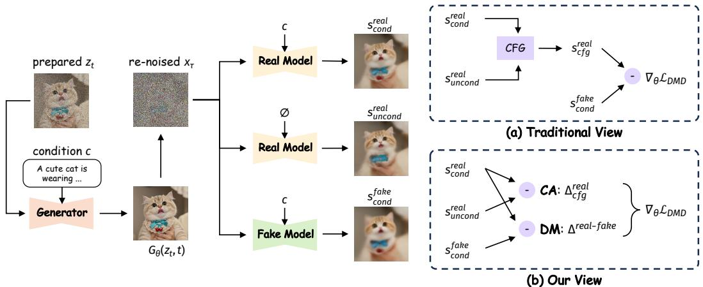
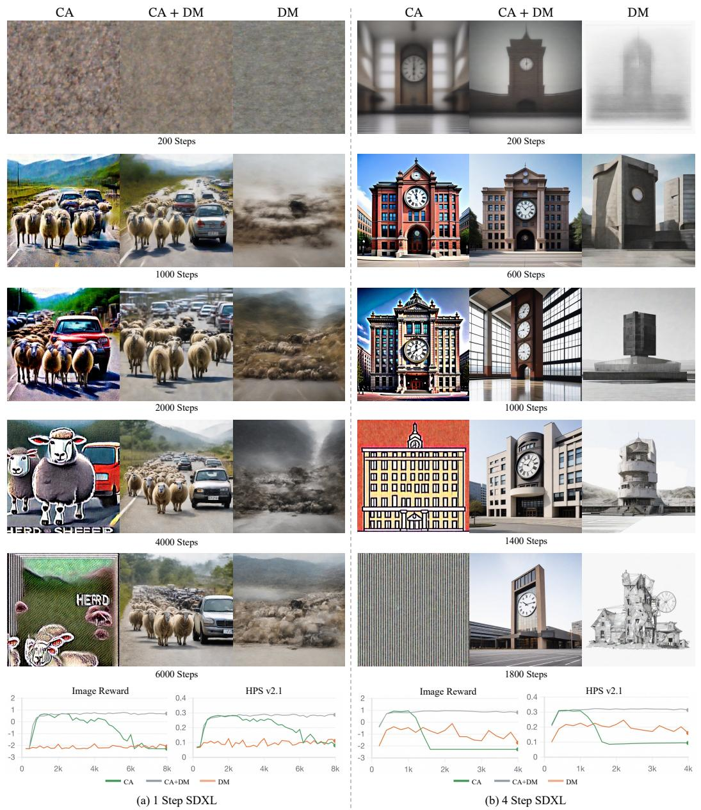
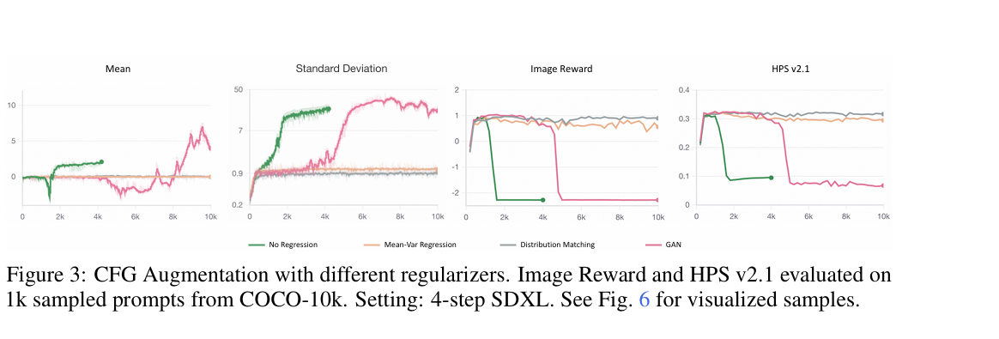
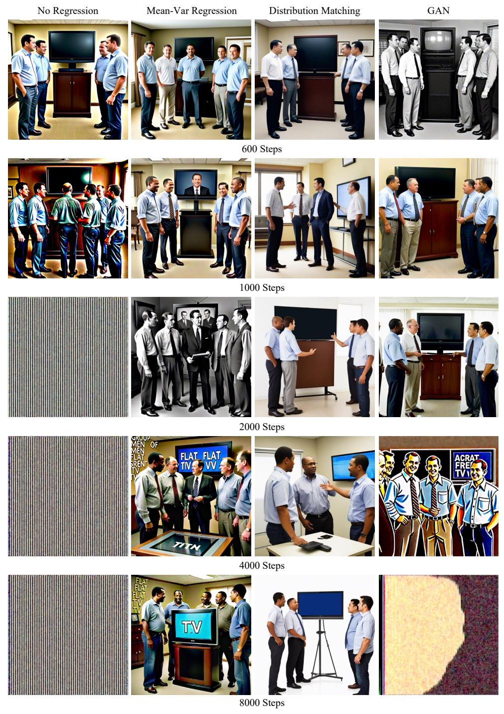
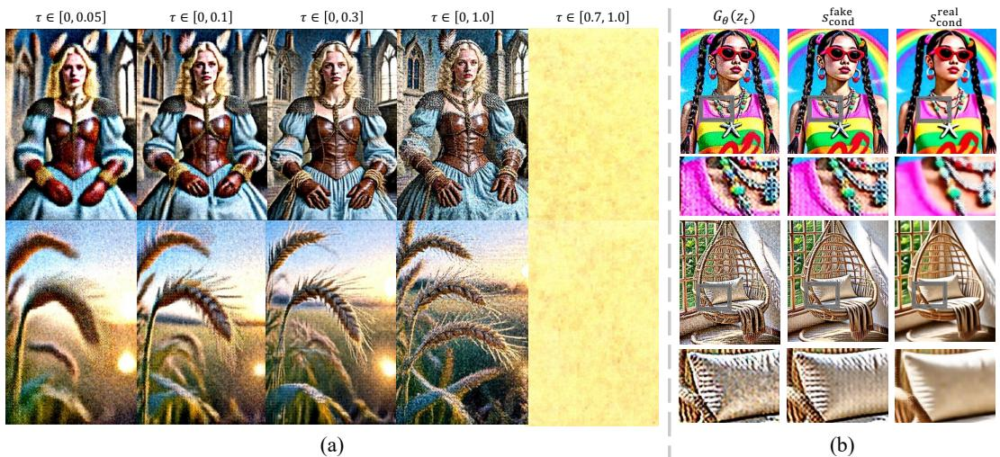

<!DOCTYPE html>


<html lang="zh-CN">
  

    <head>
      <meta charset="utf-8" />
        
      <meta name="description" content="用于记录学习笔记的个人网站" />
      
      <meta
        name="viewport"
        content="width=device-width, initial-scale=1, maximum-scale=1"
      />
      <title> twlelev的博客</title>
  <meta name="generator" content="hexo-theme-ayer">
      
      <link rel="shortcut icon" href="/favicon.ico" />
       
<link rel="stylesheet" href="/dist/main.css">

      
<link rel="stylesheet" href="/css/fonts/remixicon.css">

      
<link rel="stylesheet" href="/css/custom.css">
 
      <script src="https://cdn.staticfile.org/pace/1.2.4/pace.min.js"></script>
       
 

      <link
        rel="stylesheet"
        href="https://cdn.jsdelivr.net/npm/@sweetalert2/theme-bulma@5.0.1/bulma.min.css"
      />
      <script src="https://cdn.jsdelivr.net/npm/sweetalert2@11.0.19/dist/sweetalert2.min.js"></script>

      <!-- mermaid -->
      
      <style>
        .swal2-styled.swal2-confirm {
          font-size: 1.6rem;
        }
      </style>
    <link rel="stylesheet" href="/css/prism-tomorrow.css" type="text/css">
<link rel="stylesheet" href="/css/prism-line-numbers.css" type="text/css"></head>
  </html>
</html>


<body>
  <div id="app">
    
      
    <main class="content on">
      
<section class="cover">
    
  <div class="cover-frame">
    <div class="bg-box">
      
    </div>
    <div class="cover-inner text-center text-white">
      <h1><a href="/">twlelev的博客</a></h1>
      <div id="subtitle-box">
        
        <span id="subtitle"></span>
        
      </div>
      <div>
        
      </div>
    </div>
  </div>
  <div class="cover-learn-more">
    <a href="javascript:void(0)" class="anchor"><i class="ri-arrow-down-line"></i></a>
  </div>
</section>


<script src="https://cdn.staticfile.org/typed.js/2.0.12/typed.min.js"></script>


<!-- Subtitle -->

  <script>
    try {
      var typed = new Typed("#subtitle", {
        strings: ['再努力一点', '不必在乎别人提前拥有', '愿你的努力都能得到回报'],
        startDelay: 0,
        typeSpeed: 200,
        loop: true,
        backSpeed: 100,
        showCursor: true
      });
    } catch (err) {
      console.log(err)
    }
  </script>
  
<div id="main">
  <section class="outer">
  
  
  

<div class="notice" style="margin-top:50px">
    <i class="ri-heart-fill"></i>
    <div class="notice-content" id="broad"></div>
</div>
<script type="text/javascript">
    fetch('https://v1.hitokoto.cn')
        .then(response => response.json())
        .then(data => {
            document.getElementById("broad").innerHTML = data.hitokoto;
        })
        .catch(console.error)
</script>

<style>
    .notice {
        padding: 20px;
        border: 1px dashed #e6e6e6;
        color: #969696;
        position: relative;
        display: inline-block;
        width: 100%;
        background: #fbfbfb50;
        border-radius: 10px;
    }

    .notice i {
        float: left;
        color: #999;
        font-size: 16px;
        padding-right: 10px;
        vertical-align: middle;
        margin-top: -2px;
    }

    .notice-content {
        display: initial;
        vertical-align: middle;
    }
</style>
  
  <article class="articles">
    
    
    
    
    <article
  id="post-强化学习/强化学习V值学习之td-target实验分析"
  class="article article-type-post"
  itemscope
  itemprop="blogPost"
  data-scroll-reveal
>
  <div class="article-inner">
    
    <header class="article-header">
       
<h2 itemprop="name">
  <a class="article-title" href="/2026/01/09/qiang-hua-xue-xi/qiang-hua-xue-xi-v-zhi-xue-xi-zhi-td-target-shi-yan-fen-xi/"
    >强化学习V值学习之td_target实验分析</a> 
</h2>
 

      
    </header>
     
    <div class="article-meta">
      <a href="/2026/01/09/qiang-hua-xue-xi/qiang-hua-xue-xi-v-zhi-xue-xi-zhi-td-target-shi-yan-fen-xi/" class="article-date">
  <time datetime="2026-01-09T07:01:53.000Z" itemprop="datePublished">2026-01-09</time>
</a> 
  <div class="article-category">
    <a class="article-category-link" href="/categories/%E5%BC%BA%E5%8C%96%E5%AD%A6%E4%B9%A0/">强化学习</a>
  </div>
   
    </div>
      
    <div class="article-entry" itemprop="articleBody">
       
  <h1 id="强化学习实验报告ppo-算法中不同-td-target-对-value-网络拟合性能的影响分析"><a class="markdownIt-Anchor" href="#强化学习实验报告ppo-算法中不同-td-target-对-value-网络拟合性能的影响分析"></a> 强化学习实验报告：PPO 算法中不同 TD Target 对 Value 网络拟合性能的影响分析</h1>
<h2 id="1-实验动机-motivation"><a class="markdownIt-Anchor" href="#1-实验动机-motivation"></a> 1. 实验动机 (Motivation)</h2>
<p>在深度强化学习尤其是 Actor-Critic 类算法（如 PPO）中，价值网络（Critic）的拟合质量直接决定了优势函数（Advantage）的准确性，进而影响策略提升的稳定性。</p>
<p>本次实验旨在研究两种不同的 <span class="katex"><span class="katex-mathml"><math xmlns="http://www.w3.org/1998/Math/MathML"><semantics><mrow><mi>t</mi><mi>d</mi><mi mathvariant="normal">_</mi><mi>t</mi><mi>a</mi><mi>r</mi><mi>g</mi><mi>e</mi><mi>t</mi></mrow><annotation encoding="application/x-tex">td\_target</annotation></semantics></math></span><span class="katex-html" aria-hidden="true"><span class="base"><span class="strut" style="height:1.00444em;vertical-align:-0.31em;"></span><span class="mord mathnormal">t</span><span class="mord mathnormal">d</span><span class="mord" style="margin-right:0.02778em;">_</span><span class="mord mathnormal">t</span><span class="mord mathnormal">a</span><span class="mord mathnormal" style="margin-right:0.02778em;">r</span><span class="mord mathnormal" style="margin-right:0.03588em;">g</span><span class="mord mathnormal">e</span><span class="mord mathnormal">t</span></span></span></span> 计算方式对V值网络训练效果的影响：</p>
<ol>
<li><strong>1-step TD Target</strong>: 使用单步奖励和下一时刻预测值作为目标，<span class="katex"><span class="katex-mathml"><math xmlns="http://www.w3.org/1998/Math/MathML"><semantics><mrow><msub><mi>y</mi><mi>t</mi></msub><mo>=</mo><msub><mi>r</mi><mi>t</mi></msub><mo>+</mo><mi>γ</mi><mi>V</mi><mo stretchy="false">(</mo><msub><mi>s</mi><mrow><mi>t</mi><mo>+</mo><mn>1</mn></mrow></msub><mo stretchy="false">)</mo></mrow><annotation encoding="application/x-tex">y_t = r_t + \gamma V(s_{t+1})</annotation></semantics></math></span><span class="katex-html" aria-hidden="true"><span class="base"><span class="strut" style="height:0.625em;vertical-align:-0.19444em;"></span><span class="mord"><span class="mord mathnormal" style="margin-right:0.03588em;">y</span><span class="msupsub"><span class="vlist-t vlist-t2"><span class="vlist-r"><span class="vlist" style="height:0.2805559999999999em;"><span style="top:-2.5500000000000003em;margin-left:-0.03588em;margin-right:0.05em;"><span class="pstrut" style="height:2.7em;"></span><span class="sizing reset-size6 size3 mtight"><span class="mord mathnormal mtight">t</span></span></span></span><span class="vlist-s">​</span></span><span class="vlist-r"><span class="vlist" style="height:0.15em;"><span></span></span></span></span></span></span><span class="mspace" style="margin-right:0.2777777777777778em;"></span><span class="mrel">=</span><span class="mspace" style="margin-right:0.2777777777777778em;"></span></span><span class="base"><span class="strut" style="height:0.73333em;vertical-align:-0.15em;"></span><span class="mord"><span class="mord mathnormal" style="margin-right:0.02778em;">r</span><span class="msupsub"><span class="vlist-t vlist-t2"><span class="vlist-r"><span class="vlist" style="height:0.2805559999999999em;"><span style="top:-2.5500000000000003em;margin-left:-0.02778em;margin-right:0.05em;"><span class="pstrut" style="height:2.7em;"></span><span class="sizing reset-size6 size3 mtight"><span class="mord mathnormal mtight">t</span></span></span></span><span class="vlist-s">​</span></span><span class="vlist-r"><span class="vlist" style="height:0.15em;"><span></span></span></span></span></span></span><span class="mspace" style="margin-right:0.2222222222222222em;"></span><span class="mbin">+</span><span class="mspace" style="margin-right:0.2222222222222222em;"></span></span><span class="base"><span class="strut" style="height:1em;vertical-align:-0.25em;"></span><span class="mord mathnormal" style="margin-right:0.05556em;">γ</span><span class="mord mathnormal" style="margin-right:0.22222em;">V</span><span class="mopen">(</span><span class="mord"><span class="mord mathnormal">s</span><span class="msupsub"><span class="vlist-t vlist-t2"><span class="vlist-r"><span class="vlist" style="height:0.301108em;"><span style="top:-2.5500000000000003em;margin-left:0em;margin-right:0.05em;"><span class="pstrut" style="height:2.7em;"></span><span class="sizing reset-size6 size3 mtight"><span class="mord mtight"><span class="mord mathnormal mtight">t</span><span class="mbin mtight">+</span><span class="mord mtight">1</span></span></span></span></span><span class="vlist-s">​</span></span><span class="vlist-r"><span class="vlist" style="height:0.208331em;"><span></span></span></span></span></span></span><span class="mclose">)</span></span></span></span>。</li>
<li><strong>GAE (Generalized Advantage Estimation) Target</strong>: 使用多步的目标，<span class="katex"><span class="katex-mathml"><math xmlns="http://www.w3.org/1998/Math/MathML"><semantics><mrow><msub><mi>y</mi><mi>t</mi></msub><mo>=</mo><msubsup><mi>A</mi><mi>t</mi><mrow><mi>G</mi><mi>A</mi><mi>E</mi></mrow></msubsup><mo>+</mo><mi>V</mi><mo stretchy="false">(</mo><msub><mi>s</mi><mi>t</mi></msub><mo stretchy="false">)</mo></mrow><annotation encoding="application/x-tex">y_t = A^{GAE}_t + V(s_t)</annotation></semantics></math></span><span class="katex-html" aria-hidden="true"><span class="base"><span class="strut" style="height:0.625em;vertical-align:-0.19444em;"></span><span class="mord"><span class="mord mathnormal" style="margin-right:0.03588em;">y</span><span class="msupsub"><span class="vlist-t vlist-t2"><span class="vlist-r"><span class="vlist" style="height:0.2805559999999999em;"><span style="top:-2.5500000000000003em;margin-left:-0.03588em;margin-right:0.05em;"><span class="pstrut" style="height:2.7em;"></span><span class="sizing reset-size6 size3 mtight"><span class="mord mathnormal mtight">t</span></span></span></span><span class="vlist-s">​</span></span><span class="vlist-r"><span class="vlist" style="height:0.15em;"><span></span></span></span></span></span></span><span class="mspace" style="margin-right:0.2777777777777778em;"></span><span class="mrel">=</span><span class="mspace" style="margin-right:0.2777777777777778em;"></span></span><span class="base"><span class="strut" style="height:1.088331em;vertical-align:-0.247em;"></span><span class="mord"><span class="mord mathnormal">A</span><span class="msupsub"><span class="vlist-t vlist-t2"><span class="vlist-r"><span class="vlist" style="height:0.8413309999999999em;"><span style="top:-2.4530000000000003em;margin-left:0em;margin-right:0.05em;"><span class="pstrut" style="height:2.7em;"></span><span class="sizing reset-size6 size3 mtight"><span class="mord mathnormal mtight">t</span></span></span><span style="top:-3.063em;margin-right:0.05em;"><span class="pstrut" style="height:2.7em;"></span><span class="sizing reset-size6 size3 mtight"><span class="mord mtight"><span class="mord mathnormal mtight">G</span><span class="mord mathnormal mtight">A</span><span class="mord mathnormal mtight" style="margin-right:0.05764em;">E</span></span></span></span></span><span class="vlist-s">​</span></span><span class="vlist-r"><span class="vlist" style="height:0.247em;"><span></span></span></span></span></span></span><span class="mspace" style="margin-right:0.2222222222222222em;"></span><span class="mbin">+</span><span class="mspace" style="margin-right:0.2222222222222222em;"></span></span><span class="base"><span class="strut" style="height:1em;vertical-align:-0.25em;"></span><span class="mord mathnormal" style="margin-right:0.22222em;">V</span><span class="mopen">(</span><span class="mord"><span class="mord mathnormal">s</span><span class="msupsub"><span class="vlist-t vlist-t2"><span class="vlist-r"><span class="vlist" style="height:0.2805559999999999em;"><span style="top:-2.5500000000000003em;margin-left:0em;margin-right:0.05em;"><span class="pstrut" style="height:2.7em;"></span><span class="sizing reset-size6 size3 mtight"><span class="mord mathnormal mtight">t</span></span></span></span><span class="vlist-s">​</span></span><span class="vlist-r"><span class="vlist" style="height:0.15em;"><span></span></span></span></span></span></span><span class="mclose">)</span></span></span></span>，这等价于 TD(<span class="katex"><span class="katex-mathml"><math xmlns="http://www.w3.org/1998/Math/MathML"><semantics><mrow><mi>λ</mi></mrow><annotation encoding="application/x-tex">\lambda</annotation></semantics></math></span><span class="katex-html" aria-hidden="true"><span class="base"><span class="strut" style="height:0.69444em;vertical-align:0em;"></span><span class="mord mathnormal">λ</span></span></span></span>) 目标。</li>
</ol>
<p>理论分析如下：<br />
1-step理论上可以收敛更快，但是v值网络的目标是拟合Q值，1-step td target作为计算q值可能并不准确。<br />
gae target通过多步长期来看平衡了偏差与方差，作为计算Q值理论更准确，虽然收敛速度不如1-step td target,但是最终收敛效果应该优于1-step td target。</p>
<p>我们希望通过实验观察：在 <code>LunarLander-v3</code> 环境中，V值网络的目标函数对Critic 网络学得速度以及准确性的差异。</p>
<h2 id="2-实验方法-methodology"><a class="markdownIt-Anchor" href="#2-实验方法-methodology"></a> 2. 实验方法 (Methodology)</h2>
<ul>
<li><strong>算法</strong>: PPO (Proximal Policy Optimization)</li>
<li><strong>环境</strong>: <code>LunarLander-v3</code></li>
<li><strong>训练步数</strong>: 500,000 steps</li>
<li><strong>对比变量</strong>:<br />
    *   <strong>组A (Run 8858)</strong>: <code>td_target = r + v_next</code> (1-step TD)<br />
    *   <strong>组B (Run 8552)</strong>: <code>td_target = adv + v</code> (GAE/TD-lambda)</li>
<li><strong>核心评价指标</strong>: <strong>Explained Variance (解释方差)、avg_reward(平均回报)</strong>。</li>
</ul>
<h2 id="3-指标原理解析explained-variance-ev"><a class="markdownIt-Anchor" href="#3-指标原理解析explained-variance-ev"></a> 3. 指标原理解析：Explained Variance (EV)</h2>
<h3 id="31-什么是解释方差"><a class="markdownIt-Anchor" href="#31-什么是解释方差"></a> 3.1 什么是解释方差？</h3>
<p>解释方差是回归分析中的核心指标，用于衡量模型对数据波动的捕获能力。其计算公式为：</p>
<p class='katex-block'><span class="katex-display"><span class="katex"><span class="katex-mathml"><math xmlns="http://www.w3.org/1998/Math/MathML" display="block"><semantics><mrow><mi>E</mi><mi>V</mi><mo>=</mo><mn>1</mn><mo>−</mo><mfrac><mrow><mtext>Var</mtext><mo stretchy="false">(</mo><msub><mi>y</mi><mtext>true</mtext></msub><mo>−</mo><msub><mi>y</mi><mtext>pred</mtext></msub><mo stretchy="false">)</mo></mrow><mrow><mtext>Var</mtext><mo stretchy="false">(</mo><msub><mi>y</mi><mtext>true</mtext></msub><mo stretchy="false">)</mo></mrow></mfrac></mrow><annotation encoding="application/x-tex">EV = 1 - \frac{\text{Var}(y_{\text{true}} - y_{\text{pred}})}{\text{Var}(y_{\text{true}})}
</annotation></semantics></math></span><span class="katex-html" aria-hidden="true"><span class="base"><span class="strut" style="height:0.68333em;vertical-align:0em;"></span><span class="mord mathnormal" style="margin-right:0.05764em;">E</span><span class="mord mathnormal" style="margin-right:0.22222em;">V</span><span class="mspace" style="margin-right:0.2777777777777778em;"></span><span class="mrel">=</span><span class="mspace" style="margin-right:0.2777777777777778em;"></span></span><span class="base"><span class="strut" style="height:0.72777em;vertical-align:-0.08333em;"></span><span class="mord">1</span><span class="mspace" style="margin-right:0.2222222222222222em;"></span><span class="mbin">−</span><span class="mspace" style="margin-right:0.2222222222222222em;"></span></span><span class="base"><span class="strut" style="height:2.363em;vertical-align:-0.936em;"></span><span class="mord"><span class="mopen nulldelimiter"></span><span class="mfrac"><span class="vlist-t vlist-t2"><span class="vlist-r"><span class="vlist" style="height:1.427em;"><span style="top:-2.314em;"><span class="pstrut" style="height:3em;"></span><span class="mord"><span class="mord text"><span class="mord">Var</span></span><span class="mopen">(</span><span class="mord"><span class="mord mathnormal" style="margin-right:0.03588em;">y</span><span class="msupsub"><span class="vlist-t vlist-t2"><span class="vlist-r"><span class="vlist" style="height:0.2805559999999999em;"><span style="top:-2.5500000000000003em;margin-left:-0.03588em;margin-right:0.05em;"><span class="pstrut" style="height:2.7em;"></span><span class="sizing reset-size6 size3 mtight"><span class="mord mtight"><span class="mord text mtight"><span class="mord mtight">true</span></span></span></span></span></span><span class="vlist-s">​</span></span><span class="vlist-r"><span class="vlist" style="height:0.15em;"><span></span></span></span></span></span></span><span class="mclose">)</span></span></span><span style="top:-3.23em;"><span class="pstrut" style="height:3em;"></span><span class="frac-line" style="border-bottom-width:0.04em;"></span></span><span style="top:-3.677em;"><span class="pstrut" style="height:3em;"></span><span class="mord"><span class="mord text"><span class="mord">Var</span></span><span class="mopen">(</span><span class="mord"><span class="mord mathnormal" style="margin-right:0.03588em;">y</span><span class="msupsub"><span class="vlist-t vlist-t2"><span class="vlist-r"><span class="vlist" style="height:0.2805559999999999em;"><span style="top:-2.5500000000000003em;margin-left:-0.03588em;margin-right:0.05em;"><span class="pstrut" style="height:2.7em;"></span><span class="sizing reset-size6 size3 mtight"><span class="mord mtight"><span class="mord text mtight"><span class="mord mtight">true</span></span></span></span></span></span><span class="vlist-s">​</span></span><span class="vlist-r"><span class="vlist" style="height:0.15em;"><span></span></span></span></span></span></span><span class="mspace" style="margin-right:0.2222222222222222em;"></span><span class="mbin">−</span><span class="mspace" style="margin-right:0.2222222222222222em;"></span><span class="mord"><span class="mord mathnormal" style="margin-right:0.03588em;">y</span><span class="msupsub"><span class="vlist-t vlist-t2"><span class="vlist-r"><span class="vlist" style="height:0.3361079999999999em;"><span style="top:-2.5500000000000003em;margin-left:-0.03588em;margin-right:0.05em;"><span class="pstrut" style="height:2.7em;"></span><span class="sizing reset-size6 size3 mtight"><span class="mord mtight"><span class="mord text mtight"><span class="mord mtight">pred</span></span></span></span></span></span><span class="vlist-s">​</span></span><span class="vlist-r"><span class="vlist" style="height:0.286108em;"><span></span></span></span></span></span></span><span class="mclose">)</span></span></span></span><span class="vlist-s">​</span></span><span class="vlist-r"><span class="vlist" style="height:0.936em;"><span></span></span></span></span></span><span class="mclose nulldelimiter"></span></span></span></span></span></span></p>
<p>在强化学习中：</p>
<ul>
<li><span class="katex"><span class="katex-mathml"><math xmlns="http://www.w3.org/1998/Math/MathML"><semantics><mrow><msub><mi>y</mi><mtext>true</mtext></msub></mrow><annotation encoding="application/x-tex">y_{\text{true}}</annotation></semantics></math></span><span class="katex-html" aria-hidden="true"><span class="base"><span class="strut" style="height:0.625em;vertical-align:-0.19444em;"></span><span class="mord"><span class="mord mathnormal" style="margin-right:0.03588em;">y</span><span class="msupsub"><span class="vlist-t vlist-t2"><span class="vlist-r"><span class="vlist" style="height:0.2805559999999999em;"><span style="top:-2.5500000000000003em;margin-left:-0.03588em;margin-right:0.05em;"><span class="pstrut" style="height:2.7em;"></span><span class="sizing reset-size6 size3 mtight"><span class="mord mtight"><span class="mord text mtight"><span class="mord mtight">true</span></span></span></span></span></span><span class="vlist-s">​</span></span><span class="vlist-r"><span class="vlist" style="height:0.15em;"><span></span></span></span></span></span></span></span></span></span> 为计算出的收益目标（TD Target）。</li>
<li><span class="katex"><span class="katex-mathml"><math xmlns="http://www.w3.org/1998/Math/MathML"><semantics><mrow><msub><mi>y</mi><mtext>pred</mtext></msub></mrow><annotation encoding="application/x-tex">y_{\text{pred}}</annotation></semantics></math></span><span class="katex-html" aria-hidden="true"><span class="base"><span class="strut" style="height:0.716668em;vertical-align:-0.286108em;"></span><span class="mord"><span class="mord mathnormal" style="margin-right:0.03588em;">y</span><span class="msupsub"><span class="vlist-t vlist-t2"><span class="vlist-r"><span class="vlist" style="height:0.3361079999999999em;"><span style="top:-2.5500000000000003em;margin-left:-0.03588em;margin-right:0.05em;"><span class="pstrut" style="height:2.7em;"></span><span class="sizing reset-size6 size3 mtight"><span class="mord mtight"><span class="mord text mtight"><span class="mord mtight">pred</span></span></span></span></span></span><span class="vlist-s">​</span></span><span class="vlist-r"><span class="vlist" style="height:0.286108em;"><span></span></span></span></span></span></span></span></span></span> 为价值网络的预测值 <span class="katex"><span class="katex-mathml"><math xmlns="http://www.w3.org/1998/Math/MathML"><semantics><mrow><mi>V</mi><mo stretchy="false">(</mo><mi>s</mi><mo stretchy="false">)</mo></mrow><annotation encoding="application/x-tex">V(s)</annotation></semantics></math></span><span class="katex-html" aria-hidden="true"><span class="base"><span class="strut" style="height:1em;vertical-align:-0.25em;"></span><span class="mord mathnormal" style="margin-right:0.22222em;">V</span><span class="mopen">(</span><span class="mord mathnormal">s</span><span class="mclose">)</span></span></span></span>。</li>
</ul>
<h3 id="32-为什么-ev-是决定性指标"><a class="markdownIt-Anchor" href="#32-为什么-ev-是决定性指标"></a> 3.2 为什么 EV 是决定性指标？</h3>
<ul>
<li><strong>衡量拟合质量</strong>: 相比于 <code>value_loss</code>（绝对误差），EV 是一个归一化的指标。EV 越接近 1，说明 Critic 越能精准预测收益的波动；EV 较低甚至为负，说明 Critic 预测充满了来自环境或未来状态的噪声。</li>
<li><strong>指导信用分配</strong>: PPO 使用优势函数进行策略更新。只有当 <span class="katex"><span class="katex-mathml"><math xmlns="http://www.w3.org/1998/Math/MathML"><semantics><mrow><mi>V</mi></mrow><annotation encoding="application/x-tex">V</annotation></semantics></math></span><span class="katex-html" aria-hidden="true"><span class="base"><span class="strut" style="height:0.68333em;vertical-align:0em;"></span><span class="mord mathnormal" style="margin-right:0.22222em;">V</span></span></span></span> 能够解释大部分累计收益的波动（即 EV 高）时，减去 <span class="katex"><span class="katex-mathml"><math xmlns="http://www.w3.org/1998/Math/MathML"><semantics><mrow><mi>V</mi></mrow><annotation encoding="application/x-tex">V</annotation></semantics></math></span><span class="katex-html" aria-hidden="true"><span class="base"><span class="strut" style="height:0.68333em;vertical-align:0em;"></span><span class="mord mathnormal" style="margin-right:0.22222em;">V</span></span></span></span> 后的优势函数才能真实反映动作的相对优劣，从而降低梯度更新的方差。</li>
</ul>
<h2 id="4-实验结果与对比分析-results-analysis"><a class="markdownIt-Anchor" href="#4-实验结果与对比分析-results-analysis"></a> 4. 实验结果与对比分析 (Results &amp; Analysis)</h2>
<p>基于记录数据，实验汇总如下：</p>
<p></p>
<h2 id="5-理论总结与权衡-theoretical-trade-offs"><a class="markdownIt-Anchor" href="#5-理论总结与权衡-theoretical-trade-offs"></a> 5. 理论总结与权衡 (Theoretical Trade-offs)</h2>
<p>本次实验揭示了强化学习中经典的 <strong>“偏差-方差权衡” (Bias-Variance Trade-off)</strong></p>
<ol>
<li>
<p><strong>1-step TD (强信号、高偏差)</strong>：<br />
    *   <strong>优势</strong>：目标的随机性极小，信号传递极其迅速，能够让 Critic 网络在极短时间内实现高 Explained Variance。<br />
    *   <strong>代价</strong>：它是“短视”的，拟合的目标可能偏离真实的长期 Q 值，存在理论上的系统性偏差。</p>
</li>
<li>
<p><strong>GAE (低偏差、高方差)</strong>：<br />
    *   <strong>优势</strong>：通过利用多步乃至全轨迹的信息，GAE 能更准确地平衡偏差与方差。从长期来看，它拟合的价值函数更能代表真实的未来收益期望。<br />
    *   <strong>代价</strong>：由于累加了多步的不确定性，其目标函数波动剧烈，导致在训练早期收敛速度较慢，EV 指标相对较低。</p>
</li>
</ol>
 
      <!-- reward -->
      
    </div>
    

    <!-- copyright -->
    
    <footer class="article-footer">
       
  <ul class="article-tag-list" itemprop="keywords"><li class="article-tag-list-item"><a class="article-tag-list-link" href="/tags/PPO/" rel="tag">PPO</a></li></ul>

    </footer>
  </div>

   
   
  
</article>

    
    <article
  id="post-AIGC/Z-Image相关技术解析"
  class="article article-type-post"
  itemscope
  itemprop="blogPost"
  data-scroll-reveal
>
  <div class="article-inner">
    
    <header class="article-header">
       
<h2 itemprop="name">
  <a class="article-title" href="/2025/12/26/aigc/z-image-xiang-guan-ji-zhu-jie-xi/"
    >Z-Image相关技术解析</a> 
</h2>
 

      
    </header>
     
    <div class="article-meta">
      <a href="/2025/12/26/aigc/z-image-xiang-guan-ji-zhu-jie-xi/" class="article-date">
  <time datetime="2025-12-26T08:45:34.000Z" itemprop="datePublished">2025-12-26</time>
</a> 
  <div class="article-category">
    <a class="article-category-link" href="/categories/AIGC/">AIGC</a>
  </div>
   
    </div>
      
    <div class="article-entry" itemprop="articleBody">
       
  <h1 id="z-image基于单流扩散transformer的高效图像生成基础模型深度解析"><a class="markdownIt-Anchor" href="#z-image基于单流扩散transformer的高效图像生成基础模型深度解析"></a> Z-Image：基于单流扩散Transformer的高效图像生成基础模型深度解析</h1>
<h2 id="1-概述-introduction"><a class="markdownIt-Anchor" href="#1-概述-introduction"></a> 1. 概述 (Introduction)</h2>
<p>Z-Image 是由阿里巴巴团队开发的一款高效 6B 参数级图像生成基础模型。它挑战了当前主流模型（如 FLUX.2、Hunyuan-Image-3.0）依赖超大规模参数（20B~80B）的“规模至上”范式。</p>
<h3 id="核心亮点"><a class="markdownIt-Anchor" href="#核心亮点"></a> 核心亮点：</h3>
<ul>
<li>
<p><strong>计算高效性</strong>：仅需 314K H800 GPU 小时即可完成全流程训练（约 63 万美元），远低于同类竞品。</p>
</li>
<li>
<p><strong>架构创新</strong>：采用可扩展单流扩散 Transformer (S3-DiT) 架构。</p>
</li>
<li>
<p><strong>端到端优化</strong>：涵盖数据基础设施、训练课程、蒸馏 scheme 及强化学习。</p>
</li>
<li>
<p><strong>卓越性能</strong>：在写实图像生成和中英双语文字渲染方面表现优异。</p>
</li>
</ul>
<hr />
<h2 id="2-数据基础设施-data-infrastructure"><a class="markdownIt-Anchor" href="#2-数据基础设施-data-infrastructure"></a> 2. 数据基础设施 (Data Infrastructure)</h2>
<p>Z-Image 强调“数据效率”而非单纯 of “数据量”，通过四个核心引擎实现从原始数据到高质量训练样本的转化。该系统作为一个动态引擎，旨在固定预算内最大化知识获取率。</p>
<h3 id="21-数据分析引擎-data-profiling-engine"><a class="markdownIt-Anchor" href="#21-数据分析引擎-data-profiling-engine"></a> 2.1 数据分析引擎 (Data Profiling Engine)</h3>
<p>系统化处理大规模未清洗数据，提取多维特征：</p>
<ul>
<li>
<p><strong>基础元数据</strong>：缓存分辨率、文件大小，并计算 <strong>pHash (perceptual hash)</strong> 作为视觉指纹，实现快速去重。</p>
</li>
<li>
<p><strong>技术质量评估</strong>：</p>
</li>
</ul>
<p>*   <strong>压缩伪影</strong>：计算理想未压缩大小与实际大小的比例（Ratio）。</p>
<p>*   <strong>视觉退化</strong>：利用内部训练的模型评估清晰度、光照、构图等指标。</p>
<h3 id="22-跨模态向量引擎-cross-modal-vector-engine"><a class="markdownIt-Anchor" href="#22-跨模态向量引擎-cross-modal-vector-engine"></a> 2.2 跨模态向量引擎 (Cross-modal Vector Engine)</h3>
<ul>
<li>
<p><strong>语义去重</strong>：利用数十亿个 Embedding 进行大规模语义层面的数据精简，确保数据集的非冗余性。</p>
</li>
<li>
<p><strong>故障诊断与修复</strong>：通过跨模态搜索功能，精确定位导致模型失败的特定概念，并战略性地采样以填补空白。</p>
</li>
</ul>
<h3 id="23-世界知识拓扑图谱-world-knowledge-topological-graph"><a class="markdownIt-Anchor" href="#23-世界知识拓扑图谱-world-knowledge-topological-graph"></a> 2.3 世界知识拓扑图谱 (World Knowledge Topological Graph)</h3>
<ul>
<li>
<p><strong>分层组织</strong>：提供语义骨干，将知识结构化。</p>
</li>
<li>
<p><strong>语义指南针</strong>：识别数据集中的“概念盲区”，指导主动采样。</p>
</li>
<li>
<p><strong>分布重平衡</strong>：在训练过程中根据图谱拓扑结构重新平衡数据分布，提高学习效率。</p>
</li>
</ul>
<h3 id="24-主动策划引擎-active-curation-engine"><a class="markdownIt-Anchor" href="#24-主动策划引擎-active-curation-engine"></a> 2.4 主动策划引擎 (Active Curation Engine)</h3>
<ul>
<li>
<p><strong>前沿探索</strong>：自动采样模型表现不佳或缺乏知识的概念（“Hard Cases”）。</p>
</li>
<li>
<p><strong>闭环微调</strong>：驱动闭环标注流水线，持续提升数据质量。</p>
</li>
</ul>
<h3 id="25-图像编辑对的高效构建-efficient-construction-of-editing-pairs"><a class="markdownIt-Anchor" href="#25-图像编辑对的高效构建-efficient-construction-of-editing-pairs"></a> 2.5 图像编辑对的高效构建 (Efficient Construction of Editing Pairs)</h3>
<p>基于该基础设施，团队还构建了专门用于 Z-Image-Edit 的数据流水线，通过图形化表示高效生成编辑对。</p>
<hr />
<h2 id="3-图像标注器-image-captioner"><a class="markdownIt-Anchor" href="#3-图像标注器-image-captioner"></a> 3. 图像标注器 (Image Captioner)</h2>
<p>高质量的标注是理解语义的基础，Z-Image 采用了多维度的标注策略：</p>
<ul>
<li>
<p><strong>带有 OCR 信息的详细标注</strong>：不仅描述物体，还包含图像中的文字信息。</p>
</li>
<li>
<p><strong>结合世界知识的多层级标注</strong>：利用知识图谱增强标注的深度，使模型理解更复杂的概念。</p>
</li>
<li>
<p><strong>图像编辑的差异化标注 (Difference Caption)</strong>：描述图像修改前后的具体变化，专门用于训练编辑模型。</p>
</li>
</ul>
<hr />
<h2 id="4-模型架构s3-dit"><a class="markdownIt-Anchor" href="#4-模型架构s3-dit"></a> 4. 模型架构：S3-DiT</h2>
<p>Z-Image 采用了 <strong>Scalable Single-Stream Diffusion Transformer (S3-DiT)</strong> 架构。</p>
<h3 id="41-架构设计理念"><a class="markdownIt-Anchor" href="#41-架构设计理念"></a> 4.1 架构设计理念</h3>
<ul>
<li>
<p><strong>单流 (Single-Stream)</strong>：不同于将文本和图像分开处理的双流架构，S3-DiT 在每一层都进行深度的跨模态交互。</p>
</li>
<li>
<p><strong>多模态对齐</strong>：将文本 Token、图像 VAE Token 和图像语义 Token 统一处理。</p>
</li>
<li>
<p><strong>参数效率</strong>：在 6B 参数规模下实现了极高的表达能力。</p>
</li>
</ul>
<hr />
<h2 id="5-训练策略与效率优化"><a class="markdownIt-Anchor" href="#5-训练策略与效率优化"></a> 5. 训练策略与效率优化</h2>
<h3 id="51-训练课程设计-training-curriculum"><a class="markdownIt-Anchor" href="#51-训练课程设计-training-curriculum"></a> 5.1 训练课程设计 (Training Curriculum)</h3>
<ol>
<li>
<p><strong>低分辨率预训练 (Low-res. Pre-training)</strong>：在 <span class="katex"><span class="katex-mathml"><math xmlns="http://www.w3.org/1998/Math/MathML"><semantics><mrow><mn>25</mn><msup><mn>6</mn><mn>2</mn></msup></mrow><annotation encoding="application/x-tex">256^2</annotation></semantics></math></span><span class="katex-html" aria-hidden="true"><span class="base"><span class="strut" style="height:0.8141079999999999em;vertical-align:0em;"></span><span class="mord">2</span><span class="mord">5</span><span class="mord"><span class="mord">6</span><span class="msupsub"><span class="vlist-t"><span class="vlist-r"><span class="vlist" style="height:0.8141079999999999em;"><span style="top:-3.063em;margin-right:0.05em;"><span class="pstrut" style="height:2.7em;"></span><span class="sizing reset-size6 size3 mtight"><span class="mord mtight">2</span></span></span></span></span></span></span></span></span></span></span> 分辨率下建立基础的视觉-语义对齐。</p>
</li>
<li>
<p><strong>全能预训练 (Omni-pre-training)</strong>：统一处理任意分辨率生成、文生图及图生图任务。</p>
</li>
<li>
<p><strong>PE 感知的监督微调 (SFT)</strong>：利用提示词增强器 (Prompt Enhancer) 生成的详细描述进行微调。</p>
</li>
</ol>
<h3 id="52-训练成本明细-table-1"><a class="markdownIt-Anchor" href="#52-训练成本明细-table-1"></a> 5.2 训练成本明细 (Table 1)</h3>
<p>| 阶段 | H800 GPU 小时 | 估计成本 (USD) |</p>
<p>| :— | :— | :— |</p>
<p>| 低分辨率预训练 | 147.5K | $295K |</p>
<p>| 全能预训练 | 142.5K | $285K |</p>
<p>| 后训练 (Post-Training) | 24K | $48K |</p>
<p>| <strong>总计</strong> | <strong>314K</strong> | <strong>$628K</strong> |</p>
<hr />
<h2 id="6-推理加速与蒸馏-z-image-turbo"><a class="markdownIt-Anchor" href="#6-推理加速与蒸馏-z-image-turbo"></a> 6. 推理加速与蒸馏 (Z-Image-Turbo)</h2>
<p>为了实现亚秒级推理，团队提出了 Z-Image-Turbo，仅需 8 步 (NFE) 即可生成高质量图像，且显存占用低于 16GB VRAM。</p>
<h3 id="61-解耦-dmd-decoupled-dmd"><a class="markdownIt-Anchor" href="#61-解耦-dmd-decoupled-dmd"></a> 6.1 解耦 DMD (Decoupled DMD)</h3>
<p>传统的分步蒸馏（DMD）往往面临细节丢失和颜色退化的问题。Z-Image 通过<strong>解耦 (Decoupled)</strong> 策略，显式分离了质量增强和训练稳定性的角色。</p>
<h3 id="62-dmdr结合强化学习与正则化"><a class="markdownIt-Anchor" href="#62-dmdr结合强化学习与正则化"></a> 6.2 DMDR：结合强化学习与正则化</h3>
<p><strong>DMDR (Distribution Matching with Reinforcement learning)</strong> 将分布匹配项作为内在正则化项。其核心在于利用奖励反馈（Reward post-training）来提升模型的表现力：</p>
<ul>
<li>
<p><strong>阶段 1：离线对齐</strong>。使用 DPO (Direct Preference Optimization) 在客观维度进行对齐。</p>
</li>
<li>
<p><strong>阶段 2：在线精炼</strong>。利用 GRPO 进一步优化。</p>
</li>
</ul>
<h3 id="63-结果分析"><a class="markdownIt-Anchor" href="#63-结果分析"></a> 6.3 结果分析</h3>
<p>蒸馏后的 Z-Image-Turbo 在保持原有 6B 模型理解能力的同时，实现了推理速度的数量级提升。</p>
<hr />
<h2 id="7-强化学习与人类反馈-rlhf"><a class="markdownIt-Anchor" href="#7-强化学习与人类反馈-rlhf"></a> 7. 强化学习与人类反馈 (RLHF)</h2>
<p>通过多阶段的 RLHF 流程提升模型的美学和指令遵循能力：</p>
<ul>
<li>
<p><strong>奖励标注与训练</strong>：构建奖励模型以量化图像质量。</p>
</li>
<li>
<p><strong>提示词增强器 (Prompt Enhancer)</strong>：结合推理链（Reasoning Chain），将简短提示词转换为详细描述，增强模型对世界知识的理解。</p>
</li>
</ul>
<hr />
<h2 id="8-实验结果与可视化-results"><a class="markdownIt-Anchor" href="#8-实验结果与可视化-results"></a> 8. 实验结果与可视化 (Results)</h2>
<h3 id="81-写实图像生成-photo-realistic-generation"><a class="markdownIt-Anchor" href="#81-写实图像生成-photo-realistic-generation"></a> 8.1 写实图像生成 (Photo-realistic Generation)</h3>
<p>Z-Image 在捕捉复杂纹理、光影效果方面表现卓越。</p>
<p></p>
<p><em>图 1：Z-Image-Turbo 在写实照片生成中的表现。</em></p>
<h3 id="82-双语文字渲染-bilingual-text-rendering"><a class="markdownIt-Anchor" href="#82-双语文字渲染-bilingual-text-rendering"></a> 8.2 双语文字渲染 (Bilingual Text Rendering)</h3>
<p>模型能够精准地在生成的图像中嵌入中文和英文。</p>
<p></p>
<p><em>图 2：中英文字渲染示例。</em></p>
<h3 id="83-图像编辑-image-editing"><a class="markdownIt-Anchor" href="#83-图像编辑-image-editing"></a> 8.3 图像编辑 (Image Editing)</h3>
<p>Z-Image-Edit 展示了极强的指令遵循能力。</p>
<p></p>
<p><em>图 3：图生图及精确指令编辑示例。</em></p>
<hr />
<h2 id="9-结论"><a class="markdownIt-Anchor" href="#9-结论"></a> 9. 结论</h2>
<p>Z-Image 证明了通过系统性的流程优化和架构创新，可以在大幅降低计算成本的情况下，开发出达到甚至超过顶尖闭源商业模型水平的开源基础模型。其 6B 的紧凑体量使其在消费级显卡（&lt;16GB VRAM）上运行成为可能，极大的推进了高性能 AI 生成工具的普及。</p>
<h1 id="深度解读解耦-dmdcfg-增强为矛分布匹配为盾"><a class="markdownIt-Anchor" href="#深度解读解耦-dmdcfg-增强为矛分布匹配为盾"></a> 深度解读：解耦 DMD——CFG 增强为矛，分布匹配为盾</h1>
<p><strong>论文题目</strong>：DECOUPLED DMD: CFG AUGMENTATION AS THE SPEAR, DISTRIBUTION MATCHING AS THE SHIELD</p>
<p><strong>核心机构</strong>：阿里巴巴通义实验室 (Tongyi Lab), 香港中文大学 (CUHK)</p>
<p><strong>项目地址</strong>：<a target="_blank" rel="noopener" href="https://github.com/Tongyi-MAI/Z-Image">https://github.com/Tongyi-MAI/Z-Image</a></p>
<hr />
<h2 id="一-摘要与核心贡献"><a class="markdownIt-Anchor" href="#一-摘要与核心贡献"></a> 一、 摘要与核心贡献</h2>
<p>本文对扩散模型蒸馏（Diffusion Model Distillation, DMD）的内在机制提出了颠覆性的见解。传统的 DMD 算法被认为是通过匹配学生模型与教师模型的输出分布来工作的。然而，本文作者通过对 DMD 训练目标的严格分解发现：</p>
<ol>
<li>
<p><strong>真正的引擎并非分布匹配</strong>：在文本生成图像等复杂任务中，驱动“少步生成”的核心动力并非分布匹配，而是被长期忽视的 <strong>CFG 增强 (CFG Augmentation, CA)</strong>。</p>
</li>
<li>
<p><strong>分布匹配的角色是正则项</strong>：分布匹配（Distribution Matching, DM）项实际上起到的是“正则化”作用，用于确保训练稳定性并消除图像伪影。</p>
</li>
<li>
<p><strong>解耦与改进</strong>：基于这种分工解耦，作者提出了<strong>解耦的重噪调度（Decoupled Re-noising Schedules）</strong>，显著提升了蒸馏效果。</p>
</li>
</ol>
<p></p>
<p><em>图 1：(a) 传统视角认为 CFG 只是启发式放松；(b) 论文提出的解耦视角，将目标分为 CA 引擎和 DM 正则项。</em></p>
<hr />
<h2 id="二-dmd-的重新审视与数学分解"><a class="markdownIt-Anchor" href="#二-dmd-的重新审视与数学分解"></a> 二、 DMD 的重新审视与数学分解</h2>
<h3 id="21-理论回顾"><a class="markdownIt-Anchor" href="#21-理论回顾"></a> 2.1 理论回顾</h3>
<p>DMD 旨在训练一个学生生成器 <span class="katex"><span class="katex-mathml"><math xmlns="http://www.w3.org/1998/Math/MathML"><semantics><mrow><msub><mi>G</mi><mi>θ</mi></msub></mrow><annotation encoding="application/x-tex">G_{\theta}</annotation></semantics></math></span><span class="katex-html" aria-hidden="true"><span class="base"><span class="strut" style="height:0.83333em;vertical-align:-0.15em;"></span><span class="mord"><span class="mord mathnormal">G</span><span class="msupsub"><span class="vlist-t vlist-t2"><span class="vlist-r"><span class="vlist" style="height:0.33610799999999996em;"><span style="top:-2.5500000000000003em;margin-left:0em;margin-right:0.05em;"><span class="pstrut" style="height:2.7em;"></span><span class="sizing reset-size6 size3 mtight"><span class="mord mtight"><span class="mord mathnormal mtight" style="margin-right:0.02778em;">θ</span></span></span></span></span><span class="vlist-s">​</span></span><span class="vlist-r"><span class="vlist" style="height:0.15em;"><span></span></span></span></span></span></span></span></span></span>，通过最小化 <strong>积分 KL 散度 (IKL)</strong> 来模拟教师模型的输出分布：</p>
<p class='katex-block'><span class="katex-display"><span class="katex"><span class="katex-mathml"><math xmlns="http://www.w3.org/1998/Math/MathML" display="block"><semantics><mtable width="100%"><mtr><mtd width="50%"></mtd><mtd><mrow><msub><mi mathvariant="script">L</mi><mrow><mi>I</mi><mi>K</mi><mi>L</mi></mrow></msub><mo stretchy="false">(</mo><msub><mi>p</mi><mrow><mi>r</mi><mi>e</mi><mi>a</mi><mi>l</mi></mrow></msub><mo separator="true">,</mo><msub><mi>p</mi><mrow><mi>f</mi><mi>a</mi><mi>k</mi><mi>e</mi></mrow></msub><mo stretchy="false">)</mo><mo>=</mo><msubsup><mo>∫</mo><mn>0</mn><mn>1</mn></msubsup><mrow><mi mathvariant="double-struck">K</mi><mi mathvariant="double-struck">L</mi></mrow><mo stretchy="false">(</mo><msub><mi>p</mi><mrow><mi>r</mi><mi>e</mi><mi>a</mi><mi>l</mi><mo separator="true">,</mo><mi>τ</mi></mrow></msub><mi mathvariant="normal">∣</mi><mi mathvariant="normal">∣</mi><msub><mi>p</mi><mrow><mi>f</mi><mi>a</mi><mi>k</mi><mi>e</mi><mo separator="true">,</mo><mi>τ</mi></mrow></msub><mo stretchy="false">)</mo><mi>d</mi><mi>τ</mi></mrow></mtd><mtd width="50%"></mtd><mtd><mtext>(1)</mtext></mtd></mtr></mtable><annotation encoding="application/x-tex">\mathcal{L}_{IKL}(p_{real}, p_{fake}) = \int_{0}^{1} \mathbb{KL}(p_{real, \tau} || p_{fake, \tau}) d\tau \tag{1} 
</annotation></semantics></math></span><span class="katex-html" aria-hidden="true"><span class="base"><span class="strut" style="height:1.036108em;vertical-align:-0.286108em;"></span><span class="mord"><span class="mord"><span class="mord mathcal">L</span></span><span class="msupsub"><span class="vlist-t vlist-t2"><span class="vlist-r"><span class="vlist" style="height:0.32833099999999993em;"><span style="top:-2.5500000000000003em;margin-right:0.05em;"><span class="pstrut" style="height:2.7em;"></span><span class="sizing reset-size6 size3 mtight"><span class="mord mtight"><span class="mord mathnormal mtight" style="margin-right:0.07847em;">I</span><span class="mord mathnormal mtight" style="margin-right:0.07153em;">K</span><span class="mord mathnormal mtight">L</span></span></span></span></span><span class="vlist-s">​</span></span><span class="vlist-r"><span class="vlist" style="height:0.15em;"><span></span></span></span></span></span></span><span class="mopen">(</span><span class="mord"><span class="mord mathnormal">p</span><span class="msupsub"><span class="vlist-t vlist-t2"><span class="vlist-r"><span class="vlist" style="height:0.33610799999999996em;"><span style="top:-2.5500000000000003em;margin-left:0em;margin-right:0.05em;"><span class="pstrut" style="height:2.7em;"></span><span class="sizing reset-size6 size3 mtight"><span class="mord mtight"><span class="mord mathnormal mtight" style="margin-right:0.02778em;">r</span><span class="mord mathnormal mtight">e</span><span class="mord mathnormal mtight">a</span><span class="mord mathnormal mtight" style="margin-right:0.01968em;">l</span></span></span></span></span><span class="vlist-s">​</span></span><span class="vlist-r"><span class="vlist" style="height:0.15em;"><span></span></span></span></span></span></span><span class="mpunct">,</span><span class="mspace" style="margin-right:0.16666666666666666em;"></span><span class="mord"><span class="mord mathnormal">p</span><span class="msupsub"><span class="vlist-t vlist-t2"><span class="vlist-r"><span class="vlist" style="height:0.3361079999999999em;"><span style="top:-2.5500000000000003em;margin-left:0em;margin-right:0.05em;"><span class="pstrut" style="height:2.7em;"></span><span class="sizing reset-size6 size3 mtight"><span class="mord mtight"><span class="mord mathnormal mtight" style="margin-right:0.10764em;">f</span><span class="mord mathnormal mtight">a</span><span class="mord mathnormal mtight" style="margin-right:0.03148em;">k</span><span class="mord mathnormal mtight">e</span></span></span></span></span><span class="vlist-s">​</span></span><span class="vlist-r"><span class="vlist" style="height:0.286108em;"><span></span></span></span></span></span></span><span class="mclose">)</span><span class="mspace" style="margin-right:0.2777777777777778em;"></span><span class="mrel">=</span><span class="mspace" style="margin-right:0.2777777777777778em;"></span></span><span class="base"><span class="strut" style="height:2.4759580000000003em;vertical-align:-0.9119499999999999em;"></span><span class="mop"><span class="mop op-symbol large-op" style="margin-right:0.44445em;position:relative;top:-0.0011249999999999316em;">∫</span><span class="msupsub"><span class="vlist-t vlist-t2"><span class="vlist-r"><span class="vlist" style="height:1.5640080000000003em;"><span style="top:-1.7880500000000001em;margin-left:-0.44445em;margin-right:0.05em;"><span class="pstrut" style="height:2.7em;"></span><span class="sizing reset-size6 size3 mtight"><span class="mord mtight"><span class="mord mtight">0</span></span></span></span><span style="top:-3.8129000000000004em;margin-right:0.05em;"><span class="pstrut" style="height:2.7em;"></span><span class="sizing reset-size6 size3 mtight"><span class="mord mtight"><span class="mord mtight">1</span></span></span></span></span><span class="vlist-s">​</span></span><span class="vlist-r"><span class="vlist" style="height:0.9119499999999999em;"><span></span></span></span></span></span></span><span class="mspace" style="margin-right:0.16666666666666666em;"></span><span class="mord"><span class="mord mathbb">K</span><span class="mord mathbb">L</span></span><span class="mopen">(</span><span class="mord"><span class="mord mathnormal">p</span><span class="msupsub"><span class="vlist-t vlist-t2"><span class="vlist-r"><span class="vlist" style="height:0.3361079999999999em;"><span style="top:-2.5500000000000003em;margin-left:0em;margin-right:0.05em;"><span class="pstrut" style="height:2.7em;"></span><span class="sizing reset-size6 size3 mtight"><span class="mord mtight"><span class="mord mathnormal mtight" style="margin-right:0.02778em;">r</span><span class="mord mathnormal mtight">e</span><span class="mord mathnormal mtight">a</span><span class="mord mathnormal mtight" style="margin-right:0.01968em;">l</span><span class="mpunct mtight">,</span><span class="mord mathnormal mtight" style="margin-right:0.1132em;">τ</span></span></span></span></span><span class="vlist-s">​</span></span><span class="vlist-r"><span class="vlist" style="height:0.286108em;"><span></span></span></span></span></span></span><span class="mord">∣</span><span class="mord">∣</span><span class="mord"><span class="mord mathnormal">p</span><span class="msupsub"><span class="vlist-t vlist-t2"><span class="vlist-r"><span class="vlist" style="height:0.3361079999999999em;"><span style="top:-2.5500000000000003em;margin-left:0em;margin-right:0.05em;"><span class="pstrut" style="height:2.7em;"></span><span class="sizing reset-size6 size3 mtight"><span class="mord mtight"><span class="mord mathnormal mtight" style="margin-right:0.10764em;">f</span><span class="mord mathnormal mtight">a</span><span class="mord mathnormal mtight" style="margin-right:0.03148em;">k</span><span class="mord mathnormal mtight">e</span><span class="mpunct mtight">,</span><span class="mord mathnormal mtight" style="margin-right:0.1132em;">τ</span></span></span></span></span><span class="vlist-s">​</span></span><span class="vlist-r"><span class="vlist" style="height:0.286108em;"><span></span></span></span></span></span></span><span class="mclose">)</span><span class="mord mathnormal">d</span><span class="mord mathnormal" style="margin-right:0.1132em;">τ</span></span><span class="tag"><span class="strut" style="height:2.4759580000000003em;vertical-align:-0.9119499999999999em;"></span><span class="mord text"><span class="mord">(</span><span class="mord"><span class="mord">1</span></span><span class="mord">)</span></span></span></span></span></span></p>
<p>理想情况下，参数 <span class="katex"><span class="katex-mathml"><math xmlns="http://www.w3.org/1998/Math/MathML"><semantics><mrow><mi>θ</mi></mrow><annotation encoding="application/x-tex">\theta</annotation></semantics></math></span><span class="katex-html" aria-hidden="true"><span class="base"><span class="strut" style="height:0.69444em;vertical-align:0em;"></span><span class="mord mathnormal" style="margin-right:0.02778em;">θ</span></span></span></span> 的梯度估计为：</p>
<p class='katex-block'><span class="katex-display"><span class="katex"><span class="katex-mathml"><math xmlns="http://www.w3.org/1998/Math/MathML" display="block"><semantics><mtable width="100%"><mtr><mtd width="50%"></mtd><mtd><mrow><msub><mi mathvariant="normal">∇</mi><mi>θ</mi></msub><msub><mi mathvariant="script">L</mi><mrow><mi>t</mi><mi>h</mi><mi>e</mi><mi>o</mi><mi>r</mi><mi>y</mi></mrow></msub><mo>=</mo><mi mathvariant="double-struck">E</mi><mrow><mo fence="true">[</mo><mo>−</mo><mrow><mo fence="true">(</mo><msubsup><mi>s</mi><mrow><mi>c</mi><mi>o</mi><mi>n</mi><mi>d</mi></mrow><mrow><mi>r</mi><mi>e</mi><mi>a</mi><mi>l</mi></mrow></msubsup><mo stretchy="false">(</mo><msub><mi mathvariant="bold">x</mi><mi>τ</mi></msub><mo stretchy="false">)</mo><mo>−</mo><msubsup><mi>s</mi><mrow><mi>c</mi><mi>o</mi><mi>n</mi><mi>d</mi></mrow><mrow><mi>f</mi><mi>a</mi><mi>k</mi><mi>e</mi></mrow></msubsup><mo stretchy="false">(</mo><msub><mi mathvariant="bold">x</mi><mi>τ</mi></msub><mo stretchy="false">)</mo><mo fence="true">)</mo></mrow><mfrac><mrow><mi mathvariant="normal">∂</mi><msub><mi>G</mi><mi>θ</mi></msub><mo stretchy="false">(</mo><msub><mi>z</mi><mi>t</mi></msub><mo stretchy="false">)</mo></mrow><mrow><mi mathvariant="normal">∂</mi><mi>θ</mi></mrow></mfrac><mo fence="true">]</mo></mrow></mrow></mtd><mtd width="50%"></mtd><mtd><mtext>(2)</mtext></mtd></mtr></mtable><annotation encoding="application/x-tex">\nabla_{\theta} \mathcal{L}_{theory} = \mathbb{E} \left[ - \left(s_{cond}^{real}(\mathbf{x}_{\tau}) - s_{cond}^{fake}(\mathbf{x}_{\tau})\right) \frac{\partial G_{\theta}(z_t)}{\partial \theta} \right] \tag{2} 
</annotation></semantics></math></span><span class="katex-html" aria-hidden="true"><span class="base"><span class="strut" style="height:0.969438em;vertical-align:-0.286108em;"></span><span class="mord"><span class="mord">∇</span><span class="msupsub"><span class="vlist-t vlist-t2"><span class="vlist-r"><span class="vlist" style="height:0.33610799999999996em;"><span style="top:-2.5500000000000003em;margin-left:0em;margin-right:0.05em;"><span class="pstrut" style="height:2.7em;"></span><span class="sizing reset-size6 size3 mtight"><span class="mord mtight"><span class="mord mathnormal mtight" style="margin-right:0.02778em;">θ</span></span></span></span></span><span class="vlist-s">​</span></span><span class="vlist-r"><span class="vlist" style="height:0.15em;"><span></span></span></span></span></span></span><span class="mord"><span class="mord"><span class="mord mathcal">L</span></span><span class="msupsub"><span class="vlist-t vlist-t2"><span class="vlist-r"><span class="vlist" style="height:0.3361079999999999em;"><span style="top:-2.5500000000000003em;margin-right:0.05em;"><span class="pstrut" style="height:2.7em;"></span><span class="sizing reset-size6 size3 mtight"><span class="mord mtight"><span class="mord mathnormal mtight">t</span><span class="mord mathnormal mtight">h</span><span class="mord mathnormal mtight">e</span><span class="mord mathnormal mtight">o</span><span class="mord mathnormal mtight" style="margin-right:0.02778em;">r</span><span class="mord mathnormal mtight" style="margin-right:0.03588em;">y</span></span></span></span></span><span class="vlist-s">​</span></span><span class="vlist-r"><span class="vlist" style="height:0.286108em;"><span></span></span></span></span></span></span><span class="mspace" style="margin-right:0.2777777777777778em;"></span><span class="mrel">=</span><span class="mspace" style="margin-right:0.2777777777777778em;"></span></span><span class="base"><span class="strut" style="height:2.40003em;vertical-align:-0.95003em;"></span><span class="mord"><span class="mord mathbb">E</span></span><span class="mspace" style="margin-right:0.16666666666666666em;"></span><span class="minner"><span class="mopen delimcenter" style="top:0em;"><span class="delimsizing size3">[</span></span><span class="mord">−</span><span class="mspace" style="margin-right:0.16666666666666666em;"></span><span class="minner"><span class="mopen delimcenter" style="top:0em;"><span class="delimsizing size2">(</span></span><span class="mord"><span class="mord mathnormal">s</span><span class="msupsub"><span class="vlist-t vlist-t2"><span class="vlist-r"><span class="vlist" style="height:0.8991079999999998em;"><span style="top:-2.4530000000000003em;margin-left:0em;margin-right:0.05em;"><span class="pstrut" style="height:2.7em;"></span><span class="sizing reset-size6 size3 mtight"><span class="mord mtight"><span class="mord mathnormal mtight">c</span><span class="mord mathnormal mtight">o</span><span class="mord mathnormal mtight">n</span><span class="mord mathnormal mtight">d</span></span></span></span><span style="top:-3.113em;margin-right:0.05em;"><span class="pstrut" style="height:2.7em;"></span><span class="sizing reset-size6 size3 mtight"><span class="mord mtight"><span class="mord mathnormal mtight" style="margin-right:0.02778em;">r</span><span class="mord mathnormal mtight">e</span><span class="mord mathnormal mtight">a</span><span class="mord mathnormal mtight" style="margin-right:0.01968em;">l</span></span></span></span></span><span class="vlist-s">​</span></span><span class="vlist-r"><span class="vlist" style="height:0.247em;"><span></span></span></span></span></span></span><span class="mopen">(</span><span class="mord"><span class="mord"><span class="mord mathbf">x</span></span><span class="msupsub"><span class="vlist-t vlist-t2"><span class="vlist-r"><span class="vlist" style="height:0.151392em;"><span style="top:-2.5500000000000003em;margin-right:0.05em;"><span class="pstrut" style="height:2.7em;"></span><span class="sizing reset-size6 size3 mtight"><span class="mord mtight"><span class="mord mathnormal mtight" style="margin-right:0.1132em;">τ</span></span></span></span></span><span class="vlist-s">​</span></span><span class="vlist-r"><span class="vlist" style="height:0.15em;"><span></span></span></span></span></span></span><span class="mclose">)</span><span class="mspace" style="margin-right:0.2222222222222222em;"></span><span class="mbin">−</span><span class="mspace" style="margin-right:0.2222222222222222em;"></span><span class="mord"><span class="mord mathnormal">s</span><span class="msupsub"><span class="vlist-t vlist-t2"><span class="vlist-r"><span class="vlist" style="height:0.9670159999999998em;"><span style="top:-2.3986920000000005em;margin-left:0em;margin-right:0.05em;"><span class="pstrut" style="height:2.7em;"></span><span class="sizing reset-size6 size3 mtight"><span class="mord mtight"><span class="mord mathnormal mtight">c</span><span class="mord mathnormal mtight">o</span><span class="mord mathnormal mtight">n</span><span class="mord mathnormal mtight">d</span></span></span></span><span style="top:-3.180908em;margin-right:0.05em;"><span class="pstrut" style="height:2.7em;"></span><span class="sizing reset-size6 size3 mtight"><span class="mord mtight"><span class="mord mathnormal mtight" style="margin-right:0.10764em;">f</span><span class="mord mathnormal mtight">a</span><span class="mord mathnormal mtight" style="margin-right:0.03148em;">k</span><span class="mord mathnormal mtight">e</span></span></span></span></span><span class="vlist-s">​</span></span><span class="vlist-r"><span class="vlist" style="height:0.3013079999999999em;"><span></span></span></span></span></span></span><span class="mopen">(</span><span class="mord"><span class="mord"><span class="mord mathbf">x</span></span><span class="msupsub"><span class="vlist-t vlist-t2"><span class="vlist-r"><span class="vlist" style="height:0.151392em;"><span style="top:-2.5500000000000003em;margin-right:0.05em;"><span class="pstrut" style="height:2.7em;"></span><span class="sizing reset-size6 size3 mtight"><span class="mord mtight"><span class="mord mathnormal mtight" style="margin-right:0.1132em;">τ</span></span></span></span></span><span class="vlist-s">​</span></span><span class="vlist-r"><span class="vlist" style="height:0.15em;"><span></span></span></span></span></span></span><span class="mclose">)</span><span class="mclose delimcenter" style="top:0em;"><span class="delimsizing size2">)</span></span></span><span class="mspace" style="margin-right:0.16666666666666666em;"></span><span class="mord"><span class="mopen nulldelimiter"></span><span class="mfrac"><span class="vlist-t vlist-t2"><span class="vlist-r"><span class="vlist" style="height:1.427em;"><span style="top:-2.314em;"><span class="pstrut" style="height:3em;"></span><span class="mord"><span class="mord" style="margin-right:0.05556em;">∂</span><span class="mord mathnormal" style="margin-right:0.02778em;">θ</span></span></span><span style="top:-3.23em;"><span class="pstrut" style="height:3em;"></span><span class="frac-line" style="border-bottom-width:0.04em;"></span></span><span style="top:-3.677em;"><span class="pstrut" style="height:3em;"></span><span class="mord"><span class="mord" style="margin-right:0.05556em;">∂</span><span class="mord"><span class="mord mathnormal">G</span><span class="msupsub"><span class="vlist-t vlist-t2"><span class="vlist-r"><span class="vlist" style="height:0.33610799999999996em;"><span style="top:-2.5500000000000003em;margin-left:0em;margin-right:0.05em;"><span class="pstrut" style="height:2.7em;"></span><span class="sizing reset-size6 size3 mtight"><span class="mord mtight"><span class="mord mathnormal mtight" style="margin-right:0.02778em;">θ</span></span></span></span></span><span class="vlist-s">​</span></span><span class="vlist-r"><span class="vlist" style="height:0.15em;"><span></span></span></span></span></span></span><span class="mopen">(</span><span class="mord"><span class="mord mathnormal" style="margin-right:0.04398em;">z</span><span class="msupsub"><span class="vlist-t vlist-t2"><span class="vlist-r"><span class="vlist" style="height:0.2805559999999999em;"><span style="top:-2.5500000000000003em;margin-left:-0.04398em;margin-right:0.05em;"><span class="pstrut" style="height:2.7em;"></span><span class="sizing reset-size6 size3 mtight"><span class="mord mathnormal mtight">t</span></span></span></span><span class="vlist-s">​</span></span><span class="vlist-r"><span class="vlist" style="height:0.15em;"><span></span></span></span></span></span></span><span class="mclose">)</span></span></span></span><span class="vlist-s">​</span></span><span class="vlist-r"><span class="vlist" style="height:0.686em;"><span></span></span></span></span></span><span class="mclose nulldelimiter"></span></span><span class="mclose delimcenter" style="top:0em;"><span class="delimsizing size3">]</span></span></span></span><span class="tag"><span class="strut" style="height:2.40003em;vertical-align:-0.95003em;"></span><span class="mord text"><span class="mord">(</span><span class="mord"><span class="mord">2</span></span><span class="mord">)</span></span></span></span></span></span></p>
<h3 id="22-实践中的偏离"><a class="markdownIt-Anchor" href="#22-实践中的偏离"></a> 2.2 实践中的偏离</h3>
<p>在实际的大规模文本图像任务中，开发者发现直接使用公式 (2) 效果极差。为了提升效果，实践中会对教师分数采用 <strong>分类器自由引导 (CFG)</strong>：</p>
<p class='katex-block'><span class="katex-display"><span class="katex"><span class="katex-mathml"><math xmlns="http://www.w3.org/1998/Math/MathML" display="block"><semantics><mtable width="100%"><mtr><mtd width="50%"></mtd><mtd><mrow><msub><mi mathvariant="normal">∇</mi><mi>θ</mi></msub><msub><mi mathvariant="script">L</mi><mrow><mi>D</mi><mi>M</mi><mi>D</mi></mrow></msub><mo>=</mo><mi mathvariant="double-struck">E</mi><mrow><mo fence="true">[</mo><mo>−</mo><mrow><mo fence="true">(</mo><msubsup><mi>s</mi><mrow><mi>c</mi><mi>f</mi><mi>g</mi></mrow><mrow><mi>r</mi><mi>e</mi><mi>a</mi><mi>l</mi></mrow></msubsup><mo stretchy="false">(</mo><msub><mi mathvariant="bold">x</mi><mi>τ</mi></msub><mo stretchy="false">)</mo><mo>−</mo><msubsup><mi>s</mi><mrow><mi>c</mi><mi>o</mi><mi>n</mi><mi>d</mi></mrow><mrow><mi>f</mi><mi>a</mi><mi>k</mi><mi>e</mi></mrow></msubsup><mo stretchy="false">(</mo><msub><mi mathvariant="bold">x</mi><mi>τ</mi></msub><mo stretchy="false">)</mo><mo fence="true">)</mo></mrow><mfrac><mrow><mi mathvariant="normal">∂</mi><msub><mi>G</mi><mi>θ</mi></msub><mo stretchy="false">(</mo><msub><mi>z</mi><mi>t</mi></msub><mo stretchy="false">)</mo></mrow><mrow><mi mathvariant="normal">∂</mi><mi>θ</mi></mrow></mfrac><mo fence="true">]</mo></mrow></mrow></mtd><mtd width="50%"></mtd><mtd><mtext>(3)</mtext></mtd></mtr></mtable><annotation encoding="application/x-tex">\nabla_{\theta} \mathcal{L}_{DMD} = \mathbb{E} \left[ - \left(s_{cfg}^{real}(\mathbf{x}_{\tau}) - s_{cond}^{fake}(\mathbf{x}_{\tau})\right) \frac{\partial G_{\theta}(z_t)}{\partial \theta} \right] \tag{3} 
</annotation></semantics></math></span><span class="katex-html" aria-hidden="true"><span class="base"><span class="strut" style="height:0.83333em;vertical-align:-0.15em;"></span><span class="mord"><span class="mord">∇</span><span class="msupsub"><span class="vlist-t vlist-t2"><span class="vlist-r"><span class="vlist" style="height:0.33610799999999996em;"><span style="top:-2.5500000000000003em;margin-left:0em;margin-right:0.05em;"><span class="pstrut" style="height:2.7em;"></span><span class="sizing reset-size6 size3 mtight"><span class="mord mtight"><span class="mord mathnormal mtight" style="margin-right:0.02778em;">θ</span></span></span></span></span><span class="vlist-s">​</span></span><span class="vlist-r"><span class="vlist" style="height:0.15em;"><span></span></span></span></span></span></span><span class="mord"><span class="mord"><span class="mord mathcal">L</span></span><span class="msupsub"><span class="vlist-t vlist-t2"><span class="vlist-r"><span class="vlist" style="height:0.32833099999999993em;"><span style="top:-2.5500000000000003em;margin-right:0.05em;"><span class="pstrut" style="height:2.7em;"></span><span class="sizing reset-size6 size3 mtight"><span class="mord mtight"><span class="mord mathnormal mtight" style="margin-right:0.02778em;">D</span><span class="mord mathnormal mtight" style="margin-right:0.10903em;">M</span><span class="mord mathnormal mtight" style="margin-right:0.02778em;">D</span></span></span></span></span><span class="vlist-s">​</span></span><span class="vlist-r"><span class="vlist" style="height:0.15em;"><span></span></span></span></span></span></span><span class="mspace" style="margin-right:0.2777777777777778em;"></span><span class="mrel">=</span><span class="mspace" style="margin-right:0.2777777777777778em;"></span></span><span class="base"><span class="strut" style="height:2.40003em;vertical-align:-0.95003em;"></span><span class="mord"><span class="mord mathbb">E</span></span><span class="mspace" style="margin-right:0.16666666666666666em;"></span><span class="minner"><span class="mopen delimcenter" style="top:0em;"><span class="delimsizing size3">[</span></span><span class="mord">−</span><span class="mspace" style="margin-right:0.16666666666666666em;"></span><span class="minner"><span class="mopen delimcenter" style="top:0em;"><span class="delimsizing size2">(</span></span><span class="mord"><span class="mord mathnormal">s</span><span class="msupsub"><span class="vlist-t vlist-t2"><span class="vlist-r"><span class="vlist" style="height:0.899108em;"><span style="top:-2.4530000000000003em;margin-left:0em;margin-right:0.05em;"><span class="pstrut" style="height:2.7em;"></span><span class="sizing reset-size6 size3 mtight"><span class="mord mtight"><span class="mord mathnormal mtight">c</span><span class="mord mathnormal mtight" style="margin-right:0.10764em;">f</span><span class="mord mathnormal mtight" style="margin-right:0.03588em;">g</span></span></span></span><span style="top:-3.1130000000000004em;margin-right:0.05em;"><span class="pstrut" style="height:2.7em;"></span><span class="sizing reset-size6 size3 mtight"><span class="mord mtight"><span class="mord mathnormal mtight" style="margin-right:0.02778em;">r</span><span class="mord mathnormal mtight">e</span><span class="mord mathnormal mtight">a</span><span class="mord mathnormal mtight" style="margin-right:0.01968em;">l</span></span></span></span></span><span class="vlist-s">​</span></span><span class="vlist-r"><span class="vlist" style="height:0.383108em;"><span></span></span></span></span></span></span><span class="mopen">(</span><span class="mord"><span class="mord"><span class="mord mathbf">x</span></span><span class="msupsub"><span class="vlist-t vlist-t2"><span class="vlist-r"><span class="vlist" style="height:0.151392em;"><span style="top:-2.5500000000000003em;margin-right:0.05em;"><span class="pstrut" style="height:2.7em;"></span><span class="sizing reset-size6 size3 mtight"><span class="mord mtight"><span class="mord mathnormal mtight" style="margin-right:0.1132em;">τ</span></span></span></span></span><span class="vlist-s">​</span></span><span class="vlist-r"><span class="vlist" style="height:0.15em;"><span></span></span></span></span></span></span><span class="mclose">)</span><span class="mspace" style="margin-right:0.2222222222222222em;"></span><span class="mbin">−</span><span class="mspace" style="margin-right:0.2222222222222222em;"></span><span class="mord"><span class="mord mathnormal">s</span><span class="msupsub"><span class="vlist-t vlist-t2"><span class="vlist-r"><span class="vlist" style="height:0.9670159999999998em;"><span style="top:-2.3986920000000005em;margin-left:0em;margin-right:0.05em;"><span class="pstrut" style="height:2.7em;"></span><span class="sizing reset-size6 size3 mtight"><span class="mord mtight"><span class="mord mathnormal mtight">c</span><span class="mord mathnormal mtight">o</span><span class="mord mathnormal mtight">n</span><span class="mord mathnormal mtight">d</span></span></span></span><span style="top:-3.180908em;margin-right:0.05em;"><span class="pstrut" style="height:2.7em;"></span><span class="sizing reset-size6 size3 mtight"><span class="mord mtight"><span class="mord mathnormal mtight" style="margin-right:0.10764em;">f</span><span class="mord mathnormal mtight">a</span><span class="mord mathnormal mtight" style="margin-right:0.03148em;">k</span><span class="mord mathnormal mtight">e</span></span></span></span></span><span class="vlist-s">​</span></span><span class="vlist-r"><span class="vlist" style="height:0.3013079999999999em;"><span></span></span></span></span></span></span><span class="mopen">(</span><span class="mord"><span class="mord"><span class="mord mathbf">x</span></span><span class="msupsub"><span class="vlist-t vlist-t2"><span class="vlist-r"><span class="vlist" style="height:0.151392em;"><span style="top:-2.5500000000000003em;margin-right:0.05em;"><span class="pstrut" style="height:2.7em;"></span><span class="sizing reset-size6 size3 mtight"><span class="mord mtight"><span class="mord mathnormal mtight" style="margin-right:0.1132em;">τ</span></span></span></span></span><span class="vlist-s">​</span></span><span class="vlist-r"><span class="vlist" style="height:0.15em;"><span></span></span></span></span></span></span><span class="mclose">)</span><span class="mclose delimcenter" style="top:0em;"><span class="delimsizing size2">)</span></span></span><span class="mspace" style="margin-right:0.16666666666666666em;"></span><span class="mord"><span class="mopen nulldelimiter"></span><span class="mfrac"><span class="vlist-t vlist-t2"><span class="vlist-r"><span class="vlist" style="height:1.427em;"><span style="top:-2.314em;"><span class="pstrut" style="height:3em;"></span><span class="mord"><span class="mord" style="margin-right:0.05556em;">∂</span><span class="mord mathnormal" style="margin-right:0.02778em;">θ</span></span></span><span style="top:-3.23em;"><span class="pstrut" style="height:3em;"></span><span class="frac-line" style="border-bottom-width:0.04em;"></span></span><span style="top:-3.677em;"><span class="pstrut" style="height:3em;"></span><span class="mord"><span class="mord" style="margin-right:0.05556em;">∂</span><span class="mord"><span class="mord mathnormal">G</span><span class="msupsub"><span class="vlist-t vlist-t2"><span class="vlist-r"><span class="vlist" style="height:0.33610799999999996em;"><span style="top:-2.5500000000000003em;margin-left:0em;margin-right:0.05em;"><span class="pstrut" style="height:2.7em;"></span><span class="sizing reset-size6 size3 mtight"><span class="mord mtight"><span class="mord mathnormal mtight" style="margin-right:0.02778em;">θ</span></span></span></span></span><span class="vlist-s">​</span></span><span class="vlist-r"><span class="vlist" style="height:0.15em;"><span></span></span></span></span></span></span><span class="mopen">(</span><span class="mord"><span class="mord mathnormal" style="margin-right:0.04398em;">z</span><span class="msupsub"><span class="vlist-t vlist-t2"><span class="vlist-r"><span class="vlist" style="height:0.2805559999999999em;"><span style="top:-2.5500000000000003em;margin-left:-0.04398em;margin-right:0.05em;"><span class="pstrut" style="height:2.7em;"></span><span class="sizing reset-size6 size3 mtight"><span class="mord mathnormal mtight">t</span></span></span></span><span class="vlist-s">​</span></span><span class="vlist-r"><span class="vlist" style="height:0.15em;"><span></span></span></span></span></span></span><span class="mclose">)</span></span></span></span><span class="vlist-s">​</span></span><span class="vlist-r"><span class="vlist" style="height:0.686em;"><span></span></span></span></span></span><span class="mclose nulldelimiter"></span></span><span class="mclose delimcenter" style="top:0em;"><span class="delimsizing size3">]</span></span></span></span><span class="tag"><span class="strut" style="height:2.40003em;vertical-align:-0.95003em;"></span><span class="mord text"><span class="mord">(</span><span class="mord"><span class="mord">3</span></span><span class="mord">)</span></span></span></span></span></span></p>
<p>其中，<span class="katex"><span class="katex-mathml"><math xmlns="http://www.w3.org/1998/Math/MathML"><semantics><mrow><msubsup><mi>s</mi><mrow><mi>c</mi><mi>f</mi><mi>g</mi></mrow><mrow><mi>r</mi><mi>e</mi><mi>a</mi><mi>l</mi></mrow></msubsup></mrow><annotation encoding="application/x-tex">s_{cfg}^{real}</annotation></semantics></math></span><span class="katex-html" aria-hidden="true"><span class="base"><span class="strut" style="height:1.2683239999999998em;vertical-align:-0.4192159999999999em;"></span><span class="mord"><span class="mord mathnormal">s</span><span class="msupsub"><span class="vlist-t vlist-t2"><span class="vlist-r"><span class="vlist" style="height:0.849108em;"><span style="top:-2.4168920000000003em;margin-left:0em;margin-right:0.05em;"><span class="pstrut" style="height:2.7em;"></span><span class="sizing reset-size6 size3 mtight"><span class="mord mtight"><span class="mord mathnormal mtight">c</span><span class="mord mathnormal mtight" style="margin-right:0.10764em;">f</span><span class="mord mathnormal mtight" style="margin-right:0.03588em;">g</span></span></span></span><span style="top:-3.063em;margin-right:0.05em;"><span class="pstrut" style="height:2.7em;"></span><span class="sizing reset-size6 size3 mtight"><span class="mord mtight"><span class="mord mathnormal mtight" style="margin-right:0.02778em;">r</span><span class="mord mathnormal mtight">e</span><span class="mord mathnormal mtight">a</span><span class="mord mathnormal mtight" style="margin-right:0.01968em;">l</span></span></span></span></span><span class="vlist-s">​</span></span><span class="vlist-r"><span class="vlist" style="height:0.4192159999999999em;"><span></span></span></span></span></span></span></span></span></span> 的定义为：</p>
<p class='katex-block'><span class="katex-display"><span class="katex"><span class="katex-mathml"><math xmlns="http://www.w3.org/1998/Math/MathML" display="block"><semantics><mtable width="100%"><mtr><mtd width="50%"></mtd><mtd><mrow><msubsup><mi>s</mi><mrow><mi>c</mi><mi>f</mi><mi>g</mi></mrow><mrow><mi>r</mi><mi>e</mi><mi>a</mi><mi>l</mi></mrow></msubsup><mo stretchy="false">(</mo><msub><mi mathvariant="bold">x</mi><mi>τ</mi></msub><mo stretchy="false">)</mo><mo>=</mo><msubsup><mi>s</mi><mrow><mi>u</mi><mi>n</mi><mi>c</mi><mi>o</mi><mi>n</mi><mi>d</mi></mrow><mrow><mi>r</mi><mi>e</mi><mi>a</mi><mi>l</mi></mrow></msubsup><mo stretchy="false">(</mo><msub><mi mathvariant="bold">x</mi><mi>τ</mi></msub><mo stretchy="false">)</mo><mo>+</mo><mi>α</mi><mo stretchy="false">(</mo><msubsup><mi>s</mi><mrow><mi>c</mi><mi>o</mi><mi>n</mi><mi>d</mi></mrow><mrow><mi>r</mi><mi>e</mi><mi>a</mi><mi>l</mi></mrow></msubsup><mo stretchy="false">(</mo><msub><mi mathvariant="bold">x</mi><mi>τ</mi></msub><mo stretchy="false">)</mo><mo>−</mo><msubsup><mi>s</mi><mrow><mi>u</mi><mi>n</mi><mi>c</mi><mi>o</mi><mi>n</mi><mi>d</mi></mrow><mrow><mi>r</mi><mi>e</mi><mi>a</mi><mi>l</mi></mrow></msubsup><mo stretchy="false">(</mo><msub><mi mathvariant="bold">x</mi><mi>τ</mi></msub><mo stretchy="false">)</mo><mo stretchy="false">)</mo></mrow></mtd><mtd width="50%"></mtd><mtd><mtext>(4)</mtext></mtd></mtr></mtable><annotation encoding="application/x-tex">s_{cfg}^{real}(\mathbf{x}_{\tau}) = s_{uncond}^{real}(\mathbf{x}_{\tau}) + \alpha (s_{cond}^{real}(\mathbf{x}_{\tau}) - s_{uncond}^{real}(\mathbf{x}_{\tau})) \tag{4} 
</annotation></semantics></math></span><span class="katex-html" aria-hidden="true"><span class="base"><span class="strut" style="height:1.282216em;vertical-align:-0.383108em;"></span><span class="mord"><span class="mord mathnormal">s</span><span class="msupsub"><span class="vlist-t vlist-t2"><span class="vlist-r"><span class="vlist" style="height:0.899108em;"><span style="top:-2.4530000000000003em;margin-left:0em;margin-right:0.05em;"><span class="pstrut" style="height:2.7em;"></span><span class="sizing reset-size6 size3 mtight"><span class="mord mtight"><span class="mord mathnormal mtight">c</span><span class="mord mathnormal mtight" style="margin-right:0.10764em;">f</span><span class="mord mathnormal mtight" style="margin-right:0.03588em;">g</span></span></span></span><span style="top:-3.1130000000000004em;margin-right:0.05em;"><span class="pstrut" style="height:2.7em;"></span><span class="sizing reset-size6 size3 mtight"><span class="mord mtight"><span class="mord mathnormal mtight" style="margin-right:0.02778em;">r</span><span class="mord mathnormal mtight">e</span><span class="mord mathnormal mtight">a</span><span class="mord mathnormal mtight" style="margin-right:0.01968em;">l</span></span></span></span></span><span class="vlist-s">​</span></span><span class="vlist-r"><span class="vlist" style="height:0.383108em;"><span></span></span></span></span></span></span><span class="mopen">(</span><span class="mord"><span class="mord"><span class="mord mathbf">x</span></span><span class="msupsub"><span class="vlist-t vlist-t2"><span class="vlist-r"><span class="vlist" style="height:0.151392em;"><span style="top:-2.5500000000000003em;margin-right:0.05em;"><span class="pstrut" style="height:2.7em;"></span><span class="sizing reset-size6 size3 mtight"><span class="mord mtight"><span class="mord mathnormal mtight" style="margin-right:0.1132em;">τ</span></span></span></span></span><span class="vlist-s">​</span></span><span class="vlist-r"><span class="vlist" style="height:0.15em;"><span></span></span></span></span></span></span><span class="mclose">)</span><span class="mspace" style="margin-right:0.2777777777777778em;"></span><span class="mrel">=</span><span class="mspace" style="margin-right:0.2777777777777778em;"></span></span><span class="base"><span class="strut" style="height:1.1491079999999998em;vertical-align:-0.25em;"></span><span class="mord"><span class="mord mathnormal">s</span><span class="msupsub"><span class="vlist-t vlist-t2"><span class="vlist-r"><span class="vlist" style="height:0.8991079999999998em;"><span style="top:-2.4530000000000003em;margin-left:0em;margin-right:0.05em;"><span class="pstrut" style="height:2.7em;"></span><span class="sizing reset-size6 size3 mtight"><span class="mord mtight"><span class="mord mathnormal mtight">u</span><span class="mord mathnormal mtight">n</span><span class="mord mathnormal mtight">c</span><span class="mord mathnormal mtight">o</span><span class="mord mathnormal mtight">n</span><span class="mord mathnormal mtight">d</span></span></span></span><span style="top:-3.113em;margin-right:0.05em;"><span class="pstrut" style="height:2.7em;"></span><span class="sizing reset-size6 size3 mtight"><span class="mord mtight"><span class="mord mathnormal mtight" style="margin-right:0.02778em;">r</span><span class="mord mathnormal mtight">e</span><span class="mord mathnormal mtight">a</span><span class="mord mathnormal mtight" style="margin-right:0.01968em;">l</span></span></span></span></span><span class="vlist-s">​</span></span><span class="vlist-r"><span class="vlist" style="height:0.247em;"><span></span></span></span></span></span></span><span class="mopen">(</span><span class="mord"><span class="mord"><span class="mord mathbf">x</span></span><span class="msupsub"><span class="vlist-t vlist-t2"><span class="vlist-r"><span class="vlist" style="height:0.151392em;"><span style="top:-2.5500000000000003em;margin-right:0.05em;"><span class="pstrut" style="height:2.7em;"></span><span class="sizing reset-size6 size3 mtight"><span class="mord mtight"><span class="mord mathnormal mtight" style="margin-right:0.1132em;">τ</span></span></span></span></span><span class="vlist-s">​</span></span><span class="vlist-r"><span class="vlist" style="height:0.15em;"><span></span></span></span></span></span></span><span class="mclose">)</span><span class="mspace" style="margin-right:0.2222222222222222em;"></span><span class="mbin">+</span><span class="mspace" style="margin-right:0.2222222222222222em;"></span></span><span class="base"><span class="strut" style="height:1.1491079999999998em;vertical-align:-0.25em;"></span><span class="mord mathnormal" style="margin-right:0.0037em;">α</span><span class="mopen">(</span><span class="mord"><span class="mord mathnormal">s</span><span class="msupsub"><span class="vlist-t vlist-t2"><span class="vlist-r"><span class="vlist" style="height:0.8991079999999998em;"><span style="top:-2.4530000000000003em;margin-left:0em;margin-right:0.05em;"><span class="pstrut" style="height:2.7em;"></span><span class="sizing reset-size6 size3 mtight"><span class="mord mtight"><span class="mord mathnormal mtight">c</span><span class="mord mathnormal mtight">o</span><span class="mord mathnormal mtight">n</span><span class="mord mathnormal mtight">d</span></span></span></span><span style="top:-3.113em;margin-right:0.05em;"><span class="pstrut" style="height:2.7em;"></span><span class="sizing reset-size6 size3 mtight"><span class="mord mtight"><span class="mord mathnormal mtight" style="margin-right:0.02778em;">r</span><span class="mord mathnormal mtight">e</span><span class="mord mathnormal mtight">a</span><span class="mord mathnormal mtight" style="margin-right:0.01968em;">l</span></span></span></span></span><span class="vlist-s">​</span></span><span class="vlist-r"><span class="vlist" style="height:0.247em;"><span></span></span></span></span></span></span><span class="mopen">(</span><span class="mord"><span class="mord"><span class="mord mathbf">x</span></span><span class="msupsub"><span class="vlist-t vlist-t2"><span class="vlist-r"><span class="vlist" style="height:0.151392em;"><span style="top:-2.5500000000000003em;margin-right:0.05em;"><span class="pstrut" style="height:2.7em;"></span><span class="sizing reset-size6 size3 mtight"><span class="mord mtight"><span class="mord mathnormal mtight" style="margin-right:0.1132em;">τ</span></span></span></span></span><span class="vlist-s">​</span></span><span class="vlist-r"><span class="vlist" style="height:0.15em;"><span></span></span></span></span></span></span><span class="mclose">)</span><span class="mspace" style="margin-right:0.2222222222222222em;"></span><span class="mbin">−</span><span class="mspace" style="margin-right:0.2222222222222222em;"></span></span><span class="base"><span class="strut" style="height:1.1491079999999998em;vertical-align:-0.25em;"></span><span class="mord"><span class="mord mathnormal">s</span><span class="msupsub"><span class="vlist-t vlist-t2"><span class="vlist-r"><span class="vlist" style="height:0.8991079999999998em;"><span style="top:-2.4530000000000003em;margin-left:0em;margin-right:0.05em;"><span class="pstrut" style="height:2.7em;"></span><span class="sizing reset-size6 size3 mtight"><span class="mord mtight"><span class="mord mathnormal mtight">u</span><span class="mord mathnormal mtight">n</span><span class="mord mathnormal mtight">c</span><span class="mord mathnormal mtight">o</span><span class="mord mathnormal mtight">n</span><span class="mord mathnormal mtight">d</span></span></span></span><span style="top:-3.113em;margin-right:0.05em;"><span class="pstrut" style="height:2.7em;"></span><span class="sizing reset-size6 size3 mtight"><span class="mord mtight"><span class="mord mathnormal mtight" style="margin-right:0.02778em;">r</span><span class="mord mathnormal mtight">e</span><span class="mord mathnormal mtight">a</span><span class="mord mathnormal mtight" style="margin-right:0.01968em;">l</span></span></span></span></span><span class="vlist-s">​</span></span><span class="vlist-r"><span class="vlist" style="height:0.247em;"><span></span></span></span></span></span></span><span class="mopen">(</span><span class="mord"><span class="mord"><span class="mord mathbf">x</span></span><span class="msupsub"><span class="vlist-t vlist-t2"><span class="vlist-r"><span class="vlist" style="height:0.151392em;"><span style="top:-2.5500000000000003em;margin-right:0.05em;"><span class="pstrut" style="height:2.7em;"></span><span class="sizing reset-size6 size3 mtight"><span class="mord mtight"><span class="mord mathnormal mtight" style="margin-right:0.1132em;">τ</span></span></span></span></span><span class="vlist-s">​</span></span><span class="vlist-r"><span class="vlist" style="height:0.15em;"><span></span></span></span></span></span></span><span class="mclose">)</span><span class="mclose">)</span></span><span class="tag"><span class="strut" style="height:1.282216em;vertical-align:-0.383108em;"></span><span class="mord text"><span class="mord">(</span><span class="mord"><span class="mord">4</span></span><span class="mord">)</span></span></span></span></span></span></p>
<p><span class="katex"><span class="katex-mathml"><math xmlns="http://www.w3.org/1998/Math/MathML"><semantics><mrow><mi>α</mi></mrow><annotation encoding="application/x-tex">\alpha</annotation></semantics></math></span><span class="katex-html" aria-hidden="true"><span class="base"><span class="strut" style="height:0.43056em;vertical-align:0em;"></span><span class="mord mathnormal" style="margin-right:0.0037em;">α</span></span></span></span> 为引导尺度。这种理论与实践的差异一直没有得到系统的科学解释。</p>
<h3 id="23-核心分解公式"><a class="markdownIt-Anchor" href="#23-核心分解公式"></a> 2.3 核心分解公式</h3>
<p>作者通过代入公式 (4) 到公式 (3)，推导出了以下精妙的解耦形式：</p>
<p class='katex-block'><span class="katex-display"><span class="katex"><span class="katex-mathml"><math xmlns="http://www.w3.org/1998/Math/MathML" display="block"><semantics><mtable width="100%"><mtr><mtd width="50%"></mtd><mtd><mrow><msub><mi mathvariant="normal">∇</mi><mi>θ</mi></msub><msub><mi mathvariant="script">L</mi><mrow><mi>D</mi><mi>M</mi><mi>D</mi></mrow></msub><mo>=</mo><mi mathvariant="double-struck">E</mi><mrow><mo fence="true">[</mo><mo>−</mo><mo stretchy="false">(</mo><munder><munder><mrow><mo stretchy="false">(</mo><msubsup><mi>s</mi><mrow><mi>c</mi><mi>o</mi><mi>n</mi><mi>d</mi></mrow><mrow><mi>r</mi><mi>e</mi><mi>a</mi><mi>l</mi></mrow></msubsup><mo>−</mo><msubsup><mi>s</mi><mrow><mi>c</mi><mi>o</mi><mi>n</mi><mi>d</mi></mrow><mrow><mi>f</mi><mi>a</mi><mi>k</mi><mi>e</mi></mrow></msubsup><mo stretchy="false">)</mo></mrow><mo stretchy="true">⏟</mo></munder><mrow><msup><mi mathvariant="normal">Δ</mi><mrow><mi>r</mi><mi>e</mi><mi>a</mi><mi>l</mi><mo>−</mo><mi>f</mi><mi>a</mi><mi>k</mi><mi>e</mi></mrow></msup><mo stretchy="false">(</mo><mtext>DM</mtext><mo stretchy="false">)</mo></mrow></munder><mo>+</mo><munder><munder><mrow><mo stretchy="false">(</mo><mi>α</mi><mo>−</mo><mn>1</mn><mo stretchy="false">)</mo><mo stretchy="false">(</mo><msubsup><mi>s</mi><mrow><mi>c</mi><mi>o</mi><mi>n</mi><mi>d</mi></mrow><mrow><mi>r</mi><mi>e</mi><mi>a</mi><mi>l</mi></mrow></msubsup><mo>−</mo><msubsup><mi>s</mi><mrow><mi>u</mi><mi>n</mi><mi>c</mi><mi>o</mi><mi>n</mi><mi>d</mi></mrow><mrow><mi>r</mi><mi>e</mi><mi>a</mi><mi>l</mi></mrow></msubsup><mo stretchy="false">)</mo></mrow><mo stretchy="true">⏟</mo></munder><mrow><msubsup><mi mathvariant="normal">Δ</mi><mrow><mi>c</mi><mi>f</mi><mi>g</mi></mrow><mrow><mi>r</mi><mi>e</mi><mi>a</mi><mi>l</mi></mrow></msubsup><mo stretchy="false">(</mo><mtext>CA</mtext><mo stretchy="false">)</mo></mrow></munder><mo stretchy="false">)</mo><mfrac><mrow><mi mathvariant="normal">∂</mi><msub><mi>G</mi><mi>θ</mi></msub><mo stretchy="false">(</mo><msub><mi>z</mi><mi>t</mi></msub><mo stretchy="false">)</mo></mrow><mrow><mi mathvariant="normal">∂</mi><mi>θ</mi></mrow></mfrac><mo fence="true">]</mo></mrow></mrow></mtd><mtd width="50%"></mtd><mtd><mtext>(6)</mtext></mtd></mtr></mtable><annotation encoding="application/x-tex">\nabla_{\theta} \mathcal{L}_{DMD} = \mathbb{E} \left[ - (\underbrace{(s_{cond}^{real} - s_{cond}^{fake})}_{\Delta^{real-fake} (\text{DM})} + \underbrace{(\alpha - 1)(s_{cond}^{real} - s_{uncond}^{real})}_{\Delta_{cfg}^{real} (\text{CA})}) \frac{\partial G_{\theta}(z_t)}{\partial \theta} \right] \tag{6} 
</annotation></semantics></math></span><span class="katex-html" aria-hidden="true"><span class="base"><span class="strut" style="height:0.83333em;vertical-align:-0.15em;"></span><span class="mord"><span class="mord">∇</span><span class="msupsub"><span class="vlist-t vlist-t2"><span class="vlist-r"><span class="vlist" style="height:0.33610799999999996em;"><span style="top:-2.5500000000000003em;margin-left:0em;margin-right:0.05em;"><span class="pstrut" style="height:2.7em;"></span><span class="sizing reset-size6 size3 mtight"><span class="mord mtight"><span class="mord mathnormal mtight" style="margin-right:0.02778em;">θ</span></span></span></span></span><span class="vlist-s">​</span></span><span class="vlist-r"><span class="vlist" style="height:0.15em;"><span></span></span></span></span></span></span><span class="mord"><span class="mord"><span class="mord mathcal">L</span></span><span class="msupsub"><span class="vlist-t vlist-t2"><span class="vlist-r"><span class="vlist" style="height:0.32833099999999993em;"><span style="top:-2.5500000000000003em;margin-right:0.05em;"><span class="pstrut" style="height:2.7em;"></span><span class="sizing reset-size6 size3 mtight"><span class="mord mtight"><span class="mord mathnormal mtight" style="margin-right:0.02778em;">D</span><span class="mord mathnormal mtight" style="margin-right:0.10903em;">M</span><span class="mord mathnormal mtight" style="margin-right:0.02778em;">D</span></span></span></span></span><span class="vlist-s">​</span></span><span class="vlist-r"><span class="vlist" style="height:0.15em;"><span></span></span></span></span></span></span><span class="mspace" style="margin-right:0.2777777777777778em;"></span><span class="mrel">=</span><span class="mspace" style="margin-right:0.2777777777777778em;"></span></span><span class="base"><span class="strut" style="height:4.378865em;vertical-align:-2.02686em;"></span><span class="mord"><span class="mord mathbb">E</span></span><span class="mspace" style="margin-right:0.16666666666666666em;"></span><span class="minner"><span class="mopen"><span class="delimsizing mult"><span class="vlist-t vlist-t2"><span class="vlist-r"><span class="vlist" style="height:2.352005em;"><span style="top:-1.9499950000000004em;"><span class="pstrut" style="height:3.1550000000000002em;"></span><span class="delimsizinginner delim-size4"><span>⎣</span></span></span><span style="top:-3.0999950000000003em;"><span class="pstrut" style="height:3.1550000000000002em;"></span><span class="delimsizinginner delim-size4"><span>⎢</span></span></span><span style="top:-3.1109850000000003em;"><span class="pstrut" style="height:3.1550000000000002em;"></span><span class="delimsizinginner delim-size4"><span>⎢</span></span></span><span style="top:-4.352005em;"><span class="pstrut" style="height:3.1550000000000002em;"></span><span class="delimsizinginner delim-size4"><span>⎡</span></span></span></span><span class="vlist-s">​</span></span><span class="vlist-r"><span class="vlist" style="height:1.850025em;"><span></span></span></span></span></span></span><span class="mord">−</span><span class="mopen">(</span><span class="mord munder"><span class="vlist-t vlist-t2"><span class="vlist-r"><span class="vlist" style="height:0.9670159999999999em;"><span style="top:-1.3032720000000002em;"><span class="pstrut" style="height:3em;"></span><span class="sizing reset-size6 size3 mtight"><span class="mord mtight"><span class="mord mtight"><span class="mord mtight">Δ</span><span class="msupsub"><span class="vlist-t"><span class="vlist-r"><span class="vlist" style="height:0.7820285714285713em;"><span style="top:-2.786em;margin-right:0.07142857142857144em;"><span class="pstrut" style="height:2.5em;"></span><span class="sizing reset-size3 size1 mtight"><span class="mord mtight"><span class="mord mathnormal mtight" style="margin-right:0.02778em;">r</span><span class="mord mathnormal mtight">e</span><span class="mord mathnormal mtight">a</span><span class="mord mathnormal mtight" style="margin-right:0.01968em;">l</span><span class="mbin mtight">−</span><span class="mord mathnormal mtight" style="margin-right:0.10764em;">f</span><span class="mord mathnormal mtight">a</span><span class="mord mathnormal mtight" style="margin-right:0.03148em;">k</span><span class="mord mathnormal mtight">e</span></span></span></span></span></span></span></span></span><span class="mopen mtight">(</span><span class="mord text mtight"><span class="mord mtight">DM</span></span><span class="mclose mtight">)</span></span></span></span><span style="top:-2.9999999999999996em;"><span class="pstrut" style="height:3em;"></span><span class="mord munder"><span class="vlist-t vlist-t2"><span class="vlist-r"><span class="vlist" style="height:0.9670159999999999em;"><span class="svg-align" style="top:-2.050692em;"><span class="pstrut" style="height:3em;"></span><span class="stretchy" style="height:0.548em;min-width:1.6em;"><span class="brace-left" style="height:0.548em;"><svg width='400em' height='0.548em' viewBox='0 0 400000 548' preserveAspectRatio='xMinYMin slice'><path d='M0 6l6-6h17c12.688 0 19.313.3 20 1 4 4 7.313 8.3 10 13
 35.313 51.3 80.813 93.8 136.5 127.5 55.688 33.7 117.188 55.8 184.5 66.5.688
 0 2 .3 4 1 18.688 2.7 76 4.3 172 5h399450v120H429l-6-1c-124.688-8-235-61.7
-331-161C60.687 138.7 32.312 99.3 7 54L0 41V6z'/></svg></span><span class="brace-center" style="height:0.548em;"><svg width='400em' height='0.548em' viewBox='0 0 400000 548' preserveAspectRatio='xMidYMin slice'><path d='M199572 214
c100.7 8.3 195.3 44 280 108 55.3 42 101.7 93 139 153l9 14c2.7-4 5.7-8.7 9-14
 53.3-86.7 123.7-153 211-199 66.7-36 137.3-56.3 212-62h199568v120H200432c-178.3
 11.7-311.7 78.3-403 201-6 8-9.7 12-11 12-.7.7-6.7 1-18 1s-17.3-.3-18-1c-1.3 0
-5-4-11-12-44.7-59.3-101.3-106.3-170-141s-145.3-54.3-229-60H0V214z'/></svg></span><span class="brace-right" style="height:0.548em;"><svg width='400em' height='0.548em' viewBox='0 0 400000 548' preserveAspectRatio='xMaxYMin slice'><path d='M399994 0l6 6v35l-6 11c-56 104-135.3 181.3-238 232-57.3
 28.7-117 45-179 50H-300V214h399897c43.3-7 81-15 113-26 100.7-33 179.7-91 237
-174 2.7-5 6-9 10-13 .7-1 7.3-1 20-1h17z'/></svg></span></span></span><span style="top:-3em;"><span class="pstrut" style="height:3em;"></span><span class="mord"><span class="mopen">(</span><span class="mord"><span class="mord mathnormal">s</span><span class="msupsub"><span class="vlist-t vlist-t2"><span class="vlist-r"><span class="vlist" style="height:0.8991079999999998em;"><span style="top:-2.4530000000000003em;margin-left:0em;margin-right:0.05em;"><span class="pstrut" style="height:2.7em;"></span><span class="sizing reset-size6 size3 mtight"><span class="mord mtight"><span class="mord mathnormal mtight">c</span><span class="mord mathnormal mtight">o</span><span class="mord mathnormal mtight">n</span><span class="mord mathnormal mtight">d</span></span></span></span><span style="top:-3.113em;margin-right:0.05em;"><span class="pstrut" style="height:2.7em;"></span><span class="sizing reset-size6 size3 mtight"><span class="mord mtight"><span class="mord mathnormal mtight" style="margin-right:0.02778em;">r</span><span class="mord mathnormal mtight">e</span><span class="mord mathnormal mtight">a</span><span class="mord mathnormal mtight" style="margin-right:0.01968em;">l</span></span></span></span></span><span class="vlist-s">​</span></span><span class="vlist-r"><span class="vlist" style="height:0.247em;"><span></span></span></span></span></span></span><span class="mspace" style="margin-right:0.2222222222222222em;"></span><span class="mbin">−</span><span class="mspace" style="margin-right:0.2222222222222222em;"></span><span class="mord"><span class="mord mathnormal">s</span><span class="msupsub"><span class="vlist-t vlist-t2"><span class="vlist-r"><span class="vlist" style="height:0.9670159999999998em;"><span style="top:-2.3986920000000005em;margin-left:0em;margin-right:0.05em;"><span class="pstrut" style="height:2.7em;"></span><span class="sizing reset-size6 size3 mtight"><span class="mord mtight"><span class="mord mathnormal mtight">c</span><span class="mord mathnormal mtight">o</span><span class="mord mathnormal mtight">n</span><span class="mord mathnormal mtight">d</span></span></span></span><span style="top:-3.180908em;margin-right:0.05em;"><span class="pstrut" style="height:2.7em;"></span><span class="sizing reset-size6 size3 mtight"><span class="mord mtight"><span class="mord mathnormal mtight" style="margin-right:0.10764em;">f</span><span class="mord mathnormal mtight">a</span><span class="mord mathnormal mtight" style="margin-right:0.03148em;">k</span><span class="mord mathnormal mtight">e</span></span></span></span></span><span class="vlist-s">​</span></span><span class="vlist-r"><span class="vlist" style="height:0.3013079999999999em;"><span></span></span></span></span></span></span><span class="mclose">)</span></span></span></span><span class="vlist-s">​</span></span><span class="vlist-r"><span class="vlist" style="height:0.9493079999999999em;"><span></span></span></span></span></span></span></span><span class="vlist-s">​</span></span><span class="vlist-r"><span class="vlist" style="height:1.8717279999999998em;"><span></span></span></span></span></span><span class="mspace" style="margin-right:0.2222222222222222em;"></span><span class="mbin">+</span><span class="mspace" style="margin-right:0.2222222222222222em;"></span><span class="mord munder"><span class="vlist-t vlist-t2"><span class="vlist-r"><span class="vlist" style="height:0.8991079999999996em;"><span style="top:-1.3134199999999998em;"><span class="pstrut" style="height:3em;"></span><span class="sizing reset-size6 size3 mtight"><span class="mord mtight"><span class="mord mtight"><span class="mord mtight">Δ</span><span class="msupsub"><span class="vlist-t vlist-t2"><span class="vlist-r"><span class="vlist" style="height:0.8408285714285715em;"><span style="top:-2.1527714285714286em;margin-left:0em;margin-right:0.07142857142857144em;"><span class="pstrut" style="height:2.5em;"></span><span class="sizing reset-size3 size1 mtight"><span class="mord mtight"><span class="mord mathnormal mtight">c</span><span class="mord mathnormal mtight" style="margin-right:0.10764em;">f</span><span class="mord mathnormal mtight" style="margin-right:0.03588em;">g</span></span></span></span><span style="top:-2.8448em;margin-right:0.07142857142857144em;"><span class="pstrut" style="height:2.5em;"></span><span class="sizing reset-size3 size1 mtight"><span class="mord mtight"><span class="mord mathnormal mtight" style="margin-right:0.02778em;">r</span><span class="mord mathnormal mtight">e</span><span class="mord mathnormal mtight">a</span><span class="mord mathnormal mtight" style="margin-right:0.01968em;">l</span></span></span></span></span><span class="vlist-s">​</span></span><span class="vlist-r"><span class="vlist" style="height:0.48611428571428567em;"><span></span></span></span></span></span></span><span class="mopen mtight">(</span><span class="mord text mtight"><span class="mord mtight">CA</span></span><span class="mclose mtight">)</span></span></span></span><span style="top:-3em;"><span class="pstrut" style="height:3em;"></span><span class="mord munder"><span class="vlist-t vlist-t2"><span class="vlist-r"><span class="vlist" style="height:0.8991079999999998em;"><span class="svg-align" style="top:-2.102em;"><span class="pstrut" style="height:3em;"></span><span class="stretchy" style="height:0.548em;min-width:1.6em;"><span class="brace-left" style="height:0.548em;"><svg width='400em' height='0.548em' viewBox='0 0 400000 548' preserveAspectRatio='xMinYMin slice'><path d='M0 6l6-6h17c12.688 0 19.313.3 20 1 4 4 7.313 8.3 10 13
 35.313 51.3 80.813 93.8 136.5 127.5 55.688 33.7 117.188 55.8 184.5 66.5.688
 0 2 .3 4 1 18.688 2.7 76 4.3 172 5h399450v120H429l-6-1c-124.688-8-235-61.7
-331-161C60.687 138.7 32.312 99.3 7 54L0 41V6z'/></svg></span><span class="brace-center" style="height:0.548em;"><svg width='400em' height='0.548em' viewBox='0 0 400000 548' preserveAspectRatio='xMidYMin slice'><path d='M199572 214
c100.7 8.3 195.3 44 280 108 55.3 42 101.7 93 139 153l9 14c2.7-4 5.7-8.7 9-14
 53.3-86.7 123.7-153 211-199 66.7-36 137.3-56.3 212-62h199568v120H200432c-178.3
 11.7-311.7 78.3-403 201-6 8-9.7 12-11 12-.7.7-6.7 1-18 1s-17.3-.3-18-1c-1.3 0
-5-4-11-12-44.7-59.3-101.3-106.3-170-141s-145.3-54.3-229-60H0V214z'/></svg></span><span class="brace-right" style="height:0.548em;"><svg width='400em' height='0.548em' viewBox='0 0 400000 548' preserveAspectRatio='xMaxYMin slice'><path d='M399994 0l6 6v35l-6 11c-56 104-135.3 181.3-238 232-57.3
 28.7-117 45-179 50H-300V214h399897c43.3-7 81-15 113-26 100.7-33 179.7-91 237
-174 2.7-5 6-9 10-13 .7-1 7.3-1 20-1h17z'/></svg></span></span></span><span style="top:-3em;"><span class="pstrut" style="height:3em;"></span><span class="mord"><span class="mopen">(</span><span class="mord mathnormal" style="margin-right:0.0037em;">α</span><span class="mspace" style="margin-right:0.2222222222222222em;"></span><span class="mbin">−</span><span class="mspace" style="margin-right:0.2222222222222222em;"></span><span class="mord">1</span><span class="mclose">)</span><span class="mopen">(</span><span class="mord"><span class="mord mathnormal">s</span><span class="msupsub"><span class="vlist-t vlist-t2"><span class="vlist-r"><span class="vlist" style="height:0.8991079999999998em;"><span style="top:-2.4530000000000003em;margin-left:0em;margin-right:0.05em;"><span class="pstrut" style="height:2.7em;"></span><span class="sizing reset-size6 size3 mtight"><span class="mord mtight"><span class="mord mathnormal mtight">c</span><span class="mord mathnormal mtight">o</span><span class="mord mathnormal mtight">n</span><span class="mord mathnormal mtight">d</span></span></span></span><span style="top:-3.113em;margin-right:0.05em;"><span class="pstrut" style="height:2.7em;"></span><span class="sizing reset-size6 size3 mtight"><span class="mord mtight"><span class="mord mathnormal mtight" style="margin-right:0.02778em;">r</span><span class="mord mathnormal mtight">e</span><span class="mord mathnormal mtight">a</span><span class="mord mathnormal mtight" style="margin-right:0.01968em;">l</span></span></span></span></span><span class="vlist-s">​</span></span><span class="vlist-r"><span class="vlist" style="height:0.247em;"><span></span></span></span></span></span></span><span class="mspace" style="margin-right:0.2222222222222222em;"></span><span class="mbin">−</span><span class="mspace" style="margin-right:0.2222222222222222em;"></span><span class="mord"><span class="mord mathnormal">s</span><span class="msupsub"><span class="vlist-t vlist-t2"><span class="vlist-r"><span class="vlist" style="height:0.8991079999999998em;"><span style="top:-2.4530000000000003em;margin-left:0em;margin-right:0.05em;"><span class="pstrut" style="height:2.7em;"></span><span class="sizing reset-size6 size3 mtight"><span class="mord mtight"><span class="mord mathnormal mtight">u</span><span class="mord mathnormal mtight">n</span><span class="mord mathnormal mtight">c</span><span class="mord mathnormal mtight">o</span><span class="mord mathnormal mtight">n</span><span class="mord mathnormal mtight">d</span></span></span></span><span style="top:-3.113em;margin-right:0.05em;"><span class="pstrut" style="height:2.7em;"></span><span class="sizing reset-size6 size3 mtight"><span class="mord mtight"><span class="mord mathnormal mtight" style="margin-right:0.02778em;">r</span><span class="mord mathnormal mtight">e</span><span class="mord mathnormal mtight">a</span><span class="mord mathnormal mtight" style="margin-right:0.01968em;">l</span></span></span></span></span><span class="vlist-s">​</span></span><span class="vlist-r"><span class="vlist" style="height:0.247em;"><span></span></span></span></span></span></span><span class="mclose">)</span></span></span></span><span class="vlist-s">​</span></span><span class="vlist-r"><span class="vlist" style="height:0.898em;"><span></span></span></span></span></span></span></span><span class="vlist-s">​</span></span><span class="vlist-r"><span class="vlist" style="height:2.02686em;"><span></span></span></span></span></span><span class="mclose">)</span><span class="mord"><span class="mopen nulldelimiter"></span><span class="mfrac"><span class="vlist-t vlist-t2"><span class="vlist-r"><span class="vlist" style="height:1.427em;"><span style="top:-2.314em;"><span class="pstrut" style="height:3em;"></span><span class="mord"><span class="mord" style="margin-right:0.05556em;">∂</span><span class="mord mathnormal" style="margin-right:0.02778em;">θ</span></span></span><span style="top:-3.23em;"><span class="pstrut" style="height:3em;"></span><span class="frac-line" style="border-bottom-width:0.04em;"></span></span><span style="top:-3.677em;"><span class="pstrut" style="height:3em;"></span><span class="mord"><span class="mord" style="margin-right:0.05556em;">∂</span><span class="mord"><span class="mord mathnormal">G</span><span class="msupsub"><span class="vlist-t vlist-t2"><span class="vlist-r"><span class="vlist" style="height:0.33610799999999996em;"><span style="top:-2.5500000000000003em;margin-left:0em;margin-right:0.05em;"><span class="pstrut" style="height:2.7em;"></span><span class="sizing reset-size6 size3 mtight"><span class="mord mtight"><span class="mord mathnormal mtight" style="margin-right:0.02778em;">θ</span></span></span></span></span><span class="vlist-s">​</span></span><span class="vlist-r"><span class="vlist" style="height:0.15em;"><span></span></span></span></span></span></span><span class="mopen">(</span><span class="mord"><span class="mord mathnormal" style="margin-right:0.04398em;">z</span><span class="msupsub"><span class="vlist-t vlist-t2"><span class="vlist-r"><span class="vlist" style="height:0.2805559999999999em;"><span style="top:-2.5500000000000003em;margin-left:-0.04398em;margin-right:0.05em;"><span class="pstrut" style="height:2.7em;"></span><span class="sizing reset-size6 size3 mtight"><span class="mord mathnormal mtight">t</span></span></span></span><span class="vlist-s">​</span></span><span class="vlist-r"><span class="vlist" style="height:0.15em;"><span></span></span></span></span></span></span><span class="mclose">)</span></span></span></span><span class="vlist-s">​</span></span><span class="vlist-r"><span class="vlist" style="height:0.686em;"><span></span></span></span></span></span><span class="mclose nulldelimiter"></span></span><span class="mclose"><span class="delimsizing mult"><span class="vlist-t vlist-t2"><span class="vlist-r"><span class="vlist" style="height:2.352005em;"><span style="top:-1.9499950000000004em;"><span class="pstrut" style="height:3.1550000000000002em;"></span><span class="delimsizinginner delim-size4"><span>⎦</span></span></span><span style="top:-3.0999950000000003em;"><span class="pstrut" style="height:3.1550000000000002em;"></span><span class="delimsizinginner delim-size4"><span>⎥</span></span></span><span style="top:-3.1109850000000003em;"><span class="pstrut" style="height:3.1550000000000002em;"></span><span class="delimsizinginner delim-size4"><span>⎥</span></span></span><span style="top:-4.352005em;"><span class="pstrut" style="height:3.1550000000000002em;"></span><span class="delimsizinginner delim-size4"><span>⎤</span></span></span></span><span class="vlist-s">​</span></span><span class="vlist-r"><span class="vlist" style="height:1.850025em;"><span></span></span></span></span></span></span></span></span><span class="tag"><span class="strut" style="height:4.378865em;vertical-align:-2.02686em;"></span><span class="mord text"><span class="mord">(</span><span class="mord"><span class="mord">6</span></span><span class="mord">)</span></span></span></span></span></span></p>
<p>由此可见，DMD 的更新梯度由两部分组成：</p>
<ol>
<li>
<p><strong>分布匹配项 (DM)</strong>：对应理论推导，致力于减小学生与教师的分布差异。</p>
</li>
<li>
<p><strong>CFG 增强项 (CA)</strong>：直接将增强的引导信号转化为生成器的更新方向。</p>
</li>
</ol>
<hr />
<h2 id="三-机制分析矛与盾的分工"><a class="markdownIt-Anchor" href="#三-机制分析矛与盾的分工"></a> 三、 机制分析：矛与盾的分工</h2>
<h3 id="31-实验验证谁在驱动转换"><a class="markdownIt-Anchor" href="#31-实验验证谁在驱动转换"></a> 3.1 实验验证：谁在驱动转换？</h3>
<p>作者通过消融实验对比了仅使用 CA、仅使用 DM 以及全目标（DMD）的效果。</p>
<p></p>
<p><em>图 2：CA 能够驱动有效的少步转换，但单独使用会导致训练崩溃（出现过饱和和噪声）；DM 能保持稳定，但单独使用的能力转换效率较低。</em></p>
<p><strong>结论 1 (CA 是引擎)</strong>：生成器产生高质量少步样本的能力几乎完全归功于 CA 项的“强力驱动”。</p>
<p><strong>结论 2 (DM 是正则项)</strong>：DM 项防止了训练过程的发散，通过纠偏确保了最终输出的质量。</p>
<h3 id="32-替代正则项的探索"><a class="markdownIt-Anchor" href="#32-替代正则项的探索"></a> 3.2 替代正则项的探索</h3>
<p>为了证明 DM 的正则化本质，作者尝试使用简单的统计约束（均值-方差正则化）或 GAN 鉴别器来替代 DM。</p>
<p></p>
<p><em>图 3：均值-方差约束（Eq 7）就能在一定程度上稳定 CA 训练，证实了 DM 的正则化角色。</em></p>
<p></p>
<p><em>图 6：对比可见，DM 仍然是目前最平衡的正则项——比简单约束更强，比 GAN 更稳定。</em></p>
<hr />
<h2 id="四-原理深度解析"><a class="markdownIt-Anchor" href="#四-原理深度解析"></a> 四、 原理深度解析</h2>
<h3 id="41-ca-引擎的工作原理刻录决策路径"><a class="markdownIt-Anchor" href="#41-ca-引擎的工作原理刻录决策路径"></a> 4.1 CA 引擎的工作原理：刻录决策路径</h3>
<p>本文提出了一个深刻的洞察：扩散模型是序列生成器。</p>
<ul>
<li>
<p><strong>低频到高频</strong>：模型先定构图（如：是猫还是狗），再定细节。</p>
</li>
<li>
<p><strong>CFG 作为确定性干预</strong>：CFG 实际上提供了一个确定性的决策偏置。通过 CA 项，这种偏置被“刻录”（Bake）到了生成器的参数中。</p>
</li>
<li>
<p><strong>类比预测</strong>：就像预测“Elon”后面必然跟“Musk”一样，CA 强制模型学习了从噪声到特定高质量内容的捷径，从而跳过了原本多步采样的中间决策过程。</p>
</li>
</ul>
<h3 id="42-dm-的纠错机制"><a class="markdownIt-Anchor" href="#42-dm-的纠错机制"></a> 4.2 DM 的纠错机制</h3>
<p>DM 是如何抑制伪影的？</p>
<p>作者设计了观察实验：单独用 CA 训练生成器，但让一个辅助模型（Fake model）冷眼旁观。</p>
<p></p>
<p><em>图 4：(a) 展示了不同重噪水平 <span class="katex"><span class="katex-mathml"><math xmlns="http://www.w3.org/1998/Math/MathML"><semantics><mrow><mi>τ</mi></mrow><annotation encoding="application/x-tex">\tau</annotation></semantics></math></span><span class="katex-html" aria-hidden="true"><span class="base"><span class="strut" style="height:0.43056em;vertical-align:0em;"></span><span class="mord mathnormal" style="margin-right:0.1132em;">τ</span></span></span></span> 对 CA 的影响——高燥水平控构图，低燥水平控细节；(b) 展示了当 CA 产生棋盘格伪影时，教师模型（真实分数）没有该错误，而辅助模型（模拟分布）学习到了该错误。两者相减产生的负梯度有效抵消了伪影。</em></p>
<hr />
<h2 id="五-改进解耦的重噪调度-decoupled-schedule"><a class="markdownIt-Anchor" href="#五-改进解耦的重噪调度-decoupled-schedule"></a> 五、 改进：解耦的重噪调度 (Decoupled Schedule)</h2>
<p>基于以上分析，作者提出了针对性的改进方案。既然 CA 是针对性引擎，而 DM 是全局正则项，它们不应该被迫分享相同的重噪时间戳选择。</p>
<p>作者提出了解耦的 DMD (d-DMD) 梯度公式：</p>
<p class='katex-block'><span class="katex-display"><span class="katex"><span class="katex-mathml"><math xmlns="http://www.w3.org/1998/Math/MathML" display="block"><semantics><mtable width="100%"><mtr><mtd width="50%"></mtd><mtd><mrow><msub><mi mathvariant="normal">∇</mi><mi>θ</mi></msub><msub><mi mathvariant="script">L</mi><mrow><mi>d</mi><mo>−</mo><mi>D</mi><mi>M</mi><mi>D</mi></mrow></msub><mo>=</mo><mi mathvariant="double-struck">E</mi><mrow><mo fence="true">[</mo><mo>−</mo><mo stretchy="false">(</mo><msub><mi mathvariant="normal">Δ</mi><mrow><mi>D</mi><mi>M</mi></mrow></msub><mo stretchy="false">(</mo><msub><mi>τ</mi><mrow><mi>D</mi><mi>M</mi></mrow></msub><mo stretchy="false">)</mo><mo>+</mo><msub><mi mathvariant="normal">Δ</mi><mrow><mi>C</mi><mi>A</mi></mrow></msub><mo stretchy="false">(</mo><msub><mi>τ</mi><mrow><mi>C</mi><mi>A</mi></mrow></msub><mo stretchy="false">)</mo><mo stretchy="false">)</mo><mfrac><mrow><mi mathvariant="normal">∂</mi><msub><mi>G</mi><mi>θ</mi></msub></mrow><mrow><mi mathvariant="normal">∂</mi><mi>θ</mi></mrow></mfrac><mo fence="true">]</mo></mrow></mrow></mtd><mtd width="50%"></mtd><mtd><mtext>(8)</mtext></mtd></mtr></mtable><annotation encoding="application/x-tex">\nabla_{\theta} \mathcal{L}_{d-DMD} = \mathbb{E} \left[ - (\Delta_{DM}(\tau_{DM}) + \Delta_{CA}(\tau_{CA})) \frac{\partial G_{\theta}}{\partial \theta} \right] \tag{8} 
</annotation></semantics></math></span><span class="katex-html" aria-hidden="true"><span class="base"><span class="strut" style="height:0.891661em;vertical-align:-0.208331em;"></span><span class="mord"><span class="mord">∇</span><span class="msupsub"><span class="vlist-t vlist-t2"><span class="vlist-r"><span class="vlist" style="height:0.33610799999999996em;"><span style="top:-2.5500000000000003em;margin-left:0em;margin-right:0.05em;"><span class="pstrut" style="height:2.7em;"></span><span class="sizing reset-size6 size3 mtight"><span class="mord mtight"><span class="mord mathnormal mtight" style="margin-right:0.02778em;">θ</span></span></span></span></span><span class="vlist-s">​</span></span><span class="vlist-r"><span class="vlist" style="height:0.15em;"><span></span></span></span></span></span></span><span class="mord"><span class="mord"><span class="mord mathcal">L</span></span><span class="msupsub"><span class="vlist-t vlist-t2"><span class="vlist-r"><span class="vlist" style="height:0.3361079999999999em;"><span style="top:-2.5500000000000003em;margin-right:0.05em;"><span class="pstrut" style="height:2.7em;"></span><span class="sizing reset-size6 size3 mtight"><span class="mord mtight"><span class="mord mathnormal mtight">d</span><span class="mbin mtight">−</span><span class="mord mathnormal mtight" style="margin-right:0.02778em;">D</span><span class="mord mathnormal mtight" style="margin-right:0.10903em;">M</span><span class="mord mathnormal mtight" style="margin-right:0.02778em;">D</span></span></span></span></span><span class="vlist-s">​</span></span><span class="vlist-r"><span class="vlist" style="height:0.208331em;"><span></span></span></span></span></span></span><span class="mspace" style="margin-right:0.2777777777777778em;"></span><span class="mrel">=</span><span class="mspace" style="margin-right:0.2777777777777778em;"></span></span><span class="base"><span class="strut" style="height:2.40003em;vertical-align:-0.95003em;"></span><span class="mord"><span class="mord mathbb">E</span></span><span class="mspace" style="margin-right:0.16666666666666666em;"></span><span class="minner"><span class="mopen delimcenter" style="top:0em;"><span class="delimsizing size3">[</span></span><span class="mord">−</span><span class="mopen">(</span><span class="mord"><span class="mord">Δ</span><span class="msupsub"><span class="vlist-t vlist-t2"><span class="vlist-r"><span class="vlist" style="height:0.32833099999999993em;"><span style="top:-2.5500000000000003em;margin-left:0em;margin-right:0.05em;"><span class="pstrut" style="height:2.7em;"></span><span class="sizing reset-size6 size3 mtight"><span class="mord mtight"><span class="mord mathnormal mtight" style="margin-right:0.02778em;">D</span><span class="mord mathnormal mtight" style="margin-right:0.10903em;">M</span></span></span></span></span><span class="vlist-s">​</span></span><span class="vlist-r"><span class="vlist" style="height:0.15em;"><span></span></span></span></span></span></span><span class="mopen">(</span><span class="mord"><span class="mord mathnormal" style="margin-right:0.1132em;">τ</span><span class="msupsub"><span class="vlist-t vlist-t2"><span class="vlist-r"><span class="vlist" style="height:0.32833099999999993em;"><span style="top:-2.5500000000000003em;margin-left:-0.1132em;margin-right:0.05em;"><span class="pstrut" style="height:2.7em;"></span><span class="sizing reset-size6 size3 mtight"><span class="mord mtight"><span class="mord mathnormal mtight" style="margin-right:0.02778em;">D</span><span class="mord mathnormal mtight" style="margin-right:0.10903em;">M</span></span></span></span></span><span class="vlist-s">​</span></span><span class="vlist-r"><span class="vlist" style="height:0.15em;"><span></span></span></span></span></span></span><span class="mclose">)</span><span class="mspace" style="margin-right:0.2222222222222222em;"></span><span class="mbin">+</span><span class="mspace" style="margin-right:0.2222222222222222em;"></span><span class="mord"><span class="mord">Δ</span><span class="msupsub"><span class="vlist-t vlist-t2"><span class="vlist-r"><span class="vlist" style="height:0.32833099999999993em;"><span style="top:-2.5500000000000003em;margin-left:0em;margin-right:0.05em;"><span class="pstrut" style="height:2.7em;"></span><span class="sizing reset-size6 size3 mtight"><span class="mord mtight"><span class="mord mathnormal mtight" style="margin-right:0.07153em;">C</span><span class="mord mathnormal mtight">A</span></span></span></span></span><span class="vlist-s">​</span></span><span class="vlist-r"><span class="vlist" style="height:0.15em;"><span></span></span></span></span></span></span><span class="mopen">(</span><span class="mord"><span class="mord mathnormal" style="margin-right:0.1132em;">τ</span><span class="msupsub"><span class="vlist-t vlist-t2"><span class="vlist-r"><span class="vlist" style="height:0.32833099999999993em;"><span style="top:-2.5500000000000003em;margin-left:-0.1132em;margin-right:0.05em;"><span class="pstrut" style="height:2.7em;"></span><span class="sizing reset-size6 size3 mtight"><span class="mord mtight"><span class="mord mathnormal mtight" style="margin-right:0.07153em;">C</span><span class="mord mathnormal mtight">A</span></span></span></span></span><span class="vlist-s">​</span></span><span class="vlist-r"><span class="vlist" style="height:0.15em;"><span></span></span></span></span></span></span><span class="mclose">)</span><span class="mclose">)</span><span class="mord"><span class="mopen nulldelimiter"></span><span class="mfrac"><span class="vlist-t vlist-t2"><span class="vlist-r"><span class="vlist" style="height:1.37144em;"><span style="top:-2.314em;"><span class="pstrut" style="height:3em;"></span><span class="mord"><span class="mord" style="margin-right:0.05556em;">∂</span><span class="mord mathnormal" style="margin-right:0.02778em;">θ</span></span></span><span style="top:-3.23em;"><span class="pstrut" style="height:3em;"></span><span class="frac-line" style="border-bottom-width:0.04em;"></span></span><span style="top:-3.677em;"><span class="pstrut" style="height:3em;"></span><span class="mord"><span class="mord" style="margin-right:0.05556em;">∂</span><span class="mord"><span class="mord mathnormal">G</span><span class="msupsub"><span class="vlist-t vlist-t2"><span class="vlist-r"><span class="vlist" style="height:0.33610799999999996em;"><span style="top:-2.5500000000000003em;margin-left:0em;margin-right:0.05em;"><span class="pstrut" style="height:2.7em;"></span><span class="sizing reset-size6 size3 mtight"><span class="mord mtight"><span class="mord mathnormal mtight" style="margin-right:0.02778em;">θ</span></span></span></span></span><span class="vlist-s">​</span></span><span class="vlist-r"><span class="vlist" style="height:0.15em;"><span></span></span></span></span></span></span></span></span></span><span class="vlist-s">​</span></span><span class="vlist-r"><span class="vlist" style="height:0.686em;"><span></span></span></span></span></span><span class="mclose nulldelimiter"></span></span><span class="mclose delimcenter" style="top:0em;"><span class="delimsizing size3">]</span></span></span></span><span class="tag"><span class="strut" style="height:2.40003em;vertical-align:-0.95003em;"></span><span class="mord text"><span class="mord">(</span><span class="mord"><span class="mord">8</span></span><span class="mord">)</span></span></span></span></span></span></p>
<p><strong>推荐配置 (Decoupled-Hybrid)</strong>：</p>
<ul>
<li>
<p><strong>CA 专注细节 (<span class="katex"><span class="katex-mathml"><math xmlns="http://www.w3.org/1998/Math/MathML"><semantics><mrow><msub><mi>τ</mi><mrow><mi>C</mi><mi>A</mi></mrow></msub><mo>&gt;</mo><mi>t</mi></mrow><annotation encoding="application/x-tex">\tau_{CA} &gt; t</annotation></semantics></math></span><span class="katex-html" aria-hidden="true"><span class="base"><span class="strut" style="height:0.6891em;vertical-align:-0.15em;"></span><span class="mord"><span class="mord mathnormal" style="margin-right:0.1132em;">τ</span><span class="msupsub"><span class="vlist-t vlist-t2"><span class="vlist-r"><span class="vlist" style="height:0.32833099999999993em;"><span style="top:-2.5500000000000003em;margin-left:-0.1132em;margin-right:0.05em;"><span class="pstrut" style="height:2.7em;"></span><span class="sizing reset-size6 size3 mtight"><span class="mord mtight"><span class="mord mathnormal mtight" style="margin-right:0.07153em;">C</span><span class="mord mathnormal mtight">A</span></span></span></span></span><span class="vlist-s">​</span></span><span class="vlist-r"><span class="vlist" style="height:0.15em;"><span></span></span></span></span></span></span><span class="mspace" style="margin-right:0.2777777777777778em;"></span><span class="mrel">&gt;</span><span class="mspace" style="margin-right:0.2777777777777778em;"></span></span><span class="base"><span class="strut" style="height:0.61508em;vertical-align:0em;"></span><span class="mord mathnormal">t</span></span></span></span>)</strong>：只在生成器当前阶段还没解决的噪声水平应用 CA 引导。</p>
</li>
<li>
<p><strong>DM 全局监管 (<span class="katex"><span class="katex-mathml"><math xmlns="http://www.w3.org/1998/Math/MathML"><semantics><mrow><msub><mi>τ</mi><mrow><mi>D</mi><mi>M</mi></mrow></msub><mo>∈</mo><mo stretchy="false">[</mo><mn>0</mn><mo separator="true">,</mo><mn>1</mn><mo stretchy="false">]</mo></mrow><annotation encoding="application/x-tex">\tau_{DM} \in [0, 1]</annotation></semantics></math></span><span class="katex-html" aria-hidden="true"><span class="base"><span class="strut" style="height:0.6891em;vertical-align:-0.15em;"></span><span class="mord"><span class="mord mathnormal" style="margin-right:0.1132em;">τ</span><span class="msupsub"><span class="vlist-t vlist-t2"><span class="vlist-r"><span class="vlist" style="height:0.32833099999999993em;"><span style="top:-2.5500000000000003em;margin-left:-0.1132em;margin-right:0.05em;"><span class="pstrut" style="height:2.7em;"></span><span class="sizing reset-size6 size3 mtight"><span class="mord mtight"><span class="mord mathnormal mtight" style="margin-right:0.02778em;">D</span><span class="mord mathnormal mtight" style="margin-right:0.10903em;">M</span></span></span></span></span><span class="vlist-s">​</span></span><span class="vlist-r"><span class="vlist" style="height:0.15em;"><span></span></span></span></span></span></span><span class="mspace" style="margin-right:0.2777777777777778em;"></span><span class="mrel">∈</span><span class="mspace" style="margin-right:0.2777777777777778em;"></span></span><span class="base"><span class="strut" style="height:1em;vertical-align:-0.25em;"></span><span class="mopen">[</span><span class="mord">0</span><span class="mpunct">,</span><span class="mspace" style="margin-right:0.16666666666666666em;"></span><span class="mord">1</span><span class="mclose">]</span></span></span></span>)</strong>：始终保持全范围的分布监控。</p>
</li>
</ul>
<p></p>
<p><em>图 5：解耦混合策略（底部）生成的图像细节最丰富，且没有过度饱和（“油腻感”）的问题。</em></p>
<hr />
<h2 id="六-总结与局限性"><a class="markdownIt-Anchor" href="#六-总结与局限性"></a> 六、 总结与局限性</h2>
<p><strong>总结</strong>：</p>
<p>本文通过对 DMD 的解耦分析，揭示了“CFG 增强”才是扩散生成器步数压缩的核心引擎。这一发现将分布式匹配回归到其本职工作——正则化。这种视角的转变不仅提供了更强的理论解释性，也直接催生了更高效的训练策略。</p>
<p><strong>局限性</strong>：</p>
<p>尽管本文对“为什么 CA 有效”给出了精彩且具有前瞻性的类比（参考 A 章节），但其底层数学原理仍有待进一步深入探讨。特别是 CFG 本身的机制在学术界仍有一定神秘感。</p>
 
      <!-- reward -->
      
    </div>
    

    <!-- copyright -->
    
    <footer class="article-footer">
       
  <ul class="article-tag-list" itemprop="keywords"><li class="article-tag-list-item"><a class="article-tag-list-link" href="/tags/AIGC/" rel="tag">AIGC</a></li></ul>

    </footer>
  </div>

   
   
  
</article>

    
    <article
  id="post-python环境/python环境"
  class="article article-type-post"
  itemscope
  itemprop="blogPost"
  data-scroll-reveal
>
  <div class="article-inner">
    
    <header class="article-header">
       
<h2 itemprop="name">
  <a class="article-title" href="/2025/12/24/python-huan-jing/python-huan-jing/"
    >python环境</a> 
</h2>
 

      
    </header>
     
    <div class="article-meta">
      <a href="/2025/12/24/python-huan-jing/python-huan-jing/" class="article-date">
  <time datetime="2025-12-24T02:39:49.000Z" itemprop="datePublished">2025-12-24</time>
</a> 
  <div class="article-category">
    <a class="article-category-link" href="/categories/Python%E7%8E%AF%E5%A2%83/">Python环境</a>
  </div>
   
    </div>
      
    <div class="article-entry" itemprop="articleBody">
       
  <p>python中一些库与torch cuda以及python版本绑定，其对应关系如下：</p>
<p><a target="_blank" rel="noopener" href="https://github.com/Dao-AILab/flash-attention/releases">flash-attention配置</a></p>
<p><a target="_blank" rel="noopener" href="https://anaconda.org/channels/pytorch3d/packages/pytorch3d/files">pytorch3d配置</a></p>
 
      <!-- reward -->
      
    </div>
    

    <!-- copyright -->
    
    <footer class="article-footer">
       
  <ul class="article-tag-list" itemprop="keywords"><li class="article-tag-list-item"><a class="article-tag-list-link" href="/tags/Python%E7%8E%AF%E5%A2%83/" rel="tag">Python环境</a></li></ul>

    </footer>
  </div>

   
   
  
</article>

    
    <article
  id="post-AIGC/FlashAttention"
  class="article article-type-post"
  itemscope
  itemprop="blogPost"
  data-scroll-reveal
>
  <div class="article-inner">
    
    <header class="article-header">
       
<h2 itemprop="name">
  <a class="article-title" href="/2025/12/23/aigc/flashattention/"
    >FlashAttention</a> 
</h2>
 

      
    </header>
     
    <div class="article-meta">
      <a href="/2025/12/23/aigc/flashattention/" class="article-date">
  <time datetime="2025-12-23T02:58:30.000Z" itemprop="datePublished">2025-12-23</time>
</a> 
  <div class="article-category">
    <a class="article-category-link" href="/categories/AIGC-Infer/">AIGC_Infer</a>
  </div>
   
    </div>
      
    <div class="article-entry" itemprop="articleBody">
       
  <h2 id="1-标准注意力机制的问题"><a class="markdownIt-Anchor" href="#1-标准注意力机制的问题"></a> 1. 标准注意力机制的问题：</h2>
<p>标准机制需要“频繁读写”，它在GPU上的计算逻辑如下：</p>
<ul>
<li>任务 A (MatMul)：从 HBM 读 Q, K <span class="katex"><span class="katex-mathml"><math xmlns="http://www.w3.org/1998/Math/MathML"><semantics><mrow><mo>→</mo></mrow><annotation encoding="application/x-tex">\rightarrow</annotation></semantics></math></span><span class="katex-html" aria-hidden="true"><span class="base"><span class="strut" style="height:0.36687em;vertical-align:0em;"></span><span class="mrel">→</span></span></span></span> 算出 <span class="katex"><span class="katex-mathml"><math xmlns="http://www.w3.org/1998/Math/MathML"><semantics><mrow><mi>S</mi></mrow><annotation encoding="application/x-tex">S</annotation></semantics></math></span><span class="katex-html" aria-hidden="true"><span class="base"><span class="strut" style="height:0.68333em;vertical-align:0em;"></span><span class="mord mathnormal" style="margin-right:0.05764em;">S</span></span></span></span> <span class="katex"><span class="katex-mathml"><math xmlns="http://www.w3.org/1998/Math/MathML"><semantics><mrow><mo>→</mo></mrow><annotation encoding="application/x-tex">\rightarrow</annotation></semantics></math></span><span class="katex-html" aria-hidden="true"><span class="base"><span class="strut" style="height:0.36687em;vertical-align:0em;"></span><span class="mrel">→</span></span></span></span> 写回 HBM（因为 SRAM 放不下整个 <span class="katex"><span class="katex-mathml"><math xmlns="http://www.w3.org/1998/Math/MathML"><semantics><mrow><mi>N</mi><mo>×</mo><mi>N</mi></mrow><annotation encoding="application/x-tex">N \times N</annotation></semantics></math></span><span class="katex-html" aria-hidden="true"><span class="base"><span class="strut" style="height:0.76666em;vertical-align:-0.08333em;"></span><span class="mord mathnormal" style="margin-right:0.10903em;">N</span><span class="mspace" style="margin-right:0.2222222222222222em;"></span><span class="mbin">×</span><span class="mspace" style="margin-right:0.2222222222222222em;"></span></span><span class="base"><span class="strut" style="height:0.68333em;vertical-align:0em;"></span><span class="mord mathnormal" style="margin-right:0.10903em;">N</span></span></span></span>）。</li>
<li>任务 B (Softmax)： 从 HBM 读回 <span class="katex"><span class="katex-mathml"><math xmlns="http://www.w3.org/1998/Math/MathML"><semantics><mrow><mi>S</mi></mrow><annotation encoding="application/x-tex">S</annotation></semantics></math></span><span class="katex-html" aria-hidden="true"><span class="base"><span class="strut" style="height:0.68333em;vertical-align:0em;"></span><span class="mord mathnormal" style="margin-right:0.05764em;">S</span></span></span></span> <span class="katex"><span class="katex-mathml"><math xmlns="http://www.w3.org/1998/Math/MathML"><semantics><mrow><mo>→</mo></mrow><annotation encoding="application/x-tex">\rightarrow</annotation></semantics></math></span><span class="katex-html" aria-hidden="true"><span class="base"><span class="strut" style="height:0.36687em;vertical-align:0em;"></span><span class="mrel">→</span></span></span></span> 处理 <span class="katex"><span class="katex-mathml"><math xmlns="http://www.w3.org/1998/Math/MathML"><semantics><mrow><mo>→</mo></mrow><annotation encoding="application/x-tex">\rightarrow</annotation></semantics></math></span><span class="katex-html" aria-hidden="true"><span class="base"><span class="strut" style="height:0.36687em;vertical-align:0em;"></span><span class="mrel">→</span></span></span></span> 写回 <span class="katex"><span class="katex-mathml"><math xmlns="http://www.w3.org/1998/Math/MathML"><semantics><mrow><mi>P</mi></mrow><annotation encoding="application/x-tex">P</annotation></semantics></math></span><span class="katex-html" aria-hidden="true"><span class="base"><span class="strut" style="height:0.68333em;vertical-align:0em;"></span><span class="mord mathnormal" style="margin-right:0.13889em;">P</span></span></span></span> 到 HBM。</li>
<li>任务 C (MatMul)：从 HBM 读回 <span class="katex"><span class="katex-mathml"><math xmlns="http://www.w3.org/1998/Math/MathML"><semantics><mrow><mi>P</mi><mo separator="true">,</mo><mi>V</mi></mrow><annotation encoding="application/x-tex">P, V</annotation></semantics></math></span><span class="katex-html" aria-hidden="true"><span class="base"><span class="strut" style="height:0.8777699999999999em;vertical-align:-0.19444em;"></span><span class="mord mathnormal" style="margin-right:0.13889em;">P</span><span class="mpunct">,</span><span class="mspace" style="margin-right:0.16666666666666666em;"></span><span class="mord mathnormal" style="margin-right:0.22222em;">V</span></span></span></span> <span class="katex"><span class="katex-mathml"><math xmlns="http://www.w3.org/1998/Math/MathML"><semantics><mrow><mo>→</mo></mrow><annotation encoding="application/x-tex">\rightarrow</annotation></semantics></math></span><span class="katex-html" aria-hidden="true"><span class="base"><span class="strut" style="height:0.36687em;vertical-align:0em;"></span><span class="mrel">→</span></span></span></span> 算出 <span class="katex"><span class="katex-mathml"><math xmlns="http://www.w3.org/1998/Math/MathML"><semantics><mrow><mi>O</mi></mrow><annotation encoding="application/x-tex">O</annotation></semantics></math></span><span class="katex-html" aria-hidden="true"><span class="base"><span class="strut" style="height:0.68333em;vertical-align:0em;"></span><span class="mord mathnormal" style="margin-right:0.02778em;">O</span></span></span></span> <span class="katex"><span class="katex-mathml"><math xmlns="http://www.w3.org/1998/Math/MathML"><semantics><mrow><mo>→</mo></mrow><annotation encoding="application/x-tex">\rightarrow</annotation></semantics></math></span><span class="katex-html" aria-hidden="true"><span class="base"><span class="strut" style="height:0.36687em;vertical-align:0em;"></span><span class="mrel">→</span></span></span></span> 写回 HBM。</li>
</ul>
<h2 id="2flashattention解决思路"><a class="markdownIt-Anchor" href="#2flashattention解决思路"></a> 2.FlashAttention解决思路</h2>
<p>SRAM (片上高性能内存）较小，gpu kernel计算从SRAM 中读取数据，SRAM 相比较于HBM没有IO瓶颈(IO读写速度高一个数量级)，但是内存小。因此flashattention利用这一点，利用tiling计算将所有中间结果都留在SRAM，既降低了显存又减少了SRAM与HBM之间的IO,当得到最终结果再放回HBM。</p>
<p>FlashAttention 的核心思想是 <strong>“计算换 IO”</strong>。它主要通过以下两个核心技术实现：</p>
<ul>
<li><strong>分块 (Tiling)：</strong> 它将输入的查询（Query）、键（Key）和值（Value）切分成小块，加载到 SRAM（速度极快但容量小）中。在 SRAM 里完成局部的注意力计算（包括 Softmax 的部分求和）。</li>
<li><strong>重计算/在线 Softmax (Recomputation / Online Softmax)：</strong> 标准的 Softmax 需要全局信息。FlashAttention 使用了一种数学技巧（Online Softmax），允许它在不存储完整得分矩阵的情况下，通过不断更新局部最大值和求和项，最终计算出精确的注意力输出。在反向传播（训练时）中，它也不存储中间矩阵，而是通过存储的统计量在需要时重新计算。</li>
</ul>
 
      <!-- reward -->
      
    </div>
    

    <!-- copyright -->
    
    <footer class="article-footer">
       
  <ul class="article-tag-list" itemprop="keywords"><li class="article-tag-list-item"><a class="article-tag-list-link" href="/tags/AIGC-Infer/" rel="tag">AIGC_Infer</a></li></ul>

    </footer>
  </div>

   
   
  
</article>

    
    <article
  id="post-AIGC/AIGC-FaceSwap生图相关技术总结"
  class="article article-type-post"
  itemscope
  itemprop="blogPost"
  data-scroll-reveal
>
  <div class="article-inner">
    
    <header class="article-header">
       
<h2 itemprop="name">
  <a class="article-title" href="/2025/12/21/aigc/aigc-faceswap-sheng-tu-xiang-guan-ji-zhu-zong-jie/"
    >AIGC-FaceSwap生图相关技术总结</a> 
</h2>
 

      
    </header>
     
    <div class="article-meta">
      <a href="/2025/12/21/aigc/aigc-faceswap-sheng-tu-xiang-guan-ji-zhu-zong-jie/" class="article-date">
  <time datetime="2025-12-21T00:49:43.000Z" itemprop="datePublished">2025-12-21</time>
</a> 
  <div class="article-category">
    <a class="article-category-link" href="/categories/AIGC/">AIGC</a>
  </div>
   
    </div>
      
    <div class="article-entry" itemprop="articleBody">
       
  <h1 id="相关paper核心详解"><a class="markdownIt-Anchor" href="#相关paper核心详解"></a> 相关Paper核心详解</h1>
<h2 id="ipadapter"><a class="markdownIt-Anchor" href="#ipadapter"></a> IPAdapter</h2>
<p>解决了将文本提示和图像提示整合到预训练的文生图模型中。<br />
核心：提出了解耦的交叉注意力机制，将文本特征和图像特征交叉注意力解耦。<br />
<br />
在原本的SD中，文本提示通过clip的text encoder得到text features注入到cross attention来完成文本提示与生成图像的语义对齐。给定查询特征<span class="katex"><span class="katex-mathml"><math xmlns="http://www.w3.org/1998/Math/MathML"><semantics><mrow><mi>Z</mi></mrow><annotation encoding="application/x-tex">Z</annotation></semantics></math></span><span class="katex-html" aria-hidden="true"><span class="base"><span class="strut" style="height:0.68333em;vertical-align:0em;"></span><span class="mord mathnormal" style="margin-right:0.07153em;">Z</span></span></span></span>和文本特征<span class="katex"><span class="katex-mathml"><math xmlns="http://www.w3.org/1998/Math/MathML"><semantics><mrow><msub><mi>c</mi><mi>t</mi></msub></mrow><annotation encoding="application/x-tex">c_{t}</annotation></semantics></math></span><span class="katex-html" aria-hidden="true"><span class="base"><span class="strut" style="height:0.58056em;vertical-align:-0.15em;"></span><span class="mord"><span class="mord mathnormal">c</span><span class="msupsub"><span class="vlist-t vlist-t2"><span class="vlist-r"><span class="vlist" style="height:0.2805559999999999em;"><span style="top:-2.5500000000000003em;margin-left:0em;margin-right:0.05em;"><span class="pstrut" style="height:2.7em;"></span><span class="sizing reset-size6 size3 mtight"><span class="mord mtight"><span class="mord mathnormal mtight">t</span></span></span></span></span><span class="vlist-s">​</span></span><span class="vlist-r"><span class="vlist" style="height:0.15em;"><span></span></span></span></span></span></span></span></span></span>，cross attention的输出<span class="katex"><span class="katex-mathml"><math xmlns="http://www.w3.org/1998/Math/MathML"><semantics><mrow><msup><mi>Z</mi><msup><mrow></mrow><mo mathvariant="normal" lspace="0em" rspace="0em">′</mo></msup></msup></mrow><annotation encoding="application/x-tex">Z^{&#x27;}</annotation></semantics></math></span><span class="katex-html" aria-hidden="true"><span class="base"><span class="strut" style="height:0.94248em;vertical-align:0em;"></span><span class="mord"><span class="mord mathnormal" style="margin-right:0.07153em;">Z</span><span class="msupsub"><span class="vlist-t"><span class="vlist-r"><span class="vlist" style="height:0.94248em;"><span style="top:-2.94248em;margin-right:0.05em;"><span class="pstrut" style="height:2.57948em;"></span><span class="sizing reset-size6 size3 mtight"><span class="mord mtight"><span class="mord mtight"><span></span><span class="msupsub"><span class="vlist-t"><span class="vlist-r"><span class="vlist" style="height:0.8278285714285715em;"><span style="top:-2.931em;margin-right:0.07142857142857144em;"><span class="pstrut" style="height:2.5em;"></span><span class="sizing reset-size3 size1 mtight"><span class="mord mtight"><span class="mord mtight">′</span></span></span></span></span></span></span></span></span></span></span></span></span></span></span></span></span></span></span></span>定义如下：<br />
<br />
其中<span class="katex"><span class="katex-mathml"><math xmlns="http://www.w3.org/1998/Math/MathML"><semantics><mrow><mi>Q</mi><mo>=</mo><mi>Z</mi><msub><mi>W</mi><mi>q</mi></msub><mo separator="true">,</mo><mi>K</mi><mo>=</mo><msub><mi>c</mi><mi>t</mi></msub><msub><mi>W</mi><mi>k</mi></msub><mo separator="true">,</mo><mi>V</mi><mo>=</mo><msub><mi>c</mi><mi>t</mi></msub><msub><mi>W</mi><mi>v</mi></msub></mrow><annotation encoding="application/x-tex">Q=ZW_{q},K=c_{t}W_{k},V=c_{t}W_{v}</annotation></semantics></math></span><span class="katex-html" aria-hidden="true"><span class="base"><span class="strut" style="height:0.8777699999999999em;vertical-align:-0.19444em;"></span><span class="mord mathnormal">Q</span><span class="mspace" style="margin-right:0.2777777777777778em;"></span><span class="mrel">=</span><span class="mspace" style="margin-right:0.2777777777777778em;"></span></span><span class="base"><span class="strut" style="height:0.969438em;vertical-align:-0.286108em;"></span><span class="mord mathnormal" style="margin-right:0.07153em;">Z</span><span class="mord"><span class="mord mathnormal" style="margin-right:0.13889em;">W</span><span class="msupsub"><span class="vlist-t vlist-t2"><span class="vlist-r"><span class="vlist" style="height:0.15139200000000003em;"><span style="top:-2.5500000000000003em;margin-left:-0.13889em;margin-right:0.05em;"><span class="pstrut" style="height:2.7em;"></span><span class="sizing reset-size6 size3 mtight"><span class="mord mtight"><span class="mord mathnormal mtight" style="margin-right:0.03588em;">q</span></span></span></span></span><span class="vlist-s">​</span></span><span class="vlist-r"><span class="vlist" style="height:0.286108em;"><span></span></span></span></span></span></span><span class="mpunct">,</span><span class="mspace" style="margin-right:0.16666666666666666em;"></span><span class="mord mathnormal" style="margin-right:0.07153em;">K</span><span class="mspace" style="margin-right:0.2777777777777778em;"></span><span class="mrel">=</span><span class="mspace" style="margin-right:0.2777777777777778em;"></span></span><span class="base"><span class="strut" style="height:0.8777699999999999em;vertical-align:-0.19444em;"></span><span class="mord"><span class="mord mathnormal">c</span><span class="msupsub"><span class="vlist-t vlist-t2"><span class="vlist-r"><span class="vlist" style="height:0.2805559999999999em;"><span style="top:-2.5500000000000003em;margin-left:0em;margin-right:0.05em;"><span class="pstrut" style="height:2.7em;"></span><span class="sizing reset-size6 size3 mtight"><span class="mord mtight"><span class="mord mathnormal mtight">t</span></span></span></span></span><span class="vlist-s">​</span></span><span class="vlist-r"><span class="vlist" style="height:0.15em;"><span></span></span></span></span></span></span><span class="mord"><span class="mord mathnormal" style="margin-right:0.13889em;">W</span><span class="msupsub"><span class="vlist-t vlist-t2"><span class="vlist-r"><span class="vlist" style="height:0.33610799999999996em;"><span style="top:-2.5500000000000003em;margin-left:-0.13889em;margin-right:0.05em;"><span class="pstrut" style="height:2.7em;"></span><span class="sizing reset-size6 size3 mtight"><span class="mord mtight"><span class="mord mathnormal mtight" style="margin-right:0.03148em;">k</span></span></span></span></span><span class="vlist-s">​</span></span><span class="vlist-r"><span class="vlist" style="height:0.15em;"><span></span></span></span></span></span></span><span class="mpunct">,</span><span class="mspace" style="margin-right:0.16666666666666666em;"></span><span class="mord mathnormal" style="margin-right:0.22222em;">V</span><span class="mspace" style="margin-right:0.2777777777777778em;"></span><span class="mrel">=</span><span class="mspace" style="margin-right:0.2777777777777778em;"></span></span><span class="base"><span class="strut" style="height:0.83333em;vertical-align:-0.15em;"></span><span class="mord"><span class="mord mathnormal">c</span><span class="msupsub"><span class="vlist-t vlist-t2"><span class="vlist-r"><span class="vlist" style="height:0.2805559999999999em;"><span style="top:-2.5500000000000003em;margin-left:0em;margin-right:0.05em;"><span class="pstrut" style="height:2.7em;"></span><span class="sizing reset-size6 size3 mtight"><span class="mord mtight"><span class="mord mathnormal mtight">t</span></span></span></span></span><span class="vlist-s">​</span></span><span class="vlist-r"><span class="vlist" style="height:0.15em;"><span></span></span></span></span></span></span><span class="mord"><span class="mord mathnormal" style="margin-right:0.13889em;">W</span><span class="msupsub"><span class="vlist-t vlist-t2"><span class="vlist-r"><span class="vlist" style="height:0.151392em;"><span style="top:-2.5500000000000003em;margin-left:-0.13889em;margin-right:0.05em;"><span class="pstrut" style="height:2.7em;"></span><span class="sizing reset-size6 size3 mtight"><span class="mord mtight"><span class="mord mathnormal mtight" style="margin-right:0.03588em;">v</span></span></span></span></span><span class="vlist-s">​</span></span><span class="vlist-r"><span class="vlist" style="height:0.15em;"><span></span></span></span></span></span></span></span></span></span>，<span class="katex"><span class="katex-mathml"><math xmlns="http://www.w3.org/1998/Math/MathML"><semantics><mrow><msub><mi>W</mi><mi>q</mi></msub><mo separator="true">,</mo><msub><mi>W</mi><mi>k</mi></msub><mo separator="true">,</mo><msub><mi>W</mi><mi>v</mi></msub></mrow><annotation encoding="application/x-tex">W_{q},W_{k},W_{v}</annotation></semantics></math></span><span class="katex-html" aria-hidden="true"><span class="base"><span class="strut" style="height:0.969438em;vertical-align:-0.286108em;"></span><span class="mord"><span class="mord mathnormal" style="margin-right:0.13889em;">W</span><span class="msupsub"><span class="vlist-t vlist-t2"><span class="vlist-r"><span class="vlist" style="height:0.15139200000000003em;"><span style="top:-2.5500000000000003em;margin-left:-0.13889em;margin-right:0.05em;"><span class="pstrut" style="height:2.7em;"></span><span class="sizing reset-size6 size3 mtight"><span class="mord mtight"><span class="mord mathnormal mtight" style="margin-right:0.03588em;">q</span></span></span></span></span><span class="vlist-s">​</span></span><span class="vlist-r"><span class="vlist" style="height:0.286108em;"><span></span></span></span></span></span></span><span class="mpunct">,</span><span class="mspace" style="margin-right:0.16666666666666666em;"></span><span class="mord"><span class="mord mathnormal" style="margin-right:0.13889em;">W</span><span class="msupsub"><span class="vlist-t vlist-t2"><span class="vlist-r"><span class="vlist" style="height:0.33610799999999996em;"><span style="top:-2.5500000000000003em;margin-left:-0.13889em;margin-right:0.05em;"><span class="pstrut" style="height:2.7em;"></span><span class="sizing reset-size6 size3 mtight"><span class="mord mtight"><span class="mord mathnormal mtight" style="margin-right:0.03148em;">k</span></span></span></span></span><span class="vlist-s">​</span></span><span class="vlist-r"><span class="vlist" style="height:0.15em;"><span></span></span></span></span></span></span><span class="mpunct">,</span><span class="mspace" style="margin-right:0.16666666666666666em;"></span><span class="mord"><span class="mord mathnormal" style="margin-right:0.13889em;">W</span><span class="msupsub"><span class="vlist-t vlist-t2"><span class="vlist-r"><span class="vlist" style="height:0.151392em;"><span style="top:-2.5500000000000003em;margin-left:-0.13889em;margin-right:0.05em;"><span class="pstrut" style="height:2.7em;"></span><span class="sizing reset-size6 size3 mtight"><span class="mord mtight"><span class="mord mathnormal mtight" style="margin-right:0.03588em;">v</span></span></span></span></span><span class="vlist-s">​</span></span><span class="vlist-r"><span class="vlist" style="height:0.15em;"><span></span></span></span></span></span></span></span></span></span>是可训练投影层的权重矩阵。</p>
<p>比较直觉的思想是将text features和image features 连接(concatenate)然后注入到cross attention,文中提到效果不好。个人理解：text cross attention其实可以看做是sd模型的一部分，将text features和image features 连接(concatenate)然后注入到cross attention其实会影响其预训练的效果。</p>
<p>IPAdapter提出的解耦注意力机制decoupled cross attention是指将图像提示（image prompt）也看作是text，按照上面的公式原理计算image prompt和查询特征<span class="katex"><span class="katex-mathml"><math xmlns="http://www.w3.org/1998/Math/MathML"><semantics><mrow><mi>Z</mi></mrow><annotation encoding="application/x-tex">Z</annotation></semantics></math></span><span class="katex-html" aria-hidden="true"><span class="base"><span class="strut" style="height:0.68333em;vertical-align:0em;"></span><span class="mord mathnormal" style="margin-right:0.07153em;">Z</span></span></span></span>的cross attention，最后将text prompt计算的cross attention和image prompt计算的cross attention相加。<br />
<br />
其中，<span class="katex"><span class="katex-mathml"><math xmlns="http://www.w3.org/1998/Math/MathML"><semantics><mrow><mi>Q</mi><mo>=</mo><mi>Z</mi><msub><mi>W</mi><mi>q</mi></msub><mo separator="true">,</mo><msup><mi>K</mi><msup><mrow></mrow><mo mathvariant="normal" lspace="0em" rspace="0em">′</mo></msup></msup><mo>=</mo><msub><mi>c</mi><mi>i</mi></msub><msubsup><mi>W</mi><mi>k</mi><msup><mrow></mrow><mo mathvariant="normal" lspace="0em" rspace="0em">′</mo></msup></msubsup><mo separator="true">,</mo><msup><mi>V</mi><msup><mrow></mrow><mo mathvariant="normal" lspace="0em" rspace="0em">′</mo></msup></msup><mo>=</mo><msub><mi>c</mi><mi>i</mi></msub><msubsup><mi>W</mi><mi>V</mi><msup><mrow></mrow><mo mathvariant="normal" lspace="0em" rspace="0em">′</mo></msup></msubsup></mrow><annotation encoding="application/x-tex">Q=ZW_{q},K^{&#x27;}=c_{i}W^{&#x27;}_{k},V^{&#x27;}=c_{i}W^{&#x27;}_{V}</annotation></semantics></math></span><span class="katex-html" aria-hidden="true"><span class="base"><span class="strut" style="height:0.8777699999999999em;vertical-align:-0.19444em;"></span><span class="mord mathnormal">Q</span><span class="mspace" style="margin-right:0.2777777777777778em;"></span><span class="mrel">=</span><span class="mspace" style="margin-right:0.2777777777777778em;"></span></span><span class="base"><span class="strut" style="height:1.228588em;vertical-align:-0.286108em;"></span><span class="mord mathnormal" style="margin-right:0.07153em;">Z</span><span class="mord"><span class="mord mathnormal" style="margin-right:0.13889em;">W</span><span class="msupsub"><span class="vlist-t vlist-t2"><span class="vlist-r"><span class="vlist" style="height:0.15139200000000003em;"><span style="top:-2.5500000000000003em;margin-left:-0.13889em;margin-right:0.05em;"><span class="pstrut" style="height:2.7em;"></span><span class="sizing reset-size6 size3 mtight"><span class="mord mtight"><span class="mord mathnormal mtight" style="margin-right:0.03588em;">q</span></span></span></span></span><span class="vlist-s">​</span></span><span class="vlist-r"><span class="vlist" style="height:0.286108em;"><span></span></span></span></span></span></span><span class="mpunct">,</span><span class="mspace" style="margin-right:0.16666666666666666em;"></span><span class="mord"><span class="mord mathnormal" style="margin-right:0.07153em;">K</span><span class="msupsub"><span class="vlist-t"><span class="vlist-r"><span class="vlist" style="height:0.94248em;"><span style="top:-2.94248em;margin-right:0.05em;"><span class="pstrut" style="height:2.57948em;"></span><span class="sizing reset-size6 size3 mtight"><span class="mord mtight"><span class="mord mtight"><span></span><span class="msupsub"><span class="vlist-t"><span class="vlist-r"><span class="vlist" style="height:0.8278285714285715em;"><span style="top:-2.931em;margin-right:0.07142857142857144em;"><span class="pstrut" style="height:2.5em;"></span><span class="sizing reset-size3 size1 mtight"><span class="mord mtight"><span class="mord mtight">′</span></span></span></span></span></span></span></span></span></span></span></span></span></span></span></span></span><span class="mspace" style="margin-right:0.2777777777777778em;"></span><span class="mrel">=</span><span class="mspace" style="margin-right:0.2777777777777778em;"></span></span><span class="base"><span class="strut" style="height:1.225588em;vertical-align:-0.2831079999999999em;"></span><span class="mord"><span class="mord mathnormal">c</span><span class="msupsub"><span class="vlist-t vlist-t2"><span class="vlist-r"><span class="vlist" style="height:0.31166399999999994em;"><span style="top:-2.5500000000000003em;margin-left:0em;margin-right:0.05em;"><span class="pstrut" style="height:2.7em;"></span><span class="sizing reset-size6 size3 mtight"><span class="mord mtight"><span class="mord mathnormal mtight">i</span></span></span></span></span><span class="vlist-s">​</span></span><span class="vlist-r"><span class="vlist" style="height:0.15em;"><span></span></span></span></span></span></span><span class="mord"><span class="mord mathnormal" style="margin-right:0.13889em;">W</span><span class="msupsub"><span class="vlist-t vlist-t2"><span class="vlist-r"><span class="vlist" style="height:0.94248em;"><span style="top:-2.4168920000000003em;margin-left:-0.13889em;margin-right:0.05em;"><span class="pstrut" style="height:2.7em;"></span><span class="sizing reset-size6 size3 mtight"><span class="mord mtight"><span class="mord mathnormal mtight" style="margin-right:0.03148em;">k</span></span></span></span><span style="top:-3.063em;margin-right:0.05em;"><span class="pstrut" style="height:2.7em;"></span><span class="sizing reset-size6 size3 mtight"><span class="mord mtight"><span class="mord mtight"><span></span><span class="msupsub"><span class="vlist-t"><span class="vlist-r"><span class="vlist" style="height:0.8278285714285715em;"><span style="top:-2.931em;margin-right:0.07142857142857144em;"><span class="pstrut" style="height:2.5em;"></span><span class="sizing reset-size3 size1 mtight"><span class="mord mtight"><span class="mord mtight">′</span></span></span></span></span></span></span></span></span></span></span></span></span><span class="vlist-s">​</span></span><span class="vlist-r"><span class="vlist" style="height:0.2831079999999999em;"><span></span></span></span></span></span></span><span class="mpunct">,</span><span class="mspace" style="margin-right:0.16666666666666666em;"></span><span class="mord"><span class="mord mathnormal" style="margin-right:0.22222em;">V</span><span class="msupsub"><span class="vlist-t"><span class="vlist-r"><span class="vlist" style="height:0.94248em;"><span style="top:-2.94248em;margin-right:0.05em;"><span class="pstrut" style="height:2.57948em;"></span><span class="sizing reset-size6 size3 mtight"><span class="mord mtight"><span class="mord mtight"><span></span><span class="msupsub"><span class="vlist-t"><span class="vlist-r"><span class="vlist" style="height:0.8278285714285715em;"><span style="top:-2.931em;margin-right:0.07142857142857144em;"><span class="pstrut" style="height:2.5em;"></span><span class="sizing reset-size3 size1 mtight"><span class="mord mtight"><span class="mord mtight">′</span></span></span></span></span></span></span></span></span></span></span></span></span></span></span></span></span><span class="mspace" style="margin-right:0.2777777777777778em;"></span><span class="mrel">=</span><span class="mspace" style="margin-right:0.2777777777777778em;"></span></span><span class="base"><span class="strut" style="height:1.217811em;vertical-align:-0.275331em;"></span><span class="mord"><span class="mord mathnormal">c</span><span class="msupsub"><span class="vlist-t vlist-t2"><span class="vlist-r"><span class="vlist" style="height:0.31166399999999994em;"><span style="top:-2.5500000000000003em;margin-left:0em;margin-right:0.05em;"><span class="pstrut" style="height:2.7em;"></span><span class="sizing reset-size6 size3 mtight"><span class="mord mtight"><span class="mord mathnormal mtight">i</span></span></span></span></span><span class="vlist-s">​</span></span><span class="vlist-r"><span class="vlist" style="height:0.15em;"><span></span></span></span></span></span></span><span class="mord"><span class="mord mathnormal" style="margin-right:0.13889em;">W</span><span class="msupsub"><span class="vlist-t vlist-t2"><span class="vlist-r"><span class="vlist" style="height:0.94248em;"><span style="top:-2.424669em;margin-left:-0.13889em;margin-right:0.05em;"><span class="pstrut" style="height:2.7em;"></span><span class="sizing reset-size6 size3 mtight"><span class="mord mtight"><span class="mord mathnormal mtight" style="margin-right:0.22222em;">V</span></span></span></span><span style="top:-3.063em;margin-right:0.05em;"><span class="pstrut" style="height:2.7em;"></span><span class="sizing reset-size6 size3 mtight"><span class="mord mtight"><span class="mord mtight"><span></span><span class="msupsub"><span class="vlist-t"><span class="vlist-r"><span class="vlist" style="height:0.8278285714285715em;"><span style="top:-2.931em;margin-right:0.07142857142857144em;"><span class="pstrut" style="height:2.5em;"></span><span class="sizing reset-size3 size1 mtight"><span class="mord mtight"><span class="mord mtight">′</span></span></span></span></span></span></span></span></span></span></span></span></span><span class="vlist-s">​</span></span><span class="vlist-r"><span class="vlist" style="height:0.275331em;"><span></span></span></span></span></span></span></span></span></span> ，<span class="katex"><span class="katex-mathml"><math xmlns="http://www.w3.org/1998/Math/MathML"><semantics><mrow><mi>Q</mi></mrow><annotation encoding="application/x-tex">Q</annotation></semantics></math></span><span class="katex-html" aria-hidden="true"><span class="base"><span class="strut" style="height:0.8777699999999999em;vertical-align:-0.19444em;"></span><span class="mord mathnormal">Q</span></span></span></span>与text cross attention是一致的，<span class="katex"><span class="katex-mathml"><math xmlns="http://www.w3.org/1998/Math/MathML"><semantics><mrow><msub><mi>c</mi><mi>i</mi></msub></mrow><annotation encoding="application/x-tex">c_{i}</annotation></semantics></math></span><span class="katex-html" aria-hidden="true"><span class="base"><span class="strut" style="height:0.58056em;vertical-align:-0.15em;"></span><span class="mord"><span class="mord mathnormal">c</span><span class="msupsub"><span class="vlist-t vlist-t2"><span class="vlist-r"><span class="vlist" style="height:0.31166399999999994em;"><span style="top:-2.5500000000000003em;margin-left:0em;margin-right:0.05em;"><span class="pstrut" style="height:2.7em;"></span><span class="sizing reset-size6 size3 mtight"><span class="mord mtight"><span class="mord mathnormal mtight">i</span></span></span></span></span><span class="vlist-s">​</span></span><span class="vlist-r"><span class="vlist" style="height:0.15em;"><span></span></span></span></span></span></span></span></span></span>是图像特征。</p>
<p><strong>Note:</strong><br />
这里的image embedding是a pretrained CLIP image encoder model to extract image features， 即clip embedding.</p>
<pre class="highlight"><code class=""># 注意力机制代码
import numpy as np
def softmax(x):
	#为了数值稳定，防止exp(x)溢出
	e_x = np.exp(x - np.max(x,axis=-1,keepdims=true))
	return e_x/np.sum(e_x, axis=-1,keepdims=true)

def scaled_dot_product_attention(q,k,v, scaled=true):
	d_k = q.shape[-1]
	scores = np.matmul(q,k.transpose(0,2,1))
	if scaled:
		scores = scores /sqrt(d_k)
	weigths = softmax(scores)
	outputs = np.matmul(weigths, v)
	return outputs
	
</code></pre>
<h2 id="instantid"><a class="markdownIt-Anchor" href="#instantid"></a> InstantID</h2>
<p><strong>核心：</strong> 通过IdentityNet施加强语义(面部特征)和弱空间条件(关键点)，将facial and landmarks images和文本提示词结合去引导图像生成。</p>
<p>设计思路是IP-Adapter 与 ControlNet 的融合与改进，通过弱空间条件landmarks去做人物脸部的位置和大小以及姿态控制。相比较于IP-Adapter 论文中使用通用的CLIP视觉编码器，InstantID通过人脸识别编码器(insightface)提取面部特征，并经过Resampler转为face embedding。</p>
<p><strong>InstantID中Resampler的作用</strong><br />
在人脸ID特征提取出来后，InstantID会接一个Resampler，将固定512维度的人脸特征，转换成为与SD文本Embedding空间一致的维度(例如 SD1.5 是 768，SDXL 是 2048)。Resampler 会输出 N 个（通常是 4 个、16 个）2048 维的向量。这里的N代表token数量，对齐文本embedding。文本 Prompts 通常是一个序列（77 个 token）。</p>
<p></p>
<h2 id="pulid"><a class="markdownIt-Anchor" href="#pulid"></a> PuLID</h2>
<p><strong>核心:</strong> 通过contrastive alignment loss和accurate ID loss，最小化干扰原模型的同时确保高的ID保证度和可编辑性。<br />
相比较于InstantID，测试其有几个明显特点:</p>
<ol>
<li>text prompt提示可控性更强，InstandID对提示词不敏感。</li>
<li>ID一致性中头发还原更好，这是因为PuLID用的是IDEncoder(通过face parsing得到)而非FaceEncoder，头发先验信息更充足。</li>
<li>PuLID没有类似于InstantID中IdentityNet注入弱空间条件(关键点)，即追求控制性，而追求的是最下化干扰原模型。<br />
</li>
</ol>
<h3 id="alignment-loss"><a class="markdownIt-Anchor" href="#alignment-loss"></a> alignment loss</h3>
<p>alignment loss 包含两个部分：semantic alignment loss和layout alignment loss.<br />
alignment loss本质上是一个<strong>正则化约束</strong>，确保注入的ID Embedding不对原模型生成图片产生破坏(原本属于文本控制的部分不发生任何变化)。</p>
<h4 id="semantic-alignment-loss"><a class="markdownIt-Anchor" href="#semantic-alignment-loss"></a> semantic alignment loss</h4>
<p>使用文本的特征K去query UNET特征Q,表示为<span class="katex"><span class="katex-mathml"><math xmlns="http://www.w3.org/1998/Math/MathML"><semantics><mrow><mi>A</mi><mi>t</mi><mi>t</mi><mi>e</mi><mi>n</mi><mi>t</mi><mi>i</mi><mi>o</mi><mi>n</mi><mo stretchy="false">(</mo><mi>K</mi><mo separator="true">,</mo><mi>Q</mi><mo separator="true">,</mo><mi>Q</mi><mo stretchy="false">)</mo></mrow><annotation encoding="application/x-tex">Attention(K,Q,Q)</annotation></semantics></math></span><span class="katex-html" aria-hidden="true"><span class="base"><span class="strut" style="height:1em;vertical-align:-0.25em;"></span><span class="mord mathnormal">A</span><span class="mord mathnormal">t</span><span class="mord mathnormal">t</span><span class="mord mathnormal">e</span><span class="mord mathnormal">n</span><span class="mord mathnormal">t</span><span class="mord mathnormal">i</span><span class="mord mathnormal">o</span><span class="mord mathnormal">n</span><span class="mopen">(</span><span class="mord mathnormal" style="margin-right:0.07153em;">K</span><span class="mpunct">,</span><span class="mspace" style="margin-right:0.16666666666666666em;"></span><span class="mord mathnormal">Q</span><span class="mpunct">,</span><span class="mspace" style="margin-right:0.16666666666666666em;"></span><span class="mord mathnormal">Q</span><span class="mclose">)</span></span></span></span> 可以理解为UNET features 对prompt的响应。<br />
作者对其背后的解释为：如果ID的embedding 没有影响sd模型，不同的UNET features 对prompt的响应应该是相似的。semantic alignment loss表示如下：<br />
<br />
paper原文: we denote the UNET features in the path without ID embedding as <span class="katex"><span class="katex-mathml"><math xmlns="http://www.w3.org/1998/Math/MathML"><semantics><mrow><msub><mi>Q</mi><mi>t</mi></msub></mrow><annotation encoding="application/x-tex">Q_{t}</annotation></semantics></math></span><span class="katex-html" aria-hidden="true"><span class="base"><span class="strut" style="height:0.8777699999999999em;vertical-align:-0.19444em;"></span><span class="mord"><span class="mord mathnormal">Q</span><span class="msupsub"><span class="vlist-t vlist-t2"><span class="vlist-r"><span class="vlist" style="height:0.2805559999999999em;"><span style="top:-2.5500000000000003em;margin-left:0em;margin-right:0.05em;"><span class="pstrut" style="height:2.7em;"></span><span class="sizing reset-size6 size3 mtight"><span class="mord mtight"><span class="mord mathnormal mtight">t</span></span></span></span></span><span class="vlist-s">​</span></span><span class="vlist-r"><span class="vlist" style="height:0.15em;"><span></span></span></span></span></span></span></span></span></span>, whereas the corresponding UNET features in the contrastive path with ID embedding as <span class="katex"><span class="katex-mathml"><math xmlns="http://www.w3.org/1998/Math/MathML"><semantics><mrow><msub><mi>Q</mi><mrow><mi>t</mi><mi>i</mi><mi>d</mi></mrow></msub></mrow><annotation encoding="application/x-tex">Q_{tid}</annotation></semantics></math></span><span class="katex-html" aria-hidden="true"><span class="base"><span class="strut" style="height:0.8777699999999999em;vertical-align:-0.19444em;"></span><span class="mord"><span class="mord mathnormal">Q</span><span class="msupsub"><span class="vlist-t vlist-t2"><span class="vlist-r"><span class="vlist" style="height:0.33610799999999996em;"><span style="top:-2.5500000000000003em;margin-left:0em;margin-right:0.05em;"><span class="pstrut" style="height:2.7em;"></span><span class="sizing reset-size6 size3 mtight"><span class="mord mtight"><span class="mord mathnormal mtight">t</span><span class="mord mathnormal mtight">i</span><span class="mord mathnormal mtight">d</span></span></span></span></span><span class="vlist-s">​</span></span><span class="vlist-r"><span class="vlist" style="height:0.15em;"><span></span></span></span></span></span></span></span></span></span>.<br />
其中:<br />
这里<span class="katex"><span class="katex-mathml"><math xmlns="http://www.w3.org/1998/Math/MathML"><semantics><mrow><msub><mi>Q</mi><mrow><mi>t</mi><mi>i</mi><mi>d</mi></mrow></msub></mrow><annotation encoding="application/x-tex">Q_{tid}</annotation></semantics></math></span><span class="katex-html" aria-hidden="true"><span class="base"><span class="strut" style="height:0.8777699999999999em;vertical-align:-0.19444em;"></span><span class="mord"><span class="mord mathnormal">Q</span><span class="msupsub"><span class="vlist-t vlist-t2"><span class="vlist-r"><span class="vlist" style="height:0.33610799999999996em;"><span style="top:-2.5500000000000003em;margin-left:0em;margin-right:0.05em;"><span class="pstrut" style="height:2.7em;"></span><span class="sizing reset-size6 size3 mtight"><span class="mord mtight"><span class="mord mathnormal mtight">t</span><span class="mord mathnormal mtight">i</span><span class="mord mathnormal mtight">d</span></span></span></span></span><span class="vlist-s">​</span></span><span class="vlist-r"><span class="vlist" style="height:0.15em;"><span></span></span></span></span></span></span></span></span></span> 也是基于 Decoupled Cross-Attention（解耦交叉注意力）注入的。</p>
<h4 id="layout-alignment-loss"><a class="markdownIt-Anchor" href="#layout-alignment-loss"></a> layout alignment loss</h4>
<p>semantic alignment loss虽然能消除其对sd模型的影响，但不能保证布局一致性，所以添加layout alignment loss，表示如下：<br />
<br />
<span class="katex"><span class="katex-mathml"><math xmlns="http://www.w3.org/1998/Math/MathML"><semantics><mrow><msub><mi>Q</mi><mi>t</mi></msub></mrow><annotation encoding="application/x-tex">Q_t</annotation></semantics></math></span><span class="katex-html" aria-hidden="true"><span class="base"><span class="strut" style="height:0.8777699999999999em;vertical-align:-0.19444em;"></span><span class="mord"><span class="mord mathnormal">Q</span><span class="msupsub"><span class="vlist-t vlist-t2"><span class="vlist-r"><span class="vlist" style="height:0.2805559999999999em;"><span style="top:-2.5500000000000003em;margin-left:0em;margin-right:0.05em;"><span class="pstrut" style="height:2.7em;"></span><span class="sizing reset-size6 size3 mtight"><span class="mord mathnormal mtight">t</span></span></span></span><span class="vlist-s">​</span></span><span class="vlist-r"><span class="vlist" style="height:0.15em;"><span></span></span></span></span></span></span></span></span></span> 是“原汁原味”的文本响应，<span class="katex"><span class="katex-mathml"><math xmlns="http://www.w3.org/1998/Math/MathML"><semantics><mrow><msub><mi>Q</mi><mrow><mi>t</mi><mi>i</mi><mi>d</mi></mrow></msub></mrow><annotation encoding="application/x-tex">Q_{tid}</annotation></semantics></math></span><span class="katex-html" aria-hidden="true"><span class="base"><span class="strut" style="height:0.8777699999999999em;vertical-align:-0.19444em;"></span><span class="mord"><span class="mord mathnormal">Q</span><span class="msupsub"><span class="vlist-t vlist-t2"><span class="vlist-r"><span class="vlist" style="height:0.33610799999999996em;"><span style="top:-2.5500000000000003em;margin-left:0em;margin-right:0.05em;"><span class="pstrut" style="height:2.7em;"></span><span class="sizing reset-size6 size3 mtight"><span class="mord mtight"><span class="mord mathnormal mtight">t</span><span class="mord mathnormal mtight">i</span><span class="mord mathnormal mtight">d</span></span></span></span></span><span class="vlist-s">​</span></span><span class="vlist-r"><span class="vlist" style="height:0.15em;"><span></span></span></span></span></span></span></span></span></span> 是“被入侵”后的响应。如果 <span class="katex"><span class="katex-mathml"><math xmlns="http://www.w3.org/1998/Math/MathML"><semantics><mrow><mi>M</mi><mi>S</mi><mi>E</mi><mo stretchy="false">(</mo><msub><mi>Q</mi><mi>t</mi></msub><mo separator="true">,</mo><msub><mi>Q</mi><mrow><mi>t</mi><mi>i</mi><mi>d</mi></mrow></msub><mo stretchy="false">)</mo></mrow><annotation encoding="application/x-tex">MSE(Q_t, Q_{tid})</annotation></semantics></math></span><span class="katex-html" aria-hidden="true"><span class="base"><span class="strut" style="height:1em;vertical-align:-0.25em;"></span><span class="mord mathnormal" style="margin-right:0.10903em;">M</span><span class="mord mathnormal" style="margin-right:0.05764em;">S</span><span class="mord mathnormal" style="margin-right:0.05764em;">E</span><span class="mopen">(</span><span class="mord"><span class="mord mathnormal">Q</span><span class="msupsub"><span class="vlist-t vlist-t2"><span class="vlist-r"><span class="vlist" style="height:0.2805559999999999em;"><span style="top:-2.5500000000000003em;margin-left:0em;margin-right:0.05em;"><span class="pstrut" style="height:2.7em;"></span><span class="sizing reset-size6 size3 mtight"><span class="mord mathnormal mtight">t</span></span></span></span><span class="vlist-s">​</span></span><span class="vlist-r"><span class="vlist" style="height:0.15em;"><span></span></span></span></span></span></span><span class="mpunct">,</span><span class="mspace" style="margin-right:0.16666666666666666em;"></span><span class="mord"><span class="mord mathnormal">Q</span><span class="msupsub"><span class="vlist-t vlist-t2"><span class="vlist-r"><span class="vlist" style="height:0.33610799999999996em;"><span style="top:-2.5500000000000003em;margin-left:0em;margin-right:0.05em;"><span class="pstrut" style="height:2.7em;"></span><span class="sizing reset-size6 size3 mtight"><span class="mord mtight"><span class="mord mathnormal mtight">t</span><span class="mord mathnormal mtight">i</span><span class="mord mathnormal mtight">d</span></span></span></span></span><span class="vlist-s">​</span></span><span class="vlist-r"><span class="vlist" style="height:0.15em;"><span></span></span></span></span></span></span><span class="mclose">)</span></span></span></span> 越小，说明 ID 的加入仅仅是精准地修改了面部像素，而没有干扰到全图的布局和语义语义特征。</p>
<p><strong>aligment loss表示如下：</strong><br />
</p>
<h3 id="id-loss"><a class="markdownIt-Anchor" href="#id-loss"></a> ID loss</h3>
<p>在4步内从纯噪声中快速生成基于ID的精确<span class="katex"><span class="katex-mathml"><math xmlns="http://www.w3.org/1998/Math/MathML"><semantics><mrow><msub><mi>x</mi><mn>0</mn></msub></mrow><annotation encoding="application/x-tex">x_{0}</annotation></semantics></math></span><span class="katex-html" aria-hidden="true"><span class="base"><span class="strut" style="height:0.58056em;vertical-align:-0.15em;"></span><span class="mord"><span class="mord mathnormal">x</span><span class="msupsub"><span class="vlist-t vlist-t2"><span class="vlist-r"><span class="vlist" style="height:0.30110799999999993em;"><span style="top:-2.5500000000000003em;margin-left:0em;margin-right:0.05em;"><span class="pstrut" style="height:2.7em;"></span><span class="sizing reset-size6 size3 mtight"><span class="mord mtight"><span class="mord mtight">0</span></span></span></span></span><span class="vlist-s">​</span></span><span class="vlist-r"><span class="vlist" style="height:0.15em;"><span></span></span></span></span></span></span></span></span></span>。对这个非常接近真实数据的<span class="katex"><span class="katex-mathml"><math xmlns="http://www.w3.org/1998/Math/MathML"><semantics><mrow><msub><mi>x</mi><mn>0</mn></msub></mrow><annotation encoding="application/x-tex">x_{0}</annotation></semantics></math></span><span class="katex-html" aria-hidden="true"><span class="base"><span class="strut" style="height:0.58056em;vertical-align:-0.15em;"></span><span class="mord"><span class="mord mathnormal">x</span><span class="msupsub"><span class="vlist-t vlist-t2"><span class="vlist-r"><span class="vlist" style="height:0.30110799999999993em;"><span style="top:-2.5500000000000003em;margin-left:0em;margin-right:0.05em;"><span class="pstrut" style="height:2.7em;"></span><span class="sizing reset-size6 size3 mtight"><span class="mord mtight"><span class="mord mtight">0</span></span></span></span></span><span class="vlist-s">​</span></span><span class="vlist-r"><span class="vlist" style="height:0.15em;"><span></span></span></span></span></span></span></span></span></span>计算ID loss,会让结果更精确。ID loss定义如下：<br />
<br />
其中<span class="katex"><span class="katex-mathml"><math xmlns="http://www.w3.org/1998/Math/MathML"><semantics><mrow><msub><mi>x</mi><mi>T</mi></msub></mrow><annotation encoding="application/x-tex">x_{T}</annotation></semantics></math></span><span class="katex-html" aria-hidden="true"><span class="base"><span class="strut" style="height:0.58056em;vertical-align:-0.15em;"></span><span class="mord"><span class="mord mathnormal">x</span><span class="msupsub"><span class="vlist-t vlist-t2"><span class="vlist-r"><span class="vlist" style="height:0.32833099999999993em;"><span style="top:-2.5500000000000003em;margin-left:0em;margin-right:0.05em;"><span class="pstrut" style="height:2.7em;"></span><span class="sizing reset-size6 size3 mtight"><span class="mord mtight"><span class="mord mathnormal mtight" style="margin-right:0.13889em;">T</span></span></span></span></span><span class="vlist-s">​</span></span><span class="vlist-r"><span class="vlist" style="height:0.15em;"><span></span></span></span></span></span></span></span></span></span>代表纯噪声，<span class="katex"><span class="katex-mathml"><math xmlns="http://www.w3.org/1998/Math/MathML"><semantics><mrow><mi>L</mi><mo>−</mo><mi>T</mi><mn>2</mn><mi>I</mi></mrow><annotation encoding="application/x-tex">L-T2I</annotation></semantics></math></span><span class="katex-html" aria-hidden="true"><span class="base"><span class="strut" style="height:0.76666em;vertical-align:-0.08333em;"></span><span class="mord mathnormal">L</span><span class="mspace" style="margin-right:0.2222222222222222em;"></span><span class="mbin">−</span><span class="mspace" style="margin-right:0.2222222222222222em;"></span></span><span class="base"><span class="strut" style="height:0.68333em;vertical-align:0em;"></span><span class="mord mathnormal" style="margin-right:0.13889em;">T</span><span class="mord">2</span><span class="mord mathnormal" style="margin-right:0.07847em;">I</span></span></span></span>代表Lightning T2I branch，<span class="katex"><span class="katex-mathml"><math xmlns="http://www.w3.org/1998/Math/MathML"><semantics><mrow><mi>ϕ</mi></mrow><annotation encoding="application/x-tex">\phi</annotation></semantics></math></span><span class="katex-html" aria-hidden="true"><span class="base"><span class="strut" style="height:0.8888799999999999em;vertical-align:-0.19444em;"></span><span class="mord mathnormal">ϕ</span></span></span></span> 代表人脸识别backbone</p>
<h2 id="ecomid"><a class="markdownIt-Anchor" href="#ecomid"></a> EcomID</h2>
<p><strong>核心：</strong> <strong>PuLID IP-Adapter</strong>  +   <strong>InstantID’s IdentityNet</strong><br />
相当于在PuLID的基础上加上IdentityNet并重新训练，引入弱空间控制<br />
</p>
<h3 id="pulid-ip-adapter"><a class="markdownIt-Anchor" href="#pulid-ip-adapter"></a> PuLID IP-Adapter</h3>
<p>通过alignment loss去训练ID-Encoder 和 cross attention部分。该方法有效地减少了ID embeddings 在cross attention部分对text embeddings 的影响， 将对底层模型文生图能力的破坏降到最低。</p>
<h3 id="instantids-identitynet-architecture"><a class="markdownIt-Anchor" href="#instantids-identitynet-architecture"></a> InstantID’s IdentityNet Architecture</h3>
<p>利用包含200万张美观肖像图像的数据集，IdentityNet增强了关键点控制，提高了身份证一致性与面部真实性。在训练过程中，IP-adapter被冻结，仅训练IdentityNet。landmark被用作条件输入，而face embeddings则通过cross-attention集成到IdentityNet中。</p>
<h2 id="infiniteyou"><a class="markdownIt-Anchor" href="#infiniteyou"></a> InfiniteYou</h2>
<p><strong>核心：</strong> 针对FLUX(DiT)架构深度定制的身份保持(Identity-Preserving）方案。通过InfuseNet方式注入，不同与IPA通过cross-attention修改主模型的中间层，而是通过残差连接注入。<br />
</p>
 
      <!-- reward -->
      
    </div>
    

    <!-- copyright -->
    
    <footer class="article-footer">
       
  <ul class="article-tag-list" itemprop="keywords"><li class="article-tag-list-item"><a class="article-tag-list-link" href="/tags/AIGC/" rel="tag">AIGC</a></li></ul>

    </footer>
  </div>

   
   
  
</article>

    
    <article
  id="post-AIGC/LCM-LORA"
  class="article article-type-post"
  itemscope
  itemprop="blogPost"
  data-scroll-reveal
>
  <div class="article-inner">
    
    <header class="article-header">
       
<h2 itemprop="name">
  <a class="article-title" href="/2025/12/19/aigc/lcm-lora/"
    >LCM LORA</a> 
</h2>
 

      
    </header>
     
    <div class="article-meta">
      <a href="/2025/12/19/aigc/lcm-lora/" class="article-date">
  <time datetime="2025-12-19T07:04:10.000Z" itemprop="datePublished">2025-12-19</time>
</a> 
  <div class="article-category">
    <a class="article-category-link" href="/categories/AIGC/">AIGC</a>
  </div>
   
    </div>
      
    <div class="article-entry" itemprop="articleBody">
       
  <h1 id="技术深度解析lcm-lora-原理与-scheduler-源码实现"><a class="markdownIt-Anchor" href="#技术深度解析lcm-lora-原理与-scheduler-源码实现"></a> 技术深度解析：LCM-LoRA 原理与 Scheduler 源码实现</h1>
<h2 id="1-背景介绍"><a class="markdownIt-Anchor" href="#1-背景介绍"></a> 1. 背景介绍</h2>
<p>在扩散模型（Diffusion Models）的推理过程中，传统的采样方法（如 DDIM, Euler）通常需要 20-50 步迭代。<strong>一致性模型（Consistency Models, CM）</strong> 的出现旨在打破这一限制，通过学习一个“一致性映射”，模型可以直接从噪声状态 <span class="katex"><span class="katex-mathml"><math xmlns="http://www.w3.org/1998/Math/MathML"><semantics><mrow><msub><mi>x</mi><mi>t</mi></msub></mrow><annotation encoding="application/x-tex">x_t</annotation></semantics></math></span><span class="katex-html" aria-hidden="true"><span class="base"><span class="strut" style="height:0.58056em;vertical-align:-0.15em;"></span><span class="mord"><span class="mord mathnormal">x</span><span class="msupsub"><span class="vlist-t vlist-t2"><span class="vlist-r"><span class="vlist" style="height:0.2805559999999999em;"><span style="top:-2.5500000000000003em;margin-left:0em;margin-right:0.05em;"><span class="pstrut" style="height:2.7em;"></span><span class="sizing reset-size6 size3 mtight"><span class="mord mathnormal mtight">t</span></span></span></span><span class="vlist-s">​</span></span><span class="vlist-r"><span class="vlist" style="height:0.15em;"><span></span></span></span></span></span></span></span></span></span> 预测到 <span class="katex"><span class="katex-mathml"><math xmlns="http://www.w3.org/1998/Math/MathML"><semantics><mrow><msub><mi>x</mi><mn>0</mn></msub></mrow><annotation encoding="application/x-tex">x_0</annotation></semantics></math></span><span class="katex-html" aria-hidden="true"><span class="base"><span class="strut" style="height:0.58056em;vertical-align:-0.15em;"></span><span class="mord"><span class="mord mathnormal">x</span><span class="msupsub"><span class="vlist-t vlist-t2"><span class="vlist-r"><span class="vlist" style="height:0.30110799999999993em;"><span style="top:-2.5500000000000003em;margin-left:0em;margin-right:0.05em;"><span class="pstrut" style="height:2.7em;"></span><span class="sizing reset-size6 size3 mtight"><span class="mord mtight">0</span></span></span></span><span class="vlist-s">​</span></span><span class="vlist-r"><span class="vlist" style="height:0.15em;"><span></span></span></span></span></span></span></span></span></span>。<br />
<strong>本质：</strong> 不是在求解 ODE，而是在直接预测 ODE 轨迹的<strong>不动点</strong>。</p>
<p><strong>LCM-LoRA</strong> 则是将 LCM 的蒸馏技术与 LoRA（低秩自适应）结合，使得原本庞大的采样步数可以压缩至 2-8 步，且可以像普通 LoRA 一样灵活插拔，极大地降低了推理成本。</p>
<hr />
<h2 id="2-核心数学理论"><a class="markdownIt-Anchor" href="#2-核心数学理论"></a> 2. 核心数学理论</h2>
<h3 id="21-概率流-ode-pf-ode"><a class="markdownIt-Anchor" href="#21-概率流-ode-pf-ode"></a> 2.1 概率流 ODE (PF-ODE)</h3>
<p>扩散模型的前向过程可以映射为一个概率流常微分方程（Probability Flow ODE）。传统的采样器本质上是在数值求解这个 ODE。</p>
<h3 id="22-一致性映射consistency-mapping"><a class="markdownIt-Anchor" href="#22-一致性映射consistency-mapping"></a> 2.2 一致性映射（Consistency Mapping）</h3>
<p>一致性模型旨在学习一个函数 <span class="katex"><span class="katex-mathml"><math xmlns="http://www.w3.org/1998/Math/MathML"><semantics><mrow><mi>f</mi><mo stretchy="false">(</mo><msub><mi>x</mi><mi>t</mi></msub><mo separator="true">,</mo><mi>t</mi><mo stretchy="false">)</mo></mrow><annotation encoding="application/x-tex">f(x_t, t)</annotation></semantics></math></span><span class="katex-html" aria-hidden="true"><span class="base"><span class="strut" style="height:1em;vertical-align:-0.25em;"></span><span class="mord mathnormal" style="margin-right:0.10764em;">f</span><span class="mopen">(</span><span class="mord"><span class="mord mathnormal">x</span><span class="msupsub"><span class="vlist-t vlist-t2"><span class="vlist-r"><span class="vlist" style="height:0.2805559999999999em;"><span style="top:-2.5500000000000003em;margin-left:0em;margin-right:0.05em;"><span class="pstrut" style="height:2.7em;"></span><span class="sizing reset-size6 size3 mtight"><span class="mord mathnormal mtight">t</span></span></span></span><span class="vlist-s">​</span></span><span class="vlist-r"><span class="vlist" style="height:0.15em;"><span></span></span></span></span></span></span><span class="mpunct">,</span><span class="mspace" style="margin-right:0.16666666666666666em;"></span><span class="mord mathnormal">t</span><span class="mclose">)</span></span></span></span>，其满足：<br />
<span class="katex"><span class="katex-mathml"><math xmlns="http://www.w3.org/1998/Math/MathML"><semantics><mrow><mi>f</mi><mo stretchy="false">(</mo><msub><mi>x</mi><mi>t</mi></msub><mo separator="true">,</mo><mi>t</mi><mo stretchy="false">)</mo><mo>=</mo><mi>f</mi><mo stretchy="false">(</mo><msub><mi>x</mi><msup><mi>t</mi><mo mathvariant="normal" lspace="0em" rspace="0em">′</mo></msup></msub><mo separator="true">,</mo><msup><mi>t</mi><mo mathvariant="normal" lspace="0em" rspace="0em">′</mo></msup><mo stretchy="false">)</mo><mo>=</mo><msub><mi>x</mi><mn>0</mn></msub></mrow><annotation encoding="application/x-tex">f(x_t, t) = f(x_{t&#x27;}, t&#x27;) = x_0</annotation></semantics></math></span><span class="katex-html" aria-hidden="true"><span class="base"><span class="strut" style="height:1em;vertical-align:-0.25em;"></span><span class="mord mathnormal" style="margin-right:0.10764em;">f</span><span class="mopen">(</span><span class="mord"><span class="mord mathnormal">x</span><span class="msupsub"><span class="vlist-t vlist-t2"><span class="vlist-r"><span class="vlist" style="height:0.2805559999999999em;"><span style="top:-2.5500000000000003em;margin-left:0em;margin-right:0.05em;"><span class="pstrut" style="height:2.7em;"></span><span class="sizing reset-size6 size3 mtight"><span class="mord mathnormal mtight">t</span></span></span></span><span class="vlist-s">​</span></span><span class="vlist-r"><span class="vlist" style="height:0.15em;"><span></span></span></span></span></span></span><span class="mpunct">,</span><span class="mspace" style="margin-right:0.16666666666666666em;"></span><span class="mord mathnormal">t</span><span class="mclose">)</span><span class="mspace" style="margin-right:0.2777777777777778em;"></span><span class="mrel">=</span><span class="mspace" style="margin-right:0.2777777777777778em;"></span></span><span class="base"><span class="strut" style="height:1.001892em;vertical-align:-0.25em;"></span><span class="mord mathnormal" style="margin-right:0.10764em;">f</span><span class="mopen">(</span><span class="mord"><span class="mord mathnormal">x</span><span class="msupsub"><span class="vlist-t vlist-t2"><span class="vlist-r"><span class="vlist" style="height:0.32797999999999994em;"><span style="top:-2.5500000000000003em;margin-left:0em;margin-right:0.05em;"><span class="pstrut" style="height:2.7em;"></span><span class="sizing reset-size6 size3 mtight"><span class="mord mtight"><span class="mord mtight"><span class="mord mathnormal mtight">t</span><span class="msupsub"><span class="vlist-t"><span class="vlist-r"><span class="vlist" style="height:0.6828285714285715em;"><span style="top:-2.786em;margin-right:0.07142857142857144em;"><span class="pstrut" style="height:2.5em;"></span><span class="sizing reset-size3 size1 mtight"><span class="mord mtight"><span class="mord mtight">′</span></span></span></span></span></span></span></span></span></span></span></span></span><span class="vlist-s">​</span></span><span class="vlist-r"><span class="vlist" style="height:0.15em;"><span></span></span></span></span></span></span><span class="mpunct">,</span><span class="mspace" style="margin-right:0.16666666666666666em;"></span><span class="mord"><span class="mord mathnormal">t</span><span class="msupsub"><span class="vlist-t"><span class="vlist-r"><span class="vlist" style="height:0.751892em;"><span style="top:-3.063em;margin-right:0.05em;"><span class="pstrut" style="height:2.7em;"></span><span class="sizing reset-size6 size3 mtight"><span class="mord mtight"><span class="mord mtight">′</span></span></span></span></span></span></span></span></span><span class="mclose">)</span><span class="mspace" style="margin-right:0.2777777777777778em;"></span><span class="mrel">=</span><span class="mspace" style="margin-right:0.2777777777777778em;"></span></span><span class="base"><span class="strut" style="height:0.58056em;vertical-align:-0.15em;"></span><span class="mord"><span class="mord mathnormal">x</span><span class="msupsub"><span class="vlist-t vlist-t2"><span class="vlist-r"><span class="vlist" style="height:0.30110799999999993em;"><span style="top:-2.5500000000000003em;margin-left:0em;margin-right:0.05em;"><span class="pstrut" style="height:2.7em;"></span><span class="sizing reset-size6 size3 mtight"><span class="mord mtight">0</span></span></span></span><span class="vlist-s">​</span></span><span class="vlist-r"><span class="vlist" style="height:0.15em;"><span></span></span></span></span></span></span></span></span></span><br />
这意味着对于同一条 PF-ODE 轨迹上的任何点，无论时间步 <span class="katex"><span class="katex-mathml"><math xmlns="http://www.w3.org/1998/Math/MathML"><semantics><mrow><mi>t</mi></mrow><annotation encoding="application/x-tex">t</annotation></semantics></math></span><span class="katex-html" aria-hidden="true"><span class="base"><span class="strut" style="height:0.61508em;vertical-align:0em;"></span><span class="mord mathnormal">t</span></span></span></span> 是多少，经过该函数映射后都应该指向同一个终点 <span class="katex"><span class="katex-mathml"><math xmlns="http://www.w3.org/1998/Math/MathML"><semantics><mrow><msub><mi>x</mi><mn>0</mn></msub></mrow><annotation encoding="application/x-tex">x_0</annotation></semantics></math></span><span class="katex-html" aria-hidden="true"><span class="base"><span class="strut" style="height:0.58056em;vertical-align:-0.15em;"></span><span class="mord"><span class="mord mathnormal">x</span><span class="msupsub"><span class="vlist-t vlist-t2"><span class="vlist-r"><span class="vlist" style="height:0.30110799999999993em;"><span style="top:-2.5500000000000003em;margin-left:0em;margin-right:0.05em;"><span class="pstrut" style="height:2.7em;"></span><span class="sizing reset-size6 size3 mtight"><span class="mord mtight">0</span></span></span></span><span class="vlist-s">​</span></span><span class="vlist-r"><span class="vlist" style="height:0.15em;"><span></span></span></span></span></span></span></span></span></span>。</p>
<h3 id="23-lcm-蒸馏公式"><a class="markdownIt-Anchor" href="#23-lcm-蒸馏公式"></a> 2.3 LCM 蒸馏公式</h3>
<p>LCM 在训练时使用预训练模型作为指导，通过以下边界条件定义映射：<br />
<span class="katex"><span class="katex-mathml"><math xmlns="http://www.w3.org/1998/Math/MathML"><semantics><mrow><msub><mover accent="true"><mi>x</mi><mo>^</mo></mover><mn>0</mn></msub><mo>=</mo><msub><mi>f</mi><mi>θ</mi></msub><mo stretchy="false">(</mo><msub><mi>x</mi><mi>t</mi></msub><mo separator="true">,</mo><mi>t</mi><mo stretchy="false">)</mo><mo>=</mo><msub><mi>c</mi><mrow><mi>s</mi><mi>k</mi><mi>i</mi><mi>p</mi></mrow></msub><mo stretchy="false">(</mo><mi>t</mi><mo stretchy="false">)</mo><msub><mi>x</mi><mi>t</mi></msub><mo>+</mo><msub><mi>c</mi><mrow><mi>o</mi><mi>u</mi><mi>t</mi></mrow></msub><mo stretchy="false">(</mo><mi>t</mi><mo stretchy="false">)</mo><msub><mi>F</mi><mi>θ</mi></msub><mo stretchy="false">(</mo><msub><mi>x</mi><mi>t</mi></msub><mo separator="true">,</mo><mi>t</mi><mo stretchy="false">)</mo></mrow><annotation encoding="application/x-tex">\hat{x}_0 = f_\theta(x_t, t) = c_{skip}(t)x_t + c_{out}(t)F_\theta(x_t, t)</annotation></semantics></math></span><span class="katex-html" aria-hidden="true"><span class="base"><span class="strut" style="height:0.84444em;vertical-align:-0.15em;"></span><span class="mord"><span class="mord accent"><span class="vlist-t"><span class="vlist-r"><span class="vlist" style="height:0.69444em;"><span style="top:-3em;"><span class="pstrut" style="height:3em;"></span><span class="mord"><span class="mord mathnormal">x</span></span></span><span style="top:-3em;"><span class="pstrut" style="height:3em;"></span><span class="accent-body" style="left:-0.22222em;"><span class="mord">^</span></span></span></span></span></span></span><span class="msupsub"><span class="vlist-t vlist-t2"><span class="vlist-r"><span class="vlist" style="height:0.30110799999999993em;"><span style="top:-2.5500000000000003em;margin-right:0.05em;"><span class="pstrut" style="height:2.7em;"></span><span class="sizing reset-size6 size3 mtight"><span class="mord mtight">0</span></span></span></span><span class="vlist-s">​</span></span><span class="vlist-r"><span class="vlist" style="height:0.15em;"><span></span></span></span></span></span></span><span class="mspace" style="margin-right:0.2777777777777778em;"></span><span class="mrel">=</span><span class="mspace" style="margin-right:0.2777777777777778em;"></span></span><span class="base"><span class="strut" style="height:1em;vertical-align:-0.25em;"></span><span class="mord"><span class="mord mathnormal" style="margin-right:0.10764em;">f</span><span class="msupsub"><span class="vlist-t vlist-t2"><span class="vlist-r"><span class="vlist" style="height:0.33610799999999996em;"><span style="top:-2.5500000000000003em;margin-left:-0.10764em;margin-right:0.05em;"><span class="pstrut" style="height:2.7em;"></span><span class="sizing reset-size6 size3 mtight"><span class="mord mathnormal mtight" style="margin-right:0.02778em;">θ</span></span></span></span><span class="vlist-s">​</span></span><span class="vlist-r"><span class="vlist" style="height:0.15em;"><span></span></span></span></span></span></span><span class="mopen">(</span><span class="mord"><span class="mord mathnormal">x</span><span class="msupsub"><span class="vlist-t vlist-t2"><span class="vlist-r"><span class="vlist" style="height:0.2805559999999999em;"><span style="top:-2.5500000000000003em;margin-left:0em;margin-right:0.05em;"><span class="pstrut" style="height:2.7em;"></span><span class="sizing reset-size6 size3 mtight"><span class="mord mathnormal mtight">t</span></span></span></span><span class="vlist-s">​</span></span><span class="vlist-r"><span class="vlist" style="height:0.15em;"><span></span></span></span></span></span></span><span class="mpunct">,</span><span class="mspace" style="margin-right:0.16666666666666666em;"></span><span class="mord mathnormal">t</span><span class="mclose">)</span><span class="mspace" style="margin-right:0.2777777777777778em;"></span><span class="mrel">=</span><span class="mspace" style="margin-right:0.2777777777777778em;"></span></span><span class="base"><span class="strut" style="height:1.036108em;vertical-align:-0.286108em;"></span><span class="mord"><span class="mord mathnormal">c</span><span class="msupsub"><span class="vlist-t vlist-t2"><span class="vlist-r"><span class="vlist" style="height:0.3361079999999999em;"><span style="top:-2.5500000000000003em;margin-left:0em;margin-right:0.05em;"><span class="pstrut" style="height:2.7em;"></span><span class="sizing reset-size6 size3 mtight"><span class="mord mtight"><span class="mord mathnormal mtight">s</span><span class="mord mathnormal mtight" style="margin-right:0.03148em;">k</span><span class="mord mathnormal mtight">i</span><span class="mord mathnormal mtight">p</span></span></span></span></span><span class="vlist-s">​</span></span><span class="vlist-r"><span class="vlist" style="height:0.286108em;"><span></span></span></span></span></span></span><span class="mopen">(</span><span class="mord mathnormal">t</span><span class="mclose">)</span><span class="mord"><span class="mord mathnormal">x</span><span class="msupsub"><span class="vlist-t vlist-t2"><span class="vlist-r"><span class="vlist" style="height:0.2805559999999999em;"><span style="top:-2.5500000000000003em;margin-left:0em;margin-right:0.05em;"><span class="pstrut" style="height:2.7em;"></span><span class="sizing reset-size6 size3 mtight"><span class="mord mathnormal mtight">t</span></span></span></span><span class="vlist-s">​</span></span><span class="vlist-r"><span class="vlist" style="height:0.15em;"><span></span></span></span></span></span></span><span class="mspace" style="margin-right:0.2222222222222222em;"></span><span class="mbin">+</span><span class="mspace" style="margin-right:0.2222222222222222em;"></span></span><span class="base"><span class="strut" style="height:1em;vertical-align:-0.25em;"></span><span class="mord"><span class="mord mathnormal">c</span><span class="msupsub"><span class="vlist-t vlist-t2"><span class="vlist-r"><span class="vlist" style="height:0.2805559999999999em;"><span style="top:-2.5500000000000003em;margin-left:0em;margin-right:0.05em;"><span class="pstrut" style="height:2.7em;"></span><span class="sizing reset-size6 size3 mtight"><span class="mord mtight"><span class="mord mathnormal mtight">o</span><span class="mord mathnormal mtight">u</span><span class="mord mathnormal mtight">t</span></span></span></span></span><span class="vlist-s">​</span></span><span class="vlist-r"><span class="vlist" style="height:0.15em;"><span></span></span></span></span></span></span><span class="mopen">(</span><span class="mord mathnormal">t</span><span class="mclose">)</span><span class="mord"><span class="mord mathnormal" style="margin-right:0.13889em;">F</span><span class="msupsub"><span class="vlist-t vlist-t2"><span class="vlist-r"><span class="vlist" style="height:0.33610799999999996em;"><span style="top:-2.5500000000000003em;margin-left:-0.13889em;margin-right:0.05em;"><span class="pstrut" style="height:2.7em;"></span><span class="sizing reset-size6 size3 mtight"><span class="mord mathnormal mtight" style="margin-right:0.02778em;">θ</span></span></span></span><span class="vlist-s">​</span></span><span class="vlist-r"><span class="vlist" style="height:0.15em;"><span></span></span></span></span></span></span><span class="mopen">(</span><span class="mord"><span class="mord mathnormal">x</span><span class="msupsub"><span class="vlist-t vlist-t2"><span class="vlist-r"><span class="vlist" style="height:0.2805559999999999em;"><span style="top:-2.5500000000000003em;margin-left:0em;margin-right:0.05em;"><span class="pstrut" style="height:2.7em;"></span><span class="sizing reset-size6 size3 mtight"><span class="mord mathnormal mtight">t</span></span></span></span><span class="vlist-s">​</span></span><span class="vlist-r"><span class="vlist" style="height:0.15em;"><span></span></span></span></span></span></span><span class="mpunct">,</span><span class="mspace" style="margin-right:0.16666666666666666em;"></span><span class="mord mathnormal">t</span><span class="mclose">)</span></span></span></span><br />
其中：</p>
<ul>
<li><span class="katex"><span class="katex-mathml"><math xmlns="http://www.w3.org/1998/Math/MathML"><semantics><mrow><msub><mi>c</mi><mrow><mi>s</mi><mi>k</mi><mi>i</mi><mi>p</mi></mrow></msub><mo stretchy="false">(</mo><mi>t</mi><mo stretchy="false">)</mo></mrow><annotation encoding="application/x-tex">c_{skip}(t)</annotation></semantics></math></span><span class="katex-html" aria-hidden="true"><span class="base"><span class="strut" style="height:1.036108em;vertical-align:-0.286108em;"></span><span class="mord"><span class="mord mathnormal">c</span><span class="msupsub"><span class="vlist-t vlist-t2"><span class="vlist-r"><span class="vlist" style="height:0.3361079999999999em;"><span style="top:-2.5500000000000003em;margin-left:0em;margin-right:0.05em;"><span class="pstrut" style="height:2.7em;"></span><span class="sizing reset-size6 size3 mtight"><span class="mord mtight"><span class="mord mathnormal mtight">s</span><span class="mord mathnormal mtight" style="margin-right:0.03148em;">k</span><span class="mord mathnormal mtight">i</span><span class="mord mathnormal mtight">p</span></span></span></span></span><span class="vlist-s">​</span></span><span class="vlist-r"><span class="vlist" style="height:0.286108em;"><span></span></span></span></span></span></span><span class="mopen">(</span><span class="mord mathnormal">t</span><span class="mclose">)</span></span></span></span> 和 <span class="katex"><span class="katex-mathml"><math xmlns="http://www.w3.org/1998/Math/MathML"><semantics><mrow><msub><mi>c</mi><mrow><mi>o</mi><mi>u</mi><mi>t</mi></mrow></msub><mo stretchy="false">(</mo><mi>t</mi><mo stretchy="false">)</mo></mrow><annotation encoding="application/x-tex">c_{out}(t)</annotation></semantics></math></span><span class="katex-html" aria-hidden="true"><span class="base"><span class="strut" style="height:1em;vertical-align:-0.25em;"></span><span class="mord"><span class="mord mathnormal">c</span><span class="msupsub"><span class="vlist-t vlist-t2"><span class="vlist-r"><span class="vlist" style="height:0.2805559999999999em;"><span style="top:-2.5500000000000003em;margin-left:0em;margin-right:0.05em;"><span class="pstrut" style="height:2.7em;"></span><span class="sizing reset-size6 size3 mtight"><span class="mord mtight"><span class="mord mathnormal mtight">o</span><span class="mord mathnormal mtight">u</span><span class="mord mathnormal mtight">t</span></span></span></span></span><span class="vlist-s">​</span></span><span class="vlist-r"><span class="vlist" style="height:0.15em;"><span></span></span></span></span></span></span><span class="mopen">(</span><span class="mord mathnormal">t</span><span class="mclose">)</span></span></span></span> 是缩放系数，确保在 <span class="katex"><span class="katex-mathml"><math xmlns="http://www.w3.org/1998/Math/MathML"><semantics><mrow><mi>t</mi><mo>=</mo><mn>0</mn></mrow><annotation encoding="application/x-tex">t=0</annotation></semantics></math></span><span class="katex-html" aria-hidden="true"><span class="base"><span class="strut" style="height:0.61508em;vertical-align:0em;"></span><span class="mord mathnormal">t</span><span class="mspace" style="margin-right:0.2777777777777778em;"></span><span class="mrel">=</span><span class="mspace" style="margin-right:0.2777777777777778em;"></span></span><span class="base"><span class="strut" style="height:0.64444em;vertical-align:0em;"></span><span class="mord">0</span></span></span></span> 时满足边界条件 <span class="katex"><span class="katex-mathml"><math xmlns="http://www.w3.org/1998/Math/MathML"><semantics><mrow><mi>f</mi><mo stretchy="false">(</mo><msub><mi>x</mi><mn>0</mn></msub><mo separator="true">,</mo><mn>0</mn><mo stretchy="false">)</mo><mo>=</mo><msub><mi>x</mi><mn>0</mn></msub></mrow><annotation encoding="application/x-tex">f(x_0, 0) = x_0</annotation></semantics></math></span><span class="katex-html" aria-hidden="true"><span class="base"><span class="strut" style="height:1em;vertical-align:-0.25em;"></span><span class="mord mathnormal" style="margin-right:0.10764em;">f</span><span class="mopen">(</span><span class="mord"><span class="mord mathnormal">x</span><span class="msupsub"><span class="vlist-t vlist-t2"><span class="vlist-r"><span class="vlist" style="height:0.30110799999999993em;"><span style="top:-2.5500000000000003em;margin-left:0em;margin-right:0.05em;"><span class="pstrut" style="height:2.7em;"></span><span class="sizing reset-size6 size3 mtight"><span class="mord mtight">0</span></span></span></span><span class="vlist-s">​</span></span><span class="vlist-r"><span class="vlist" style="height:0.15em;"><span></span></span></span></span></span></span><span class="mpunct">,</span><span class="mspace" style="margin-right:0.16666666666666666em;"></span><span class="mord">0</span><span class="mclose">)</span><span class="mspace" style="margin-right:0.2777777777777778em;"></span><span class="mrel">=</span><span class="mspace" style="margin-right:0.2777777777777778em;"></span></span><span class="base"><span class="strut" style="height:0.58056em;vertical-align:-0.15em;"></span><span class="mord"><span class="mord mathnormal">x</span><span class="msupsub"><span class="vlist-t vlist-t2"><span class="vlist-r"><span class="vlist" style="height:0.30110799999999993em;"><span style="top:-2.5500000000000003em;margin-left:0em;margin-right:0.05em;"><span class="pstrut" style="height:2.7em;"></span><span class="sizing reset-size6 size3 mtight"><span class="mord mtight">0</span></span></span></span><span class="vlist-s">​</span></span><span class="vlist-r"><span class="vlist" style="height:0.15em;"><span></span></span></span></span></span></span></span></span></span>。</li>
<li><span class="katex"><span class="katex-mathml"><math xmlns="http://www.w3.org/1998/Math/MathML"><semantics><mrow><msub><mi>F</mi><mi>θ</mi></msub><mo stretchy="false">(</mo><msub><mi>x</mi><mi>t</mi></msub><mo separator="true">,</mo><mi>t</mi><mo stretchy="false">)</mo></mrow><annotation encoding="application/x-tex">F_\theta(x_t, t)</annotation></semantics></math></span><span class="katex-html" aria-hidden="true"><span class="base"><span class="strut" style="height:1em;vertical-align:-0.25em;"></span><span class="mord"><span class="mord mathnormal" style="margin-right:0.13889em;">F</span><span class="msupsub"><span class="vlist-t vlist-t2"><span class="vlist-r"><span class="vlist" style="height:0.33610799999999996em;"><span style="top:-2.5500000000000003em;margin-left:-0.13889em;margin-right:0.05em;"><span class="pstrut" style="height:2.7em;"></span><span class="sizing reset-size6 size3 mtight"><span class="mord mathnormal mtight" style="margin-right:0.02778em;">θ</span></span></span></span><span class="vlist-s">​</span></span><span class="vlist-r"><span class="vlist" style="height:0.15em;"><span></span></span></span></span></span></span><span class="mopen">(</span><span class="mord"><span class="mord mathnormal">x</span><span class="msupsub"><span class="vlist-t vlist-t2"><span class="vlist-r"><span class="vlist" style="height:0.2805559999999999em;"><span style="top:-2.5500000000000003em;margin-left:0em;margin-right:0.05em;"><span class="pstrut" style="height:2.7em;"></span><span class="sizing reset-size6 size3 mtight"><span class="mord mathnormal mtight">t</span></span></span></span><span class="vlist-s">​</span></span><span class="vlist-r"><span class="vlist" style="height:0.15em;"><span></span></span></span></span></span></span><span class="mpunct">,</span><span class="mspace" style="margin-right:0.16666666666666666em;"></span><span class="mord mathnormal">t</span><span class="mclose">)</span></span></span></span> 是神经网络预测的内容（通常是基于噪声预测）。</li>
</ul>
<h2 id="3-scheduler-源码深度分析"><a class="markdownIt-Anchor" href="#3-scheduler-源码深度分析"></a> 3. Scheduler 源码深度分析</h2>
<p>结合 <code>diffusers</code> 库中的 <code>LCMScheduler</code>，我们可以看到理论是如何转化为代码的。</p>
<h3 id="核心步骤-1预测并还原-x_0"><a class="markdownIt-Anchor" href="#核心步骤-1预测并还原-x_0"></a> 核心步骤 1：预测并还原 <span class="katex"><span class="katex-mathml"><math xmlns="http://www.w3.org/1998/Math/MathML"><semantics><mrow><msub><mi>x</mi><mn>0</mn></msub></mrow><annotation encoding="application/x-tex">x_0</annotation></semantics></math></span><span class="katex-html" aria-hidden="true"><span class="base"><span class="strut" style="height:0.58056em;vertical-align:-0.15em;"></span><span class="mord"><span class="mord mathnormal">x</span><span class="msupsub"><span class="vlist-t vlist-t2"><span class="vlist-r"><span class="vlist" style="height:0.30110799999999993em;"><span style="top:-2.5500000000000003em;margin-left:0em;margin-right:0.05em;"><span class="pstrut" style="height:2.7em;"></span><span class="sizing reset-size6 size3 mtight"><span class="mord mtight">0</span></span></span></span><span class="vlist-s">​</span></span><span class="vlist-r"><span class="vlist" style="height:0.15em;"><span></span></span></span></span></span></span></span></span></span></h3>
<p>这是所有去噪逻辑的起点。调度器根据 UNet 预测的噪声 <span class="katex"><span class="katex-mathml"><math xmlns="http://www.w3.org/1998/Math/MathML"><semantics><mrow><msub><mi>ϵ</mi><mi>θ</mi></msub></mrow><annotation encoding="application/x-tex">\epsilon_\theta</annotation></semantics></math></span><span class="katex-html" aria-hidden="true"><span class="base"><span class="strut" style="height:0.58056em;vertical-align:-0.15em;"></span><span class="mord"><span class="mord mathnormal">ϵ</span><span class="msupsub"><span class="vlist-t vlist-t2"><span class="vlist-r"><span class="vlist" style="height:0.33610799999999996em;"><span style="top:-2.5500000000000003em;margin-left:0em;margin-right:0.05em;"><span class="pstrut" style="height:2.7em;"></span><span class="sizing reset-size6 size3 mtight"><span class="mord mathnormal mtight" style="margin-right:0.02778em;">θ</span></span></span></span><span class="vlist-s">​</span></span><span class="vlist-r"><span class="vlist" style="height:0.15em;"><span></span></span></span></span></span></span></span></span></span>（即代码中的 model_output）反推 <span class="katex"><span class="katex-mathml"><math xmlns="http://www.w3.org/1998/Math/MathML"><semantics><mrow><msub><mi>x</mi><mn>0</mn></msub></mrow><annotation encoding="application/x-tex">x_0</annotation></semantics></math></span><span class="katex-html" aria-hidden="true"><span class="base"><span class="strut" style="height:0.58056em;vertical-align:-0.15em;"></span><span class="mord"><span class="mord mathnormal">x</span><span class="msupsub"><span class="vlist-t vlist-t2"><span class="vlist-r"><span class="vlist" style="height:0.30110799999999993em;"><span style="top:-2.5500000000000003em;margin-left:0em;margin-right:0.05em;"><span class="pstrut" style="height:2.7em;"></span><span class="sizing reset-size6 size3 mtight"><span class="mord mtight">0</span></span></span></span><span class="vlist-s">​</span></span><span class="vlist-r"><span class="vlist" style="height:0.15em;"><span></span></span></span></span></span></span></span></span></span>：</p>
<pre class="highlight"><code class="python"><span class="hljs-comment"># 理论公式：x_0 = (x_t - sqrt(1 - alpha_t) * epsilon) / sqrt(alpha_t)</span>
pred_original_sample = (sample - (<span class="hljs-number">1</span> - alpha_prod_t)**<span class="hljs-number">0.5</span> * model_output) / alpha_prod_t**<span class="hljs-number">0.5</span>
</code></pre>
<h3 id="核心步骤-2应用一致性比例进行跳跃"><a class="markdownIt-Anchor" href="#核心步骤-2应用一致性比例进行跳跃"></a> 核心步骤 2：应用一致性比例进行跳跃</h3>
<p>传统调度器会根据导数走一小步，而 LCM 调度器通过 <code>c_skip</code> 和 <code>c_out</code> 执行“跨步”：</p>
<pre class="highlight"><code class="python"><span class="hljs-comment"># c_skip 和 c_out 由当前时间步 t 决定</span>
c_skip, c_out = self.get_scalings_for_boundary_condition(timestep)

<span class="hljs-comment"># 直接计算下一状态 (LCM 模型的一致性步进)</span>
<span class="hljs-comment"># prev_sample = x_&#123;t-1&#125;</span>
prev_sample = c_skip * sample + c_out * pred_original_sample
</code></pre>
<h3 id="核心步骤-3多步随机性补偿"><a class="markdownIt-Anchor" href="#核心步骤-3多步随机性补偿"></a> 核心步骤 3：多步随机性补偿</h3>
<p>为了增强生成的纹理细节，如果是运行多步（Multi-step LCM），会在最后注入微量的高斯噪声：</p>
<pre class="highlight"><code class="python"><span class="hljs-keyword">if</span> self.num_inference_steps &gt; <span class="hljs-number">1</span> <span class="hljs-keyword">and</span> timestep &gt; <span class="hljs-number">0</span>:
    noise = randn_tensor(model_output.shape, generator=generator)
    prev_sample = prev_sample + noise * self.sigmas[timestep]
</code></pre>
 
      <!-- reward -->
      
    </div>
    

    <!-- copyright -->
    
    <footer class="article-footer">
       
  <ul class="article-tag-list" itemprop="keywords"><li class="article-tag-list-item"><a class="article-tag-list-link" href="/tags/AIGC/" rel="tag">AIGC</a></li></ul>

    </footer>
  </div>

   
   
  
</article>

    
    <article
  id="post-AIGC/DDIM"
  class="article article-type-post"
  itemscope
  itemprop="blogPost"
  data-scroll-reveal
>
  <div class="article-inner">
    
    <header class="article-header">
       
<h2 itemprop="name">
  <a class="article-title" href="/2025/12/18/aigc/ddim/"
    >DDIM核心原理</a> 
</h2>
 

      
    </header>
     
    <div class="article-meta">
      <a href="/2025/12/18/aigc/ddim/" class="article-date">
  <time datetime="2025-12-18T07:31:01.000Z" itemprop="datePublished">2025-12-18</time>
</a> 
  <div class="article-category">
    <a class="article-category-link" href="/categories/AIGC/">AIGC</a>
  </div>
   
    </div>
      
    <div class="article-entry" itemprop="articleBody">
       
  <h2 id="ddpm与ddim区别"><a class="markdownIt-Anchor" href="#ddpm与ddim区别"></a> DDPM与DDIM区别</h2>
<p>DDPM 假设反向过程是一个马尔科夫链，反向采样必须一步步迭代，<span class="katex"><span class="katex-mathml"><math xmlns="http://www.w3.org/1998/Math/MathML"><semantics><mrow><msub><mi>x</mi><mrow><mi>t</mi><mo>−</mo><mn>1</mn></mrow></msub></mrow><annotation encoding="application/x-tex">x_{t-1}</annotation></semantics></math></span><span class="katex-html" aria-hidden="true"><span class="base"><span class="strut" style="height:0.638891em;vertical-align:-0.208331em;"></span><span class="mord"><span class="mord mathnormal">x</span><span class="msupsub"><span class="vlist-t vlist-t2"><span class="vlist-r"><span class="vlist" style="height:0.301108em;"><span style="top:-2.5500000000000003em;margin-left:0em;margin-right:0.05em;"><span class="pstrut" style="height:2.7em;"></span><span class="sizing reset-size6 size3 mtight"><span class="mord mtight"><span class="mord mathnormal mtight">t</span><span class="mbin mtight">−</span><span class="mord mtight">1</span></span></span></span></span><span class="vlist-s">​</span></span><span class="vlist-r"><span class="vlist" style="height:0.208331em;"><span></span></span></span></span></span></span></span></span></span> 只依赖于前一步 <span class="katex"><span class="katex-mathml"><math xmlns="http://www.w3.org/1998/Math/MathML"><semantics><mrow><msub><mi>x</mi><mi>t</mi></msub></mrow><annotation encoding="application/x-tex">x_t</annotation></semantics></math></span><span class="katex-html" aria-hidden="true"><span class="base"><span class="strut" style="height:0.58056em;vertical-align:-0.15em;"></span><span class="mord"><span class="mord mathnormal">x</span><span class="msupsub"><span class="vlist-t vlist-t2"><span class="vlist-r"><span class="vlist" style="height:0.2805559999999999em;"><span style="top:-2.5500000000000003em;margin-left:0em;margin-right:0.05em;"><span class="pstrut" style="height:2.7em;"></span><span class="sizing reset-size6 size3 mtight"><span class="mord mathnormal mtight">t</span></span></span></span><span class="vlist-s">​</span></span><span class="vlist-r"><span class="vlist" style="height:0.15em;"><span></span></span></span></span></span></span></span></span></span>。</p>
<p>DDIM将扩散过程从马尔科夫链推广到非马尔科夫链。同样的训练模型，采样时可以从 1000 步跳到 50 步，速度提升 20 倍，且质量几乎不打折扣。</p>
<h2 id="ddim原理"><a class="markdownIt-Anchor" href="#ddim原理"></a> DDIM原理</h2>
<p>DDIM 的核心观察是：_训练模型时，我们其实只关心每一个边缘分布 <span class="katex"><span class="katex-mathml"><math xmlns="http://www.w3.org/1998/Math/MathML"><semantics><mrow><mi>q</mi><mo stretchy="false">(</mo><msub><mi>x</mi><mi>t</mi></msub><mi mathvariant="normal">∣</mi><msub><mi>x</mi><mn>0</mn></msub><mo stretchy="false">)</mo></mrow><annotation encoding="application/x-tex">q(x_t|x_0)</annotation></semantics></math></span><span class="katex-html" aria-hidden="true"><span class="base"><span class="strut" style="height:1em;vertical-align:-0.25em;"></span><span class="mord mathnormal" style="margin-right:0.03588em;">q</span><span class="mopen">(</span><span class="mord"><span class="mord mathnormal">x</span><span class="msupsub"><span class="vlist-t vlist-t2"><span class="vlist-r"><span class="vlist" style="height:0.2805559999999999em;"><span style="top:-2.5500000000000003em;margin-left:0em;margin-right:0.05em;"><span class="pstrut" style="height:2.7em;"></span><span class="sizing reset-size6 size3 mtight"><span class="mord mathnormal mtight">t</span></span></span></span><span class="vlist-s">​</span></span><span class="vlist-r"><span class="vlist" style="height:0.15em;"><span></span></span></span></span></span></span><span class="mord">∣</span><span class="mord"><span class="mord mathnormal">x</span><span class="msupsub"><span class="vlist-t vlist-t2"><span class="vlist-r"><span class="vlist" style="height:0.30110799999999993em;"><span style="top:-2.5500000000000003em;margin-left:0em;margin-right:0.05em;"><span class="pstrut" style="height:2.7em;"></span><span class="sizing reset-size6 size3 mtight"><span class="mord mtight">0</span></span></span></span><span class="vlist-s">​</span></span><span class="vlist-r"><span class="vlist" style="height:0.15em;"><span></span></span></span></span></span></span><span class="mclose">)</span></span></span></span> 是否符合高斯分布，而不必关心它们之间是如何演化的。</p>
<h4 id="a-共享的边缘分布"><a class="markdownIt-Anchor" href="#a-共享的边缘分布"></a> A. 共享的边缘分布</h4>
<p>DDIM 重新设计了一个推理过程，它满足以下两个性质：</p>
<ol>
<li><strong>边缘分布一致</strong>：对于任何 <span class="katex"><span class="katex-mathml"><math xmlns="http://www.w3.org/1998/Math/MathML"><semantics><mrow><mi>t</mi></mrow><annotation encoding="application/x-tex">t</annotation></semantics></math></span><span class="katex-html" aria-hidden="true"><span class="base"><span class="strut" style="height:0.61508em;vertical-align:0em;"></span><span class="mord mathnormal">t</span></span></span></span>，其 <span class="katex"><span class="katex-mathml"><math xmlns="http://www.w3.org/1998/Math/MathML"><semantics><mrow><mi>q</mi><mo stretchy="false">(</mo><msub><mi>x</mi><mi>t</mi></msub><mi mathvariant="normal">∣</mi><msub><mi>x</mi><mn>0</mn></msub><mo stretchy="false">)</mo></mrow><annotation encoding="application/x-tex">q(x_t|x_0)</annotation></semantics></math></span><span class="katex-html" aria-hidden="true"><span class="base"><span class="strut" style="height:1em;vertical-align:-0.25em;"></span><span class="mord mathnormal" style="margin-right:0.03588em;">q</span><span class="mopen">(</span><span class="mord"><span class="mord mathnormal">x</span><span class="msupsub"><span class="vlist-t vlist-t2"><span class="vlist-r"><span class="vlist" style="height:0.2805559999999999em;"><span style="top:-2.5500000000000003em;margin-left:0em;margin-right:0.05em;"><span class="pstrut" style="height:2.7em;"></span><span class="sizing reset-size6 size3 mtight"><span class="mord mathnormal mtight">t</span></span></span></span><span class="vlist-s">​</span></span><span class="vlist-r"><span class="vlist" style="height:0.15em;"><span></span></span></span></span></span></span><span class="mord">∣</span><span class="mord"><span class="mord mathnormal">x</span><span class="msupsub"><span class="vlist-t vlist-t2"><span class="vlist-r"><span class="vlist" style="height:0.30110799999999993em;"><span style="top:-2.5500000000000003em;margin-left:0em;margin-right:0.05em;"><span class="pstrut" style="height:2.7em;"></span><span class="sizing reset-size6 size3 mtight"><span class="mord mtight">0</span></span></span></span><span class="vlist-s">​</span></span><span class="vlist-r"><span class="vlist" style="height:0.15em;"><span></span></span></span></span></span></span><span class="mclose">)</span></span></span></span> 与 DDPM 完全相同（即 <span class="katex"><span class="katex-mathml"><math xmlns="http://www.w3.org/1998/Math/MathML"><semantics><mrow><msqrt><msub><mover accent="true"><mi>α</mi><mo>ˉ</mo></mover><mi>t</mi></msub></msqrt><msub><mi>x</mi><mn>0</mn></msub><mo>+</mo><msqrt><mrow><mn>1</mn><mo>−</mo><msub><mover accent="true"><mi>α</mi><mo>ˉ</mo></mover><mi>t</mi></msub></mrow></msqrt><mi>ϵ</mi></mrow><annotation encoding="application/x-tex">\sqrt{\bar{\alpha}_t}x_0 + \sqrt{1-\bar{\alpha}_t}\epsilon</annotation></semantics></math></span><span class="katex-html" aria-hidden="true"><span class="base"><span class="strut" style="height:1.04em;vertical-align:-0.24611000000000005em;"></span><span class="mord sqrt"><span class="vlist-t vlist-t2"><span class="vlist-r"><span class="vlist" style="height:0.79389em;"><span class="svg-align" style="top:-3em;"><span class="pstrut" style="height:3em;"></span><span class="mord" style="padding-left:0.833em;"><span class="mord"><span class="mord accent"><span class="vlist-t"><span class="vlist-r"><span class="vlist" style="height:0.56778em;"><span style="top:-3em;"><span class="pstrut" style="height:3em;"></span><span class="mord"><span class="mord mathnormal" style="margin-right:0.0037em;">α</span></span></span><span style="top:-3em;"><span class="pstrut" style="height:3em;"></span><span class="accent-body" style="left:-0.22222em;"><span class="mord">ˉ</span></span></span></span></span></span></span><span class="msupsub"><span class="vlist-t vlist-t2"><span class="vlist-r"><span class="vlist" style="height:0.2805559999999999em;"><span style="top:-2.5500000000000003em;margin-right:0.05em;"><span class="pstrut" style="height:2.7em;"></span><span class="sizing reset-size6 size3 mtight"><span class="mord mathnormal mtight">t</span></span></span></span><span class="vlist-s">​</span></span><span class="vlist-r"><span class="vlist" style="height:0.15em;"><span></span></span></span></span></span></span></span></span><span style="top:-2.75389em;"><span class="pstrut" style="height:3em;"></span><span class="hide-tail" style="min-width:0.853em;height:1.08em;"><svg width='400em' height='1.08em' viewBox='0 0 400000 1080' preserveAspectRatio='xMinYMin slice'><path d='M95,702
c-2.7,0,-7.17,-2.7,-13.5,-8c-5.8,-5.3,-9.5,-10,-9.5,-14
c0,-2,0.3,-3.3,1,-4c1.3,-2.7,23.83,-20.7,67.5,-54
c44.2,-33.3,65.8,-50.3,66.5,-51c1.3,-1.3,3,-2,5,-2c4.7,0,8.7,3.3,12,10
s173,378,173,378c0.7,0,35.3,-71,104,-213c68.7,-142,137.5,-285,206.5,-429
c69,-144,104.5,-217.7,106.5,-221
l0 -0
c5.3,-9.3,12,-14,20,-14
H400000v40H845.2724
s-225.272,467,-225.272,467s-235,486,-235,486c-2.7,4.7,-9,7,-19,7
c-6,0,-10,-1,-12,-3s-194,-422,-194,-422s-65,47,-65,47z
M834 80h400000v40h-400000z'/></svg></span></span></span><span class="vlist-s">​</span></span><span class="vlist-r"><span class="vlist" style="height:0.24611000000000005em;"><span></span></span></span></span></span><span class="mord"><span class="mord mathnormal">x</span><span class="msupsub"><span class="vlist-t vlist-t2"><span class="vlist-r"><span class="vlist" style="height:0.30110799999999993em;"><span style="top:-2.5500000000000003em;margin-left:0em;margin-right:0.05em;"><span class="pstrut" style="height:2.7em;"></span><span class="sizing reset-size6 size3 mtight"><span class="mord mtight">0</span></span></span></span><span class="vlist-s">​</span></span><span class="vlist-r"><span class="vlist" style="height:0.15em;"><span></span></span></span></span></span></span><span class="mspace" style="margin-right:0.2222222222222222em;"></span><span class="mbin">+</span><span class="mspace" style="margin-right:0.2222222222222222em;"></span></span><span class="base"><span class="strut" style="height:1.04em;vertical-align:-0.20777999999999996em;"></span><span class="mord sqrt"><span class="vlist-t vlist-t2"><span class="vlist-r"><span class="vlist" style="height:0.8322200000000001em;"><span class="svg-align" style="top:-3em;"><span class="pstrut" style="height:3em;"></span><span class="mord" style="padding-left:0.833em;"><span class="mord">1</span><span class="mspace" style="margin-right:0.2222222222222222em;"></span><span class="mbin">−</span><span class="mspace" style="margin-right:0.2222222222222222em;"></span><span class="mord"><span class="mord accent"><span class="vlist-t"><span class="vlist-r"><span class="vlist" style="height:0.56778em;"><span style="top:-3em;"><span class="pstrut" style="height:3em;"></span><span class="mord"><span class="mord mathnormal" style="margin-right:0.0037em;">α</span></span></span><span style="top:-3em;"><span class="pstrut" style="height:3em;"></span><span class="accent-body" style="left:-0.22222em;"><span class="mord">ˉ</span></span></span></span></span></span></span><span class="msupsub"><span class="vlist-t vlist-t2"><span class="vlist-r"><span class="vlist" style="height:0.2805559999999999em;"><span style="top:-2.5500000000000003em;margin-right:0.05em;"><span class="pstrut" style="height:2.7em;"></span><span class="sizing reset-size6 size3 mtight"><span class="mord mathnormal mtight">t</span></span></span></span><span class="vlist-s">​</span></span><span class="vlist-r"><span class="vlist" style="height:0.15em;"><span></span></span></span></span></span></span></span></span><span style="top:-2.79222em;"><span class="pstrut" style="height:3em;"></span><span class="hide-tail" style="min-width:0.853em;height:1.08em;"><svg width='400em' height='1.08em' viewBox='0 0 400000 1080' preserveAspectRatio='xMinYMin slice'><path d='M95,702
c-2.7,0,-7.17,-2.7,-13.5,-8c-5.8,-5.3,-9.5,-10,-9.5,-14
c0,-2,0.3,-3.3,1,-4c1.3,-2.7,23.83,-20.7,67.5,-54
c44.2,-33.3,65.8,-50.3,66.5,-51c1.3,-1.3,3,-2,5,-2c4.7,0,8.7,3.3,12,10
s173,378,173,378c0.7,0,35.3,-71,104,-213c68.7,-142,137.5,-285,206.5,-429
c69,-144,104.5,-217.7,106.5,-221
l0 -0
c5.3,-9.3,12,-14,20,-14
H400000v40H845.2724
s-225.272,467,-225.272,467s-235,486,-235,486c-2.7,4.7,-9,7,-19,7
c-6,0,-10,-1,-12,-3s-194,-422,-194,-422s-65,47,-65,47z
M834 80h400000v40h-400000z'/></svg></span></span></span><span class="vlist-s">​</span></span><span class="vlist-r"><span class="vlist" style="height:0.20777999999999996em;"><span></span></span></span></span></span><span class="mord mathnormal">ϵ</span></span></span></span>）。</li>
<li><strong>非马尔科夫性</strong>：<span class="katex"><span class="katex-mathml"><math xmlns="http://www.w3.org/1998/Math/MathML"><semantics><mrow><msub><mi>x</mi><mi>t</mi></msub></mrow><annotation encoding="application/x-tex">x_t</annotation></semantics></math></span><span class="katex-html" aria-hidden="true"><span class="base"><span class="strut" style="height:0.58056em;vertical-align:-0.15em;"></span><span class="mord"><span class="mord mathnormal">x</span><span class="msupsub"><span class="vlist-t vlist-t2"><span class="vlist-r"><span class="vlist" style="height:0.2805559999999999em;"><span style="top:-2.5500000000000003em;margin-left:0em;margin-right:0.05em;"><span class="pstrut" style="height:2.7em;"></span><span class="sizing reset-size6 size3 mtight"><span class="mord mathnormal mtight">t</span></span></span></span><span class="vlist-s">​</span></span><span class="vlist-r"><span class="vlist" style="height:0.15em;"><span></span></span></span></span></span></span></span></span></span> 的生成可以依赖于 <span class="katex"><span class="katex-mathml"><math xmlns="http://www.w3.org/1998/Math/MathML"><semantics><mrow><msub><mi>x</mi><mn>0</mn></msub></mrow><annotation encoding="application/x-tex">x_0</annotation></semantics></math></span><span class="katex-html" aria-hidden="true"><span class="base"><span class="strut" style="height:0.58056em;vertical-align:-0.15em;"></span><span class="mord"><span class="mord mathnormal">x</span><span class="msupsub"><span class="vlist-t vlist-t2"><span class="vlist-r"><span class="vlist" style="height:0.30110799999999993em;"><span style="top:-2.5500000000000003em;margin-left:0em;margin-right:0.05em;"><span class="pstrut" style="height:2.7em;"></span><span class="sizing reset-size6 size3 mtight"><span class="mord mtight">0</span></span></span></span><span class="vlist-s">​</span></span><span class="vlist-r"><span class="vlist" style="height:0.15em;"><span></span></span></span></span></span></span></span></span></span> 和 <span class="katex"><span class="katex-mathml"><math xmlns="http://www.w3.org/1998/Math/MathML"><semantics><mrow><msub><mi>x</mi><mrow><mi>t</mi><mo>−</mo><mn>1</mn></mrow></msub></mrow><annotation encoding="application/x-tex">x_{t-1}</annotation></semantics></math></span><span class="katex-html" aria-hidden="true"><span class="base"><span class="strut" style="height:0.638891em;vertical-align:-0.208331em;"></span><span class="mord"><span class="mord mathnormal">x</span><span class="msupsub"><span class="vlist-t vlist-t2"><span class="vlist-r"><span class="vlist" style="height:0.301108em;"><span style="top:-2.5500000000000003em;margin-left:0em;margin-right:0.05em;"><span class="pstrut" style="height:2.7em;"></span><span class="sizing reset-size6 size3 mtight"><span class="mord mtight"><span class="mord mathnormal mtight">t</span><span class="mbin mtight">−</span><span class="mord mtight">1</span></span></span></span></span><span class="vlist-s">​</span></span><span class="vlist-r"><span class="vlist" style="height:0.208331em;"><span></span></span></span></span></span></span></span></span></span> 等更多信息。</li>
</ol>
<h4 id="b-核心公式推导"><a class="markdownIt-Anchor" href="#b-核心公式推导"></a> B. 核心公式推导</h4>
<p>DDIM 定义了一个新的条件分布 <span class="katex"><span class="katex-mathml"><math xmlns="http://www.w3.org/1998/Math/MathML"><semantics><mrow><msub><mi>q</mi><mi>σ</mi></msub><mo stretchy="false">(</mo><msub><mi>x</mi><mrow><mi>t</mi><mo>−</mo><mn>1</mn></mrow></msub><mi mathvariant="normal">∣</mi><msub><mi>x</mi><mi>t</mi></msub><mo separator="true">,</mo><msub><mi>x</mi><mn>0</mn></msub><mo stretchy="false">)</mo></mrow><annotation encoding="application/x-tex">q_\sigma(x_{t-1} | x_t, x_0)</annotation></semantics></math></span><span class="katex-html" aria-hidden="true"><span class="base"><span class="strut" style="height:1em;vertical-align:-0.25em;"></span><span class="mord"><span class="mord mathnormal" style="margin-right:0.03588em;">q</span><span class="msupsub"><span class="vlist-t vlist-t2"><span class="vlist-r"><span class="vlist" style="height:0.151392em;"><span style="top:-2.5500000000000003em;margin-left:-0.03588em;margin-right:0.05em;"><span class="pstrut" style="height:2.7em;"></span><span class="sizing reset-size6 size3 mtight"><span class="mord mathnormal mtight" style="margin-right:0.03588em;">σ</span></span></span></span><span class="vlist-s">​</span></span><span class="vlist-r"><span class="vlist" style="height:0.15em;"><span></span></span></span></span></span></span><span class="mopen">(</span><span class="mord"><span class="mord mathnormal">x</span><span class="msupsub"><span class="vlist-t vlist-t2"><span class="vlist-r"><span class="vlist" style="height:0.301108em;"><span style="top:-2.5500000000000003em;margin-left:0em;margin-right:0.05em;"><span class="pstrut" style="height:2.7em;"></span><span class="sizing reset-size6 size3 mtight"><span class="mord mtight"><span class="mord mathnormal mtight">t</span><span class="mbin mtight">−</span><span class="mord mtight">1</span></span></span></span></span><span class="vlist-s">​</span></span><span class="vlist-r"><span class="vlist" style="height:0.208331em;"><span></span></span></span></span></span></span><span class="mord">∣</span><span class="mord"><span class="mord mathnormal">x</span><span class="msupsub"><span class="vlist-t vlist-t2"><span class="vlist-r"><span class="vlist" style="height:0.2805559999999999em;"><span style="top:-2.5500000000000003em;margin-left:0em;margin-right:0.05em;"><span class="pstrut" style="height:2.7em;"></span><span class="sizing reset-size6 size3 mtight"><span class="mord mathnormal mtight">t</span></span></span></span><span class="vlist-s">​</span></span><span class="vlist-r"><span class="vlist" style="height:0.15em;"><span></span></span></span></span></span></span><span class="mpunct">,</span><span class="mspace" style="margin-right:0.16666666666666666em;"></span><span class="mord"><span class="mord mathnormal">x</span><span class="msupsub"><span class="vlist-t vlist-t2"><span class="vlist-r"><span class="vlist" style="height:0.30110799999999993em;"><span style="top:-2.5500000000000003em;margin-left:0em;margin-right:0.05em;"><span class="pstrut" style="height:2.7em;"></span><span class="sizing reset-size6 size3 mtight"><span class="mord mtight">0</span></span></span></span><span class="vlist-s">​</span></span><span class="vlist-r"><span class="vlist" style="height:0.15em;"><span></span></span></span></span></span></span><span class="mclose">)</span></span></span></span>：</p>
<p><span class="katex"><span class="katex-mathml"><math xmlns="http://www.w3.org/1998/Math/MathML"><semantics><mrow><msub><mi>x</mi><mrow><mi>t</mi><mo>−</mo><mn>1</mn></mrow></msub><mo>=</mo><msqrt><msub><mover accent="true"><mi>α</mi><mo>ˉ</mo></mover><mrow><mi>t</mi><mo>−</mo><mn>1</mn></mrow></msub></msqrt><munder><munder><mrow><mo fence="true">(</mo><mfrac><mrow><msub><mi>x</mi><mi>t</mi></msub><mo>−</mo><msqrt><mrow><mn>1</mn><mo>−</mo><msub><mover accent="true"><mi>α</mi><mo>ˉ</mo></mover><mi>t</mi></msub></mrow></msqrt><msub><mi>ϵ</mi><mi>θ</mi></msub><mo stretchy="false">(</mo><msub><mi>x</mi><mi>t</mi></msub><mo stretchy="false">)</mo></mrow><msqrt><msub><mover accent="true"><mi>α</mi><mo>ˉ</mo></mover><mi>t</mi></msub></msqrt></mfrac><mo fence="true">)</mo></mrow><mo stretchy="true">⏟</mo></munder><mrow><mtext>预测的 </mtext><msub><mi>x</mi><mn>0</mn></msub></mrow></munder><mo>+</mo><munder><munder><mrow><msqrt><mrow><mn>1</mn><mo>−</mo><msub><mover accent="true"><mi>α</mi><mo>ˉ</mo></mover><mrow><mi>t</mi><mo>−</mo><mn>1</mn></mrow></msub><mo>−</mo><msubsup><mi>σ</mi><mi>t</mi><mn>2</mn></msubsup></mrow></msqrt><mo>⋅</mo><msub><mi>ϵ</mi><mi>θ</mi></msub><mo stretchy="false">(</mo><msub><mi>x</mi><mi>t</mi></msub><mo stretchy="false">)</mo></mrow><mo stretchy="true">⏟</mo></munder><mrow><mtext>指向 </mtext><msub><mi>x</mi><mi>t</mi></msub><mtext> 的方向</mtext></mrow></munder><mo>+</mo><munder><munder><mrow><msub><mi>σ</mi><mi>t</mi></msub><msub><mi>ϵ</mi><mi>t</mi></msub></mrow><mo stretchy="true">⏟</mo></munder><mtext>随机噪声</mtext></munder></mrow><annotation encoding="application/x-tex">x_{t-1} = \sqrt{\bar{\alpha}_{t-1}} \underbrace{\left( \frac{x_t - \sqrt{1-\bar{\alpha}_t} \epsilon_\theta(x_t)}{\sqrt{\bar{\alpha}_t}} \right)}_{\text{预测的 } x_0} + \underbrace{\sqrt{1-\bar{\alpha}_{t-1} - \sigma_t^2} \cdot \epsilon_\theta(x_t)}_{\text{指向 } x_t \text{ 的方向}} + \underbrace{\sigma_t \epsilon_t}_{\text{随机噪声}}</annotation></semantics></math></span><span class="katex-html" aria-hidden="true"><span class="base"><span class="strut" style="height:0.638891em;vertical-align:-0.208331em;"></span><span class="mord"><span class="mord mathnormal">x</span><span class="msupsub"><span class="vlist-t vlist-t2"><span class="vlist-r"><span class="vlist" style="height:0.301108em;"><span style="top:-2.5500000000000003em;margin-left:0em;margin-right:0.05em;"><span class="pstrut" style="height:2.7em;"></span><span class="sizing reset-size6 size3 mtight"><span class="mord mtight"><span class="mord mathnormal mtight">t</span><span class="mbin mtight">−</span><span class="mord mtight">1</span></span></span></span></span><span class="vlist-s">​</span></span><span class="vlist-r"><span class="vlist" style="height:0.208331em;"><span></span></span></span></span></span></span><span class="mspace" style="margin-right:0.2777777777777778em;"></span><span class="mrel">=</span><span class="mspace" style="margin-right:0.2777777777777778em;"></span></span><span class="base"><span class="strut" style="height:3.885681em;vertical-align:-2.376461em;"></span><span class="mord sqrt"><span class="vlist-t vlist-t2"><span class="vlist-r"><span class="vlist" style="height:0.7647245em;"><span class="svg-align" style="top:-3em;"><span class="pstrut" style="height:3em;"></span><span class="mord" style="padding-left:0.833em;"><span class="mord"><span class="mord accent"><span class="vlist-t"><span class="vlist-r"><span class="vlist" style="height:0.56778em;"><span style="top:-3em;"><span class="pstrut" style="height:3em;"></span><span class="mord"><span class="mord mathnormal" style="margin-right:0.0037em;">α</span></span></span><span style="top:-3em;"><span class="pstrut" style="height:3em;"></span><span class="accent-body" style="left:-0.22222em;"><span class="mord">ˉ</span></span></span></span></span></span></span><span class="msupsub"><span class="vlist-t vlist-t2"><span class="vlist-r"><span class="vlist" style="height:0.301108em;"><span style="top:-2.5500000000000003em;margin-right:0.05em;"><span class="pstrut" style="height:2.7em;"></span><span class="sizing reset-size6 size3 mtight"><span class="mord mtight"><span class="mord mathnormal mtight">t</span><span class="mbin mtight">−</span><span class="mord mtight">1</span></span></span></span></span><span class="vlist-s">​</span></span><span class="vlist-r"><span class="vlist" style="height:0.208331em;"><span></span></span></span></span></span></span></span></span><span style="top:-2.7247244999999998em;"><span class="pstrut" style="height:3em;"></span><span class="hide-tail" style="min-width:0.853em;height:1.08em;"><svg width='400em' height='1.08em' viewBox='0 0 400000 1080' preserveAspectRatio='xMinYMin slice'><path d='M95,702
c-2.7,0,-7.17,-2.7,-13.5,-8c-5.8,-5.3,-9.5,-10,-9.5,-14
c0,-2,0.3,-3.3,1,-4c1.3,-2.7,23.83,-20.7,67.5,-54
c44.2,-33.3,65.8,-50.3,66.5,-51c1.3,-1.3,3,-2,5,-2c4.7,0,8.7,3.3,12,10
s173,378,173,378c0.7,0,35.3,-71,104,-213c68.7,-142,137.5,-285,206.5,-429
c69,-144,104.5,-217.7,106.5,-221
l0 -0
c5.3,-9.3,12,-14,20,-14
H400000v40H845.2724
s-225.272,467,-225.272,467s-235,486,-235,486c-2.7,4.7,-9,7,-19,7
c-6,0,-10,-1,-12,-3s-194,-422,-194,-422s-65,47,-65,47z
M834 80h400000v40h-400000z'/></svg></span></span></span><span class="vlist-s">​</span></span><span class="vlist-r"><span class="vlist" style="height:0.2752755em;"><span></span></span></span></span></span><span class="mord munder"><span class="vlist-t vlist-t2"><span class="vlist-r"><span class="vlist" style="height:1.50922em;"><span style="top:-1.2328590000000001em;"><span class="pstrut" style="height:3.50922em;"></span><span class="sizing reset-size6 size3 mtight"><span class="mord mtight"><span class="mord text mtight"><span class="mord cjk_fallback mtight">预测的</span><span class="mord mtight"> </span></span><span class="mord mtight"><span class="mord mathnormal mtight">x</span><span class="msupsub"><span class="vlist-t vlist-t2"><span class="vlist-r"><span class="vlist" style="height:0.31731428571428577em;"><span style="top:-2.357em;margin-left:0em;margin-right:0.07142857142857144em;"><span class="pstrut" style="height:2.5em;"></span><span class="sizing reset-size3 size1 mtight"><span class="mord mtight">0</span></span></span></span><span class="vlist-s">​</span></span><span class="vlist-r"><span class="vlist" style="height:0.143em;"><span></span></span></span></span></span></span></span></span></span><span style="top:-3.50922em;"><span class="pstrut" style="height:3.50922em;"></span><span class="mord munder"><span class="vlist-t vlist-t2"><span class="vlist-r"><span class="vlist" style="height:1.50922em;"><span class="svg-align" style="top:-1.91119em;"><span class="pstrut" style="height:3.50922em;"></span><span class="stretchy" style="height:0.548em;min-width:1.6em;"><span class="brace-left" style="height:0.548em;"><svg width='400em' height='0.548em' viewBox='0 0 400000 548' preserveAspectRatio='xMinYMin slice'><path d='M0 6l6-6h17c12.688 0 19.313.3 20 1 4 4 7.313 8.3 10 13
 35.313 51.3 80.813 93.8 136.5 127.5 55.688 33.7 117.188 55.8 184.5 66.5.688
 0 2 .3 4 1 18.688 2.7 76 4.3 172 5h399450v120H429l-6-1c-124.688-8-235-61.7
-331-161C60.687 138.7 32.312 99.3 7 54L0 41V6z'/></svg></span><span class="brace-center" style="height:0.548em;"><svg width='400em' height='0.548em' viewBox='0 0 400000 548' preserveAspectRatio='xMidYMin slice'><path d='M199572 214
c100.7 8.3 195.3 44 280 108 55.3 42 101.7 93 139 153l9 14c2.7-4 5.7-8.7 9-14
 53.3-86.7 123.7-153 211-199 66.7-36 137.3-56.3 212-62h199568v120H200432c-178.3
 11.7-311.7 78.3-403 201-6 8-9.7 12-11 12-.7.7-6.7 1-18 1s-17.3-.3-18-1c-1.3 0
-5-4-11-12-44.7-59.3-101.3-106.3-170-141s-145.3-54.3-229-60H0V214z'/></svg></span><span class="brace-right" style="height:0.548em;"><svg width='400em' height='0.548em' viewBox='0 0 400000 548' preserveAspectRatio='xMaxYMin slice'><path d='M399994 0l6 6v35l-6 11c-56 104-135.3 181.3-238 232-57.3
 28.7-117 45-179 50H-300V214h399897c43.3-7 81-15 113-26 100.7-33 179.7-91 237
-174 2.7-5 6-9 10-13 .7-1 7.3-1 20-1h17z'/></svg></span></span></span><span style="top:-3.50922em;"><span class="pstrut" style="height:3.50922em;"></span><span class="mord"><span class="minner"><span class="mopen delimcenter" style="top:0em;"><span class="delimsizing size3">(</span></span><span class="mord"><span class="mopen nulldelimiter"></span><span class="mfrac"><span class="vlist-t vlist-t2"><span class="vlist-r"><span class="vlist" style="height:1.50922em;"><span style="top:-2.314em;"><span class="pstrut" style="height:3em;"></span><span class="mord"><span class="mord sqrt"><span class="vlist-t vlist-t2"><span class="vlist-r"><span class="vlist" style="height:0.79389em;"><span class="svg-align" style="top:-3em;"><span class="pstrut" style="height:3em;"></span><span class="mord" style="padding-left:0.833em;"><span class="mord"><span class="mord accent"><span class="vlist-t"><span class="vlist-r"><span class="vlist" style="height:0.56778em;"><span style="top:-3em;"><span class="pstrut" style="height:3em;"></span><span class="mord"><span class="mord mathnormal" style="margin-right:0.0037em;">α</span></span></span><span style="top:-3em;"><span class="pstrut" style="height:3em;"></span><span class="accent-body" style="left:-0.22222em;"><span class="mord">ˉ</span></span></span></span></span></span></span><span class="msupsub"><span class="vlist-t vlist-t2"><span class="vlist-r"><span class="vlist" style="height:0.2805559999999999em;"><span style="top:-2.5500000000000003em;margin-right:0.05em;"><span class="pstrut" style="height:2.7em;"></span><span class="sizing reset-size6 size3 mtight"><span class="mord mathnormal mtight">t</span></span></span></span><span class="vlist-s">​</span></span><span class="vlist-r"><span class="vlist" style="height:0.15em;"><span></span></span></span></span></span></span></span></span><span style="top:-2.75389em;"><span class="pstrut" style="height:3em;"></span><span class="hide-tail" style="min-width:0.853em;height:1.08em;"><svg width='400em' height='1.08em' viewBox='0 0 400000 1080' preserveAspectRatio='xMinYMin slice'><path d='M95,702
c-2.7,0,-7.17,-2.7,-13.5,-8c-5.8,-5.3,-9.5,-10,-9.5,-14
c0,-2,0.3,-3.3,1,-4c1.3,-2.7,23.83,-20.7,67.5,-54
c44.2,-33.3,65.8,-50.3,66.5,-51c1.3,-1.3,3,-2,5,-2c4.7,0,8.7,3.3,12,10
s173,378,173,378c0.7,0,35.3,-71,104,-213c68.7,-142,137.5,-285,206.5,-429
c69,-144,104.5,-217.7,106.5,-221
l0 -0
c5.3,-9.3,12,-14,20,-14
H400000v40H845.2724
s-225.272,467,-225.272,467s-235,486,-235,486c-2.7,4.7,-9,7,-19,7
c-6,0,-10,-1,-12,-3s-194,-422,-194,-422s-65,47,-65,47z
M834 80h400000v40h-400000z'/></svg></span></span></span><span class="vlist-s">​</span></span><span class="vlist-r"><span class="vlist" style="height:0.24611000000000005em;"><span></span></span></span></span></span></span></span><span style="top:-3.23em;"><span class="pstrut" style="height:3em;"></span><span class="frac-line" style="border-bottom-width:0.04em;"></span></span><span style="top:-3.677em;"><span class="pstrut" style="height:3em;"></span><span class="mord"><span class="mord"><span class="mord mathnormal">x</span><span class="msupsub"><span class="vlist-t vlist-t2"><span class="vlist-r"><span class="vlist" style="height:0.2805559999999999em;"><span style="top:-2.5500000000000003em;margin-left:0em;margin-right:0.05em;"><span class="pstrut" style="height:2.7em;"></span><span class="sizing reset-size6 size3 mtight"><span class="mord mathnormal mtight">t</span></span></span></span><span class="vlist-s">​</span></span><span class="vlist-r"><span class="vlist" style="height:0.15em;"><span></span></span></span></span></span></span><span class="mspace" style="margin-right:0.2222222222222222em;"></span><span class="mbin">−</span><span class="mspace" style="margin-right:0.2222222222222222em;"></span><span class="mord sqrt"><span class="vlist-t vlist-t2"><span class="vlist-r"><span class="vlist" style="height:0.8322200000000001em;"><span class="svg-align" style="top:-3em;"><span class="pstrut" style="height:3em;"></span><span class="mord" style="padding-left:0.833em;"><span class="mord">1</span><span class="mspace" style="margin-right:0.2222222222222222em;"></span><span class="mbin">−</span><span class="mspace" style="margin-right:0.2222222222222222em;"></span><span class="mord"><span class="mord accent"><span class="vlist-t"><span class="vlist-r"><span class="vlist" style="height:0.56778em;"><span style="top:-3em;"><span class="pstrut" style="height:3em;"></span><span class="mord"><span class="mord mathnormal" style="margin-right:0.0037em;">α</span></span></span><span style="top:-3em;"><span class="pstrut" style="height:3em;"></span><span class="accent-body" style="left:-0.22222em;"><span class="mord">ˉ</span></span></span></span></span></span></span><span class="msupsub"><span class="vlist-t vlist-t2"><span class="vlist-r"><span class="vlist" style="height:0.2805559999999999em;"><span style="top:-2.5500000000000003em;margin-right:0.05em;"><span class="pstrut" style="height:2.7em;"></span><span class="sizing reset-size6 size3 mtight"><span class="mord mathnormal mtight">t</span></span></span></span><span class="vlist-s">​</span></span><span class="vlist-r"><span class="vlist" style="height:0.15em;"><span></span></span></span></span></span></span></span></span><span style="top:-2.79222em;"><span class="pstrut" style="height:3em;"></span><span class="hide-tail" style="min-width:0.853em;height:1.08em;"><svg width='400em' height='1.08em' viewBox='0 0 400000 1080' preserveAspectRatio='xMinYMin slice'><path d='M95,702
c-2.7,0,-7.17,-2.7,-13.5,-8c-5.8,-5.3,-9.5,-10,-9.5,-14
c0,-2,0.3,-3.3,1,-4c1.3,-2.7,23.83,-20.7,67.5,-54
c44.2,-33.3,65.8,-50.3,66.5,-51c1.3,-1.3,3,-2,5,-2c4.7,0,8.7,3.3,12,10
s173,378,173,378c0.7,0,35.3,-71,104,-213c68.7,-142,137.5,-285,206.5,-429
c69,-144,104.5,-217.7,106.5,-221
l0 -0
c5.3,-9.3,12,-14,20,-14
H400000v40H845.2724
s-225.272,467,-225.272,467s-235,486,-235,486c-2.7,4.7,-9,7,-19,7
c-6,0,-10,-1,-12,-3s-194,-422,-194,-422s-65,47,-65,47z
M834 80h400000v40h-400000z'/></svg></span></span></span><span class="vlist-s">​</span></span><span class="vlist-r"><span class="vlist" style="height:0.20777999999999996em;"><span></span></span></span></span></span><span class="mord"><span class="mord mathnormal">ϵ</span><span class="msupsub"><span class="vlist-t vlist-t2"><span class="vlist-r"><span class="vlist" style="height:0.33610799999999996em;"><span style="top:-2.5500000000000003em;margin-left:0em;margin-right:0.05em;"><span class="pstrut" style="height:2.7em;"></span><span class="sizing reset-size6 size3 mtight"><span class="mord mathnormal mtight" style="margin-right:0.02778em;">θ</span></span></span></span><span class="vlist-s">​</span></span><span class="vlist-r"><span class="vlist" style="height:0.15em;"><span></span></span></span></span></span></span><span class="mopen">(</span><span class="mord"><span class="mord mathnormal">x</span><span class="msupsub"><span class="vlist-t vlist-t2"><span class="vlist-r"><span class="vlist" style="height:0.2805559999999999em;"><span style="top:-2.5500000000000003em;margin-left:0em;margin-right:0.05em;"><span class="pstrut" style="height:2.7em;"></span><span class="sizing reset-size6 size3 mtight"><span class="mord mathnormal mtight">t</span></span></span></span><span class="vlist-s">​</span></span><span class="vlist-r"><span class="vlist" style="height:0.15em;"><span></span></span></span></span></span></span><span class="mclose">)</span></span></span></span><span class="vlist-s">​</span></span><span class="vlist-r"><span class="vlist" style="height:0.9321100000000001em;"><span></span></span></span></span></span><span class="mclose nulldelimiter"></span></span><span class="mclose delimcenter" style="top:0em;"><span class="delimsizing size3">)</span></span></span></span></span></span><span class="vlist-s">​</span></span><span class="vlist-r"><span class="vlist" style="height:1.59803em;"><span></span></span></span></span></span></span></span><span class="vlist-s">​</span></span><span class="vlist-r"><span class="vlist" style="height:2.376461em;"><span></span></span></span></span></span><span class="mspace" style="margin-right:0.2222222222222222em;"></span><span class="mbin">+</span><span class="mspace" style="margin-right:0.2222222222222222em;"></span></span><span class="base"><span class="strut" style="height:3.266431em;vertical-align:-1.95748em;"></span><span class="mord munder"><span class="vlist-t vlist-t2"><span class="vlist-r"><span class="vlist" style="height:1.3089509999999998em;"><span style="top:-1.451571em;"><span class="pstrut" style="height:3.308951em;"></span><span class="sizing reset-size6 size3 mtight"><span class="mord mtight"><span class="mord text mtight"><span class="mord cjk_fallback mtight">指向</span><span class="mord mtight"> </span></span><span class="mord mtight"><span class="mord mathnormal mtight">x</span><span class="msupsub"><span class="vlist-t vlist-t2"><span class="vlist-r"><span class="vlist" style="height:0.29634285714285713em;"><span style="top:-2.357em;margin-left:0em;margin-right:0.07142857142857144em;"><span class="pstrut" style="height:2.5em;"></span><span class="sizing reset-size3 size1 mtight"><span class="mord mathnormal mtight">t</span></span></span></span><span class="vlist-s">​</span></span><span class="vlist-r"><span class="vlist" style="height:0.143em;"><span></span></span></span></span></span></span><span class="mord text mtight"><span class="mord mtight"> </span><span class="mord cjk_fallback mtight">的方向</span></span></span></span></span><span style="top:-3.3089509999999995em;"><span class="pstrut" style="height:3.308951em;"></span><span class="mord munder"><span class="vlist-t vlist-t2"><span class="vlist-r"><span class="vlist" style="height:1.308951em;"><span class="svg-align" style="top:-2.1299020000000004em;"><span class="pstrut" style="height:3.3089510000000004em;"></span><span class="stretchy" style="height:0.548em;min-width:1.6em;"><span class="brace-left" style="height:0.548em;"><svg width='400em' height='0.548em' viewBox='0 0 400000 548' preserveAspectRatio='xMinYMin slice'><path d='M0 6l6-6h17c12.688 0 19.313.3 20 1 4 4 7.313 8.3 10 13
 35.313 51.3 80.813 93.8 136.5 127.5 55.688 33.7 117.188 55.8 184.5 66.5.688
 0 2 .3 4 1 18.688 2.7 76 4.3 172 5h399450v120H429l-6-1c-124.688-8-235-61.7
-331-161C60.687 138.7 32.312 99.3 7 54L0 41V6z'/></svg></span><span class="brace-center" style="height:0.548em;"><svg width='400em' height='0.548em' viewBox='0 0 400000 548' preserveAspectRatio='xMidYMin slice'><path d='M199572 214
c100.7 8.3 195.3 44 280 108 55.3 42 101.7 93 139 153l9 14c2.7-4 5.7-8.7 9-14
 53.3-86.7 123.7-153 211-199 66.7-36 137.3-56.3 212-62h199568v120H200432c-178.3
 11.7-311.7 78.3-403 201-6 8-9.7 12-11 12-.7.7-6.7 1-18 1s-17.3-.3-18-1c-1.3 0
-5-4-11-12-44.7-59.3-101.3-106.3-170-141s-145.3-54.3-229-60H0V214z'/></svg></span><span class="brace-right" style="height:0.548em;"><svg width='400em' height='0.548em' viewBox='0 0 400000 548' preserveAspectRatio='xMaxYMin slice'><path d='M399994 0l6 6v35l-6 11c-56 104-135.3 181.3-238 232-57.3
 28.7-117 45-179 50H-300V214h399897c43.3-7 81-15 113-26 100.7-33 179.7-91 237
-174 2.7-5 6-9 10-13 .7-1 7.3-1 20-1h17z'/></svg></span></span></span><span style="top:-3.3089510000000004em;"><span class="pstrut" style="height:3.3089510000000004em;"></span><span class="mord"><span class="mord sqrt"><span class="vlist-t vlist-t2"><span class="vlist-r"><span class="vlist" style="height:1.3089510000000002em;"><span class="svg-align" style="top:-3.8em;"><span class="pstrut" style="height:3.8em;"></span><span class="mord" style="padding-left:1em;"><span class="mord">1</span><span class="mspace" style="margin-right:0.2222222222222222em;"></span><span class="mbin">−</span><span class="mspace" style="margin-right:0.2222222222222222em;"></span><span class="mord"><span class="mord accent"><span class="vlist-t"><span class="vlist-r"><span class="vlist" style="height:0.56778em;"><span style="top:-3em;"><span class="pstrut" style="height:3em;"></span><span class="mord"><span class="mord mathnormal" style="margin-right:0.0037em;">α</span></span></span><span style="top:-3em;"><span class="pstrut" style="height:3em;"></span><span class="accent-body" style="left:-0.22222em;"><span class="mord">ˉ</span></span></span></span></span></span></span><span class="msupsub"><span class="vlist-t vlist-t2"><span class="vlist-r"><span class="vlist" style="height:0.301108em;"><span style="top:-2.5500000000000003em;margin-right:0.05em;"><span class="pstrut" style="height:2.7em;"></span><span class="sizing reset-size6 size3 mtight"><span class="mord mtight"><span class="mord mathnormal mtight">t</span><span class="mbin mtight">−</span><span class="mord mtight">1</span></span></span></span></span><span class="vlist-s">​</span></span><span class="vlist-r"><span class="vlist" style="height:0.208331em;"><span></span></span></span></span></span></span><span class="mspace" style="margin-right:0.2222222222222222em;"></span><span class="mbin">−</span><span class="mspace" style="margin-right:0.2222222222222222em;"></span><span class="mord"><span class="mord mathnormal" style="margin-right:0.03588em;">σ</span><span class="msupsub"><span class="vlist-t vlist-t2"><span class="vlist-r"><span class="vlist" style="height:0.7959079999999998em;"><span style="top:-2.454244em;margin-left:-0.03588em;margin-right:0.05em;"><span class="pstrut" style="height:2.7em;"></span><span class="sizing reset-size6 size3 mtight"><span class="mord mathnormal mtight">t</span></span></span><span style="top:-3.0448em;margin-right:0.05em;"><span class="pstrut" style="height:2.7em;"></span><span class="sizing reset-size6 size3 mtight"><span class="mord mtight">2</span></span></span></span><span class="vlist-s">​</span></span><span class="vlist-r"><span class="vlist" style="height:0.24575599999999992em;"><span></span></span></span></span></span></span></span></span><span style="top:-3.268951em;"><span class="pstrut" style="height:3.8em;"></span><span class="hide-tail" style="min-width:1.02em;height:1.8800000000000001em;"><svg width='400em' height='1.8800000000000001em' viewBox='0 0 400000 1944' preserveAspectRatio='xMinYMin slice'><path d='M983 90
l0 -0
c4,-6.7,10,-10,18,-10 H400000v40
H1013.1s-83.4,268,-264.1,840c-180.7,572,-277,876.3,-289,913c-4.7,4.7,-12.7,7,-24,7
s-12,0,-12,0c-1.3,-3.3,-3.7,-11.7,-7,-25c-35.3,-125.3,-106.7,-373.3,-214,-744
c-10,12,-21,25,-33,39s-32,39,-32,39c-6,-5.3,-15,-14,-27,-26s25,-30,25,-30
c26.7,-32.7,52,-63,76,-91s52,-60,52,-60s208,722,208,722
c56,-175.3,126.3,-397.3,211,-666c84.7,-268.7,153.8,-488.2,207.5,-658.5
c53.7,-170.3,84.5,-266.8,92.5,-289.5z
M1001 80h400000v40h-400000z'/></svg></span></span></span><span class="vlist-s">​</span></span><span class="vlist-r"><span class="vlist" style="height:0.5310489999999999em;"><span></span></span></span></span></span><span class="mspace" style="margin-right:0.2222222222222222em;"></span><span class="mbin">⋅</span><span class="mspace" style="margin-right:0.2222222222222222em;"></span><span class="mord"><span class="mord mathnormal">ϵ</span><span class="msupsub"><span class="vlist-t vlist-t2"><span class="vlist-r"><span class="vlist" style="height:0.33610799999999996em;"><span style="top:-2.5500000000000003em;margin-left:0em;margin-right:0.05em;"><span class="pstrut" style="height:2.7em;"></span><span class="sizing reset-size6 size3 mtight"><span class="mord mathnormal mtight" style="margin-right:0.02778em;">θ</span></span></span></span><span class="vlist-s">​</span></span><span class="vlist-r"><span class="vlist" style="height:0.15em;"><span></span></span></span></span></span></span><span class="mopen">(</span><span class="mord"><span class="mord mathnormal">x</span><span class="msupsub"><span class="vlist-t vlist-t2"><span class="vlist-r"><span class="vlist" style="height:0.2805559999999999em;"><span style="top:-2.5500000000000003em;margin-left:0em;margin-right:0.05em;"><span class="pstrut" style="height:2.7em;"></span><span class="sizing reset-size6 size3 mtight"><span class="mord mathnormal mtight">t</span></span></span></span><span class="vlist-s">​</span></span><span class="vlist-r"><span class="vlist" style="height:0.15em;"><span></span></span></span></span></span></span><span class="mclose">)</span></span></span></span><span class="vlist-s">​</span></span><span class="vlist-r"><span class="vlist" style="height:1.179049em;"><span></span></span></span></span></span></span></span><span class="vlist-s">​</span></span><span class="vlist-r"><span class="vlist" style="height:1.95748em;"><span></span></span></span></span></span><span class="mspace" style="margin-right:0.2222222222222222em;"></span><span class="mbin">+</span><span class="mspace" style="margin-right:0.2222222222222222em;"></span></span><span class="base"><span class="strut" style="height:1.906891em;vertical-align:-1.476331em;"></span><span class="mord munder"><span class="vlist-t vlist-t2"><span class="vlist-r"><span class="vlist" style="height:0.43055999999999983em;"><span style="top:-1.523669em;"><span class="pstrut" style="height:3em;"></span><span class="sizing reset-size6 size3 mtight"><span class="mord mtight"><span class="mord text mtight"><span class="mord cjk_fallback mtight">随机噪声</span></span></span></span></span><span style="top:-3em;"><span class="pstrut" style="height:3em;"></span><span class="mord munder"><span class="vlist-t vlist-t2"><span class="vlist-r"><span class="vlist" style="height:0.43055999999999994em;"><span class="svg-align" style="top:-2.202em;"><span class="pstrut" style="height:3em;"></span><span class="stretchy" style="height:0.548em;min-width:1.6em;"><span class="brace-left" style="height:0.548em;"><svg width='400em' height='0.548em' viewBox='0 0 400000 548' preserveAspectRatio='xMinYMin slice'><path d='M0 6l6-6h17c12.688 0 19.313.3 20 1 4 4 7.313 8.3 10 13
 35.313 51.3 80.813 93.8 136.5 127.5 55.688 33.7 117.188 55.8 184.5 66.5.688
 0 2 .3 4 1 18.688 2.7 76 4.3 172 5h399450v120H429l-6-1c-124.688-8-235-61.7
-331-161C60.687 138.7 32.312 99.3 7 54L0 41V6z'/></svg></span><span class="brace-center" style="height:0.548em;"><svg width='400em' height='0.548em' viewBox='0 0 400000 548' preserveAspectRatio='xMidYMin slice'><path d='M199572 214
c100.7 8.3 195.3 44 280 108 55.3 42 101.7 93 139 153l9 14c2.7-4 5.7-8.7 9-14
 53.3-86.7 123.7-153 211-199 66.7-36 137.3-56.3 212-62h199568v120H200432c-178.3
 11.7-311.7 78.3-403 201-6 8-9.7 12-11 12-.7.7-6.7 1-18 1s-17.3-.3-18-1c-1.3 0
-5-4-11-12-44.7-59.3-101.3-106.3-170-141s-145.3-54.3-229-60H0V214z'/></svg></span><span class="brace-right" style="height:0.548em;"><svg width='400em' height='0.548em' viewBox='0 0 400000 548' preserveAspectRatio='xMaxYMin slice'><path d='M399994 0l6 6v35l-6 11c-56 104-135.3 181.3-238 232-57.3
 28.7-117 45-179 50H-300V214h399897c43.3-7 81-15 113-26 100.7-33 179.7-91 237
-174 2.7-5 6-9 10-13 .7-1 7.3-1 20-1h17z'/></svg></span></span></span><span style="top:-3em;"><span class="pstrut" style="height:3em;"></span><span class="mord"><span class="mord"><span class="mord mathnormal" style="margin-right:0.03588em;">σ</span><span class="msupsub"><span class="vlist-t vlist-t2"><span class="vlist-r"><span class="vlist" style="height:0.2805559999999999em;"><span style="top:-2.5500000000000003em;margin-left:-0.03588em;margin-right:0.05em;"><span class="pstrut" style="height:2.7em;"></span><span class="sizing reset-size6 size3 mtight"><span class="mord mathnormal mtight">t</span></span></span></span><span class="vlist-s">​</span></span><span class="vlist-r"><span class="vlist" style="height:0.15em;"><span></span></span></span></span></span></span><span class="mord"><span class="mord mathnormal">ϵ</span><span class="msupsub"><span class="vlist-t vlist-t2"><span class="vlist-r"><span class="vlist" style="height:0.2805559999999999em;"><span style="top:-2.5500000000000003em;margin-left:0em;margin-right:0.05em;"><span class="pstrut" style="height:2.7em;"></span><span class="sizing reset-size6 size3 mtight"><span class="mord mathnormal mtight">t</span></span></span></span><span class="vlist-s">​</span></span><span class="vlist-r"><span class="vlist" style="height:0.15em;"><span></span></span></span></span></span></span></span></span></span><span class="vlist-s">​</span></span><span class="vlist-r"><span class="vlist" style="height:0.798em;"><span></span></span></span></span></span></span></span><span class="vlist-s">​</span></span><span class="vlist-r"><span class="vlist" style="height:1.476331em;"><span></span></span></span></span></span></span></span></span></p>
<p>重新定义 <span class="katex"><span class="katex-mathml"><math xmlns="http://www.w3.org/1998/Math/MathML"><semantics><mrow><msub><mi>x</mi><mrow><mi>t</mi><mo>−</mo><mn>1</mn></mrow></msub></mrow><annotation encoding="application/x-tex">x_{t-1}</annotation></semantics></math></span><span class="katex-html" aria-hidden="true"><span class="base"><span class="strut" style="height:0.638891em;vertical-align:-0.208331em;"></span><span class="mord"><span class="mord mathnormal">x</span><span class="msupsub"><span class="vlist-t vlist-t2"><span class="vlist-r"><span class="vlist" style="height:0.301108em;"><span style="top:-2.5500000000000003em;margin-left:0em;margin-right:0.05em;"><span class="pstrut" style="height:2.7em;"></span><span class="sizing reset-size6 size3 mtight"><span class="mord mtight"><span class="mord mathnormal mtight">t</span><span class="mbin mtight">−</span><span class="mord mtight">1</span></span></span></span></span><span class="vlist-s">​</span></span><span class="vlist-r"><span class="vlist" style="height:0.208331em;"><span></span></span></span></span></span></span></span></span></span>__：DDIM 认为，<span class="katex"><span class="katex-mathml"><math xmlns="http://www.w3.org/1998/Math/MathML"><semantics><mrow><msub><mi>x</mi><mrow><mi>p</mi><mi>r</mi><mi>e</mi><mi>v</mi></mrow></msub></mrow><annotation encoding="application/x-tex">x_{prev}</annotation></semantics></math></span><span class="katex-html" aria-hidden="true"><span class="base"><span class="strut" style="height:0.716668em;vertical-align:-0.286108em;"></span><span class="mord"><span class="mord mathnormal">x</span><span class="msupsub"><span class="vlist-t vlist-t2"><span class="vlist-r"><span class="vlist" style="height:0.15139200000000003em;"><span style="top:-2.5500000000000003em;margin-left:0em;margin-right:0.05em;"><span class="pstrut" style="height:2.7em;"></span><span class="sizing reset-size6 size3 mtight"><span class="mord mtight"><span class="mord mathnormal mtight">p</span><span class="mord mathnormal mtight" style="margin-right:0.02778em;">r</span><span class="mord mathnormal mtight">e</span><span class="mord mathnormal mtight" style="margin-right:0.03588em;">v</span></span></span></span></span><span class="vlist-s">​</span></span><span class="vlist-r"><span class="vlist" style="height:0.286108em;"><span></span></span></span></span></span></span></span></span></span>（注意这里不是相邻的 <span class="katex"><span class="katex-mathml"><math xmlns="http://www.w3.org/1998/Math/MathML"><semantics><mrow><mi>t</mi><mo>−</mo><mn>1</mn></mrow><annotation encoding="application/x-tex">t-1</annotation></semantics></math></span><span class="katex-html" aria-hidden="true"><span class="base"><span class="strut" style="height:0.69841em;vertical-align:-0.08333em;"></span><span class="mord mathnormal">t</span><span class="mspace" style="margin-right:0.2222222222222222em;"></span><span class="mbin">−</span><span class="mspace" style="margin-right:0.2222222222222222em;"></span></span><span class="base"><span class="strut" style="height:0.64444em;vertical-align:0em;"></span><span class="mord">1</span></span></span></span>，而是子序列中的前一个步长）可以通过以下三部分的线性组合得到：</p>
<ul>
<li><strong>指向 <span class="katex"><span class="katex-mathml"><math xmlns="http://www.w3.org/1998/Math/MathML"><semantics><mrow><msub><mi>x</mi><mn>0</mn></msub></mrow><annotation encoding="application/x-tex">x_0</annotation></semantics></math></span><span class="katex-html" aria-hidden="true"><span class="base"><span class="strut" style="height:0.58056em;vertical-align:-0.15em;"></span><span class="mord"><span class="mord mathnormal">x</span><span class="msupsub"><span class="vlist-t vlist-t2"><span class="vlist-r"><span class="vlist" style="height:0.30110799999999993em;"><span style="top:-2.5500000000000003em;margin-left:0em;margin-right:0.05em;"><span class="pstrut" style="height:2.7em;"></span><span class="sizing reset-size6 size3 mtight"><span class="mord mtight">0</span></span></span></span><span class="vlist-s">​</span></span><span class="vlist-r"><span class="vlist" style="height:0.15em;"><span></span></span></span></span></span></span></span></span></span> 的分量</strong>：由 <span class="katex"><span class="katex-mathml"><math xmlns="http://www.w3.org/1998/Math/MathML"><semantics><mrow><msub><mover accent="true"><mi>x</mi><mo>^</mo></mover><mn>0</mn></msub></mrow><annotation encoding="application/x-tex">\hat{x}_0</annotation></semantics></math></span><span class="katex-html" aria-hidden="true"><span class="base"><span class="strut" style="height:0.84444em;vertical-align:-0.15em;"></span><span class="mord"><span class="mord accent"><span class="vlist-t"><span class="vlist-r"><span class="vlist" style="height:0.69444em;"><span style="top:-3em;"><span class="pstrut" style="height:3em;"></span><span class="mord"><span class="mord mathnormal">x</span></span></span><span style="top:-3em;"><span class="pstrut" style="height:3em;"></span><span class="accent-body" style="left:-0.22222em;"><span class="mord">^</span></span></span></span></span></span></span><span class="msupsub"><span class="vlist-t vlist-t2"><span class="vlist-r"><span class="vlist" style="height:0.30110799999999993em;"><span style="top:-2.5500000000000003em;margin-right:0.05em;"><span class="pstrut" style="height:2.7em;"></span><span class="sizing reset-size6 size3 mtight"><span class="mord mtight">0</span></span></span></span><span class="vlist-s">​</span></span><span class="vlist-r"><span class="vlist" style="height:0.15em;"><span></span></span></span></span></span></span></span></span></span> 确定。</li>
<li><strong>指向 <span class="katex"><span class="katex-mathml"><math xmlns="http://www.w3.org/1998/Math/MathML"><semantics><mrow><msub><mi>x</mi><mi>t</mi></msub></mrow><annotation encoding="application/x-tex">x_t</annotation></semantics></math></span><span class="katex-html" aria-hidden="true"><span class="base"><span class="strut" style="height:0.58056em;vertical-align:-0.15em;"></span><span class="mord"><span class="mord mathnormal">x</span><span class="msupsub"><span class="vlist-t vlist-t2"><span class="vlist-r"><span class="vlist" style="height:0.2805559999999999em;"><span style="top:-2.5500000000000003em;margin-left:0em;margin-right:0.05em;"><span class="pstrut" style="height:2.7em;"></span><span class="sizing reset-size6 size3 mtight"><span class="mord mathnormal mtight">t</span></span></span></span><span class="vlist-s">​</span></span><span class="vlist-r"><span class="vlist" style="height:0.15em;"><span></span></span></span></span></span></span></span></span></span> 的方向分量</strong>：利用 <span class="katex"><span class="katex-mathml"><math xmlns="http://www.w3.org/1998/Math/MathML"><semantics><mrow><msub><mi>ϵ</mi><mi>θ</mi></msub></mrow><annotation encoding="application/x-tex">\epsilon_\theta</annotation></semantics></math></span><span class="katex-html" aria-hidden="true"><span class="base"><span class="strut" style="height:0.58056em;vertical-align:-0.15em;"></span><span class="mord"><span class="mord mathnormal">ϵ</span><span class="msupsub"><span class="vlist-t vlist-t2"><span class="vlist-r"><span class="vlist" style="height:0.33610799999999996em;"><span style="top:-2.5500000000000003em;margin-left:0em;margin-right:0.05em;"><span class="pstrut" style="height:2.7em;"></span><span class="sizing reset-size6 size3 mtight"><span class="mord mathnormal mtight" style="margin-right:0.02778em;">θ</span></span></span></span><span class="vlist-s">​</span></span><span class="vlist-r"><span class="vlist" style="height:0.15em;"><span></span></span></span></span></span></span></span></span></span> 确保它依然在当前的扩散路径上。</li>
<li><strong>随机噪声分量</strong>：由 <span class="katex"><span class="katex-mathml"><math xmlns="http://www.w3.org/1998/Math/MathML"><semantics><mrow><mi>σ</mi></mrow><annotation encoding="application/x-tex">\sigma</annotation></semantics></math></span><span class="katex-html" aria-hidden="true"><span class="base"><span class="strut" style="height:0.43056em;vertical-align:0em;"></span><span class="mord mathnormal" style="margin-right:0.03588em;">σ</span></span></span></span> 控制。</li>
</ul>
<p>在这个公式中，<span class="katex"><span class="katex-mathml"><math xmlns="http://www.w3.org/1998/Math/MathML"><semantics><mrow><msub><mi>σ</mi><mi>t</mi></msub></mrow><annotation encoding="application/x-tex">\sigma_t</annotation></semantics></math></span><span class="katex-html" aria-hidden="true"><span class="base"><span class="strut" style="height:0.58056em;vertical-align:-0.15em;"></span><span class="mord"><span class="mord mathnormal" style="margin-right:0.03588em;">σ</span><span class="msupsub"><span class="vlist-t vlist-t2"><span class="vlist-r"><span class="vlist" style="height:0.2805559999999999em;"><span style="top:-2.5500000000000003em;margin-left:-0.03588em;margin-right:0.05em;"><span class="pstrut" style="height:2.7em;"></span><span class="sizing reset-size6 size3 mtight"><span class="mord mathnormal mtight">t</span></span></span></span><span class="vlist-s">​</span></span><span class="vlist-r"><span class="vlist" style="height:0.15em;"><span></span></span></span></span></span></span></span></span></span> 是一个可调参数：</p>
<ul>
<li>当 <span class="katex"><span class="katex-mathml"><math xmlns="http://www.w3.org/1998/Math/MathML"><semantics><mrow><msubsup><mi>σ</mi><mi>t</mi><mn>2</mn></msubsup><mo>=</mo><mfrac><mrow><mn>1</mn><mo>−</mo><msub><mover accent="true"><mi>α</mi><mo>ˉ</mo></mover><mrow><mi>t</mi><mo>−</mo><mn>1</mn></mrow></msub></mrow><mrow><mn>1</mn><mo>−</mo><msub><mover accent="true"><mi>α</mi><mo>ˉ</mo></mover><mi>t</mi></msub></mrow></mfrac><mo>⋅</mo><msub><mi>β</mi><mi>t</mi></msub></mrow><annotation encoding="application/x-tex">\sigma_t^2 = \frac{1-\bar{\alpha}_{t-1}}{1-\bar{\alpha}_t} \cdot \beta_t</annotation></semantics></math></span><span class="katex-html" aria-hidden="true"><span class="base"><span class="strut" style="height:1.061108em;vertical-align:-0.247em;"></span><span class="mord"><span class="mord mathnormal" style="margin-right:0.03588em;">σ</span><span class="msupsub"><span class="vlist-t vlist-t2"><span class="vlist-r"><span class="vlist" style="height:0.8141079999999999em;"><span style="top:-2.4530000000000003em;margin-left:-0.03588em;margin-right:0.05em;"><span class="pstrut" style="height:2.7em;"></span><span class="sizing reset-size6 size3 mtight"><span class="mord mathnormal mtight">t</span></span></span><span style="top:-3.063em;margin-right:0.05em;"><span class="pstrut" style="height:2.7em;"></span><span class="sizing reset-size6 size3 mtight"><span class="mord mtight">2</span></span></span></span><span class="vlist-s">​</span></span><span class="vlist-r"><span class="vlist" style="height:0.247em;"><span></span></span></span></span></span></span><span class="mspace" style="margin-right:0.2777777777777778em;"></span><span class="mrel">=</span><span class="mspace" style="margin-right:0.2777777777777778em;"></span></span><span class="base"><span class="strut" style="height:1.347973em;vertical-align:-0.44509999999999994em;"></span><span class="mord"><span class="mopen nulldelimiter"></span><span class="mfrac"><span class="vlist-t vlist-t2"><span class="vlist-r"><span class="vlist" style="height:0.902873em;"><span style="top:-2.655em;"><span class="pstrut" style="height:3em;"></span><span class="sizing reset-size6 size3 mtight"><span class="mord mtight"><span class="mord mtight">1</span><span class="mbin mtight">−</span><span class="mord mtight"><span class="mord accent mtight"><span class="vlist-t"><span class="vlist-r"><span class="vlist" style="height:0.56778em;"><span style="top:-2.7em;"><span class="pstrut" style="height:2.7em;"></span><span class="mord mtight"><span class="mord mathnormal mtight" style="margin-right:0.0037em;">α</span></span></span><span style="top:-2.7em;"><span class="pstrut" style="height:2.7em;"></span><span class="accent-body" style="left:-0.22222em;"><span class="mord mtight">ˉ</span></span></span></span></span></span></span><span class="msupsub"><span class="vlist-t vlist-t2"><span class="vlist-r"><span class="vlist" style="height:0.29634285714285713em;"><span style="top:-2.357em;margin-right:0.07142857142857144em;"><span class="pstrut" style="height:2.5em;"></span><span class="sizing reset-size3 size1 mtight"><span class="mord mathnormal mtight">t</span></span></span></span><span class="vlist-s">​</span></span><span class="vlist-r"><span class="vlist" style="height:0.143em;"><span></span></span></span></span></span></span></span></span></span><span style="top:-3.23em;"><span class="pstrut" style="height:3em;"></span><span class="frac-line" style="border-bottom-width:0.04em;"></span></span><span style="top:-3.451765em;"><span class="pstrut" style="height:3em;"></span><span class="sizing reset-size6 size3 mtight"><span class="mord mtight"><span class="mord mtight">1</span><span class="mbin mtight">−</span><span class="mord mtight"><span class="mord accent mtight"><span class="vlist-t"><span class="vlist-r"><span class="vlist" style="height:0.56778em;"><span style="top:-2.7em;"><span class="pstrut" style="height:2.7em;"></span><span class="mord mtight"><span class="mord mathnormal mtight" style="margin-right:0.0037em;">α</span></span></span><span style="top:-2.7em;"><span class="pstrut" style="height:2.7em;"></span><span class="accent-body" style="left:-0.22222em;"><span class="mord mtight">ˉ</span></span></span></span></span></span></span><span class="msupsub"><span class="vlist-t vlist-t2"><span class="vlist-r"><span class="vlist" style="height:0.3173142857142857em;"><span style="top:-2.357em;margin-right:0.07142857142857144em;"><span class="pstrut" style="height:2.5em;"></span><span class="sizing reset-size3 size1 mtight"><span class="mord mtight"><span class="mord mathnormal mtight">t</span><span class="mbin mtight">−</span><span class="mord mtight">1</span></span></span></span></span><span class="vlist-s">​</span></span><span class="vlist-r"><span class="vlist" style="height:0.20252142857142857em;"><span></span></span></span></span></span></span></span></span></span></span><span class="vlist-s">​</span></span><span class="vlist-r"><span class="vlist" style="height:0.44509999999999994em;"><span></span></span></span></span></span><span class="mclose nulldelimiter"></span></span><span class="mspace" style="margin-right:0.2222222222222222em;"></span><span class="mbin">⋅</span><span class="mspace" style="margin-right:0.2222222222222222em;"></span></span><span class="base"><span class="strut" style="height:0.8888799999999999em;vertical-align:-0.19444em;"></span><span class="mord"><span class="mord mathnormal" style="margin-right:0.05278em;">β</span><span class="msupsub"><span class="vlist-t vlist-t2"><span class="vlist-r"><span class="vlist" style="height:0.2805559999999999em;"><span style="top:-2.5500000000000003em;margin-left:-0.05278em;margin-right:0.05em;"><span class="pstrut" style="height:2.7em;"></span><span class="sizing reset-size6 size3 mtight"><span class="mord mathnormal mtight">t</span></span></span></span><span class="vlist-s">​</span></span><span class="vlist-r"><span class="vlist" style="height:0.15em;"><span></span></span></span></span></span></span></span></span></span> 时，<strong>DDIM 退化回 DDPM</strong>（马尔科夫随机采样）。</li>
<li>当 <strong><span class="katex"><span class="katex-mathml"><math xmlns="http://www.w3.org/1998/Math/MathML"><semantics><mrow><msub><mi>σ</mi><mi>t</mi></msub><mo>=</mo><mn>0</mn></mrow><annotation encoding="application/x-tex">\sigma_t = 0</annotation></semantics></math></span><span class="katex-html" aria-hidden="true"><span class="base"><span class="strut" style="height:0.58056em;vertical-align:-0.15em;"></span><span class="mord"><span class="mord mathnormal" style="margin-right:0.03588em;">σ</span><span class="msupsub"><span class="vlist-t vlist-t2"><span class="vlist-r"><span class="vlist" style="height:0.2805559999999999em;"><span style="top:-2.5500000000000003em;margin-left:-0.03588em;margin-right:0.05em;"><span class="pstrut" style="height:2.7em;"></span><span class="sizing reset-size6 size3 mtight"><span class="mord mathnormal mtight">t</span></span></span></span><span class="vlist-s">​</span></span><span class="vlist-r"><span class="vlist" style="height:0.15em;"><span></span></span></span></span></span></span><span class="mspace" style="margin-right:0.2777777777777778em;"></span><span class="mrel">=</span><span class="mspace" style="margin-right:0.2777777777777778em;"></span></span><span class="base"><span class="strut" style="height:0.64444em;vertical-align:0em;"></span><span class="mord">0</span></span></span></span></strong> 时，过程变得完全确定 (Deterministic)__。此时的过程被称为 DDIM，它实际上是在解一个常微分方程 (ODE)。</li>
</ul>
<h4 id="c-为什么能跳步"><a class="markdownIt-Anchor" href="#c-为什么能跳步"></a> C. 为什么能跳步?</h4>
<p>DDIM 的公式定义的是 <span class="katex"><span class="katex-mathml"><math xmlns="http://www.w3.org/1998/Math/MathML"><semantics><mrow><msub><mi>x</mi><mrow><mi>t</mi><mo>−</mo><mn>1</mn></mrow></msub></mrow><annotation encoding="application/x-tex">x_{t-1}</annotation></semantics></math></span><span class="katex-html" aria-hidden="true"><span class="base"><span class="strut" style="height:0.638891em;vertical-align:-0.208331em;"></span><span class="mord"><span class="mord mathnormal">x</span><span class="msupsub"><span class="vlist-t vlist-t2"><span class="vlist-r"><span class="vlist" style="height:0.301108em;"><span style="top:-2.5500000000000003em;margin-left:0em;margin-right:0.05em;"><span class="pstrut" style="height:2.7em;"></span><span class="sizing reset-size6 size3 mtight"><span class="mord mtight"><span class="mord mathnormal mtight">t</span><span class="mbin mtight">−</span><span class="mord mtight">1</span></span></span></span></span><span class="vlist-s">​</span></span><span class="vlist-r"><span class="vlist" style="height:0.208331em;"><span></span></span></span></span></span></span></span></span></span> 如何由 <span class="katex"><span class="katex-mathml"><math xmlns="http://www.w3.org/1998/Math/MathML"><semantics><mrow><msub><mi>x</mi><mi>t</mi></msub></mrow><annotation encoding="application/x-tex">x_t</annotation></semantics></math></span><span class="katex-html" aria-hidden="true"><span class="base"><span class="strut" style="height:0.58056em;vertical-align:-0.15em;"></span><span class="mord"><span class="mord mathnormal">x</span><span class="msupsub"><span class="vlist-t vlist-t2"><span class="vlist-r"><span class="vlist" style="height:0.2805559999999999em;"><span style="top:-2.5500000000000003em;margin-left:0em;margin-right:0.05em;"><span class="pstrut" style="height:2.7em;"></span><span class="sizing reset-size6 size3 mtight"><span class="mord mathnormal mtight">t</span></span></span></span><span class="vlist-s">​</span></span><span class="vlist-r"><span class="vlist" style="height:0.15em;"><span></span></span></span></span></span></span></span></span></span> 和 <span class="katex"><span class="katex-mathml"><math xmlns="http://www.w3.org/1998/Math/MathML"><semantics><mrow><msub><mi>x</mi><mn>0</mn></msub></mrow><annotation encoding="application/x-tex">x_0</annotation></semantics></math></span><span class="katex-html" aria-hidden="true"><span class="base"><span class="strut" style="height:0.58056em;vertical-align:-0.15em;"></span><span class="mord"><span class="mord mathnormal">x</span><span class="msupsub"><span class="vlist-t vlist-t2"><span class="vlist-r"><span class="vlist" style="height:0.30110799999999993em;"><span style="top:-2.5500000000000003em;margin-left:0em;margin-right:0.05em;"><span class="pstrut" style="height:2.7em;"></span><span class="sizing reset-size6 size3 mtight"><span class="mord mtight">0</span></span></span></span><span class="vlist-s">​</span></span><span class="vlist-r"><span class="vlist" style="height:0.15em;"><span></span></span></span></span></span></span></span></span></span> 组成，而这个 <span class="katex"><span class="katex-mathml"><math xmlns="http://www.w3.org/1998/Math/MathML"><semantics><mrow><mi>t</mi></mrow><annotation encoding="application/x-tex">t</annotation></semantics></math></span><span class="katex-html" aria-hidden="true"><span class="base"><span class="strut" style="height:0.61508em;vertical-align:0em;"></span><span class="mord mathnormal">t</span></span></span></span> 和 <span class="katex"><span class="katex-mathml"><math xmlns="http://www.w3.org/1998/Math/MathML"><semantics><mrow><mi>t</mi><mo>−</mo><mn>1</mn></mrow><annotation encoding="application/x-tex">t-1</annotation></semantics></math></span><span class="katex-html" aria-hidden="true"><span class="base"><span class="strut" style="height:0.69841em;vertical-align:-0.08333em;"></span><span class="mord mathnormal">t</span><span class="mspace" style="margin-right:0.2222222222222222em;"></span><span class="mbin">−</span><span class="mspace" style="margin-right:0.2222222222222222em;"></span></span><span class="base"><span class="strut" style="height:0.64444em;vertical-align:0em;"></span><span class="mord">1</span></span></span></span> <strong>并不一定要是相邻的整数</strong>。</p>
<h4 id="d-为什么训练好的-ddpm-模型可以直接用-ddim"><a class="markdownIt-Anchor" href="#d-为什么训练好的-ddpm-模型可以直接用-ddim"></a> D. 为什么训练好的 DDPM 模型可以直接用 DDIM?</h4>
<p>因为它们的优化目标（Loss Function）是完全一样的。</p>
 
      <!-- reward -->
      
    </div>
    

    <!-- copyright -->
    
    <footer class="article-footer">
       
  <ul class="article-tag-list" itemprop="keywords"><li class="article-tag-list-item"><a class="article-tag-list-link" href="/tags/AIGC/" rel="tag">AIGC</a></li></ul>

    </footer>
  </div>

   
   
  
</article>

    
    <article
  id="post-AIGC/DDPM"
  class="article article-type-post"
  itemscope
  itemprop="blogPost"
  data-scroll-reveal
>
  <div class="article-inner">
    
    <header class="article-header">
       
<h2 itemprop="name">
  <a class="article-title" href="/2025/12/18/aigc/ddpm/"
    >DDPM核心原理与简单工程实现</a> 
</h2>
 

      
    </header>
     
    <div class="article-meta">
      <a href="/2025/12/18/aigc/ddpm/" class="article-date">
  <time datetime="2025-12-18T03:21:20.000Z" itemprop="datePublished">2025-12-18</time>
</a> 
  <div class="article-category">
    <a class="article-category-link" href="/categories/AIGC/">AIGC</a>
  </div>
   
    </div>
      
    <div class="article-entry" itemprop="articleBody">
       
  <h2 id="1核心思想"><a class="markdownIt-Anchor" href="#1核心思想"></a> 1.核心思想</h2>
<p>Diffusion 模型通过模拟分子的扩散过程，将图像逐步变成纯噪声（前向过程），然后学习一个神经网络来逆转这个过程，从噪声中还原图像（反向过程）。它本质上是一个马尔科夫链。</p>
<pre class="highlight"><code class="Python"><span class="hljs-comment"># 前向过程：逐步加噪声</span>
x_0 (原始图像) → x_1 → x_2 → ... → x_T (纯噪声)

<span class="hljs-comment"># 反向过程：逐步去噪声  </span>
x_T (纯噪声) → x_&#123;T-<span class="hljs-number">1</span>&#125; → ... → x_1 → x_0 (生成图像)
</code></pre>
<h2 id="2前向过程加噪声"><a class="markdownIt-Anchor" href="#2前向过程加噪声"></a> 2.前向过程(加噪声)</h2>
<p>给定初始数据<span class="katex"><span class="katex-mathml"><math xmlns="http://www.w3.org/1998/Math/MathML"><semantics><mrow><msub><mi>x</mi><mn>0</mn></msub></mrow><annotation encoding="application/x-tex">x_{0}</annotation></semantics></math></span><span class="katex-html" aria-hidden="true"><span class="base"><span class="strut" style="height:0.58056em;vertical-align:-0.15em;"></span><span class="mord"><span class="mord mathnormal">x</span><span class="msupsub"><span class="vlist-t vlist-t2"><span class="vlist-r"><span class="vlist" style="height:0.30110799999999993em;"><span style="top:-2.5500000000000003em;margin-left:0em;margin-right:0.05em;"><span class="pstrut" style="height:2.7em;"></span><span class="sizing reset-size6 size3 mtight"><span class="mord mtight"><span class="mord mtight">0</span></span></span></span></span><span class="vlist-s">​</span></span><span class="vlist-r"><span class="vlist" style="height:0.15em;"><span></span></span></span></span></span></span></span></span></span>，每一步添加少量噪声<br />
<span class="katex"><span class="katex-mathml"><math xmlns="http://www.w3.org/1998/Math/MathML"><semantics><mrow><mi>q</mi><mo stretchy="false">(</mo><msub><mi>x</mi><mi>t</mi></msub><mi mathvariant="normal">∣</mi><msub><mi>x</mi><mrow><mi>t</mi><mo>−</mo><mn>1</mn></mrow></msub><mo stretchy="false">)</mo><mo>=</mo><mi>N</mi><mo stretchy="false">(</mo><msub><mi>x</mi><mi>t</mi></msub><mo separator="true">;</mo><mtext>√</mtext><mo stretchy="false">(</mo><mn>1</mn><mo>−</mo><msub><mi>β</mi><mi>t</mi></msub><mo stretchy="false">)</mo><mo separator="true">⋅</mo><msub><mi>x</mi><mrow><mi>t</mi><mo>−</mo><mn>1</mn></mrow></msub><mo separator="true">,</mo><msub><mi>β</mi><mi>t</mi></msub><mo separator="true">⋅</mo><mi>I</mi><mo stretchy="false">)</mo></mrow><annotation encoding="application/x-tex">q(x_t|x_{t-1}) = N(x_t; √(1-β_t)·x_{t-1}, β_t·I)</annotation></semantics></math></span><span class="katex-html" aria-hidden="true"><span class="base"><span class="strut" style="height:1em;vertical-align:-0.25em;"></span><span class="mord mathnormal" style="margin-right:0.03588em;">q</span><span class="mopen">(</span><span class="mord"><span class="mord mathnormal">x</span><span class="msupsub"><span class="vlist-t vlist-t2"><span class="vlist-r"><span class="vlist" style="height:0.2805559999999999em;"><span style="top:-2.5500000000000003em;margin-left:0em;margin-right:0.05em;"><span class="pstrut" style="height:2.7em;"></span><span class="sizing reset-size6 size3 mtight"><span class="mord mathnormal mtight">t</span></span></span></span><span class="vlist-s">​</span></span><span class="vlist-r"><span class="vlist" style="height:0.15em;"><span></span></span></span></span></span></span><span class="mord">∣</span><span class="mord"><span class="mord mathnormal">x</span><span class="msupsub"><span class="vlist-t vlist-t2"><span class="vlist-r"><span class="vlist" style="height:0.301108em;"><span style="top:-2.5500000000000003em;margin-left:0em;margin-right:0.05em;"><span class="pstrut" style="height:2.7em;"></span><span class="sizing reset-size6 size3 mtight"><span class="mord mtight"><span class="mord mathnormal mtight">t</span><span class="mbin mtight">−</span><span class="mord mtight">1</span></span></span></span></span><span class="vlist-s">​</span></span><span class="vlist-r"><span class="vlist" style="height:0.208331em;"><span></span></span></span></span></span></span><span class="mclose">)</span><span class="mspace" style="margin-right:0.2777777777777778em;"></span><span class="mrel">=</span><span class="mspace" style="margin-right:0.2777777777777778em;"></span></span><span class="base"><span class="strut" style="height:1.05em;vertical-align:-0.25em;"></span><span class="mord mathnormal" style="margin-right:0.10903em;">N</span><span class="mopen">(</span><span class="mord"><span class="mord mathnormal">x</span><span class="msupsub"><span class="vlist-t vlist-t2"><span class="vlist-r"><span class="vlist" style="height:0.2805559999999999em;"><span style="top:-2.5500000000000003em;margin-left:0em;margin-right:0.05em;"><span class="pstrut" style="height:2.7em;"></span><span class="sizing reset-size6 size3 mtight"><span class="mord mathnormal mtight">t</span></span></span></span><span class="vlist-s">​</span></span><span class="vlist-r"><span class="vlist" style="height:0.15em;"><span></span></span></span></span></span></span><span class="mpunct">;</span><span class="mspace" style="margin-right:0.16666666666666666em;"></span><span class="mord">√</span><span class="mopen">(</span><span class="mord">1</span><span class="mspace" style="margin-right:0.2222222222222222em;"></span><span class="mbin">−</span><span class="mspace" style="margin-right:0.2222222222222222em;"></span></span><span class="base"><span class="strut" style="height:1em;vertical-align:-0.25em;"></span><span class="mord"><span class="mord mathnormal" style="margin-right:0.05278em;">β</span><span class="msupsub"><span class="vlist-t vlist-t2"><span class="vlist-r"><span class="vlist" style="height:0.2805559999999999em;"><span style="top:-2.5500000000000003em;margin-left:-0.05278em;margin-right:0.05em;"><span class="pstrut" style="height:2.7em;"></span><span class="sizing reset-size6 size3 mtight"><span class="mord mathnormal mtight">t</span></span></span></span><span class="vlist-s">​</span></span><span class="vlist-r"><span class="vlist" style="height:0.15em;"><span></span></span></span></span></span></span><span class="mclose">)</span><span class="mpunct">⋅</span><span class="mspace" style="margin-right:0.16666666666666666em;"></span><span class="mord"><span class="mord mathnormal">x</span><span class="msupsub"><span class="vlist-t vlist-t2"><span class="vlist-r"><span class="vlist" style="height:0.301108em;"><span style="top:-2.5500000000000003em;margin-left:0em;margin-right:0.05em;"><span class="pstrut" style="height:2.7em;"></span><span class="sizing reset-size6 size3 mtight"><span class="mord mtight"><span class="mord mathnormal mtight">t</span><span class="mbin mtight">−</span><span class="mord mtight">1</span></span></span></span></span><span class="vlist-s">​</span></span><span class="vlist-r"><span class="vlist" style="height:0.208331em;"><span></span></span></span></span></span></span><span class="mpunct">,</span><span class="mspace" style="margin-right:0.16666666666666666em;"></span><span class="mord"><span class="mord mathnormal" style="margin-right:0.05278em;">β</span><span class="msupsub"><span class="vlist-t vlist-t2"><span class="vlist-r"><span class="vlist" style="height:0.2805559999999999em;"><span style="top:-2.5500000000000003em;margin-left:-0.05278em;margin-right:0.05em;"><span class="pstrut" style="height:2.7em;"></span><span class="sizing reset-size6 size3 mtight"><span class="mord mathnormal mtight">t</span></span></span></span><span class="vlist-s">​</span></span><span class="vlist-r"><span class="vlist" style="height:0.15em;"><span></span></span></span></span></span></span><span class="mpunct">⋅</span><span class="mspace" style="margin-right:0.16666666666666666em;"></span><span class="mord mathnormal" style="margin-right:0.07847em;">I</span><span class="mclose">)</span></span></span></span></p>
<p>不需要一步步加噪，可以直接从 <span class="katex"><span class="katex-mathml"><math xmlns="http://www.w3.org/1998/Math/MathML"><semantics><mrow><msub><mi>x</mi><mn>0</mn></msub></mrow><annotation encoding="application/x-tex">x_0</annotation></semantics></math></span><span class="katex-html" aria-hidden="true"><span class="base"><span class="strut" style="height:0.58056em;vertical-align:-0.15em;"></span><span class="mord"><span class="mord mathnormal">x</span><span class="msupsub"><span class="vlist-t vlist-t2"><span class="vlist-r"><span class="vlist" style="height:0.30110799999999993em;"><span style="top:-2.5500000000000003em;margin-left:0em;margin-right:0.05em;"><span class="pstrut" style="height:2.7em;"></span><span class="sizing reset-size6 size3 mtight"><span class="mord mtight">0</span></span></span></span><span class="vlist-s">​</span></span><span class="vlist-r"><span class="vlist" style="height:0.15em;"><span></span></span></span></span></span></span></span></span></span> 得到 <span class="katex"><span class="katex-mathml"><math xmlns="http://www.w3.org/1998/Math/MathML"><semantics><mrow><msub><mi>x</mi><mi>t</mi></msub></mrow><annotation encoding="application/x-tex">x_t</annotation></semantics></math></span><span class="katex-html" aria-hidden="true"><span class="base"><span class="strut" style="height:0.58056em;vertical-align:-0.15em;"></span><span class="mord"><span class="mord mathnormal">x</span><span class="msupsub"><span class="vlist-t vlist-t2"><span class="vlist-r"><span class="vlist" style="height:0.2805559999999999em;"><span style="top:-2.5500000000000003em;margin-left:0em;margin-right:0.05em;"><span class="pstrut" style="height:2.7em;"></span><span class="sizing reset-size6 size3 mtight"><span class="mord mathnormal mtight">t</span></span></span></span><span class="vlist-s">​</span></span><span class="vlist-r"><span class="vlist" style="height:0.15em;"><span></span></span></span></span></span></span></span></span></span>：</p>
<p class='katex-block'><span class="katex-display"><span class="katex"><span class="katex-mathml"><math xmlns="http://www.w3.org/1998/Math/MathML" display="block"><semantics><mrow><mi>q</mi><mo stretchy="false">(</mo><msub><mi>x</mi><mi>t</mi></msub><mi mathvariant="normal">∣</mi><msub><mi>x</mi><mn>0</mn></msub><mo stretchy="false">)</mo><mo>=</mo><mi>N</mi><mo stretchy="false">(</mo><msub><mi>x</mi><mi>t</mi></msub><mo separator="true">;</mo><mtext>√</mtext><mo stretchy="false">(</mo><msub><mover accent="true"><mi>α</mi><mo>ˉ</mo></mover><mi>t</mi></msub><mo stretchy="false">)</mo><mo separator="true">⋅</mo><msub><mi>x</mi><mn>0</mn></msub><mo separator="true">,</mo><mo stretchy="false">(</mo><mn>1</mn><mo>−</mo><msub><mover accent="true"><mi>α</mi><mo>ˉ</mo></mover><mi>t</mi></msub><mo stretchy="false">)</mo><mo separator="true">⋅</mo><mi>I</mi><mo stretchy="false">)</mo></mrow><annotation encoding="application/x-tex">q(x_t|x_0) = N(x_t; √(ᾱ_t)·x_0, (1-ᾱ_t)·I)
</annotation></semantics></math></span><span class="katex-html" aria-hidden="true"><span class="base"><span class="strut" style="height:1em;vertical-align:-0.25em;"></span><span class="mord mathnormal" style="margin-right:0.03588em;">q</span><span class="mopen">(</span><span class="mord"><span class="mord mathnormal">x</span><span class="msupsub"><span class="vlist-t vlist-t2"><span class="vlist-r"><span class="vlist" style="height:0.2805559999999999em;"><span style="top:-2.5500000000000003em;margin-left:0em;margin-right:0.05em;"><span class="pstrut" style="height:2.7em;"></span><span class="sizing reset-size6 size3 mtight"><span class="mord mathnormal mtight">t</span></span></span></span><span class="vlist-s">​</span></span><span class="vlist-r"><span class="vlist" style="height:0.15em;"><span></span></span></span></span></span></span><span class="mord">∣</span><span class="mord"><span class="mord mathnormal">x</span><span class="msupsub"><span class="vlist-t vlist-t2"><span class="vlist-r"><span class="vlist" style="height:0.30110799999999993em;"><span style="top:-2.5500000000000003em;margin-left:0em;margin-right:0.05em;"><span class="pstrut" style="height:2.7em;"></span><span class="sizing reset-size6 size3 mtight"><span class="mord mtight">0</span></span></span></span><span class="vlist-s">​</span></span><span class="vlist-r"><span class="vlist" style="height:0.15em;"><span></span></span></span></span></span></span><span class="mclose">)</span><span class="mspace" style="margin-right:0.2777777777777778em;"></span><span class="mrel">=</span><span class="mspace" style="margin-right:0.2777777777777778em;"></span></span><span class="base"><span class="strut" style="height:1.05em;vertical-align:-0.25em;"></span><span class="mord mathnormal" style="margin-right:0.10903em;">N</span><span class="mopen">(</span><span class="mord"><span class="mord mathnormal">x</span><span class="msupsub"><span class="vlist-t vlist-t2"><span class="vlist-r"><span class="vlist" style="height:0.2805559999999999em;"><span style="top:-2.5500000000000003em;margin-left:0em;margin-right:0.05em;"><span class="pstrut" style="height:2.7em;"></span><span class="sizing reset-size6 size3 mtight"><span class="mord mathnormal mtight">t</span></span></span></span><span class="vlist-s">​</span></span><span class="vlist-r"><span class="vlist" style="height:0.15em;"><span></span></span></span></span></span></span><span class="mpunct">;</span><span class="mspace" style="margin-right:0.16666666666666666em;"></span><span class="mord">√</span><span class="mopen">(</span><span class="mord"><span class="mord accent"><span class="vlist-t"><span class="vlist-r"><span class="vlist" style="height:0.56778em;"><span style="top:-3em;"><span class="pstrut" style="height:3em;"></span><span class="mord mathnormal" style="margin-right:0.0037em;">α</span></span><span style="top:-3em;"><span class="pstrut" style="height:3em;"></span><span class="accent-body" style="left:-0.22222em;"><span class="mord">ˉ</span></span></span></span></span></span></span><span class="msupsub"><span class="vlist-t vlist-t2"><span class="vlist-r"><span class="vlist" style="height:0.2805559999999999em;"><span style="top:-2.5500000000000003em;margin-left:-0.0037em;margin-right:0.05em;"><span class="pstrut" style="height:2.7em;"></span><span class="sizing reset-size6 size3 mtight"><span class="mord mathnormal mtight">t</span></span></span></span><span class="vlist-s">​</span></span><span class="vlist-r"><span class="vlist" style="height:0.15em;"><span></span></span></span></span></span></span><span class="mclose">)</span><span class="mpunct">⋅</span><span class="mspace" style="margin-right:0.16666666666666666em;"></span><span class="mord"><span class="mord mathnormal">x</span><span class="msupsub"><span class="vlist-t vlist-t2"><span class="vlist-r"><span class="vlist" style="height:0.30110799999999993em;"><span style="top:-2.5500000000000003em;margin-left:0em;margin-right:0.05em;"><span class="pstrut" style="height:2.7em;"></span><span class="sizing reset-size6 size3 mtight"><span class="mord mtight">0</span></span></span></span><span class="vlist-s">​</span></span><span class="vlist-r"><span class="vlist" style="height:0.15em;"><span></span></span></span></span></span></span><span class="mpunct">,</span><span class="mspace" style="margin-right:0.16666666666666666em;"></span><span class="mopen">(</span><span class="mord">1</span><span class="mspace" style="margin-right:0.2222222222222222em;"></span><span class="mbin">−</span><span class="mspace" style="margin-right:0.2222222222222222em;"></span></span><span class="base"><span class="strut" style="height:1em;vertical-align:-0.25em;"></span><span class="mord"><span class="mord accent"><span class="vlist-t"><span class="vlist-r"><span class="vlist" style="height:0.56778em;"><span style="top:-3em;"><span class="pstrut" style="height:3em;"></span><span class="mord mathnormal" style="margin-right:0.0037em;">α</span></span><span style="top:-3em;"><span class="pstrut" style="height:3em;"></span><span class="accent-body" style="left:-0.22222em;"><span class="mord">ˉ</span></span></span></span></span></span></span><span class="msupsub"><span class="vlist-t vlist-t2"><span class="vlist-r"><span class="vlist" style="height:0.2805559999999999em;"><span style="top:-2.5500000000000003em;margin-left:-0.0037em;margin-right:0.05em;"><span class="pstrut" style="height:2.7em;"></span><span class="sizing reset-size6 size3 mtight"><span class="mord mathnormal mtight">t</span></span></span></span><span class="vlist-s">​</span></span><span class="vlist-r"><span class="vlist" style="height:0.15em;"><span></span></span></span></span></span></span><span class="mclose">)</span><span class="mpunct">⋅</span><span class="mspace" style="margin-right:0.16666666666666666em;"></span><span class="mord mathnormal" style="margin-right:0.07847em;">I</span><span class="mclose">)</span></span></span></span></span></p>
<p class='katex-block'><span class="katex-display"><span class="katex"><span class="katex-mathml"><math xmlns="http://www.w3.org/1998/Math/MathML" display="block"><semantics><mrow><msub><mi>x</mi><mi>t</mi></msub><mo>=</mo><msqrt><msub><mover accent="true"><mi>α</mi><mo>ˉ</mo></mover><mi>t</mi></msub></msqrt><msub><mi>x</mi><mn>0</mn></msub><mo>+</mo><msqrt><mrow><mn>1</mn><mo>−</mo><msub><mover accent="true"><mi>α</mi><mo>ˉ</mo></mover><mi>t</mi></msub></mrow></msqrt><mi>ϵ</mi><mo separator="true">,</mo><mspace width="1em"/><mi>ϵ</mi><mo>∼</mo><mi mathvariant="script">N</mi><mo stretchy="false">(</mo><mn>0</mn><mo separator="true">,</mo><mi mathvariant="bold">I</mi><mo stretchy="false">)</mo></mrow><annotation encoding="application/x-tex">x_t = \sqrt{\bar{\alpha}_t} x_0 + \sqrt{1 - \bar{\alpha}_t} \epsilon, \quad \epsilon \sim \mathcal{N}(0, \mathbf{I})
</annotation></semantics></math></span><span class="katex-html" aria-hidden="true"><span class="base"><span class="strut" style="height:0.58056em;vertical-align:-0.15em;"></span><span class="mord"><span class="mord mathnormal">x</span><span class="msupsub"><span class="vlist-t vlist-t2"><span class="vlist-r"><span class="vlist" style="height:0.2805559999999999em;"><span style="top:-2.5500000000000003em;margin-left:0em;margin-right:0.05em;"><span class="pstrut" style="height:2.7em;"></span><span class="sizing reset-size6 size3 mtight"><span class="mord mathnormal mtight">t</span></span></span></span><span class="vlist-s">​</span></span><span class="vlist-r"><span class="vlist" style="height:0.15em;"><span></span></span></span></span></span></span><span class="mspace" style="margin-right:0.2777777777777778em;"></span><span class="mrel">=</span><span class="mspace" style="margin-right:0.2777777777777778em;"></span></span><span class="base"><span class="strut" style="height:1.04em;vertical-align:-0.19723500000000005em;"></span><span class="mord sqrt"><span class="vlist-t vlist-t2"><span class="vlist-r"><span class="vlist" style="height:0.842765em;"><span class="svg-align" style="top:-3em;"><span class="pstrut" style="height:3em;"></span><span class="mord" style="padding-left:0.833em;"><span class="mord"><span class="mord accent"><span class="vlist-t"><span class="vlist-r"><span class="vlist" style="height:0.56778em;"><span style="top:-3em;"><span class="pstrut" style="height:3em;"></span><span class="mord"><span class="mord mathnormal" style="margin-right:0.0037em;">α</span></span></span><span style="top:-3em;"><span class="pstrut" style="height:3em;"></span><span class="accent-body" style="left:-0.22222em;"><span class="mord">ˉ</span></span></span></span></span></span></span><span class="msupsub"><span class="vlist-t vlist-t2"><span class="vlist-r"><span class="vlist" style="height:0.2805559999999999em;"><span style="top:-2.5500000000000003em;margin-right:0.05em;"><span class="pstrut" style="height:2.7em;"></span><span class="sizing reset-size6 size3 mtight"><span class="mord mathnormal mtight">t</span></span></span></span><span class="vlist-s">​</span></span><span class="vlist-r"><span class="vlist" style="height:0.15em;"><span></span></span></span></span></span></span></span></span><span style="top:-2.802765em;"><span class="pstrut" style="height:3em;"></span><span class="hide-tail" style="min-width:0.853em;height:1.08em;"><svg width='400em' height='1.08em' viewBox='0 0 400000 1080' preserveAspectRatio='xMinYMin slice'><path d='M95,702
c-2.7,0,-7.17,-2.7,-13.5,-8c-5.8,-5.3,-9.5,-10,-9.5,-14
c0,-2,0.3,-3.3,1,-4c1.3,-2.7,23.83,-20.7,67.5,-54
c44.2,-33.3,65.8,-50.3,66.5,-51c1.3,-1.3,3,-2,5,-2c4.7,0,8.7,3.3,12,10
s173,378,173,378c0.7,0,35.3,-71,104,-213c68.7,-142,137.5,-285,206.5,-429
c69,-144,104.5,-217.7,106.5,-221
l0 -0
c5.3,-9.3,12,-14,20,-14
H400000v40H845.2724
s-225.272,467,-225.272,467s-235,486,-235,486c-2.7,4.7,-9,7,-19,7
c-6,0,-10,-1,-12,-3s-194,-422,-194,-422s-65,47,-65,47z
M834 80h400000v40h-400000z'/></svg></span></span></span><span class="vlist-s">​</span></span><span class="vlist-r"><span class="vlist" style="height:0.19723500000000005em;"><span></span></span></span></span></span><span class="mord"><span class="mord mathnormal">x</span><span class="msupsub"><span class="vlist-t vlist-t2"><span class="vlist-r"><span class="vlist" style="height:0.30110799999999993em;"><span style="top:-2.5500000000000003em;margin-left:0em;margin-right:0.05em;"><span class="pstrut" style="height:2.7em;"></span><span class="sizing reset-size6 size3 mtight"><span class="mord mtight">0</span></span></span></span><span class="vlist-s">​</span></span><span class="vlist-r"><span class="vlist" style="height:0.15em;"><span></span></span></span></span></span></span><span class="mspace" style="margin-right:0.2222222222222222em;"></span><span class="mbin">+</span><span class="mspace" style="margin-right:0.2222222222222222em;"></span></span><span class="base"><span class="strut" style="height:1.0755350000000001em;vertical-align:-0.19444em;"></span><span class="mord sqrt"><span class="vlist-t vlist-t2"><span class="vlist-r"><span class="vlist" style="height:0.8810950000000001em;"><span class="svg-align" style="top:-3em;"><span class="pstrut" style="height:3em;"></span><span class="mord" style="padding-left:0.833em;"><span class="mord">1</span><span class="mspace" style="margin-right:0.2222222222222222em;"></span><span class="mbin">−</span><span class="mspace" style="margin-right:0.2222222222222222em;"></span><span class="mord"><span class="mord accent"><span class="vlist-t"><span class="vlist-r"><span class="vlist" style="height:0.56778em;"><span style="top:-3em;"><span class="pstrut" style="height:3em;"></span><span class="mord"><span class="mord mathnormal" style="margin-right:0.0037em;">α</span></span></span><span style="top:-3em;"><span class="pstrut" style="height:3em;"></span><span class="accent-body" style="left:-0.22222em;"><span class="mord">ˉ</span></span></span></span></span></span></span><span class="msupsub"><span class="vlist-t vlist-t2"><span class="vlist-r"><span class="vlist" style="height:0.2805559999999999em;"><span style="top:-2.5500000000000003em;margin-right:0.05em;"><span class="pstrut" style="height:2.7em;"></span><span class="sizing reset-size6 size3 mtight"><span class="mord mathnormal mtight">t</span></span></span></span><span class="vlist-s">​</span></span><span class="vlist-r"><span class="vlist" style="height:0.15em;"><span></span></span></span></span></span></span></span></span><span style="top:-2.841095em;"><span class="pstrut" style="height:3em;"></span><span class="hide-tail" style="min-width:0.853em;height:1.08em;"><svg width='400em' height='1.08em' viewBox='0 0 400000 1080' preserveAspectRatio='xMinYMin slice'><path d='M95,702
c-2.7,0,-7.17,-2.7,-13.5,-8c-5.8,-5.3,-9.5,-10,-9.5,-14
c0,-2,0.3,-3.3,1,-4c1.3,-2.7,23.83,-20.7,67.5,-54
c44.2,-33.3,65.8,-50.3,66.5,-51c1.3,-1.3,3,-2,5,-2c4.7,0,8.7,3.3,12,10
s173,378,173,378c0.7,0,35.3,-71,104,-213c68.7,-142,137.5,-285,206.5,-429
c69,-144,104.5,-217.7,106.5,-221
l0 -0
c5.3,-9.3,12,-14,20,-14
H400000v40H845.2724
s-225.272,467,-225.272,467s-235,486,-235,486c-2.7,4.7,-9,7,-19,7
c-6,0,-10,-1,-12,-3s-194,-422,-194,-422s-65,47,-65,47z
M834 80h400000v40h-400000z'/></svg></span></span></span><span class="vlist-s">​</span></span><span class="vlist-r"><span class="vlist" style="height:0.15890499999999996em;"><span></span></span></span></span></span><span class="mord mathnormal">ϵ</span><span class="mpunct">,</span><span class="mspace" style="margin-right:1em;"></span><span class="mspace" style="margin-right:0.16666666666666666em;"></span><span class="mord mathnormal">ϵ</span><span class="mspace" style="margin-right:0.2777777777777778em;"></span><span class="mrel">∼</span><span class="mspace" style="margin-right:0.2777777777777778em;"></span></span><span class="base"><span class="strut" style="height:1em;vertical-align:-0.25em;"></span><span class="mord"><span class="mord mathcal" style="margin-right:0.14736em;">N</span></span><span class="mopen">(</span><span class="mord">0</span><span class="mpunct">,</span><span class="mspace" style="margin-right:0.16666666666666666em;"></span><span class="mord"><span class="mord mathbf">I</span></span><span class="mclose">)</span></span></span></span></span></p>
<p>其中<span class="katex"><span class="katex-mathml"><math xmlns="http://www.w3.org/1998/Math/MathML"><semantics><mrow><msub><mi>β</mi><mi>t</mi></msub></mrow><annotation encoding="application/x-tex">\beta_{t}</annotation></semantics></math></span><span class="katex-html" aria-hidden="true"><span class="base"><span class="strut" style="height:0.8888799999999999em;vertical-align:-0.19444em;"></span><span class="mord"><span class="mord mathnormal" style="margin-right:0.05278em;">β</span><span class="msupsub"><span class="vlist-t vlist-t2"><span class="vlist-r"><span class="vlist" style="height:0.2805559999999999em;"><span style="top:-2.5500000000000003em;margin-left:-0.05278em;margin-right:0.05em;"><span class="pstrut" style="height:2.7em;"></span><span class="sizing reset-size6 size3 mtight"><span class="mord mtight"><span class="mord mathnormal mtight">t</span></span></span></span></span><span class="vlist-s">​</span></span><span class="vlist-r"><span class="vlist" style="height:0.15em;"><span></span></span></span></span></span></span></span></span></span>是<strong>噪声调度</strong>(noise schedule)，<span class="katex"><span class="katex-mathml"><math xmlns="http://www.w3.org/1998/Math/MathML"><semantics><mrow><msub><mover accent="true"><mi>α</mi><mo>ˉ</mo></mover><mi>t</mi></msub><mo>=</mo><mo>∏</mo><mo stretchy="false">(</mo><mn>1</mn><mo>−</mo><msub><mi>β</mi><mi>i</mi></msub><mo stretchy="false">)</mo></mrow><annotation encoding="application/x-tex">ᾱ_t = ∏(1-β_i)</annotation></semantics></math></span><span class="katex-html" aria-hidden="true"><span class="base"><span class="strut" style="height:0.71778em;vertical-align:-0.15em;"></span><span class="mord"><span class="mord accent"><span class="vlist-t"><span class="vlist-r"><span class="vlist" style="height:0.56778em;"><span style="top:-3em;"><span class="pstrut" style="height:3em;"></span><span class="mord mathnormal" style="margin-right:0.0037em;">α</span></span><span style="top:-3em;"><span class="pstrut" style="height:3em;"></span><span class="accent-body" style="left:-0.22222em;"><span class="mord">ˉ</span></span></span></span></span></span></span><span class="msupsub"><span class="vlist-t vlist-t2"><span class="vlist-r"><span class="vlist" style="height:0.2805559999999999em;"><span style="top:-2.5500000000000003em;margin-left:-0.0037em;margin-right:0.05em;"><span class="pstrut" style="height:2.7em;"></span><span class="sizing reset-size6 size3 mtight"><span class="mord mathnormal mtight">t</span></span></span></span><span class="vlist-s">​</span></span><span class="vlist-r"><span class="vlist" style="height:0.15em;"><span></span></span></span></span></span></span><span class="mspace" style="margin-right:0.2777777777777778em;"></span><span class="mrel">=</span><span class="mspace" style="margin-right:0.2777777777777778em;"></span></span><span class="base"><span class="strut" style="height:1.00001em;vertical-align:-0.25001em;"></span><span class="mop op-symbol small-op" style="position:relative;top:-0.0000050000000000050004em;">∏</span><span class="mopen">(</span><span class="mord">1</span><span class="mspace" style="margin-right:0.2222222222222222em;"></span><span class="mbin">−</span><span class="mspace" style="margin-right:0.2222222222222222em;"></span></span><span class="base"><span class="strut" style="height:1em;vertical-align:-0.25em;"></span><span class="mord"><span class="mord mathnormal" style="margin-right:0.05278em;">β</span><span class="msupsub"><span class="vlist-t vlist-t2"><span class="vlist-r"><span class="vlist" style="height:0.31166399999999994em;"><span style="top:-2.5500000000000003em;margin-left:-0.05278em;margin-right:0.05em;"><span class="pstrut" style="height:2.7em;"></span><span class="sizing reset-size6 size3 mtight"><span class="mord mathnormal mtight">i</span></span></span></span><span class="vlist-s">​</span></span><span class="vlist-r"><span class="vlist" style="height:0.15em;"><span></span></span></span></span></span></span><span class="mclose">)</span></span></span></span>是<strong>累积系数</strong></p>
<h2 id="3反向过程去噪声"><a class="markdownIt-Anchor" href="#3反向过程去噪声"></a> 3.反向过程(去噪声)</h2>
<p>目标是估计 <span class="katex"><span class="katex-mathml"><math xmlns="http://www.w3.org/1998/Math/MathML"><semantics><mrow><mi>p</mi><mo stretchy="false">(</mo><msub><mi>x</mi><mrow><mi>t</mi><mo>−</mo><mn>1</mn></mrow></msub><mi mathvariant="normal">∣</mi><msub><mi>x</mi><mi>t</mi></msub><mo stretchy="false">)</mo></mrow><annotation encoding="application/x-tex">p(x_{t-1} | x_t)</annotation></semantics></math></span><span class="katex-html" aria-hidden="true"><span class="base"><span class="strut" style="height:1em;vertical-align:-0.25em;"></span><span class="mord mathnormal">p</span><span class="mopen">(</span><span class="mord"><span class="mord mathnormal">x</span><span class="msupsub"><span class="vlist-t vlist-t2"><span class="vlist-r"><span class="vlist" style="height:0.301108em;"><span style="top:-2.5500000000000003em;margin-left:0em;margin-right:0.05em;"><span class="pstrut" style="height:2.7em;"></span><span class="sizing reset-size6 size3 mtight"><span class="mord mtight"><span class="mord mathnormal mtight">t</span><span class="mbin mtight">−</span><span class="mord mtight">1</span></span></span></span></span><span class="vlist-s">​</span></span><span class="vlist-r"><span class="vlist" style="height:0.208331em;"><span></span></span></span></span></span></span><span class="mord">∣</span><span class="mord"><span class="mord mathnormal">x</span><span class="msupsub"><span class="vlist-t vlist-t2"><span class="vlist-r"><span class="vlist" style="height:0.2805559999999999em;"><span style="top:-2.5500000000000003em;margin-left:0em;margin-right:0.05em;"><span class="pstrut" style="height:2.7em;"></span><span class="sizing reset-size6 size3 mtight"><span class="mord mathnormal mtight">t</span></span></span></span><span class="vlist-s">​</span></span><span class="vlist-r"><span class="vlist" style="height:0.15em;"><span></span></span></span></span></span></span><span class="mclose">)</span></span></span></span>。由于真实分布不可知，我们用神经网络 <span class="katex"><span class="katex-mathml"><math xmlns="http://www.w3.org/1998/Math/MathML"><semantics><mrow><mi>θ</mi></mrow><annotation encoding="application/x-tex">\theta</annotation></semantics></math></span><span class="katex-html" aria-hidden="true"><span class="base"><span class="strut" style="height:0.69444em;vertical-align:0em;"></span><span class="mord mathnormal" style="margin-right:0.02778em;">θ</span></span></span></span> 来近似：<br />
<span class="katex"><span class="katex-mathml"><math xmlns="http://www.w3.org/1998/Math/MathML"><semantics><mrow><msub><mi>p</mi><mi>θ</mi></msub><mo stretchy="false">(</mo><msub><mi>x</mi><mrow><mi>t</mi><mo>−</mo><mn>1</mn></mrow></msub><mi mathvariant="normal">∣</mi><msub><mi>x</mi><mi>t</mi></msub><mo stretchy="false">)</mo><mo>=</mo><mi>N</mi><mo stretchy="false">(</mo><msub><mi>x</mi><mrow><mi>t</mi><mo>−</mo><mn>1</mn></mrow></msub><mo separator="true">;</mo><msub><mi>μ</mi><mi>θ</mi></msub><mo stretchy="false">(</mo><msub><mi>x</mi><mi>t</mi></msub><mo separator="true">,</mo><mi>t</mi><mo stretchy="false">)</mo><mo separator="true">,</mo><msub><mi mathvariant="normal">Σ</mi><mi>θ</mi></msub><mo stretchy="false">(</mo><msub><mi>x</mi><mi>t</mi></msub><mo separator="true">,</mo><mi>t</mi><mo stretchy="false">)</mo><mo stretchy="false">)</mo></mrow><annotation encoding="application/x-tex">p_θ(x_{t-1}|x_t) = N(x_{t-1}; μ_θ(x_t, t), Σ_θ(x_t, t))</annotation></semantics></math></span><span class="katex-html" aria-hidden="true"><span class="base"><span class="strut" style="height:1em;vertical-align:-0.25em;"></span><span class="mord"><span class="mord mathnormal">p</span><span class="msupsub"><span class="vlist-t vlist-t2"><span class="vlist-r"><span class="vlist" style="height:0.33610799999999996em;"><span style="top:-2.5500000000000003em;margin-left:0em;margin-right:0.05em;"><span class="pstrut" style="height:2.7em;"></span><span class="sizing reset-size6 size3 mtight"><span class="mord mathnormal mtight" style="margin-right:0.02778em;">θ</span></span></span></span><span class="vlist-s">​</span></span><span class="vlist-r"><span class="vlist" style="height:0.15em;"><span></span></span></span></span></span></span><span class="mopen">(</span><span class="mord"><span class="mord mathnormal">x</span><span class="msupsub"><span class="vlist-t vlist-t2"><span class="vlist-r"><span class="vlist" style="height:0.301108em;"><span style="top:-2.5500000000000003em;margin-left:0em;margin-right:0.05em;"><span class="pstrut" style="height:2.7em;"></span><span class="sizing reset-size6 size3 mtight"><span class="mord mtight"><span class="mord mathnormal mtight">t</span><span class="mbin mtight">−</span><span class="mord mtight">1</span></span></span></span></span><span class="vlist-s">​</span></span><span class="vlist-r"><span class="vlist" style="height:0.208331em;"><span></span></span></span></span></span></span><span class="mord">∣</span><span class="mord"><span class="mord mathnormal">x</span><span class="msupsub"><span class="vlist-t vlist-t2"><span class="vlist-r"><span class="vlist" style="height:0.2805559999999999em;"><span style="top:-2.5500000000000003em;margin-left:0em;margin-right:0.05em;"><span class="pstrut" style="height:2.7em;"></span><span class="sizing reset-size6 size3 mtight"><span class="mord mathnormal mtight">t</span></span></span></span><span class="vlist-s">​</span></span><span class="vlist-r"><span class="vlist" style="height:0.15em;"><span></span></span></span></span></span></span><span class="mclose">)</span><span class="mspace" style="margin-right:0.2777777777777778em;"></span><span class="mrel">=</span><span class="mspace" style="margin-right:0.2777777777777778em;"></span></span><span class="base"><span class="strut" style="height:1em;vertical-align:-0.25em;"></span><span class="mord mathnormal" style="margin-right:0.10903em;">N</span><span class="mopen">(</span><span class="mord"><span class="mord mathnormal">x</span><span class="msupsub"><span class="vlist-t vlist-t2"><span class="vlist-r"><span class="vlist" style="height:0.301108em;"><span style="top:-2.5500000000000003em;margin-left:0em;margin-right:0.05em;"><span class="pstrut" style="height:2.7em;"></span><span class="sizing reset-size6 size3 mtight"><span class="mord mtight"><span class="mord mathnormal mtight">t</span><span class="mbin mtight">−</span><span class="mord mtight">1</span></span></span></span></span><span class="vlist-s">​</span></span><span class="vlist-r"><span class="vlist" style="height:0.208331em;"><span></span></span></span></span></span></span><span class="mpunct">;</span><span class="mspace" style="margin-right:0.16666666666666666em;"></span><span class="mord"><span class="mord mathnormal">μ</span><span class="msupsub"><span class="vlist-t vlist-t2"><span class="vlist-r"><span class="vlist" style="height:0.33610799999999996em;"><span style="top:-2.5500000000000003em;margin-left:0em;margin-right:0.05em;"><span class="pstrut" style="height:2.7em;"></span><span class="sizing reset-size6 size3 mtight"><span class="mord mathnormal mtight" style="margin-right:0.02778em;">θ</span></span></span></span><span class="vlist-s">​</span></span><span class="vlist-r"><span class="vlist" style="height:0.15em;"><span></span></span></span></span></span></span><span class="mopen">(</span><span class="mord"><span class="mord mathnormal">x</span><span class="msupsub"><span class="vlist-t vlist-t2"><span class="vlist-r"><span class="vlist" style="height:0.2805559999999999em;"><span style="top:-2.5500000000000003em;margin-left:0em;margin-right:0.05em;"><span class="pstrut" style="height:2.7em;"></span><span class="sizing reset-size6 size3 mtight"><span class="mord mathnormal mtight">t</span></span></span></span><span class="vlist-s">​</span></span><span class="vlist-r"><span class="vlist" style="height:0.15em;"><span></span></span></span></span></span></span><span class="mpunct">,</span><span class="mspace" style="margin-right:0.16666666666666666em;"></span><span class="mord mathnormal">t</span><span class="mclose">)</span><span class="mpunct">,</span><span class="mspace" style="margin-right:0.16666666666666666em;"></span><span class="mord"><span class="mord">Σ</span><span class="msupsub"><span class="vlist-t vlist-t2"><span class="vlist-r"><span class="vlist" style="height:0.33610799999999996em;"><span style="top:-2.5500000000000003em;margin-left:0em;margin-right:0.05em;"><span class="pstrut" style="height:2.7em;"></span><span class="sizing reset-size6 size3 mtight"><span class="mord mathnormal mtight" style="margin-right:0.02778em;">θ</span></span></span></span><span class="vlist-s">​</span></span><span class="vlist-r"><span class="vlist" style="height:0.15em;"><span></span></span></span></span></span></span><span class="mopen">(</span><span class="mord"><span class="mord mathnormal">x</span><span class="msupsub"><span class="vlist-t vlist-t2"><span class="vlist-r"><span class="vlist" style="height:0.2805559999999999em;"><span style="top:-2.5500000000000003em;margin-left:0em;margin-right:0.05em;"><span class="pstrut" style="height:2.7em;"></span><span class="sizing reset-size6 size3 mtight"><span class="mord mathnormal mtight">t</span></span></span></span><span class="vlist-s">​</span></span><span class="vlist-r"><span class="vlist" style="height:0.15em;"><span></span></span></span></span></span></span><span class="mpunct">,</span><span class="mspace" style="margin-right:0.16666666666666666em;"></span><span class="mord mathnormal">t</span><span class="mclose">)</span><span class="mclose">)</span></span></span></span></p>
<p>反向过程为什么也可以用高斯分布建模：<br />
贝叶斯定理：<span class="katex"><span class="katex-mathml"><math xmlns="http://www.w3.org/1998/Math/MathML"><semantics><mrow><mi>q</mi><mo stretchy="false">(</mo><msub><mi>x</mi><mrow><mi>t</mi><mo>−</mo><mn>1</mn></mrow></msub><mi mathvariant="normal">∣</mi><msub><mi>x</mi><mi>t</mi></msub><mo separator="true">,</mo><msub><mi>x</mi><mn>0</mn></msub><mo stretchy="false">)</mo><mo>∝</mo><mi>q</mi><mo stretchy="false">(</mo><msub><mi>x</mi><mi>t</mi></msub><mi mathvariant="normal">∣</mi><msub><mi>x</mi><mrow><mi>t</mi><mo>−</mo><mn>1</mn></mrow></msub><mo stretchy="false">)</mo><mo>∗</mo><mi>q</mi><mo stretchy="false">(</mo><msub><mi>x</mi><mrow><mi>t</mi><mo>−</mo><mn>1</mn></mrow></msub><mi mathvariant="normal">∣</mi><msub><mi>x</mi><mn>0</mn></msub><mo stretchy="false">)</mo></mrow><annotation encoding="application/x-tex">q(x_{t-1}|x_t, x_0) ∝ q(x_t|x_{t-1}) * q(x_{t-1}|x_0)</annotation></semantics></math></span><span class="katex-html" aria-hidden="true"><span class="base"><span class="strut" style="height:1em;vertical-align:-0.25em;"></span><span class="mord mathnormal" style="margin-right:0.03588em;">q</span><span class="mopen">(</span><span class="mord"><span class="mord mathnormal">x</span><span class="msupsub"><span class="vlist-t vlist-t2"><span class="vlist-r"><span class="vlist" style="height:0.301108em;"><span style="top:-2.5500000000000003em;margin-left:0em;margin-right:0.05em;"><span class="pstrut" style="height:2.7em;"></span><span class="sizing reset-size6 size3 mtight"><span class="mord mtight"><span class="mord mathnormal mtight">t</span><span class="mbin mtight">−</span><span class="mord mtight">1</span></span></span></span></span><span class="vlist-s">​</span></span><span class="vlist-r"><span class="vlist" style="height:0.208331em;"><span></span></span></span></span></span></span><span class="mord">∣</span><span class="mord"><span class="mord mathnormal">x</span><span class="msupsub"><span class="vlist-t vlist-t2"><span class="vlist-r"><span class="vlist" style="height:0.2805559999999999em;"><span style="top:-2.5500000000000003em;margin-left:0em;margin-right:0.05em;"><span class="pstrut" style="height:2.7em;"></span><span class="sizing reset-size6 size3 mtight"><span class="mord mathnormal mtight">t</span></span></span></span><span class="vlist-s">​</span></span><span class="vlist-r"><span class="vlist" style="height:0.15em;"><span></span></span></span></span></span></span><span class="mpunct">,</span><span class="mspace" style="margin-right:0.16666666666666666em;"></span><span class="mord"><span class="mord mathnormal">x</span><span class="msupsub"><span class="vlist-t vlist-t2"><span class="vlist-r"><span class="vlist" style="height:0.30110799999999993em;"><span style="top:-2.5500000000000003em;margin-left:0em;margin-right:0.05em;"><span class="pstrut" style="height:2.7em;"></span><span class="sizing reset-size6 size3 mtight"><span class="mord mtight">0</span></span></span></span><span class="vlist-s">​</span></span><span class="vlist-r"><span class="vlist" style="height:0.15em;"><span></span></span></span></span></span></span><span class="mclose">)</span><span class="mspace" style="margin-right:0.2777777777777778em;"></span><span class="mrel">∝</span><span class="mspace" style="margin-right:0.2777777777777778em;"></span></span><span class="base"><span class="strut" style="height:1em;vertical-align:-0.25em;"></span><span class="mord mathnormal" style="margin-right:0.03588em;">q</span><span class="mopen">(</span><span class="mord"><span class="mord mathnormal">x</span><span class="msupsub"><span class="vlist-t vlist-t2"><span class="vlist-r"><span class="vlist" style="height:0.2805559999999999em;"><span style="top:-2.5500000000000003em;margin-left:0em;margin-right:0.05em;"><span class="pstrut" style="height:2.7em;"></span><span class="sizing reset-size6 size3 mtight"><span class="mord mathnormal mtight">t</span></span></span></span><span class="vlist-s">​</span></span><span class="vlist-r"><span class="vlist" style="height:0.15em;"><span></span></span></span></span></span></span><span class="mord">∣</span><span class="mord"><span class="mord mathnormal">x</span><span class="msupsub"><span class="vlist-t vlist-t2"><span class="vlist-r"><span class="vlist" style="height:0.301108em;"><span style="top:-2.5500000000000003em;margin-left:0em;margin-right:0.05em;"><span class="pstrut" style="height:2.7em;"></span><span class="sizing reset-size6 size3 mtight"><span class="mord mtight"><span class="mord mathnormal mtight">t</span><span class="mbin mtight">−</span><span class="mord mtight">1</span></span></span></span></span><span class="vlist-s">​</span></span><span class="vlist-r"><span class="vlist" style="height:0.208331em;"><span></span></span></span></span></span></span><span class="mclose">)</span><span class="mspace" style="margin-right:0.2222222222222222em;"></span><span class="mbin">∗</span><span class="mspace" style="margin-right:0.2222222222222222em;"></span></span><span class="base"><span class="strut" style="height:1em;vertical-align:-0.25em;"></span><span class="mord mathnormal" style="margin-right:0.03588em;">q</span><span class="mopen">(</span><span class="mord"><span class="mord mathnormal">x</span><span class="msupsub"><span class="vlist-t vlist-t2"><span class="vlist-r"><span class="vlist" style="height:0.301108em;"><span style="top:-2.5500000000000003em;margin-left:0em;margin-right:0.05em;"><span class="pstrut" style="height:2.7em;"></span><span class="sizing reset-size6 size3 mtight"><span class="mord mtight"><span class="mord mathnormal mtight">t</span><span class="mbin mtight">−</span><span class="mord mtight">1</span></span></span></span></span><span class="vlist-s">​</span></span><span class="vlist-r"><span class="vlist" style="height:0.208331em;"><span></span></span></span></span></span></span><span class="mord">∣</span><span class="mord"><span class="mord mathnormal">x</span><span class="msupsub"><span class="vlist-t vlist-t2"><span class="vlist-r"><span class="vlist" style="height:0.30110799999999993em;"><span style="top:-2.5500000000000003em;margin-left:0em;margin-right:0.05em;"><span class="pstrut" style="height:2.7em;"></span><span class="sizing reset-size6 size3 mtight"><span class="mord mtight">0</span></span></span></span><span class="vlist-s">​</span></span><span class="vlist-r"><span class="vlist" style="height:0.15em;"><span></span></span></span></span></span></span><span class="mclose">)</span></span></span></span><br />
两个高斯的乘积仍然是高斯</p>
<h3 id="31-均值-mu_theta-的推导"><a class="markdownIt-Anchor" href="#31-均值-mu_theta-的推导"></a> 3.1 均值 <span class="katex"><span class="katex-mathml"><math xmlns="http://www.w3.org/1998/Math/MathML"><semantics><mrow><msub><mi>μ</mi><mi>θ</mi></msub></mrow><annotation encoding="application/x-tex">\mu_\theta</annotation></semantics></math></span><span class="katex-html" aria-hidden="true"><span class="base"><span class="strut" style="height:0.625em;vertical-align:-0.19444em;"></span><span class="mord"><span class="mord mathnormal">μ</span><span class="msupsub"><span class="vlist-t vlist-t2"><span class="vlist-r"><span class="vlist" style="height:0.33610799999999996em;"><span style="top:-2.5500000000000003em;margin-left:0em;margin-right:0.05em;"><span class="pstrut" style="height:2.7em;"></span><span class="sizing reset-size6 size3 mtight"><span class="mord mathnormal mtight" style="margin-right:0.02778em;">θ</span></span></span></span><span class="vlist-s">​</span></span><span class="vlist-r"><span class="vlist" style="height:0.15em;"><span></span></span></span></span></span></span></span></span></span> 的推导</h3>
<p>通过贝叶斯定理，在给定 <span class="katex"><span class="katex-mathml"><math xmlns="http://www.w3.org/1998/Math/MathML"><semantics><mrow><msub><mi>x</mi><mn>0</mn></msub></mrow><annotation encoding="application/x-tex">x_0</annotation></semantics></math></span><span class="katex-html" aria-hidden="true"><span class="base"><span class="strut" style="height:0.58056em;vertical-align:-0.15em;"></span><span class="mord"><span class="mord mathnormal">x</span><span class="msupsub"><span class="vlist-t vlist-t2"><span class="vlist-r"><span class="vlist" style="height:0.30110799999999993em;"><span style="top:-2.5500000000000003em;margin-left:0em;margin-right:0.05em;"><span class="pstrut" style="height:2.7em;"></span><span class="sizing reset-size6 size3 mtight"><span class="mord mtight">0</span></span></span></span><span class="vlist-s">​</span></span><span class="vlist-r"><span class="vlist" style="height:0.15em;"><span></span></span></span></span></span></span></span></span></span> 的条件下，后验分布 <span class="katex"><span class="katex-mathml"><math xmlns="http://www.w3.org/1998/Math/MathML"><semantics><mrow><mi>q</mi><mo stretchy="false">(</mo><msub><mi>x</mi><mrow><mi>t</mi><mo>−</mo><mn>1</mn></mrow></msub><mi mathvariant="normal">∣</mi><msub><mi>x</mi><mi>t</mi></msub><mo separator="true">,</mo><msub><mi>x</mi><mn>0</mn></msub><mo stretchy="false">)</mo></mrow><annotation encoding="application/x-tex">q(x_{t-1}|x_t, x_0)</annotation></semantics></math></span><span class="katex-html" aria-hidden="true"><span class="base"><span class="strut" style="height:1em;vertical-align:-0.25em;"></span><span class="mord mathnormal" style="margin-right:0.03588em;">q</span><span class="mopen">(</span><span class="mord"><span class="mord mathnormal">x</span><span class="msupsub"><span class="vlist-t vlist-t2"><span class="vlist-r"><span class="vlist" style="height:0.301108em;"><span style="top:-2.5500000000000003em;margin-left:0em;margin-right:0.05em;"><span class="pstrut" style="height:2.7em;"></span><span class="sizing reset-size6 size3 mtight"><span class="mord mtight"><span class="mord mathnormal mtight">t</span><span class="mbin mtight">−</span><span class="mord mtight">1</span></span></span></span></span><span class="vlist-s">​</span></span><span class="vlist-r"><span class="vlist" style="height:0.208331em;"><span></span></span></span></span></span></span><span class="mord">∣</span><span class="mord"><span class="mord mathnormal">x</span><span class="msupsub"><span class="vlist-t vlist-t2"><span class="vlist-r"><span class="vlist" style="height:0.2805559999999999em;"><span style="top:-2.5500000000000003em;margin-left:0em;margin-right:0.05em;"><span class="pstrut" style="height:2.7em;"></span><span class="sizing reset-size6 size3 mtight"><span class="mord mathnormal mtight">t</span></span></span></span><span class="vlist-s">​</span></span><span class="vlist-r"><span class="vlist" style="height:0.15em;"><span></span></span></span></span></span></span><span class="mpunct">,</span><span class="mspace" style="margin-right:0.16666666666666666em;"></span><span class="mord"><span class="mord mathnormal">x</span><span class="msupsub"><span class="vlist-t vlist-t2"><span class="vlist-r"><span class="vlist" style="height:0.30110799999999993em;"><span style="top:-2.5500000000000003em;margin-left:0em;margin-right:0.05em;"><span class="pstrut" style="height:2.7em;"></span><span class="sizing reset-size6 size3 mtight"><span class="mord mtight">0</span></span></span></span><span class="vlist-s">​</span></span><span class="vlist-r"><span class="vlist" style="height:0.15em;"><span></span></span></span></span></span></span><span class="mclose">)</span></span></span></span> 的均值 <span class="katex"><span class="katex-mathml"><math xmlns="http://www.w3.org/1998/Math/MathML"><semantics><mrow><msub><mover accent="true"><mi>μ</mi><mo>~</mo></mover><mi>t</mi></msub></mrow><annotation encoding="application/x-tex">\tilde{\mu}_t</annotation></semantics></math></span><span class="katex-html" aria-hidden="true"><span class="base"><span class="strut" style="height:0.8622999999999998em;vertical-align:-0.19444em;"></span><span class="mord"><span class="mord accent"><span class="vlist-t vlist-t2"><span class="vlist-r"><span class="vlist" style="height:0.6678599999999999em;"><span style="top:-3em;"><span class="pstrut" style="height:3em;"></span><span class="mord"><span class="mord mathnormal">μ</span></span></span><span style="top:-3.35em;"><span class="pstrut" style="height:3em;"></span><span class="accent-body" style="left:-0.22222em;"><span class="mord">~</span></span></span></span><span class="vlist-s">​</span></span><span class="vlist-r"><span class="vlist" style="height:0.19444em;"><span></span></span></span></span></span><span class="msupsub"><span class="vlist-t vlist-t2"><span class="vlist-r"><span class="vlist" style="height:0.2805559999999999em;"><span style="top:-2.5500000000000003em;margin-right:0.05em;"><span class="pstrut" style="height:2.7em;"></span><span class="sizing reset-size6 size3 mtight"><span class="mord mathnormal mtight">t</span></span></span></span><span class="vlist-s">​</span></span><span class="vlist-r"><span class="vlist" style="height:0.15em;"><span></span></span></span></span></span></span></span></span></span> 为：</p>
<p class='katex-block'><span class="katex-display"><span class="katex"><span class="katex-mathml"><math xmlns="http://www.w3.org/1998/Math/MathML" display="block"><semantics><mrow><msub><mover accent="true"><mi>μ</mi><mo>~</mo></mover><mi>t</mi></msub><mo>=</mo><mfrac><mrow><msqrt><msub><mi>α</mi><mi>t</mi></msub></msqrt><mo stretchy="false">(</mo><mn>1</mn><mo>−</mo><mover accent="true"><mi>α</mi><mo>ˉ</mo></mover><mo>∗</mo><mrow><mi>t</mi><mo>−</mo><mn>1</mn></mrow><mo stretchy="false">)</mo></mrow><mrow><mn>1</mn><mo>−</mo><msub><mover accent="true"><mi>α</mi><mo>ˉ</mo></mover><mi>t</mi></msub></mrow></mfrac><msub><mi>x</mi><mi>t</mi></msub><mo>+</mo><mfrac><mrow><msqrt><msub><mover accent="true"><mi>α</mi><mo>ˉ</mo></mover><mrow><mi>t</mi><mo>−</mo><mn>1</mn></mrow></msub></msqrt><msub><mi>β</mi><mi>t</mi></msub></mrow><mrow><mn>1</mn><mo>−</mo><msub><mover accent="true"><mi>α</mi><mo>ˉ</mo></mover><mi>t</mi></msub></mrow></mfrac><msub><mi>x</mi><mn>0</mn></msub></mrow><annotation encoding="application/x-tex">\tilde{\mu}_t = \frac{\sqrt{\alpha_t}(1-\bar{\alpha}*{t-1})}{1-\bar{\alpha}_t} x_t + \frac{\sqrt{\bar{\alpha}_{t-1}}\beta_t}{1-\bar{\alpha}_t} x_0
</annotation></semantics></math></span><span class="katex-html" aria-hidden="true"><span class="base"><span class="strut" style="height:0.8622999999999998em;vertical-align:-0.19444em;"></span><span class="mord"><span class="mord accent"><span class="vlist-t vlist-t2"><span class="vlist-r"><span class="vlist" style="height:0.6678599999999999em;"><span style="top:-3em;"><span class="pstrut" style="height:3em;"></span><span class="mord"><span class="mord mathnormal">μ</span></span></span><span style="top:-3.35em;"><span class="pstrut" style="height:3em;"></span><span class="accent-body" style="left:-0.22222em;"><span class="mord">~</span></span></span></span><span class="vlist-s">​</span></span><span class="vlist-r"><span class="vlist" style="height:0.19444em;"><span></span></span></span></span></span><span class="msupsub"><span class="vlist-t vlist-t2"><span class="vlist-r"><span class="vlist" style="height:0.2805559999999999em;"><span style="top:-2.5500000000000003em;margin-right:0.05em;"><span class="pstrut" style="height:2.7em;"></span><span class="sizing reset-size6 size3 mtight"><span class="mord mathnormal mtight">t</span></span></span></span><span class="vlist-s">​</span></span><span class="vlist-r"><span class="vlist" style="height:0.15em;"><span></span></span></span></span></span></span><span class="mspace" style="margin-right:0.2777777777777778em;"></span><span class="mrel">=</span><span class="mspace" style="margin-right:0.2777777777777778em;"></span></span><span class="base"><span class="strut" style="height:2.2907200000000003em;vertical-align:-0.8360000000000001em;"></span><span class="mord"><span class="mopen nulldelimiter"></span><span class="mfrac"><span class="vlist-t vlist-t2"><span class="vlist-r"><span class="vlist" style="height:1.45472em;"><span style="top:-2.3139999999999996em;"><span class="pstrut" style="height:3em;"></span><span class="mord"><span class="mord">1</span><span class="mspace" style="margin-right:0.2222222222222222em;"></span><span class="mbin">−</span><span class="mspace" style="margin-right:0.2222222222222222em;"></span><span class="mord"><span class="mord accent"><span class="vlist-t"><span class="vlist-r"><span class="vlist" style="height:0.56778em;"><span style="top:-3em;"><span class="pstrut" style="height:3em;"></span><span class="mord"><span class="mord mathnormal" style="margin-right:0.0037em;">α</span></span></span><span style="top:-3em;"><span class="pstrut" style="height:3em;"></span><span class="accent-body" style="left:-0.22222em;"><span class="mord">ˉ</span></span></span></span></span></span></span><span class="msupsub"><span class="vlist-t vlist-t2"><span class="vlist-r"><span class="vlist" style="height:0.2805559999999999em;"><span style="top:-2.5500000000000003em;margin-right:0.05em;"><span class="pstrut" style="height:2.7em;"></span><span class="sizing reset-size6 size3 mtight"><span class="mord mathnormal mtight">t</span></span></span></span><span class="vlist-s">​</span></span><span class="vlist-r"><span class="vlist" style="height:0.15em;"><span></span></span></span></span></span></span></span></span><span style="top:-3.23em;"><span class="pstrut" style="height:3em;"></span><span class="frac-line" style="border-bottom-width:0.04em;"></span></span><span style="top:-3.70472em;"><span class="pstrut" style="height:3em;"></span><span class="mord"><span class="mord sqrt"><span class="vlist-t vlist-t2"><span class="vlist-r"><span class="vlist" style="height:0.72528em;"><span class="svg-align" style="top:-3em;"><span class="pstrut" style="height:3em;"></span><span class="mord" style="padding-left:0.833em;"><span class="mord"><span class="mord mathnormal" style="margin-right:0.0037em;">α</span><span class="msupsub"><span class="vlist-t vlist-t2"><span class="vlist-r"><span class="vlist" style="height:0.2805559999999999em;"><span style="top:-2.5500000000000003em;margin-left:-0.0037em;margin-right:0.05em;"><span class="pstrut" style="height:2.7em;"></span><span class="sizing reset-size6 size3 mtight"><span class="mord mathnormal mtight">t</span></span></span></span><span class="vlist-s">​</span></span><span class="vlist-r"><span class="vlist" style="height:0.15em;"><span></span></span></span></span></span></span></span></span><span style="top:-2.68528em;"><span class="pstrut" style="height:3em;"></span><span class="hide-tail" style="min-width:0.853em;height:1.08em;"><svg width='400em' height='1.08em' viewBox='0 0 400000 1080' preserveAspectRatio='xMinYMin slice'><path d='M95,702
c-2.7,0,-7.17,-2.7,-13.5,-8c-5.8,-5.3,-9.5,-10,-9.5,-14
c0,-2,0.3,-3.3,1,-4c1.3,-2.7,23.83,-20.7,67.5,-54
c44.2,-33.3,65.8,-50.3,66.5,-51c1.3,-1.3,3,-2,5,-2c4.7,0,8.7,3.3,12,10
s173,378,173,378c0.7,0,35.3,-71,104,-213c68.7,-142,137.5,-285,206.5,-429
c69,-144,104.5,-217.7,106.5,-221
l0 -0
c5.3,-9.3,12,-14,20,-14
H400000v40H845.2724
s-225.272,467,-225.272,467s-235,486,-235,486c-2.7,4.7,-9,7,-19,7
c-6,0,-10,-1,-12,-3s-194,-422,-194,-422s-65,47,-65,47z
M834 80h400000v40h-400000z'/></svg></span></span></span><span class="vlist-s">​</span></span><span class="vlist-r"><span class="vlist" style="height:0.31472em;"><span></span></span></span></span></span><span class="mopen">(</span><span class="mord">1</span><span class="mspace" style="margin-right:0.2222222222222222em;"></span><span class="mbin">−</span><span class="mspace" style="margin-right:0.2222222222222222em;"></span><span class="mord accent"><span class="vlist-t"><span class="vlist-r"><span class="vlist" style="height:0.56778em;"><span style="top:-3em;"><span class="pstrut" style="height:3em;"></span><span class="mord"><span class="mord mathnormal" style="margin-right:0.0037em;">α</span></span></span><span style="top:-3em;"><span class="pstrut" style="height:3em;"></span><span class="accent-body" style="left:-0.22222em;"><span class="mord">ˉ</span></span></span></span></span></span></span><span class="mspace" style="margin-right:0.2222222222222222em;"></span><span class="mbin">∗</span><span class="mspace" style="margin-right:0.2222222222222222em;"></span><span class="mord"><span class="mord mathnormal">t</span><span class="mspace" style="margin-right:0.2222222222222222em;"></span><span class="mbin">−</span><span class="mspace" style="margin-right:0.2222222222222222em;"></span><span class="mord">1</span></span><span class="mclose">)</span></span></span></span><span class="vlist-s">​</span></span><span class="vlist-r"><span class="vlist" style="height:0.8360000000000001em;"><span></span></span></span></span></span><span class="mclose nulldelimiter"></span></span><span class="mord"><span class="mord mathnormal">x</span><span class="msupsub"><span class="vlist-t vlist-t2"><span class="vlist-r"><span class="vlist" style="height:0.2805559999999999em;"><span style="top:-2.5500000000000003em;margin-left:0em;margin-right:0.05em;"><span class="pstrut" style="height:2.7em;"></span><span class="sizing reset-size6 size3 mtight"><span class="mord mathnormal mtight">t</span></span></span></span><span class="vlist-s">​</span></span><span class="vlist-r"><span class="vlist" style="height:0.15em;"><span></span></span></span></span></span></span><span class="mspace" style="margin-right:0.2222222222222222em;"></span><span class="mbin">+</span><span class="mspace" style="margin-right:0.2222222222222222em;"></span></span><span class="base"><span class="strut" style="height:2.2777245em;vertical-align:-0.8360000000000001em;"></span><span class="mord"><span class="mopen nulldelimiter"></span><span class="mfrac"><span class="vlist-t vlist-t2"><span class="vlist-r"><span class="vlist" style="height:1.4417245em;"><span style="top:-2.3139999999999996em;"><span class="pstrut" style="height:3em;"></span><span class="mord"><span class="mord">1</span><span class="mspace" style="margin-right:0.2222222222222222em;"></span><span class="mbin">−</span><span class="mspace" style="margin-right:0.2222222222222222em;"></span><span class="mord"><span class="mord accent"><span class="vlist-t"><span class="vlist-r"><span class="vlist" style="height:0.56778em;"><span style="top:-3em;"><span class="pstrut" style="height:3em;"></span><span class="mord"><span class="mord mathnormal" style="margin-right:0.0037em;">α</span></span></span><span style="top:-3em;"><span class="pstrut" style="height:3em;"></span><span class="accent-body" style="left:-0.22222em;"><span class="mord">ˉ</span></span></span></span></span></span></span><span class="msupsub"><span class="vlist-t vlist-t2"><span class="vlist-r"><span class="vlist" style="height:0.2805559999999999em;"><span style="top:-2.5500000000000003em;margin-right:0.05em;"><span class="pstrut" style="height:2.7em;"></span><span class="sizing reset-size6 size3 mtight"><span class="mord mathnormal mtight">t</span></span></span></span><span class="vlist-s">​</span></span><span class="vlist-r"><span class="vlist" style="height:0.15em;"><span></span></span></span></span></span></span></span></span><span style="top:-3.23em;"><span class="pstrut" style="height:3em;"></span><span class="frac-line" style="border-bottom-width:0.04em;"></span></span><span style="top:-3.6770000000000005em;"><span class="pstrut" style="height:3em;"></span><span class="mord"><span class="mord sqrt"><span class="vlist-t vlist-t2"><span class="vlist-r"><span class="vlist" style="height:0.7647245em;"><span class="svg-align" style="top:-3em;"><span class="pstrut" style="height:3em;"></span><span class="mord" style="padding-left:0.833em;"><span class="mord"><span class="mord accent"><span class="vlist-t"><span class="vlist-r"><span class="vlist" style="height:0.56778em;"><span style="top:-3em;"><span class="pstrut" style="height:3em;"></span><span class="mord"><span class="mord mathnormal" style="margin-right:0.0037em;">α</span></span></span><span style="top:-3em;"><span class="pstrut" style="height:3em;"></span><span class="accent-body" style="left:-0.22222em;"><span class="mord">ˉ</span></span></span></span></span></span></span><span class="msupsub"><span class="vlist-t vlist-t2"><span class="vlist-r"><span class="vlist" style="height:0.301108em;"><span style="top:-2.5500000000000003em;margin-right:0.05em;"><span class="pstrut" style="height:2.7em;"></span><span class="sizing reset-size6 size3 mtight"><span class="mord mtight"><span class="mord mathnormal mtight">t</span><span class="mbin mtight">−</span><span class="mord mtight">1</span></span></span></span></span><span class="vlist-s">​</span></span><span class="vlist-r"><span class="vlist" style="height:0.208331em;"><span></span></span></span></span></span></span></span></span><span style="top:-2.7247244999999998em;"><span class="pstrut" style="height:3em;"></span><span class="hide-tail" style="min-width:0.853em;height:1.08em;"><svg width='400em' height='1.08em' viewBox='0 0 400000 1080' preserveAspectRatio='xMinYMin slice'><path d='M95,702
c-2.7,0,-7.17,-2.7,-13.5,-8c-5.8,-5.3,-9.5,-10,-9.5,-14
c0,-2,0.3,-3.3,1,-4c1.3,-2.7,23.83,-20.7,67.5,-54
c44.2,-33.3,65.8,-50.3,66.5,-51c1.3,-1.3,3,-2,5,-2c4.7,0,8.7,3.3,12,10
s173,378,173,378c0.7,0,35.3,-71,104,-213c68.7,-142,137.5,-285,206.5,-429
c69,-144,104.5,-217.7,106.5,-221
l0 -0
c5.3,-9.3,12,-14,20,-14
H400000v40H845.2724
s-225.272,467,-225.272,467s-235,486,-235,486c-2.7,4.7,-9,7,-19,7
c-6,0,-10,-1,-12,-3s-194,-422,-194,-422s-65,47,-65,47z
M834 80h400000v40h-400000z'/></svg></span></span></span><span class="vlist-s">​</span></span><span class="vlist-r"><span class="vlist" style="height:0.2752755em;"><span></span></span></span></span></span><span class="mord"><span class="mord mathnormal" style="margin-right:0.05278em;">β</span><span class="msupsub"><span class="vlist-t vlist-t2"><span class="vlist-r"><span class="vlist" style="height:0.2805559999999999em;"><span style="top:-2.5500000000000003em;margin-left:-0.05278em;margin-right:0.05em;"><span class="pstrut" style="height:2.7em;"></span><span class="sizing reset-size6 size3 mtight"><span class="mord mathnormal mtight">t</span></span></span></span><span class="vlist-s">​</span></span><span class="vlist-r"><span class="vlist" style="height:0.15em;"><span></span></span></span></span></span></span></span></span></span><span class="vlist-s">​</span></span><span class="vlist-r"><span class="vlist" style="height:0.8360000000000001em;"><span></span></span></span></span></span><span class="mclose nulldelimiter"></span></span><span class="mord"><span class="mord mathnormal">x</span><span class="msupsub"><span class="vlist-t vlist-t2"><span class="vlist-r"><span class="vlist" style="height:0.30110799999999993em;"><span style="top:-2.5500000000000003em;margin-left:0em;margin-right:0.05em;"><span class="pstrut" style="height:2.7em;"></span><span class="sizing reset-size6 size3 mtight"><span class="mord mtight">0</span></span></span></span><span class="vlist-s">​</span></span><span class="vlist-r"><span class="vlist" style="height:0.15em;"><span></span></span></span></span></span></span></span></span></span></span></p>
<p>代入 <span class="katex"><span class="katex-mathml"><math xmlns="http://www.w3.org/1998/Math/MathML"><semantics><mrow><msub><mi>x</mi><mn>0</mn></msub></mrow><annotation encoding="application/x-tex">x_0</annotation></semantics></math></span><span class="katex-html" aria-hidden="true"><span class="base"><span class="strut" style="height:0.58056em;vertical-align:-0.15em;"></span><span class="mord"><span class="mord mathnormal">x</span><span class="msupsub"><span class="vlist-t vlist-t2"><span class="vlist-r"><span class="vlist" style="height:0.30110799999999993em;"><span style="top:-2.5500000000000003em;margin-left:0em;margin-right:0.05em;"><span class="pstrut" style="height:2.7em;"></span><span class="sizing reset-size6 size3 mtight"><span class="mord mtight">0</span></span></span></span><span class="vlist-s">​</span></span><span class="vlist-r"><span class="vlist" style="height:0.15em;"><span></span></span></span></span></span></span></span></span></span> 的预测值后(由前向过程<span class="katex"><span class="katex-mathml"><math xmlns="http://www.w3.org/1998/Math/MathML"><semantics><mrow><msub><mi>x</mi><mn>0</mn></msub></mrow><annotation encoding="application/x-tex">x_0</annotation></semantics></math></span><span class="katex-html" aria-hidden="true"><span class="base"><span class="strut" style="height:0.58056em;vertical-align:-0.15em;"></span><span class="mord"><span class="mord mathnormal">x</span><span class="msupsub"><span class="vlist-t vlist-t2"><span class="vlist-r"><span class="vlist" style="height:0.30110799999999993em;"><span style="top:-2.5500000000000003em;margin-left:0em;margin-right:0.05em;"><span class="pstrut" style="height:2.7em;"></span><span class="sizing reset-size6 size3 mtight"><span class="mord mtight">0</span></span></span></span><span class="vlist-s">​</span></span><span class="vlist-r"><span class="vlist" style="height:0.15em;"><span></span></span></span></span></span></span></span></span></span>与<span class="katex"><span class="katex-mathml"><math xmlns="http://www.w3.org/1998/Math/MathML"><semantics><mrow><msub><mi>x</mi><mi>t</mi></msub></mrow><annotation encoding="application/x-tex">x_t</annotation></semantics></math></span><span class="katex-html" aria-hidden="true"><span class="base"><span class="strut" style="height:0.58056em;vertical-align:-0.15em;"></span><span class="mord"><span class="mord mathnormal">x</span><span class="msupsub"><span class="vlist-t vlist-t2"><span class="vlist-r"><span class="vlist" style="height:0.2805559999999999em;"><span style="top:-2.5500000000000003em;margin-left:0em;margin-right:0.05em;"><span class="pstrut" style="height:2.7em;"></span><span class="sizing reset-size6 size3 mtight"><span class="mord mathnormal mtight">t</span></span></span></span><span class="vlist-s">​</span></span><span class="vlist-r"><span class="vlist" style="height:0.15em;"><span></span></span></span></span></span></span></span></span></span>和<span class="katex"><span class="katex-mathml"><math xmlns="http://www.w3.org/1998/Math/MathML"><semantics><mrow><mi>ϵ</mi></mrow><annotation encoding="application/x-tex">\epsilon</annotation></semantics></math></span><span class="katex-html" aria-hidden="true"><span class="base"><span class="strut" style="height:0.43056em;vertical-align:0em;"></span><span class="mord mathnormal">ϵ</span></span></span></span>，可以消掉<span class="katex"><span class="katex-mathml"><math xmlns="http://www.w3.org/1998/Math/MathML"><semantics><mrow><msub><mi>x</mi><mn>0</mn></msub></mrow><annotation encoding="application/x-tex">x_0</annotation></semantics></math></span><span class="katex-html" aria-hidden="true"><span class="base"><span class="strut" style="height:0.58056em;vertical-align:-0.15em;"></span><span class="mord"><span class="mord mathnormal">x</span><span class="msupsub"><span class="vlist-t vlist-t2"><span class="vlist-r"><span class="vlist" style="height:0.30110799999999993em;"><span style="top:-2.5500000000000003em;margin-left:0em;margin-right:0.05em;"><span class="pstrut" style="height:2.7em;"></span><span class="sizing reset-size6 size3 mtight"><span class="mord mtight">0</span></span></span></span><span class="vlist-s">​</span></span><span class="vlist-r"><span class="vlist" style="height:0.15em;"><span></span></span></span></span></span></span></span></span></span>)，神经网络实际上只需要预测噪声 <span class="katex"><span class="katex-mathml"><math xmlns="http://www.w3.org/1998/Math/MathML"><semantics><mrow><msub><mi>ϵ</mi><mi>θ</mi></msub></mrow><annotation encoding="application/x-tex">\epsilon_\theta</annotation></semantics></math></span><span class="katex-html" aria-hidden="true"><span class="base"><span class="strut" style="height:0.58056em;vertical-align:-0.15em;"></span><span class="mord"><span class="mord mathnormal">ϵ</span><span class="msupsub"><span class="vlist-t vlist-t2"><span class="vlist-r"><span class="vlist" style="height:0.33610799999999996em;"><span style="top:-2.5500000000000003em;margin-left:0em;margin-right:0.05em;"><span class="pstrut" style="height:2.7em;"></span><span class="sizing reset-size6 size3 mtight"><span class="mord mathnormal mtight" style="margin-right:0.02778em;">θ</span></span></span></span><span class="vlist-s">​</span></span><span class="vlist-r"><span class="vlist" style="height:0.15em;"><span></span></span></span></span></span></span></span></span></span>：</p>
<p class='katex-block'><span class="katex-display"><span class="katex"><span class="katex-mathml"><math xmlns="http://www.w3.org/1998/Math/MathML" display="block"><semantics><mrow><msub><mi>μ</mi><mi>θ</mi></msub><mo stretchy="false">(</mo><msub><mi>x</mi><mi>t</mi></msub><mo separator="true">,</mo><mi>t</mi><mo stretchy="false">)</mo><mo>=</mo><mfrac><mn>1</mn><msqrt><msub><mi>α</mi><mi>t</mi></msub></msqrt></mfrac><mrow><mo fence="true">(</mo><msub><mi>x</mi><mi>t</mi></msub><mo>−</mo><mfrac><msub><mi>β</mi><mi>t</mi></msub><msqrt><mrow><mn>1</mn><mo>−</mo><msub><mover accent="true"><mi>α</mi><mo>ˉ</mo></mover><mi>t</mi></msub></mrow></msqrt></mfrac><msub><mi>ϵ</mi><mi>θ</mi></msub><mo stretchy="false">(</mo><msub><mi>x</mi><mi>t</mi></msub><mo separator="true">,</mo><mi>t</mi><mo stretchy="false">)</mo><mo fence="true">)</mo></mrow></mrow><annotation encoding="application/x-tex">\mu_\theta(x_t, t) = \frac{1}{\sqrt{\alpha_t}} \left( x_t - \frac{\beta_t}{\sqrt{1 - \bar{\alpha}_t}} \epsilon_\theta(x_t, t) \right)
</annotation></semantics></math></span><span class="katex-html" aria-hidden="true"><span class="base"><span class="strut" style="height:1em;vertical-align:-0.25em;"></span><span class="mord"><span class="mord mathnormal">μ</span><span class="msupsub"><span class="vlist-t vlist-t2"><span class="vlist-r"><span class="vlist" style="height:0.33610799999999996em;"><span style="top:-2.5500000000000003em;margin-left:0em;margin-right:0.05em;"><span class="pstrut" style="height:2.7em;"></span><span class="sizing reset-size6 size3 mtight"><span class="mord mathnormal mtight" style="margin-right:0.02778em;">θ</span></span></span></span><span class="vlist-s">​</span></span><span class="vlist-r"><span class="vlist" style="height:0.15em;"><span></span></span></span></span></span></span><span class="mopen">(</span><span class="mord"><span class="mord mathnormal">x</span><span class="msupsub"><span class="vlist-t vlist-t2"><span class="vlist-r"><span class="vlist" style="height:0.2805559999999999em;"><span style="top:-2.5500000000000003em;margin-left:0em;margin-right:0.05em;"><span class="pstrut" style="height:2.7em;"></span><span class="sizing reset-size6 size3 mtight"><span class="mord mathnormal mtight">t</span></span></span></span><span class="vlist-s">​</span></span><span class="vlist-r"><span class="vlist" style="height:0.15em;"><span></span></span></span></span></span></span><span class="mpunct">,</span><span class="mspace" style="margin-right:0.16666666666666666em;"></span><span class="mord mathnormal">t</span><span class="mclose">)</span><span class="mspace" style="margin-right:0.2777777777777778em;"></span><span class="mrel">=</span><span class="mspace" style="margin-right:0.2777777777777778em;"></span></span><span class="base"><span class="strut" style="height:2.45072em;vertical-align:-1.00072em;"></span><span class="mord"><span class="mopen nulldelimiter"></span><span class="mfrac"><span class="vlist-t vlist-t2"><span class="vlist-r"><span class="vlist" style="height:1.32144em;"><span style="top:-2.314em;"><span class="pstrut" style="height:3em;"></span><span class="mord"><span class="mord sqrt"><span class="vlist-t vlist-t2"><span class="vlist-r"><span class="vlist" style="height:0.72528em;"><span class="svg-align" style="top:-3em;"><span class="pstrut" style="height:3em;"></span><span class="mord" style="padding-left:0.833em;"><span class="mord"><span class="mord mathnormal" style="margin-right:0.0037em;">α</span><span class="msupsub"><span class="vlist-t vlist-t2"><span class="vlist-r"><span class="vlist" style="height:0.2805559999999999em;"><span style="top:-2.5500000000000003em;margin-left:-0.0037em;margin-right:0.05em;"><span class="pstrut" style="height:2.7em;"></span><span class="sizing reset-size6 size3 mtight"><span class="mord mathnormal mtight">t</span></span></span></span><span class="vlist-s">​</span></span><span class="vlist-r"><span class="vlist" style="height:0.15em;"><span></span></span></span></span></span></span></span></span><span style="top:-2.68528em;"><span class="pstrut" style="height:3em;"></span><span class="hide-tail" style="min-width:0.853em;height:1.08em;"><svg width='400em' height='1.08em' viewBox='0 0 400000 1080' preserveAspectRatio='xMinYMin slice'><path d='M95,702
c-2.7,0,-7.17,-2.7,-13.5,-8c-5.8,-5.3,-9.5,-10,-9.5,-14
c0,-2,0.3,-3.3,1,-4c1.3,-2.7,23.83,-20.7,67.5,-54
c44.2,-33.3,65.8,-50.3,66.5,-51c1.3,-1.3,3,-2,5,-2c4.7,0,8.7,3.3,12,10
s173,378,173,378c0.7,0,35.3,-71,104,-213c68.7,-142,137.5,-285,206.5,-429
c69,-144,104.5,-217.7,106.5,-221
l0 -0
c5.3,-9.3,12,-14,20,-14
H400000v40H845.2724
s-225.272,467,-225.272,467s-235,486,-235,486c-2.7,4.7,-9,7,-19,7
c-6,0,-10,-1,-12,-3s-194,-422,-194,-422s-65,47,-65,47z
M834 80h400000v40h-400000z'/></svg></span></span></span><span class="vlist-s">​</span></span><span class="vlist-r"><span class="vlist" style="height:0.31472em;"><span></span></span></span></span></span></span></span><span style="top:-3.23em;"><span class="pstrut" style="height:3em;"></span><span class="frac-line" style="border-bottom-width:0.04em;"></span></span><span style="top:-3.677em;"><span class="pstrut" style="height:3em;"></span><span class="mord"><span class="mord">1</span></span></span></span><span class="vlist-s">​</span></span><span class="vlist-r"><span class="vlist" style="height:1.00072em;"><span></span></span></span></span></span><span class="mclose nulldelimiter"></span></span><span class="mspace" style="margin-right:0.16666666666666666em;"></span><span class="minner"><span class="mopen delimcenter" style="top:0em;"><span class="delimsizing size3">(</span></span><span class="mord"><span class="mord mathnormal">x</span><span class="msupsub"><span class="vlist-t vlist-t2"><span class="vlist-r"><span class="vlist" style="height:0.2805559999999999em;"><span style="top:-2.5500000000000003em;margin-left:0em;margin-right:0.05em;"><span class="pstrut" style="height:2.7em;"></span><span class="sizing reset-size6 size3 mtight"><span class="mord mathnormal mtight">t</span></span></span></span><span class="vlist-s">​</span></span><span class="vlist-r"><span class="vlist" style="height:0.15em;"><span></span></span></span></span></span></span><span class="mspace" style="margin-right:0.2222222222222222em;"></span><span class="mbin">−</span><span class="mspace" style="margin-right:0.2222222222222222em;"></span><span class="mord"><span class="mopen nulldelimiter"></span><span class="mfrac"><span class="vlist-t vlist-t2"><span class="vlist-r"><span class="vlist" style="height:1.3714399999999998em;"><span style="top:-2.27778em;"><span class="pstrut" style="height:3em;"></span><span class="mord"><span class="mord sqrt"><span class="vlist-t vlist-t2"><span class="vlist-r"><span class="vlist" style="height:0.8322200000000001em;"><span class="svg-align" style="top:-3em;"><span class="pstrut" style="height:3em;"></span><span class="mord" style="padding-left:0.833em;"><span class="mord">1</span><span class="mspace" style="margin-right:0.2222222222222222em;"></span><span class="mbin">−</span><span class="mspace" style="margin-right:0.2222222222222222em;"></span><span class="mord"><span class="mord accent"><span class="vlist-t"><span class="vlist-r"><span class="vlist" style="height:0.56778em;"><span style="top:-3em;"><span class="pstrut" style="height:3em;"></span><span class="mord"><span class="mord mathnormal" style="margin-right:0.0037em;">α</span></span></span><span style="top:-3em;"><span class="pstrut" style="height:3em;"></span><span class="accent-body" style="left:-0.22222em;"><span class="mord">ˉ</span></span></span></span></span></span></span><span class="msupsub"><span class="vlist-t vlist-t2"><span class="vlist-r"><span class="vlist" style="height:0.2805559999999999em;"><span style="top:-2.5500000000000003em;margin-right:0.05em;"><span class="pstrut" style="height:2.7em;"></span><span class="sizing reset-size6 size3 mtight"><span class="mord mathnormal mtight">t</span></span></span></span><span class="vlist-s">​</span></span><span class="vlist-r"><span class="vlist" style="height:0.15em;"><span></span></span></span></span></span></span></span></span><span style="top:-2.79222em;"><span class="pstrut" style="height:3em;"></span><span class="hide-tail" style="min-width:0.853em;height:1.08em;"><svg width='400em' height='1.08em' viewBox='0 0 400000 1080' preserveAspectRatio='xMinYMin slice'><path d='M95,702
c-2.7,0,-7.17,-2.7,-13.5,-8c-5.8,-5.3,-9.5,-10,-9.5,-14
c0,-2,0.3,-3.3,1,-4c1.3,-2.7,23.83,-20.7,67.5,-54
c44.2,-33.3,65.8,-50.3,66.5,-51c1.3,-1.3,3,-2,5,-2c4.7,0,8.7,3.3,12,10
s173,378,173,378c0.7,0,35.3,-71,104,-213c68.7,-142,137.5,-285,206.5,-429
c69,-144,104.5,-217.7,106.5,-221
l0 -0
c5.3,-9.3,12,-14,20,-14
H400000v40H845.2724
s-225.272,467,-225.272,467s-235,486,-235,486c-2.7,4.7,-9,7,-19,7
c-6,0,-10,-1,-12,-3s-194,-422,-194,-422s-65,47,-65,47z
M834 80h400000v40h-400000z'/></svg></span></span></span><span class="vlist-s">​</span></span><span class="vlist-r"><span class="vlist" style="height:0.20777999999999996em;"><span></span></span></span></span></span></span></span><span style="top:-3.23em;"><span class="pstrut" style="height:3em;"></span><span class="frac-line" style="border-bottom-width:0.04em;"></span></span><span style="top:-3.677em;"><span class="pstrut" style="height:3em;"></span><span class="mord"><span class="mord"><span class="mord mathnormal" style="margin-right:0.05278em;">β</span><span class="msupsub"><span class="vlist-t vlist-t2"><span class="vlist-r"><span class="vlist" style="height:0.2805559999999999em;"><span style="top:-2.5500000000000003em;margin-left:-0.05278em;margin-right:0.05em;"><span class="pstrut" style="height:2.7em;"></span><span class="sizing reset-size6 size3 mtight"><span class="mord mathnormal mtight">t</span></span></span></span><span class="vlist-s">​</span></span><span class="vlist-r"><span class="vlist" style="height:0.15em;"><span></span></span></span></span></span></span></span></span></span><span class="vlist-s">​</span></span><span class="vlist-r"><span class="vlist" style="height:0.93em;"><span></span></span></span></span></span><span class="mclose nulldelimiter"></span></span><span class="mord"><span class="mord mathnormal">ϵ</span><span class="msupsub"><span class="vlist-t vlist-t2"><span class="vlist-r"><span class="vlist" style="height:0.33610799999999996em;"><span style="top:-2.5500000000000003em;margin-left:0em;margin-right:0.05em;"><span class="pstrut" style="height:2.7em;"></span><span class="sizing reset-size6 size3 mtight"><span class="mord mathnormal mtight" style="margin-right:0.02778em;">θ</span></span></span></span><span class="vlist-s">​</span></span><span class="vlist-r"><span class="vlist" style="height:0.15em;"><span></span></span></span></span></span></span><span class="mopen">(</span><span class="mord"><span class="mord mathnormal">x</span><span class="msupsub"><span class="vlist-t vlist-t2"><span class="vlist-r"><span class="vlist" style="height:0.2805559999999999em;"><span style="top:-2.5500000000000003em;margin-left:0em;margin-right:0.05em;"><span class="pstrut" style="height:2.7em;"></span><span class="sizing reset-size6 size3 mtight"><span class="mord mathnormal mtight">t</span></span></span></span><span class="vlist-s">​</span></span><span class="vlist-r"><span class="vlist" style="height:0.15em;"><span></span></span></span></span></span></span><span class="mpunct">,</span><span class="mspace" style="margin-right:0.16666666666666666em;"></span><span class="mord mathnormal">t</span><span class="mclose">)</span><span class="mclose delimcenter" style="top:0em;"><span class="delimsizing size3">)</span></span></span></span></span></span></span></p>
<h3 id="32-方差-sigma_theta-的选择"><a class="markdownIt-Anchor" href="#32-方差-sigma_theta-的选择"></a> 3.2 方差 <span class="katex"><span class="katex-mathml"><math xmlns="http://www.w3.org/1998/Math/MathML"><semantics><mrow><msub><mi mathvariant="normal">Σ</mi><mi>θ</mi></msub></mrow><annotation encoding="application/x-tex">\Sigma_\theta</annotation></semantics></math></span><span class="katex-html" aria-hidden="true"><span class="base"><span class="strut" style="height:0.83333em;vertical-align:-0.15em;"></span><span class="mord"><span class="mord">Σ</span><span class="msupsub"><span class="vlist-t vlist-t2"><span class="vlist-r"><span class="vlist" style="height:0.33610799999999996em;"><span style="top:-2.5500000000000003em;margin-left:0em;margin-right:0.05em;"><span class="pstrut" style="height:2.7em;"></span><span class="sizing reset-size6 size3 mtight"><span class="mord mathnormal mtight" style="margin-right:0.02778em;">θ</span></span></span></span><span class="vlist-s">​</span></span><span class="vlist-r"><span class="vlist" style="height:0.15em;"><span></span></span></span></span></span></span></span></span></span> 的选择</h3>
<ul>
<li><strong>选择 1 (DDPM 原作)</strong>：固定方差 <span class="katex"><span class="katex-mathml"><math xmlns="http://www.w3.org/1998/Math/MathML"><semantics><mrow><msubsup><mi>σ</mi><mi>t</mi><mn>2</mn></msubsup><mo>=</mo><msub><mi>β</mi><mi>t</mi></msub></mrow><annotation encoding="application/x-tex">\sigma_t^2 = \beta_t</annotation></semantics></math></span><span class="katex-html" aria-hidden="true"><span class="base"><span class="strut" style="height:1.061108em;vertical-align:-0.247em;"></span><span class="mord"><span class="mord mathnormal" style="margin-right:0.03588em;">σ</span><span class="msupsub"><span class="vlist-t vlist-t2"><span class="vlist-r"><span class="vlist" style="height:0.8141079999999999em;"><span style="top:-2.4530000000000003em;margin-left:-0.03588em;margin-right:0.05em;"><span class="pstrut" style="height:2.7em;"></span><span class="sizing reset-size6 size3 mtight"><span class="mord mathnormal mtight">t</span></span></span><span style="top:-3.063em;margin-right:0.05em;"><span class="pstrut" style="height:2.7em;"></span><span class="sizing reset-size6 size3 mtight"><span class="mord mtight">2</span></span></span></span><span class="vlist-s">​</span></span><span class="vlist-r"><span class="vlist" style="height:0.247em;"><span></span></span></span></span></span></span><span class="mspace" style="margin-right:0.2777777777777778em;"></span><span class="mrel">=</span><span class="mspace" style="margin-right:0.2777777777777778em;"></span></span><span class="base"><span class="strut" style="height:0.8888799999999999em;vertical-align:-0.19444em;"></span><span class="mord"><span class="mord mathnormal" style="margin-right:0.05278em;">β</span><span class="msupsub"><span class="vlist-t vlist-t2"><span class="vlist-r"><span class="vlist" style="height:0.2805559999999999em;"><span style="top:-2.5500000000000003em;margin-left:-0.05278em;margin-right:0.05em;"><span class="pstrut" style="height:2.7em;"></span><span class="sizing reset-size6 size3 mtight"><span class="mord mathnormal mtight">t</span></span></span></span><span class="vlist-s">​</span></span><span class="vlist-r"><span class="vlist" style="height:0.15em;"><span></span></span></span></span></span></span></span></span></span> 或 <span class="katex"><span class="katex-mathml"><math xmlns="http://www.w3.org/1998/Math/MathML"><semantics><mrow><msubsup><mi>σ</mi><mi>t</mi><mn>2</mn></msubsup><mo>=</mo><msub><mover accent="true"><mi>β</mi><mo>~</mo></mover><mi>t</mi></msub></mrow><annotation encoding="application/x-tex">\sigma_t^2 = \tilde{\beta}_t</annotation></semantics></math></span><span class="katex-html" aria-hidden="true"><span class="base"><span class="strut" style="height:1.061108em;vertical-align:-0.247em;"></span><span class="mord"><span class="mord mathnormal" style="margin-right:0.03588em;">σ</span><span class="msupsub"><span class="vlist-t vlist-t2"><span class="vlist-r"><span class="vlist" style="height:0.8141079999999999em;"><span style="top:-2.4530000000000003em;margin-left:-0.03588em;margin-right:0.05em;"><span class="pstrut" style="height:2.7em;"></span><span class="sizing reset-size6 size3 mtight"><span class="mord mathnormal mtight">t</span></span></span><span style="top:-3.063em;margin-right:0.05em;"><span class="pstrut" style="height:2.7em;"></span><span class="sizing reset-size6 size3 mtight"><span class="mord mtight">2</span></span></span></span><span class="vlist-s">​</span></span><span class="vlist-r"><span class="vlist" style="height:0.247em;"><span></span></span></span></span></span></span><span class="mspace" style="margin-right:0.2777777777777778em;"></span><span class="mrel">=</span><span class="mspace" style="margin-right:0.2777777777777778em;"></span></span><span class="base"><span class="strut" style="height:1.1257399999999997em;vertical-align:-0.19444em;"></span><span class="mord"><span class="mord accent"><span class="vlist-t vlist-t2"><span class="vlist-r"><span class="vlist" style="height:0.9312999999999998em;"><span style="top:-3em;"><span class="pstrut" style="height:3em;"></span><span class="mord"><span class="mord mathnormal" style="margin-right:0.05278em;">β</span></span></span><span style="top:-3.61344em;"><span class="pstrut" style="height:3em;"></span><span class="accent-body" style="left:-0.16666em;"><span class="mord">~</span></span></span></span><span class="vlist-s">​</span></span><span class="vlist-r"><span class="vlist" style="height:0.19444em;"><span></span></span></span></span></span><span class="msupsub"><span class="vlist-t vlist-t2"><span class="vlist-r"><span class="vlist" style="height:0.2805559999999999em;"><span style="top:-2.5500000000000003em;margin-right:0.05em;"><span class="pstrut" style="height:2.7em;"></span><span class="sizing reset-size6 size3 mtight"><span class="mord mathnormal mtight">t</span></span></span></span><span class="vlist-s">​</span></span><span class="vlist-r"><span class="vlist" style="height:0.15em;"><span></span></span></span></span></span></span></span></span></span>。</li>
<li><strong>选择 2 (后验方差)</strong>：<span class="katex"><span class="katex-mathml"><math xmlns="http://www.w3.org/1998/Math/MathML"><semantics><mrow><mover accent="true"><mi>β</mi><mo>~</mo></mover><mo>∗</mo><mi>t</mi><mo>=</mo><mfrac><mrow><mn>1</mn><mo>−</mo><mover accent="true"><mi>α</mi><mo>ˉ</mo></mover><mo>∗</mo><mrow><mi>t</mi><mo>−</mo><mn>1</mn></mrow></mrow><mrow><mn>1</mn><mo>−</mo><msub><mover accent="true"><mi>α</mi><mo>ˉ</mo></mover><mi>t</mi></msub></mrow></mfrac><mo>⋅</mo><msub><mi>β</mi><mi>t</mi></msub></mrow><annotation encoding="application/x-tex">\tilde{\beta}*t = \frac{1-\bar{\alpha}*{t-1}}{1-\bar{\alpha}_t} \cdot \beta_t</annotation></semantics></math></span><span class="katex-html" aria-hidden="true"><span class="base"><span class="strut" style="height:1.1257399999999997em;vertical-align:-0.19444em;"></span><span class="mord accent"><span class="vlist-t vlist-t2"><span class="vlist-r"><span class="vlist" style="height:0.9312999999999998em;"><span style="top:-3em;"><span class="pstrut" style="height:3em;"></span><span class="mord"><span class="mord mathnormal" style="margin-right:0.05278em;">β</span></span></span><span style="top:-3.61344em;"><span class="pstrut" style="height:3em;"></span><span class="accent-body" style="left:-0.16666em;"><span class="mord">~</span></span></span></span><span class="vlist-s">​</span></span><span class="vlist-r"><span class="vlist" style="height:0.19444em;"><span></span></span></span></span></span><span class="mspace" style="margin-right:0.2222222222222222em;"></span><span class="mbin">∗</span><span class="mspace" style="margin-right:0.2222222222222222em;"></span></span><span class="base"><span class="strut" style="height:0.61508em;vertical-align:0em;"></span><span class="mord mathnormal">t</span><span class="mspace" style="margin-right:0.2777777777777778em;"></span><span class="mrel">=</span><span class="mspace" style="margin-right:0.2777777777777778em;"></span></span><span class="base"><span class="strut" style="height:1.2902079999999998em;vertical-align:-0.44509999999999994em;"></span><span class="mord"><span class="mopen nulldelimiter"></span><span class="mfrac"><span class="vlist-t vlist-t2"><span class="vlist-r"><span class="vlist" style="height:0.845108em;"><span style="top:-2.655em;"><span class="pstrut" style="height:3em;"></span><span class="sizing reset-size6 size3 mtight"><span class="mord mtight"><span class="mord mtight">1</span><span class="mbin mtight">−</span><span class="mord mtight"><span class="mord accent mtight"><span class="vlist-t"><span class="vlist-r"><span class="vlist" style="height:0.56778em;"><span style="top:-2.7em;"><span class="pstrut" style="height:2.7em;"></span><span class="mord mtight"><span class="mord mathnormal mtight" style="margin-right:0.0037em;">α</span></span></span><span style="top:-2.7em;"><span class="pstrut" style="height:2.7em;"></span><span class="accent-body" style="left:-0.22222em;"><span class="mord mtight">ˉ</span></span></span></span></span></span></span><span class="msupsub"><span class="vlist-t vlist-t2"><span class="vlist-r"><span class="vlist" style="height:0.29634285714285713em;"><span style="top:-2.357em;margin-right:0.07142857142857144em;"><span class="pstrut" style="height:2.5em;"></span><span class="sizing reset-size3 size1 mtight"><span class="mord mathnormal mtight">t</span></span></span></span><span class="vlist-s">​</span></span><span class="vlist-r"><span class="vlist" style="height:0.143em;"><span></span></span></span></span></span></span></span></span></span><span style="top:-3.23em;"><span class="pstrut" style="height:3em;"></span><span class="frac-line" style="border-bottom-width:0.04em;"></span></span><span style="top:-3.394em;"><span class="pstrut" style="height:3em;"></span><span class="sizing reset-size6 size3 mtight"><span class="mord mtight"><span class="mord mtight">1</span><span class="mbin mtight">−</span><span class="mord accent mtight"><span class="vlist-t"><span class="vlist-r"><span class="vlist" style="height:0.56778em;"><span style="top:-2.7em;"><span class="pstrut" style="height:2.7em;"></span><span class="mord mtight"><span class="mord mathnormal mtight" style="margin-right:0.0037em;">α</span></span></span><span style="top:-2.7em;"><span class="pstrut" style="height:2.7em;"></span><span class="accent-body" style="left:-0.22222em;"><span class="mord mtight">ˉ</span></span></span></span></span></span></span><span class="mbin mtight">∗</span><span class="mord mtight"><span class="mord mathnormal mtight">t</span><span class="mbin mtight">−</span><span class="mord mtight">1</span></span></span></span></span></span><span class="vlist-s">​</span></span><span class="vlist-r"><span class="vlist" style="height:0.44509999999999994em;"><span></span></span></span></span></span><span class="mclose nulldelimiter"></span></span><span class="mspace" style="margin-right:0.2222222222222222em;"></span><span class="mbin">⋅</span><span class="mspace" style="margin-right:0.2222222222222222em;"></span></span><span class="base"><span class="strut" style="height:0.8888799999999999em;vertical-align:-0.19444em;"></span><span class="mord"><span class="mord mathnormal" style="margin-right:0.05278em;">β</span><span class="msupsub"><span class="vlist-t vlist-t2"><span class="vlist-r"><span class="vlist" style="height:0.2805559999999999em;"><span style="top:-2.5500000000000003em;margin-left:-0.05278em;margin-right:0.05em;"><span class="pstrut" style="height:2.7em;"></span><span class="sizing reset-size6 size3 mtight"><span class="mord mathnormal mtight">t</span></span></span></span><span class="vlist-s">​</span></span><span class="vlist-r"><span class="vlist" style="height:0.15em;"><span></span></span></span></span></span></span></span></span></span>（训练更稳定）。</li>
<li><strong>选择 3 (可学习方差)</strong>：在 Improved DDPM 中，模型也预测方差，以减少采样步数。</li>
</ul>
<p><strong>均值 <span class="katex"><span class="katex-mathml"><math xmlns="http://www.w3.org/1998/Math/MathML"><semantics><mrow><msub><mi>μ</mi><mi>θ</mi></msub></mrow><annotation encoding="application/x-tex">μ_θ</annotation></semantics></math></span><span class="katex-html" aria-hidden="true"><span class="base"><span class="strut" style="height:0.625em;vertical-align:-0.19444em;"></span><span class="mord"><span class="mord mathnormal">μ</span><span class="msupsub"><span class="vlist-t vlist-t2"><span class="vlist-r"><span class="vlist" style="height:0.33610799999999996em;"><span style="top:-2.5500000000000003em;margin-left:0em;margin-right:0.05em;"><span class="pstrut" style="height:2.7em;"></span><span class="sizing reset-size6 size3 mtight"><span class="mord mathnormal mtight" style="margin-right:0.02778em;">θ</span></span></span></span><span class="vlist-s">​</span></span><span class="vlist-r"><span class="vlist" style="height:0.15em;"><span></span></span></span></span></span></span></span></span></span> 和方差 <span class="katex"><span class="katex-mathml"><math xmlns="http://www.w3.org/1998/Math/MathML"><semantics><mrow><msub><mi mathvariant="normal">Σ</mi><mi>θ</mi></msub></mrow><annotation encoding="application/x-tex">Σ_θ</annotation></semantics></math></span><span class="katex-html" aria-hidden="true"><span class="base"><span class="strut" style="height:0.83333em;vertical-align:-0.15em;"></span><span class="mord"><span class="mord">Σ</span><span class="msupsub"><span class="vlist-t vlist-t2"><span class="vlist-r"><span class="vlist" style="height:0.33610799999999996em;"><span style="top:-2.5500000000000003em;margin-left:0em;margin-right:0.05em;"><span class="pstrut" style="height:2.7em;"></span><span class="sizing reset-size6 size3 mtight"><span class="mord mathnormal mtight" style="margin-right:0.02778em;">θ</span></span></span></span><span class="vlist-s">​</span></span><span class="vlist-r"><span class="vlist" style="height:0.15em;"><span></span></span></span></span></span></span></span></span></span>的含义</strong><br />
<span class="katex"><span class="katex-mathml"><math xmlns="http://www.w3.org/1998/Math/MathML"><semantics><mrow><msub><mi>μ</mi><mi>θ</mi></msub><mo stretchy="false">(</mo><msub><mi>x</mi><mi>t</mi></msub><mo separator="true">,</mo><mi>t</mi><mo stretchy="false">)</mo></mrow><annotation encoding="application/x-tex">μ_θ(x_t, t)</annotation></semantics></math></span><span class="katex-html" aria-hidden="true"><span class="base"><span class="strut" style="height:1em;vertical-align:-0.25em;"></span><span class="mord"><span class="mord mathnormal">μ</span><span class="msupsub"><span class="vlist-t vlist-t2"><span class="vlist-r"><span class="vlist" style="height:0.33610799999999996em;"><span style="top:-2.5500000000000003em;margin-left:0em;margin-right:0.05em;"><span class="pstrut" style="height:2.7em;"></span><span class="sizing reset-size6 size3 mtight"><span class="mord mathnormal mtight" style="margin-right:0.02778em;">θ</span></span></span></span><span class="vlist-s">​</span></span><span class="vlist-r"><span class="vlist" style="height:0.15em;"><span></span></span></span></span></span></span><span class="mopen">(</span><span class="mord"><span class="mord mathnormal">x</span><span class="msupsub"><span class="vlist-t vlist-t2"><span class="vlist-r"><span class="vlist" style="height:0.2805559999999999em;"><span style="top:-2.5500000000000003em;margin-left:0em;margin-right:0.05em;"><span class="pstrut" style="height:2.7em;"></span><span class="sizing reset-size6 size3 mtight"><span class="mord mathnormal mtight">t</span></span></span></span><span class="vlist-s">​</span></span><span class="vlist-r"><span class="vlist" style="height:0.15em;"><span></span></span></span></span></span></span><span class="mpunct">,</span><span class="mspace" style="margin-right:0.16666666666666666em;"></span><span class="mord mathnormal">t</span><span class="mclose">)</span></span></span></span> - 预测的均值</p>
<ul>
<li>这是神经网络预测的&quot;最可能&quot;的 <span class="katex"><span class="katex-mathml"><math xmlns="http://www.w3.org/1998/Math/MathML"><semantics><mrow><msub><mi>x</mi><mrow><mi>t</mi><mo>−</mo><mn>1</mn></mrow></msub></mrow><annotation encoding="application/x-tex">x_{t-1}</annotation></semantics></math></span><span class="katex-html" aria-hidden="true"><span class="base"><span class="strut" style="height:0.638891em;vertical-align:-0.208331em;"></span><span class="mord"><span class="mord mathnormal">x</span><span class="msupsub"><span class="vlist-t vlist-t2"><span class="vlist-r"><span class="vlist" style="height:0.301108em;"><span style="top:-2.5500000000000003em;margin-left:0em;margin-right:0.05em;"><span class="pstrut" style="height:2.7em;"></span><span class="sizing reset-size6 size3 mtight"><span class="mord mtight"><span class="mord mathnormal mtight">t</span><span class="mbin mtight">−</span><span class="mord mtight">1</span></span></span></span></span><span class="vlist-s">​</span></span><span class="vlist-r"><span class="vlist" style="height:0.208331em;"><span></span></span></span></span></span></span></span></span></span></li>
<li>代表去噪后图像的中心估计<br />
<span class="katex"><span class="katex-mathml"><math xmlns="http://www.w3.org/1998/Math/MathML"><semantics><mrow><msub><mi mathvariant="normal">Σ</mi><mi>θ</mi></msub><mo stretchy="false">(</mo><msub><mi>x</mi><mi>t</mi></msub><mo separator="true">,</mo><mi>t</mi><mo stretchy="false">)</mo></mrow><annotation encoding="application/x-tex">Σ_θ(x_t, t)</annotation></semantics></math></span><span class="katex-html" aria-hidden="true"><span class="base"><span class="strut" style="height:1em;vertical-align:-0.25em;"></span><span class="mord"><span class="mord">Σ</span><span class="msupsub"><span class="vlist-t vlist-t2"><span class="vlist-r"><span class="vlist" style="height:0.33610799999999996em;"><span style="top:-2.5500000000000003em;margin-left:0em;margin-right:0.05em;"><span class="pstrut" style="height:2.7em;"></span><span class="sizing reset-size6 size3 mtight"><span class="mord mathnormal mtight" style="margin-right:0.02778em;">θ</span></span></span></span><span class="vlist-s">​</span></span><span class="vlist-r"><span class="vlist" style="height:0.15em;"><span></span></span></span></span></span></span><span class="mopen">(</span><span class="mord"><span class="mord mathnormal">x</span><span class="msupsub"><span class="vlist-t vlist-t2"><span class="vlist-r"><span class="vlist" style="height:0.2805559999999999em;"><span style="top:-2.5500000000000003em;margin-left:0em;margin-right:0.05em;"><span class="pstrut" style="height:2.7em;"></span><span class="sizing reset-size6 size3 mtight"><span class="mord mathnormal mtight">t</span></span></span></span><span class="vlist-s">​</span></span><span class="vlist-r"><span class="vlist" style="height:0.15em;"><span></span></span></span></span></span></span><span class="mpunct">,</span><span class="mspace" style="margin-right:0.16666666666666666em;"></span><span class="mord mathnormal">t</span><span class="mclose">)</span></span></span></span> - 预测的方差</li>
<li>表示预测的不确定性</li>
<li>越大表示越不确定</li>
</ul>
<h2 id="4-训练与采样算法-training-sampling"><a class="markdownIt-Anchor" href="#4-训练与采样算法-training-sampling"></a> 4. 训练与采样算法 (Training &amp; Sampling)</h2>
<h3 id="训练目标简化"><a class="markdownIt-Anchor" href="#训练目标简化"></a> 训练目标(简化)</h3>
<p><span class="katex"><span class="katex-mathml"><math xmlns="http://www.w3.org/1998/Math/MathML"><semantics><mrow><mi>L</mi><mo>=</mo><msub><mi>E</mi><mrow><mi>t</mi><mo separator="true">,</mo><msub><mi>x</mi><mn>0</mn></msub><mo separator="true">,</mo><mi>ε</mi></mrow></msub><mo stretchy="false">[</mo><mi mathvariant="normal">∣</mi><mi mathvariant="normal">∣</mi><mi>ε</mi><mo>−</mo><msub><mi>ε</mi><mi>θ</mi></msub><mo stretchy="false">(</mo><msub><mi>x</mi><mi>t</mi></msub><mo separator="true">,</mo><mi>t</mi><mo stretchy="false">)</mo><mi mathvariant="normal">∣</mi><mi mathvariant="normal">∣</mi><mtext>²</mtext><mo stretchy="false">]</mo></mrow><annotation encoding="application/x-tex">L = E_{t,x_0,ε}[||ε - ε_θ(x_t, t)||²]</annotation></semantics></math></span><span class="katex-html" aria-hidden="true"><span class="base"><span class="strut" style="height:0.68333em;vertical-align:0em;"></span><span class="mord mathnormal">L</span><span class="mspace" style="margin-right:0.2777777777777778em;"></span><span class="mrel">=</span><span class="mspace" style="margin-right:0.2777777777777778em;"></span></span><span class="base"><span class="strut" style="height:1.036108em;vertical-align:-0.286108em;"></span><span class="mord"><span class="mord mathnormal" style="margin-right:0.05764em;">E</span><span class="msupsub"><span class="vlist-t vlist-t2"><span class="vlist-r"><span class="vlist" style="height:0.28055599999999997em;"><span style="top:-2.5500000000000003em;margin-left:-0.05764em;margin-right:0.05em;"><span class="pstrut" style="height:2.7em;"></span><span class="sizing reset-size6 size3 mtight"><span class="mord mtight"><span class="mord mathnormal mtight">t</span><span class="mpunct mtight">,</span><span class="mord mtight"><span class="mord mathnormal mtight">x</span><span class="msupsub"><span class="vlist-t vlist-t2"><span class="vlist-r"><span class="vlist" style="height:0.31731428571428577em;"><span style="top:-2.357em;margin-left:0em;margin-right:0.07142857142857144em;"><span class="pstrut" style="height:2.5em;"></span><span class="sizing reset-size3 size1 mtight"><span class="mord mtight">0</span></span></span></span><span class="vlist-s">​</span></span><span class="vlist-r"><span class="vlist" style="height:0.143em;"><span></span></span></span></span></span></span><span class="mpunct mtight">,</span><span class="mord mathnormal mtight">ε</span></span></span></span></span><span class="vlist-s">​</span></span><span class="vlist-r"><span class="vlist" style="height:0.286108em;"><span></span></span></span></span></span></span><span class="mopen">[</span><span class="mord">∣</span><span class="mord">∣</span><span class="mord mathnormal">ε</span><span class="mspace" style="margin-right:0.2222222222222222em;"></span><span class="mbin">−</span><span class="mspace" style="margin-right:0.2222222222222222em;"></span></span><span class="base"><span class="strut" style="height:1em;vertical-align:-0.25em;"></span><span class="mord"><span class="mord mathnormal">ε</span><span class="msupsub"><span class="vlist-t vlist-t2"><span class="vlist-r"><span class="vlist" style="height:0.33610799999999996em;"><span style="top:-2.5500000000000003em;margin-left:0em;margin-right:0.05em;"><span class="pstrut" style="height:2.7em;"></span><span class="sizing reset-size6 size3 mtight"><span class="mord mathnormal mtight" style="margin-right:0.02778em;">θ</span></span></span></span><span class="vlist-s">​</span></span><span class="vlist-r"><span class="vlist" style="height:0.15em;"><span></span></span></span></span></span></span><span class="mopen">(</span><span class="mord"><span class="mord mathnormal">x</span><span class="msupsub"><span class="vlist-t vlist-t2"><span class="vlist-r"><span class="vlist" style="height:0.2805559999999999em;"><span style="top:-2.5500000000000003em;margin-left:0em;margin-right:0.05em;"><span class="pstrut" style="height:2.7em;"></span><span class="sizing reset-size6 size3 mtight"><span class="mord mathnormal mtight">t</span></span></span></span><span class="vlist-s">​</span></span><span class="vlist-r"><span class="vlist" style="height:0.15em;"><span></span></span></span></span></span></span><span class="mpunct">,</span><span class="mspace" style="margin-right:0.16666666666666666em;"></span><span class="mord mathnormal">t</span><span class="mclose">)</span><span class="mord">∣</span><span class="mord">∣</span><span class="mord">²</span><span class="mclose">]</span></span></span></span><br />
其中 <span class="katex"><span class="katex-mathml"><math xmlns="http://www.w3.org/1998/Math/MathML"><semantics><mrow><msub><mi>ε</mi><mi>θ</mi></msub></mrow><annotation encoding="application/x-tex">ε_θ</annotation></semantics></math></span><span class="katex-html" aria-hidden="true"><span class="base"><span class="strut" style="height:0.58056em;vertical-align:-0.15em;"></span><span class="mord"><span class="mord mathnormal">ε</span><span class="msupsub"><span class="vlist-t vlist-t2"><span class="vlist-r"><span class="vlist" style="height:0.33610799999999996em;"><span style="top:-2.5500000000000003em;margin-left:0em;margin-right:0.05em;"><span class="pstrut" style="height:2.7em;"></span><span class="sizing reset-size6 size3 mtight"><span class="mord mathnormal mtight" style="margin-right:0.02778em;">θ</span></span></span></span><span class="vlist-s">​</span></span><span class="vlist-r"><span class="vlist" style="height:0.15em;"><span></span></span></span></span></span></span></span></span></span> 是神经网络预测的噪声</p>
<h3 id="采样步骤-langevin-dynamics"><a class="markdownIt-Anchor" href="#采样步骤-langevin-dynamics"></a> 采样步骤 (Langevin Dynamics)</h3>
<ol>
<li>从 <span class="katex"><span class="katex-mathml"><math xmlns="http://www.w3.org/1998/Math/MathML"><semantics><mrow><msub><mi>x</mi><mi>T</mi></msub><mo>∼</mo><mi mathvariant="script">N</mi><mo stretchy="false">(</mo><mn>0</mn><mo separator="true">,</mo><mi mathvariant="bold">I</mi><mo stretchy="false">)</mo></mrow><annotation encoding="application/x-tex">x_T \sim \mathcal{N}(0, \mathbf{I})</annotation></semantics></math></span><span class="katex-html" aria-hidden="true"><span class="base"><span class="strut" style="height:0.58056em;vertical-align:-0.15em;"></span><span class="mord"><span class="mord mathnormal">x</span><span class="msupsub"><span class="vlist-t vlist-t2"><span class="vlist-r"><span class="vlist" style="height:0.32833099999999993em;"><span style="top:-2.5500000000000003em;margin-left:0em;margin-right:0.05em;"><span class="pstrut" style="height:2.7em;"></span><span class="sizing reset-size6 size3 mtight"><span class="mord mathnormal mtight" style="margin-right:0.13889em;">T</span></span></span></span><span class="vlist-s">​</span></span><span class="vlist-r"><span class="vlist" style="height:0.15em;"><span></span></span></span></span></span></span><span class="mspace" style="margin-right:0.2777777777777778em;"></span><span class="mrel">∼</span><span class="mspace" style="margin-right:0.2777777777777778em;"></span></span><span class="base"><span class="strut" style="height:1em;vertical-align:-0.25em;"></span><span class="mord"><span class="mord mathcal" style="margin-right:0.14736em;">N</span></span><span class="mopen">(</span><span class="mord">0</span><span class="mpunct">,</span><span class="mspace" style="margin-right:0.16666666666666666em;"></span><span class="mord"><span class="mord mathbf">I</span></span><span class="mclose">)</span></span></span></span> 开始。</li>
<li>循环 <span class="katex"><span class="katex-mathml"><math xmlns="http://www.w3.org/1998/Math/MathML"><semantics><mrow><mi>t</mi><mo>=</mo><mi>T</mi><mo separator="true">,</mo><mo>…</mo><mo separator="true">,</mo><mn>1</mn></mrow><annotation encoding="application/x-tex">t = T, \dots, 1</annotation></semantics></math></span><span class="katex-html" aria-hidden="true"><span class="base"><span class="strut" style="height:0.61508em;vertical-align:0em;"></span><span class="mord mathnormal">t</span><span class="mspace" style="margin-right:0.2777777777777778em;"></span><span class="mrel">=</span><span class="mspace" style="margin-right:0.2777777777777778em;"></span></span><span class="base"><span class="strut" style="height:0.8777699999999999em;vertical-align:-0.19444em;"></span><span class="mord mathnormal" style="margin-right:0.13889em;">T</span><span class="mpunct">,</span><span class="mspace" style="margin-right:0.16666666666666666em;"></span><span class="minner">…</span><span class="mspace" style="margin-right:0.16666666666666666em;"></span><span class="mpunct">,</span><span class="mspace" style="margin-right:0.16666666666666666em;"></span><span class="mord">1</span></span></span></span>：
<ul>
<li>预测 <span class="katex"><span class="katex-mathml"><math xmlns="http://www.w3.org/1998/Math/MathML"><semantics><mrow><msub><mi>ϵ</mi><mi>θ</mi></msub></mrow><annotation encoding="application/x-tex">\epsilon_\theta</annotation></semantics></math></span><span class="katex-html" aria-hidden="true"><span class="base"><span class="strut" style="height:0.58056em;vertical-align:-0.15em;"></span><span class="mord"><span class="mord mathnormal">ϵ</span><span class="msupsub"><span class="vlist-t vlist-t2"><span class="vlist-r"><span class="vlist" style="height:0.33610799999999996em;"><span style="top:-2.5500000000000003em;margin-left:0em;margin-right:0.05em;"><span class="pstrut" style="height:2.7em;"></span><span class="sizing reset-size6 size3 mtight"><span class="mord mathnormal mtight" style="margin-right:0.02778em;">θ</span></span></span></span><span class="vlist-s">​</span></span><span class="vlist-r"><span class="vlist" style="height:0.15em;"><span></span></span></span></span></span></span></span></span></span>。</li>
<li>根据 <span class="katex"><span class="katex-mathml"><math xmlns="http://www.w3.org/1998/Math/MathML"><semantics><mrow><msub><mi>μ</mi><mi>θ</mi></msub></mrow><annotation encoding="application/x-tex">\mu_\theta</annotation></semantics></math></span><span class="katex-html" aria-hidden="true"><span class="base"><span class="strut" style="height:0.625em;vertical-align:-0.19444em;"></span><span class="mord"><span class="mord mathnormal">μ</span><span class="msupsub"><span class="vlist-t vlist-t2"><span class="vlist-r"><span class="vlist" style="height:0.33610799999999996em;"><span style="top:-2.5500000000000003em;margin-left:0em;margin-right:0.05em;"><span class="pstrut" style="height:2.7em;"></span><span class="sizing reset-size6 size3 mtight"><span class="mord mathnormal mtight" style="margin-right:0.02778em;">θ</span></span></span></span><span class="vlist-s">​</span></span><span class="vlist-r"><span class="vlist" style="height:0.15em;"><span></span></span></span></span></span></span></span></span></span> 计算 <span class="katex"><span class="katex-mathml"><math xmlns="http://www.w3.org/1998/Math/MathML"><semantics><mrow><msub><mi>x</mi><mrow><mi>t</mi><mo>−</mo><mn>1</mn></mrow></msub></mrow><annotation encoding="application/x-tex">x_{t-1}</annotation></semantics></math></span><span class="katex-html" aria-hidden="true"><span class="base"><span class="strut" style="height:0.638891em;vertical-align:-0.208331em;"></span><span class="mord"><span class="mord mathnormal">x</span><span class="msupsub"><span class="vlist-t vlist-t2"><span class="vlist-r"><span class="vlist" style="height:0.301108em;"><span style="top:-2.5500000000000003em;margin-left:0em;margin-right:0.05em;"><span class="pstrut" style="height:2.7em;"></span><span class="sizing reset-size6 size3 mtight"><span class="mord mtight"><span class="mord mathnormal mtight">t</span><span class="mbin mtight">−</span><span class="mord mtight">1</span></span></span></span></span><span class="vlist-s">​</span></span><span class="vlist-r"><span class="vlist" style="height:0.208331em;"><span></span></span></span></span></span></span></span></span></span>。</li>
<li>若 <span class="katex"><span class="katex-mathml"><math xmlns="http://www.w3.org/1998/Math/MathML"><semantics><mrow><mi>t</mi><mo>&gt;</mo><mn>1</mn></mrow><annotation encoding="application/x-tex">t &gt; 1</annotation></semantics></math></span><span class="katex-html" aria-hidden="true"><span class="base"><span class="strut" style="height:0.65418em;vertical-align:-0.0391em;"></span><span class="mord mathnormal">t</span><span class="mspace" style="margin-right:0.2777777777777778em;"></span><span class="mrel">&gt;</span><span class="mspace" style="margin-right:0.2777777777777778em;"></span></span><span class="base"><span class="strut" style="height:0.64444em;vertical-align:0em;"></span><span class="mord">1</span></span></span></span>，加入高斯噪声 <span class="katex"><span class="katex-mathml"><math xmlns="http://www.w3.org/1998/Math/MathML"><semantics><mrow><mi>z</mi><mo>∼</mo><mi mathvariant="script">N</mi><mo stretchy="false">(</mo><mn>0</mn><mo separator="true">,</mo><mi mathvariant="bold">I</mi><mo stretchy="false">)</mo></mrow><annotation encoding="application/x-tex">z \sim \mathcal{N}(0, \mathbf{I})</annotation></semantics></math></span><span class="katex-html" aria-hidden="true"><span class="base"><span class="strut" style="height:0.43056em;vertical-align:0em;"></span><span class="mord mathnormal" style="margin-right:0.04398em;">z</span><span class="mspace" style="margin-right:0.2777777777777778em;"></span><span class="mrel">∼</span><span class="mspace" style="margin-right:0.2777777777777778em;"></span></span><span class="base"><span class="strut" style="height:1em;vertical-align:-0.25em;"></span><span class="mord"><span class="mord mathcal" style="margin-right:0.14736em;">N</span></span><span class="mopen">(</span><span class="mord">0</span><span class="mpunct">,</span><span class="mspace" style="margin-right:0.16666666666666666em;"></span><span class="mord"><span class="mord mathbf">I</span></span><span class="mclose">)</span></span></span></span> 以维持随机性。</li>
</ul>
</li>
</ol>
<h2 id="5ddpm简单工程实现"><a class="markdownIt-Anchor" href="#5ddpm简单工程实现"></a> 5.DDPM简单工程实现</h2>
<pre class="highlight"><code class="Python"><span class="hljs-keyword">class</span> <span class="hljs-title class_">DDPMSampler</span>:
    <span class="hljs-keyword">def</span> <span class="hljs-title function_">__init__</span>(<span class="hljs-params">self, model, betas</span>):
        self.model = model
        self.betas = betas
        self.alphas = <span class="hljs-number">1</span> - betas
        self.alphas_bar = torch.cumprod(self.betas, dim=<span class="hljs-number">0</span>)

    <span class="hljs-keyword">def</span> <span class="hljs-title function_">sample</span>(<span class="hljs-params">self, shape, num_steps=<span class="hljs-number">1000</span></span>):

        <span class="hljs-string">&quot;&quot;&quot;完整采样流程，展示所有重参数化的应用&quot;&quot;&quot;</span>
        x_t = torch.randn(shape)
        <span class="hljs-keyword">for</span> t <span class="hljs-keyword">in</span> <span class="hljs-built_in">reversed</span>(<span class="hljs-built_in">range</span>(num_steps)):
            <span class="hljs-comment"># ===== 1. 利用前向重参数化关系 =====</span>
            <span class="hljs-comment"># 为了训练网络预测噪声</span>
            <span class="hljs-comment"># x_t = √ᾱ_t * x_0 + √(1-ᾱ_t) * ε</span>

            predicted_noise = self.model(x_t, t)

            <span class="hljs-comment"># ===== 2. 均值参数化 =====</span>
            <span class="hljs-comment"># 将噪声预测转换为反向过程的分布均值</span>
            <span class="hljs-comment"># μ = 1/√α_t * (x_t - β_t/√(1-ᾱ_t) * ε_θ)</span>

            alpha_t = self.alphas[t]
            alpha_bar_t = self.alphas_bar[t]
            beta_t = self.betas[t]
            mean = (<span class="hljs-number">1</span> / torch.sqrt(alpha_t)) * (
                x_t - (beta_t / torch.sqrt(<span class="hljs-number">1</span> - alpha_bar_t)) * predicted_noise
            )

            <span class="hljs-comment"># 方差（DDPM论文中的固定选择）</span>
            <span class="hljs-keyword">if</span> t &gt; <span class="hljs-number">0</span>:
                variance = beta_t  <span class="hljs-comment"># 简化版</span>
            <span class="hljs-keyword">else</span>:
                variance = <span class="hljs-number">0</span>      
                
            <span class="hljs-comment"># ===== 3. 采样重参数化 =====</span>
            <span class="hljs-comment"># 从 N(mean, variance) 采样</span>
            <span class="hljs-keyword">if</span> t &gt; <span class="hljs-number">0</span>:
                noise = torch.randn_like(x_t)
                 x_t = mean + torch.sqrt(variance) * noise
            <span class="hljs-keyword">else</span>:
                 x_t = mean
            <span class="hljs-keyword">return</span> x_t


<span class="hljs-keyword">def</span> <span class="hljs-title function_">train_diffusion_model</span>(<span class="hljs-params">model, dataloader, num_epochs</span>):
    <span class="hljs-string">&quot;&quot;&quot;
    展示前向重参数化在训练中的作用
    &quot;&quot;&quot;</span>
    optimizer = torch.optim.Adam(model.parameters(), lr=<span class="hljs-number">1e-4</span>)

    <span class="hljs-keyword">for</span> epoch <span class="hljs-keyword">in</span> <span class="hljs-built_in">range</span>(num_epochs):
        <span class="hljs-keyword">for</span> batch_idx, x_0 <span class="hljs-keyword">in</span> <span class="hljs-built_in">enumerate</span>(dataloader):
            <span class="hljs-comment"># 清空梯度</span>
            optimizer.zero_grad()
            <span class="hljs-comment"># 随机采样时间步</span>
            t = torch.randint(<span class="hljs-number">0</span>, <span class="hljs-number">1000</span>, (x_0.shape[<span class="hljs-number">0</span>],))
            epsilon = torch.randn_like(x_0)

            <span class="hljs-comment"># 一步生成 x_t , x_t = √ᾱ_t * x_0 + √(1-ᾱ_t) * ε</span>
            x_t = (
                sqrt_alpha_bar[t].view(-<span class="hljs-number">1</span>, <span class="hljs-number">1</span>, <span class="hljs-number">1</span>, <span class="hljs-number">1</span>) * x_0 +
                sqrt_one_minus_alpha_bar[t].view(-<span class="hljs-number">1</span>, <span class="hljs-number">1</span>, <span class="hljs-number">1</span>, <span class="hljs-number">1</span>) * epsilon
            )

            epsilon_pred = model(x_t, t)
            loss = F.mse_loss(epsilon_pred, epsilon)
            loss.backward()
            optimizer.step()
</code></pre>
 
      <!-- reward -->
      
    </div>
    

    <!-- copyright -->
    
    <footer class="article-footer">
       
  <ul class="article-tag-list" itemprop="keywords"><li class="article-tag-list-item"><a class="article-tag-list-link" href="/tags/AIGC/" rel="tag">AIGC</a></li></ul>

    </footer>
  </div>

   
   
  
</article>

    
    <article
  id="post-git/git常用命令"
  class="article article-type-post"
  itemscope
  itemprop="blogPost"
  data-scroll-reveal
>
  <div class="article-inner">
    
    <header class="article-header">
       
<h2 itemprop="name">
  <a class="article-title" href="/2025/12/18/git/git-chang-yong-ming-ling/"
    >git常用命令</a> 
</h2>
 

      
    </header>
     
    <div class="article-meta">
      <a href="/2025/12/18/git/git-chang-yong-ming-ling/" class="article-date">
  <time datetime="2025-12-18T02:37:52.000Z" itemprop="datePublished">2025-12-18</time>
</a> 
  <div class="article-category">
    <a class="article-category-link" href="/categories/git/">git</a>
  </div>
   
    </div>
      
    <div class="article-entry" itemprop="articleBody">
       
  <h1 id="硬重置到远程分支"><a class="markdownIt-Anchor" href="#硬重置到远程分支"></a> 硬重置到远程分支</h1>
<p>需要重新拉取远程分支，放弃本地更改。</p>
<pre class="highlight"><code class="">git fetch origin
git reset --hard origin/master
//master代表拉取重新拉取远程master分支

</code></pre>
<p><strong>git fetch 与git pull</strong><br />
git fetch 仅下载远程更新，本地分支不修改<br />
git pull 下载远程分支+自动合并，本地分支修改，自动合并到当前分支</p>
<pre class="highlight"><code class="">git fetch origin:
远程仓库 ──下载──&gt; 远程跟踪分支(origin/master)    本地分支(master)
                        ↓                              ↓
                   已更新                           未改变

git pull origin master:
远程仓库 ──下载──&gt; 远程跟踪分支(origin/master) ──合并──&gt; 本地分支(master)
                                                        ↓
                                                     已更新
</code></pre>
<h1 id="合并解决冲突"><a class="markdownIt-Anchor" href="#合并解决冲突"></a> 合并解决冲突</h1>
<h2 id="git-pull冲突情况"><a class="markdownIt-Anchor" href="#git-pull冲突情况"></a> git pull冲突情况</h2>
<p>当本地有未提交的修改(工作区有改动)，执行git pull时，git 会阻止pull操作</p>
<pre class="highlight"><code class="">error: Your local changes to the following files would be overwritten by merge:
        path/to/file.cs
Please commit your changes or stash them before you merge.
Aborting
</code></pre>
<p><strong>解决方案：使用stash暂存本地修改</strong></p>
<pre class="highlight"><code class="">git stash  # 暂存本地修改
git pull origin master  # 拉取远程更新
git pop    # 恢复本地修改
# 如果有冲突，手动解决
</code></pre>
<h2 id="git-push冲突情况"><a class="markdownIt-Anchor" href="#git-push冲突情况"></a> git push冲突情况</h2>
<p><strong>git push到远程分支出现冲突</strong></p>
<pre class="highlight"><code class="">git pull origin master
git add [文件]
git commit -m &quot;&quot;
git push origin master 
# 出现冲突
</code></pre>
<p><strong>首先运行git status查看工作区状态</strong><br />
<strong>情况一：本地没有未提交的修改</strong></p>
<pre class="highlight"><code class="">$ git status
On branch master
Your branch is ahead of 'origin/master' by X commits.
nothing to commit, working tree clean
</code></pre>
<p>工作区是干净的(“nothing to commit,working tree clean”)，push失败通常是因为远程有新的提交。拉取分支更新与本地仓库合并后再git push</p>
<pre class="highlight"><code class="">git pull origin master
git push origin master
</code></pre>
<p><strong>情况二：本地有未提交的修改</strong></p>
<pre class="highlight"><code class="">$ git status
On branch master
Changes not staged for commit:
  modified:   some_file.cs
  
Untracked files:
  new_file.cs

</code></pre>
<p>如果本地不需要保留修改:</p>
<pre class="highlight"><code class="">git checkout -- .
git pull origin master
git push origin master
</code></pre>
<p>如果本地需要保留修改:</p>
<pre class="highlight"><code class="">git stash 
git pull origin master
git push origin master
git stash pop
</code></pre>
<h3 id="情况三git-pull-出现合并冲突"><a class="markdownIt-Anchor" href="#情况三git-pull-出现合并冲突"></a> 情况三:git pull 出现合并冲突</h3>
<p>如果本地需要保留修改，git pull origin master可能出现合并冲突。这是因为本地修改和远程提交的修改有冲突，需要手动解决</p>
<pre class="highlight"><code class="">$ git pull origin master
Auto-merging some_file.cs
CONFLICT (content): Merge conflict in some_file.cs
Automatic merge failed; fix conflicts and then commit the result.
</code></pre>
<p><strong>解决冲突</strong></p>
<pre class="highlight"><code class=""># 手动编辑冲突文件，解决 &lt;&lt;&lt;&lt;&lt;&lt;&lt; ======= &gt;&gt;&gt;&gt;&gt;&gt;&gt; 标记

# 解决后
git add [冲突文件]    # 标记冲突已经解决
git commit -m &quot;解决合并冲突&quot;
git push origin master

</code></pre>
<pre class="highlight"><code class="">git status 显示：

Unmerged paths:                    ← 冲突的已跟踪文件
    both modified: xxx.cs          → git checkout --theirs xxx.cs
    both modified: xxx.asset       → git checkout --theirs xxx.asset
    deleted by them: yyy.bytes     → git rm yyy.bytes 

Untracked files:                   ← 未跟踪的文件
    zzz.png                        → git clean -fd 或 rm zzz.png
    zzz.meta                       → git clean -fd 或 rm zzz.meta


# 1.接受所有冲突文件的远程版本
git checkout --theirs .
# 2. 删除所有 untracked 文件
git clean -fd
</code></pre>
 
      <!-- reward -->
      
    </div>
    

    <!-- copyright -->
    
    <footer class="article-footer">
       
  <ul class="article-tag-list" itemprop="keywords"><li class="article-tag-list-item"><a class="article-tag-list-link" href="/tags/git/" rel="tag">git</a></li></ul>

    </footer>
  </div>

   
   
  
</article>

    
    <article
  id="post-TensorRT/TensorRT动态尺寸推理技术"
  class="article article-type-post"
  itemscope
  itemprop="blogPost"
  data-scroll-reveal
>
  <div class="article-inner">
    
    <header class="article-header">
       
<h2 itemprop="name">
  <a class="article-title" href="/2025/06/26/tensorrt/tensorrt-dong-tai-chi-cun-tui-li-ji-zhu/"
    >TensorRT动态尺寸推理技术</a> 
</h2>
 

      
    </header>
     
    <div class="article-meta">
      <a href="/2025/06/26/tensorrt/tensorrt-dong-tai-chi-cun-tui-li-ji-zhu/" class="article-date">
  <time datetime="2025-06-26T07:52:26.000Z" itemprop="datePublished">2025-06-26</time>
</a> 
  <div class="article-category">
    <a class="article-category-link" href="/categories/TensorRT/">TensorRT</a>
  </div>
   
    </div>
      
    <div class="article-entry" itemprop="articleBody">
       
  <h1 id="tensorrt-动态尺寸推理技术方案深度解析"><a class="markdownIt-Anchor" href="#tensorrt-动态尺寸推理技术方案深度解析"></a> TensorRT 动态尺寸推理技术方案深度解析</h1>
<p>在 Stable Diffusion XL (SDXL) 和 InstantID 等生成式 AI 项目中，提升推理效率的同时支持多种分辨率输入是核心需求。本文将结合代码，详细介绍两种主流的 TensorRT 动态尺寸推理方案。</p>
<hr />
<h2 id="方案一full-dynamic完全动态-项目当前采用方案"><a class="markdownIt-Anchor" href="#方案一full-dynamic完全动态-项目当前采用方案"></a> 方案一：Full Dynamic（完全动态）—— 项目当前采用方案</h2>
<h3 id="1-技术原理"><a class="markdownIt-Anchor" href="#1-技术原理"></a> 1. 技术原理</h3>
<p>完全动态方案利用 TensorRT 的 <code>IExecutionContext::setInputShape</code> API。引擎在构建阶段通过 Profile 指定一个连续的可选范围。推理时，根据实际输入形状动态调整算子策略。</p>
<p><strong>关键流程：</strong></p>
<ol>
<li>
<p><strong>形状感知</strong>：检测输入 Tensor 的 <code>shape</code> 是否发生变化。</p>
</li>
<li>
<p><strong>上下文更新</strong>：调用 <code>context.set_input_shape</code> 重新计算各层输入输出张量大小。</p>
</li>
<li>
<p><strong>内存重新分配</strong>：由于输出尺寸变化，释放并重新申请 PyTorch 显存。</p>
</li>
<li>
<p><strong>地址重绑定</strong>：通过 <code>set_tensor_address</code> 将新的显存指针告知 TensorRT。</p>
</li>
</ol>
<h3 id="2-代码实现分析-基于-utilitiespy"><a class="markdownIt-Anchor" href="#2-代码实现分析-基于-utilitiespy"></a> 2. 代码实现分析 (基于 <code>utilities.py</code>)</h3>
<pre class="highlight"><code class="python">
<span class="hljs-keyword">def</span> <span class="hljs-title function_">infer</span>(<span class="hljs-params">self, feed_dict, stream, device, use_cuda_graph=<span class="hljs-literal">False</span></span>):

    <span class="hljs-comment"># 1. 生成形状唯一键，检测是否变化</span>

    shape_key = <span class="hljs-string">&quot;_&quot;</span>.join([<span class="hljs-string">f&quot;<span class="hljs-subst">&#123;name&#125;</span>_<span class="hljs-subst">&#123;<span class="hljs-built_in">tuple</span>(buf.shape)&#125;</span>&quot;</span> <span class="hljs-keyword">for</span> name, buf <span class="hljs-keyword">in</span> feed_dict.items()])

    shape_changed = <span class="hljs-keyword">not</span> <span class="hljs-built_in">hasattr</span>(self, <span class="hljs-string">&#x27;last_shape_key&#x27;</span>) <span class="hljs-keyword">or</span> self.last_shape_key != shape_key

    <span class="hljs-keyword">if</span> shape_changed:

        <span class="hljs-comment"># 2. 释放旧张量，创建新张量 (保持显存紧凑)</span>

        <span class="hljs-keyword">for</span> name, buf <span class="hljs-keyword">in</span> feed_dict.items():

            <span class="hljs-keyword">if</span> name <span class="hljs-keyword">in</span> self.tensors:

                <span class="hljs-keyword">del</span> self.tensors[name]

            <span class="hljs-comment"># 重新分配输入/输出 Tensor</span>

            self.tensors[name] = torch.empty(buf.shape, dtype=dtype, device=device)

            <span class="hljs-comment"># 3. 核心步骤：更新 TRT 内部输入形状</span>

            <span class="hljs-keyword">if</span> self.engine.get_tensor_mode(name) == trt.TensorIOMode.INPUT:

                self.context.set_input_shape(name, buf.shape)

  

    <span class="hljs-comment"># 4. 每次推理必须重新绑定地址，因为 data_ptr 改变了</span>

    <span class="hljs-keyword">for</span> name, tensor <span class="hljs-keyword">in</span> self.tensors.items():

        self.context.set_tensor_address(name, tensor.data_ptr())

  

    <span class="hljs-comment"># 5. 执行：如果尺寸改变，必须销毁图并同步执行</span>

    <span class="hljs-keyword">if</span> shape_changed:

        self._cleanup_cuda_graph()

        self.context.execute_async_v3(stream)

    <span class="hljs-keyword">else</span>:

        <span class="hljs-comment"># 如果尺寸没变，则使用缓存的单个 cuda_graph</span>

        cudart.cudaGraphLaunch(self.cuda_graph_instance, stream)

</code></pre>
<h3 id="3-优缺点"><a class="markdownIt-Anchor" href="#3-优缺点"></a> 3. 优缺点</h3>
<ul>
<li>
<p><strong>优点</strong>：显存利用率极高；支持 [min, max] 间任意分辨率；无需 Padding。</p>
</li>
<li>
<p><strong>缺点</strong>：在改变分辨率的那一帧（Switching Frame），由于要重新分配内存和计算算子，会有明显的瞬时延迟（Jitter）。</p>
</li>
</ul>
<hr />
<h2 id="方案二预分配-图缓存-bucketingmulti-graph"><a class="markdownIt-Anchor" href="#方案二预分配-图缓存-bucketingmulti-graph"></a> 方案二：预分配 + 图缓存 (Bucketing/Multi-Graph)</h2>
<h3 id="1-技术原理-2"><a class="markdownIt-Anchor" href="#1-技术原理-2"></a> 1. 技术原理</h3>
<p>该方案预设几个常用的分辨率档位（Buckets）。对于非标准输入，通过 Padding 或 Resize 归一化到最接近的档位。其核心是<strong>为每个档位各录制并保存一个 CUDA Graph</strong>。</p>
<p><strong>关键流程：</strong></p>
<ol>
<li>
<p><strong>分桶映射</strong>：将输入形状 <code>(W, H)</code> 映射到最近的大尺寸桶 <code>(W_bucket, H_bucket)</code>。</p>
</li>
<li>
<p><strong>输入对齐</strong>：对输入进行 Padding 补边。</p>
</li>
<li>
<p><strong>多图字典</strong>：推理时查找 <code>cuda_graph_instances[bucket_key]</code>。</p>
</li>
<li>
<p><strong>显存复用</strong>：预先申请最大桶的显存，所有桶共享同一块物理地址或使用 Slice。</p>
</li>
</ol>
<h3 id="2-建议代码实现-改造-engine-类"><a class="markdownIt-Anchor" href="#2-建议代码实现-改造-engine-类"></a> 2. 建议代码实现 (改造 <code>Engine</code> 类)</h3>
<pre class="highlight"><code class="python">
<span class="hljs-keyword">class</span> <span class="hljs-title class_">BucketingEngine</span>(<span class="hljs-title class_ inherited__">Engine</span>):

    <span class="hljs-keyword">def</span> <span class="hljs-title function_">__init__</span>(<span class="hljs-params">self, engine_path</span>):

        <span class="hljs-built_in">super</span>().__init__(engine_path)

        <span class="hljs-comment"># 用字典存储多个 CUDA Graph 实例</span>

        self.cuda_graph_instances = &#123;&#125;

        <span class="hljs-comment"># 预设桶：例如 [(512,512), (768,768), (1024,1024)]</span>

        self.buckets = self._define_buckets()

  

    <span class="hljs-keyword">def</span> <span class="hljs-title function_">infer_bucketing</span>(<span class="hljs-params">self, feed_dict, stream, device</span>):

        <span class="hljs-comment"># 1. 找到最适配的桶</span>

        raw_shape = feed_dict[<span class="hljs-string">&#x27;input&#x27;</span>].shape

        bucket_shape = self._map_to_bucket(raw_shape)

        bucket_key = <span class="hljs-string">f&quot;b_<span class="hljs-subst">&#123;bucket_shape[<span class="hljs-number">2</span>]&#125;</span>x<span class="hljs-subst">&#123;bucket_shape[<span class="hljs-number">3</span>]&#125;</span>&quot;</span>

        <span class="hljs-comment"># 2. 如果该桶图没录制，在此处录制并缓存</span>

        <span class="hljs-keyword">if</span> bucket_key <span class="hljs-keyword">not</span> <span class="hljs-keyword">in</span> self.cuda_graph_instances:

            self._prepare_bucket_resources(bucket_shape) <span class="hljs-comment"># 预分配/Resize Tensors</span>

            self._record_bucket_graph(bucket_key, stream)

        <span class="hljs-comment"># 3. 快速启动：直接发射对应的 CUDA Graph，无任何逻辑延迟</span>

        cudart.cudaGraphLaunch(self.cuda_graph_instances[bucket_key], stream)

        <span class="hljs-comment"># 4. (可选) 裁剪输出：根据 raw_shape 裁掉 Padding 部分</span>

        <span class="hljs-keyword">return</span> self._crop_output(self.tensors[<span class="hljs-string">&#x27;output&#x27;</span>], raw_shape)

</code></pre>
<h3 id="3-优缺点-2"><a class="markdownIt-Anchor" href="#3-优缺点-2"></a> 3. 优缺点</h3>
<ul>
<li>
<p><strong>优点</strong>：切换分辨率瞬间<strong>零卡顿</strong>；推理性能达到了静态形状的高度。</p>
</li>
<li>
<p><strong>缺点</strong>：显存空间换速度（需要维护更多状态）；如果桶太多会消耗大量显存；需要额外的补边逻辑。</p>
</li>
</ul>
<hr />
<h2 id="常见问题解析resize-与-padding-对推理结果的影响"><a class="markdownIt-Anchor" href="#常见问题解析resize-与-padding-对推理结果的影响"></a> 常见问题解析：Resize 与 Padding 对推理结果的影响</h2>
<p>在分桶方案中，强制将输入适配到桶尺寸确实会对结果产生影响，具体取决于处理手段：</p>
<h3 id="1-强制-resize-的影响-风险较高"><a class="markdownIt-Anchor" href="#1-强制-resize-的影响-风险较高"></a> 1. 强制 Resize 的影响 (风险较高)</h3>
<ul>
<li>
<p><strong>畸变问题</strong>：如果输入比例（如 4:3）与桶比例（如 1:1）不一致，非等比缩放会导致画面拉伸。对于人脸交换（FaceSwap）任务，这会导致特征提取器（如 InstantID 中的识别模型）提取到错误的脸型特征，造成身份不匹配（Identity Mismatch）。</p>
</li>
<li>
<p><strong>分辨率敏感性</strong>：Diffusion 模型在训练时通常锁定在特定分辨率。大幅度的 Resize 会改变像素密度，可能导致生成的纹理模糊或出现不自然伪影。</p>
</li>
</ul>
<h3 id="2-zero-padding-的影响-业界主流推荐"><a class="markdownIt-Anchor" href="#2-zero-padding-的影响-业界主流推荐"></a> 2. Zero Padding 的影响 (业界主流推荐)</h3>
<ul>
<li>
<p><strong>原理</strong>：保持原始比例缩放，并将图像放入桶的左上角，其余部分补零（Black Padding）。推理结束后再将对应的有效区域截取出来。</p>
</li>
<li>
<p>** identity 保持**：由于像素比例是 1:1 维持的，人脸的几何特征不会受损，结果最稳定。</p>
</li>
<li>
<p><strong>注意力干扰</strong>：在 Self-Attention 层中，模型会关注到全黑区域。虽然这在深层网络中可能带来极轻微的全局偏移，但通常通过“将 Padding 填充为图像均值”或“使用简单的截断逻辑”可以忽略不计。</p>
</li>
</ul>
<hr />
<h2 id="总结与建议"><a class="markdownIt-Anchor" href="#总结与建议"></a> 总结与建议</h2>
<p>| 特性 | 完全动态方案 (Full Dynamic) | 图缓存分桶方案 (Bucketing) |</p>
<p>| :— | :— | :— |</p>
<p>| <strong>支持形状</strong> | 任意 [min, max] | 仅限预设桶 (Padding) |</p>
<p>| <strong>CUDA Graph</strong> | 单实例，改变尺寸需销毁 | 多实例，常驻字典缓存 |</p>
<p>| <strong>切换瞬间延迟</strong> | 高 (重新分配 + 重绘) | 零 (直接发射 Graph) |</p>
<p>| <strong>显存占用</strong> | 低 (按需) | 高 (多图多缓存) |</p>
 
      <!-- reward -->
      
    </div>
    

    <!-- copyright -->
    
    <footer class="article-footer">
       
  <ul class="article-tag-list" itemprop="keywords"><li class="article-tag-list-item"><a class="article-tag-list-link" href="/tags/TensorRT/" rel="tag">TensorRT</a></li></ul>

    </footer>
  </div>

   
   
  
</article>

    
    <article
  id="post-LLM/大模型实战营"
  class="article article-type-post"
  itemscope
  itemprop="blogPost"
  data-scroll-reveal
>
  <div class="article-inner">
    
    <header class="article-header">
       
<h2 itemprop="name">
  <a class="article-title" href="/2024/12/18/llm/da-mo-xing-shi-zhan-ying/"
    >LMDeploy的量化和部署</a> 
</h2>
 

      
    </header>
     
    <div class="article-meta">
      <a href="/2024/12/18/llm/da-mo-xing-shi-zhan-ying/" class="article-date">
  <time datetime="2024-12-18T07:31:01.000Z" itemprop="datePublished">2024-12-18</time>
</a> 
  <div class="article-category">
    <a class="article-category-link" href="/categories/LLM/">LLM</a>
  </div>
   
    </div>
      
    <div class="article-entry" itemprop="articleBody">
       
  <h1 id="lmdeploy的量化和部署"><a class="markdownIt-Anchor" href="#lmdeploy的量化和部署"></a> LMDeploy的量化和部署</h1>
<h2 id="环境配置"><a class="markdownIt-Anchor" href="#环境配置"></a> 环境配置</h2>
<h2 id="2服务部署"><a class="markdownIt-Anchor" href="#2服务部署"></a> 2服务部署</h2>
<h3 id="21模型转换"><a class="markdownIt-Anchor" href="#21模型转换"></a> 2.1模型转换</h3>
<p>使用TurboMind推理模型需要先将模型转换为TurboMind的格式，目前支持在线转换和李离线转换两种形式。在线转换可以直接加载Huggingface模型，离线转换需要先保存模型再加载。<br />
TurboMind是一款关于LLM推理的高效推理引擎，基于英伟达的FasterTransformer研发而成。它的主要供功能包括：LLaMa结构模型的支持，persistent batch推理模式和可扩展的KV缓存管理器。</p>
<h4 id="211"><a class="markdownIt-Anchor" href="#211"></a> 2.1.1</h4>
<ul>
<li>(<strong>IBAction</strong>)predict:(<strong>id</strong>)sender {</li>
</ul>
<p>// load image</p>
<p>UIImage* image = [UIImage imageNamed:@“test.jpg”];</p>
<p>// get rgba pixels from image</p>
<p><strong>int</strong> w = image.size.width;</p>
<p><strong>int</strong> h = image.size.height;</p>
<p>fprintf(stderr, “%d x %d\n”, w, h);</p>
<p><strong>unsigned</strong> <strong>char</strong>* rgba = <strong>new</strong> <strong>unsigned</strong> <strong>char</strong>[w<em>h</em>4];</p>
<p>{</p>
<p>CGColorSpaceRef colorSpace = CGImageGetColorSpace(image.CGImage);</p>
<p>CGContextRef contextRef = CGBitmapContextCreate(rgba, w, h, 8, w*4,</p>
<p>colorSpace,</p>
<p>kCGImageAlphaNoneSkipLast | kCGBitmapByteOrderDefault);</p>
<p>CGContextDrawImage(contextRef, CGRectMake(0, 0, w, h), image.CGImage);</p>
<p>CGContextRelease(contextRef);</p>
<p>}</p>
<p>NSString *paramPath = [[NSBundle mainBundle] pathForResource:@“squeezenet_v1.1” ofType:@“param”];</p>
<p>NSString *binPath = [[NSBundle mainBundle] pathForResource:@“squeezenet_v1.1” ofType:@“bin”];</p>
<p>// init net</p>
<p>ncnn::Net net;</p>
<p>{</p>
<p><strong>int</strong> r0 = net.load_param([paramPath UTF8String]);</p>
<p><strong>int</strong> r1 = net.load_model([binPath UTF8String]);</p>
<p>fprintf(stderr, “net load %d %d\n”, r0, r1);</p>
<p>}</p>
<p>std::vector<a href="std::string">std::string</a> labels;</p>
<p>NSString *labelPath = [[NSBundle mainBundle] pathForResource:@“synset_words” ofType:@“txt”];</p>
<p>load_labels([labelPath UTF8String], labels);</p>
<p>// run forward</p>
<p>ncnn::Mat <strong>out</strong>;</p>
<p>{</p>
<p>ncnn::Extractor ex = net.create_extractor();</p>
<p>ex.set_light_mode(<strong>true</strong>);</p>
<p>ex.set_num_threads(2);</p>
<p>ncnn::Mat <strong>in</strong> = ncnn::Mat::from_pixels_resize(rgba, ncnn::Mat::PIXEL_RGBA2BGR, w, h, 227, 227);</p>
<p><strong>const</strong> <strong>float</strong> mean_vals[3] = {104.f, 117.f, 123.f};</p>
<p><strong>in</strong>.substract_mean_normalize(mean_vals, 0);</p>
<p>ex.input(“data”, <strong>in</strong>);</p>
<p>ex.extract(“prob”, <strong>out</strong>);</p>
<p>}</p>
<p>// get prob</p>
<p>std::vector&lt;<strong>float</strong>&gt; cls_scores;</p>
<p>{</p>
<p>cls_scores.resize(<strong>out</strong>.c);</p>
<p><strong>for</strong> (<strong>int</strong> j=0; j&lt;<strong>out</strong>.c; j++)</p>
<p>{</p>
<p><strong>const</strong> <strong>float</strong>* prob = <strong>out</strong>.data + <strong>out</strong>.cstep * j;</p>
<p>cls_scores[j] = prob[0];</p>
<p>}</p>
<p>}</p>
<p>NSString *result = print_topk(cls_scores, 3, labels);</p>
<p><strong>self</strong>.resultLabel.text = result;</p>
<p>// clean</p>
<p><strong>delete</strong>[] rgba;</p>
<p>}</p>
 
      <!-- reward -->
      
    </div>
    

    <!-- copyright -->
    
    <footer class="article-footer">
       
  <ul class="article-tag-list" itemprop="keywords"><li class="article-tag-list-item"><a class="article-tag-list-link" href="/tags/LLM/" rel="tag">LLM</a></li></ul>

    </footer>
  </div>

   
   
  
</article>

    
    <article
  id="post-muduo学习/muduo学习"
  class="article article-type-post"
  itemscope
  itemprop="blogPost"
  data-scroll-reveal
>
  <div class="article-inner">
    
    <header class="article-header">
       
<h2 itemprop="name">
  <a class="article-title" href="/2023/08/12/muduo-xue-xi/muduo-xue-xi/"
    >muduo</a> 
</h2>
 

      
    </header>
     
    <div class="article-meta">
      <a href="/2023/08/12/muduo-xue-xi/muduo-xue-xi/" class="article-date">
  <time datetime="2023-08-12T02:15:31.000Z" itemprop="datePublished">2023-08-12</time>
</a> 
  <div class="article-category">
    <a class="article-category-link" href="/categories/muduo/">muduo</a>
  </div>
   
    </div>
      
    <div class="article-entry" itemprop="articleBody">
       
  <h1 id="线程安全的对象生命期管理"><a class="markdownIt-Anchor" href="#线程安全的对象生命期管理"></a> 线程安全的对象生命期管理</h1>
<p>why?</p>
<ul>
<li>在即将析构一个对象时，从何而知此刻是否有其它线程在执行该对象的成员函数？</li>
<li>如何保证在执行成员函数期间，对象不会在另一个线程被析构？</li>
<li>在调用某个对象的成员函数之前，如何得知这个对象还活着？它的析构函数会不会碰巧执行到一半？</li>
</ul>
<p>以shared_ptr一劳永逸解决这些问题。</p>
 
      <!-- reward -->
      
    </div>
    

    <!-- copyright -->
    
    <footer class="article-footer">
       
  <ul class="article-tag-list" itemprop="keywords"><li class="article-tag-list-item"><a class="article-tag-list-link" href="/tags/muduo/" rel="tag">muduo</a></li></ul>

    </footer>
  </div>

   
   
  
</article>

    
  </article>
  

  
  <nav class="page-nav">
    
    <span class="page-number current">1</span><a class="page-number" href="/page/2/">2</a><a class="extend next" rel="next" href="/page/2/">下一页</a>
  </nav>
  
</section>
</div>

      <footer class="footer">
  <div class="outer">
    <ul>
      <li>
        Copyrights &copy;
        2015-2026
        <i class="ri-heart-fill heart_icon"></i> twlelev的博客
      </li>
    </ul>
    <ul>
      <li>
        
      </li>
    </ul>
    <ul>
      <li>
        
      </li>
    </ul>
    <ul>
      
    </ul>
    <ul>
      
    </ul>
    <ul>
      <li>
        <!-- cnzz统计 -->
        
      </li>
    </ul>
  </div>
</footer>    
    </main>
    <div class="float_btns">
      <div class="totop" id="totop">
  <i class="ri-arrow-up-line"></i>
</div>

<div class="todark" id="todark">
  <i class="ri-moon-line"></i>
</div>

    </div>
    <aside class="sidebar on">
      <button class="navbar-toggle"></button>
<nav class="navbar">
  
  <div class="logo">
    <a href="/"></a>
  </div>
  
  <ul class="nav nav-main">
    
    <li class="nav-item">
      <a class="nav-item-link" href="/">主页</a>
    </li>
    
    <li class="nav-item">
      <a class="nav-item-link" href="/archives">归档</a>
    </li>
    
    <li class="nav-item">
      <a class="nav-item-link" href="/categories">分类</a>
    </li>
    
    <li class="nav-item">
      <a class="nav-item-link" href="/tags">标签</a>
    </li>
    
  </ul>
</nav>
<nav class="navbar navbar-bottom">
  <ul class="nav">
    <li class="nav-item">
      
      <a class="nav-item-link nav-item-search"  title="搜索">
        <i class="ri-search-line"></i>
      </a>
      
      
      <a class="nav-item-link" target="_blank" href="/atom.xml" title="RSS Feed">
        <i class="ri-rss-line"></i>
      </a>
      
    </li>
  </ul>
</nav>
<div class="search-form-wrap">
  <div class="local-search local-search-plugin">
  <input type="search" id="local-search-input" class="local-search-input" placeholder="Search...">
  <div id="local-search-result" class="local-search-result"></div>
</div>
</div>
    </aside>
    <div id="mask"></div>

<!-- #reward -->
<div id="reward">
  <span class="close"><i class="ri-close-line"></i></span>
  <p class="reward-p"><i class="ri-cup-line"></i>请我喝杯咖啡吧~</p>
  <div class="reward-box">
    
    <div class="reward-item">
      
      <span class="reward-type">支付宝</span>
    </div>
    
    
    <div class="reward-item">
      
      <span class="reward-type">微信</span>
    </div>
    
  </div>
</div>
    
<script src="/js/jquery-3.6.0.min.js"></script>
 
<script src="/js/lazyload.min.js"></script>

<!-- Tocbot -->

<script src="https://cdn.staticfile.org/jquery-modal/0.9.2/jquery.modal.min.js"></script>
<link
  rel="stylesheet"
  href="https://cdn.staticfile.org/jquery-modal/0.9.2/jquery.modal.min.css"
/>
<script src="https://cdn.staticfile.org/justifiedGallery/3.8.1/js/jquery.justifiedGallery.min.js"></script>

<script src="/dist/main.js"></script>

<!-- ImageViewer -->
 <!-- Root element of PhotoSwipe. Must have class pswp. -->
<div class="pswp" tabindex="-1" role="dialog" aria-hidden="true">

    <!-- Background of PhotoSwipe. 
         It's a separate element as animating opacity is faster than rgba(). -->
    <div class="pswp__bg"></div>

    <!-- Slides wrapper with overflow:hidden. -->
    <div class="pswp__scroll-wrap">

        <!-- Container that holds slides. 
            PhotoSwipe keeps only 3 of them in the DOM to save memory.
            Don't modify these 3 pswp__item elements, data is added later on. -->
        <div class="pswp__container">
            <div class="pswp__item"></div>
            <div class="pswp__item"></div>
            <div class="pswp__item"></div>
        </div>

        <!-- Default (PhotoSwipeUI_Default) interface on top of sliding area. Can be changed. -->
        <div class="pswp__ui pswp__ui--hidden">

            <div class="pswp__top-bar">

                <!--  Controls are self-explanatory. Order can be changed. -->

                <div class="pswp__counter"></div>

                <button class="pswp__button pswp__button--close" title="Close (Esc)"></button>

                <button class="pswp__button pswp__button--share" style="display:none" title="Share"></button>

                <button class="pswp__button pswp__button--fs" title="Toggle fullscreen"></button>

                <button class="pswp__button pswp__button--zoom" title="Zoom in/out"></button>

                <!-- Preloader demo http://codepen.io/dimsemenov/pen/yyBWoR -->
                <!-- element will get class pswp__preloader--active when preloader is running -->
                <div class="pswp__preloader">
                    <div class="pswp__preloader__icn">
                        <div class="pswp__preloader__cut">
                            <div class="pswp__preloader__donut"></div>
                        </div>
                    </div>
                </div>
            </div>

            <div class="pswp__share-modal pswp__share-modal--hidden pswp__single-tap">
                <div class="pswp__share-tooltip"></div>
            </div>

            <button class="pswp__button pswp__button--arrow--left" title="Previous (arrow left)">
            </button>

            <button class="pswp__button pswp__button--arrow--right" title="Next (arrow right)">
            </button>

            <div class="pswp__caption">
                <div class="pswp__caption__center"></div>
            </div>

        </div>

    </div>

</div>

<link rel="stylesheet" href="https://cdn.staticfile.org/photoswipe/4.1.3/photoswipe.min.css">
<link rel="stylesheet" href="https://cdn.staticfile.org/photoswipe/4.1.3/default-skin/default-skin.min.css">
<script src="https://cdn.staticfile.org/photoswipe/4.1.3/photoswipe.min.js"></script>
<script src="https://cdn.staticfile.org/photoswipe/4.1.3/photoswipe-ui-default.min.js"></script>

<script>
    function viewer_init() {
        let pswpElement = document.querySelectorAll('.pswp')[0];
        let $imgArr = document.querySelectorAll(('.article-entry img:not(.reward-img)'))

        $imgArr.forEach(($em, i) => {
            $em.onclick = () => {
                // slider展开状态
                // todo: 这样不好，后面改成状态
                if (document.querySelector('.left-col.show')) return
                let items = []
                $imgArr.forEach(($em2, i2) => {
                    let img = $em2.getAttribute('data-idx', i2)
                    let src = $em2.getAttribute('data-target') || $em2.getAttribute('src')
                    let title = $em2.getAttribute('alt')
                    // 获得原图尺寸
                    const image = new Image()
                    image.src = src
                    items.push({
                        src: src,
                        w: image.width || $em2.width,
                        h: image.height || $em2.height,
                        title: title
                    })
                })
                var gallery = new PhotoSwipe(pswpElement, PhotoSwipeUI_Default, items, {
                    index: parseInt(i)
                });
                gallery.init()
            }
        })
    }
    viewer_init()
</script> 
<!-- MathJax -->

<!-- Katex -->
 
    
        <link rel="stylesheet" href="https://cdn.staticfile.org/KaTeX/0.15.1/katex.min.css">
        <script src="https://cdn.staticfile.org/KaTeX/0.15.1/katex.min.js"></script>
        <script src="https://cdn.staticfile.org/KaTeX/0.15.1/contrib/auto-render.min.js"></script>
        
    
 
<!-- busuanzi  -->

<!-- ClickLove -->

<!-- ClickBoom1 -->

<!-- ClickBoom2 -->

<!-- CodeCopy -->
 
<link rel="stylesheet" href="/css/clipboard.css">
 <script src="https://cdn.staticfile.org/clipboard.js/2.0.10/clipboard.min.js"></script>
<script>
  function wait(callback, seconds) {
    var timelag = null;
    timelag = window.setTimeout(callback, seconds);
  }
  !function (e, t, a) {
    var initCopyCode = function(){
      var copyHtml = '';
      copyHtml += '<button class="btn-copy" data-clipboard-snippet="">';
      copyHtml += '<i class="ri-file-copy-2-line"></i><span>COPY</span>';
      copyHtml += '</button>';
      $(".highlight .code pre").before(copyHtml);
      $(".article pre code").before(copyHtml);
      var clipboard = new ClipboardJS('.btn-copy', {
        target: function(trigger) {
          return trigger.nextElementSibling;
        }
      });
      clipboard.on('success', function(e) {
        let $btn = $(e.trigger);
        $btn.addClass('copied');
        let $icon = $($btn.find('i'));
        $icon.removeClass('ri-file-copy-2-line');
        $icon.addClass('ri-checkbox-circle-line');
        let $span = $($btn.find('span'));
        $span[0].innerText = 'COPIED';
        
        wait(function () { // 等待两秒钟后恢复
          $icon.removeClass('ri-checkbox-circle-line');
          $icon.addClass('ri-file-copy-2-line');
          $span[0].innerText = 'COPY';
        }, 2000);
      });
      clipboard.on('error', function(e) {
        e.clearSelection();
        let $btn = $(e.trigger);
        $btn.addClass('copy-failed');
        let $icon = $($btn.find('i'));
        $icon.removeClass('ri-file-copy-2-line');
        $icon.addClass('ri-time-line');
        let $span = $($btn.find('span'));
        $span[0].innerText = 'COPY FAILED';
        
        wait(function () { // 等待两秒钟后恢复
          $icon.removeClass('ri-time-line');
          $icon.addClass('ri-file-copy-2-line');
          $span[0].innerText = 'COPY';
        }, 2000);
      });
    }
    initCopyCode();
  }(window, document);
</script>
 
<!-- CanvasBackground -->

<script>
  if (window.mermaid) {
    mermaid.initialize({ theme: "forest" });
  }
</script>


    
    

  </div>
</body>

</html>